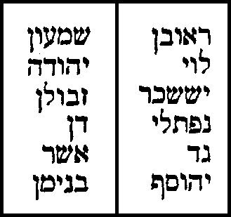

הלכות בית הבחירה הלכות כלי המקדש והעובדים בו הלכות ביאת המקדש הלכות איסורי מזבח הלכות מעשה הקרבנות הלכות תמידין ומוספין הלכות פסולי המוקדשין הלכות עבודת יום הכפורים הלכות מעילה
הלכות בית הבחירה הלכות כלי המקדש והעובדים בו הלכות ביאת המקדש הלכות איסורי מזבח הלכות מעשה הקרבנות הלכות תמידין ומוספין הלכות פסולי המוקדשין הלכות עבודת יום הכפורים הלכות מעילה הלכות בית הבחירה
| פרק ראשון פרק שני פרק שלישי פרק רביעי פרק חמישי פרק ששי פרק שביעי פרק שמיני |
הלכות כלי המקדש והעובדים בו
| פרק ראשון פרק שני פרק שלישי פרק רביעי פרק חמישי פרק ששי פרק שביעי פרק שמיני פרק תשיעי פרק עשירי |
הלכות ביאת המקדש
| פרק ראשון פרק שני פרק שלישי פרק רביעי פרק חמישי פרק ששי פרק שביעי פרק שמיני פרק תשיעי |
הלכות איסורי מזבח
| פרק ראשון פרק שני פרק שלישי פרק רביעי פרק חמישי פרק ששי פרק שביעי |
הלכות מעשה הקרבנות
הלכות תמידין ומוספין
| פרק ראשון פרק שני פרק שלישי פרק רביעי פרק חמישי פרק ששי פרק שביעי פרק שמיני פרק תשיעי פרק עשירי |
הלכות פסולי המוקדשין
הלכות עבודת יום הכפורים
| פרק ראשון פרק שני פרק שלישי פרק רביעי פרק חמישי |
הלכות מעילה
| פרק ראשון פרק שני פרק שלישי פרק רביעי פרק חמישי פרק ששי פרק שביעי פרק שמיני |
ספר עבודה והוא ספר שמיני הלכותיו תשע. וזהו סידורן. הלכות בית הבחירה. הלכות כלי המקדש והעובדים בו. הלכות ביאת המקדש. הלכות איסורי מזבח. הלכות מעשה הקרבנות. הלכות תמידין ומוספין. הלכות פסולי המוקדשין. הלכות עבודת יום הכפורים. הלכות מעילה:
הלכות בית הבחירה
יש בכללן שש מצות. שלש מצות עשה. ושלש מצות לא תעשה. וזה הוא פרטן: א) לבנות בית המקדש. ב) שלא לבנות המזבח גזית. ג) שלא לעלות עליו במעלות. ד) ליראה מן המקדש. ה) לשמרו סביב. ו) שלא להשבית שמירתו: וביאור מצות אלו בפרקים אלו:
הלכות בית הבחירה - פרק ראשון
א מצות עשה לעשות בית לה' מוכן להיות מקריבים בו הקרבנות. וחוגגין אליו שלש פעמים בשנה שנאמר (שמות כה-ח) ''ועשו לי מקדש'' וכבר נתפרש בתורה משכן שעשה משה רבינו. והיה לפי שעה שנאמר (דברים יב-ט) ''כי לא באתם עד עתה'' וגו': ב כיון שנכנסו לארץ העמידו המשכן בגלגל ארבע עשרה שנה שכבשו ושחלקו. ומשם באו לשילה ובנו שם בית של אבנים ופרשו יריעות המשכן עליו ולא היתה שם תקרה. ושס''ט שנה עמד משכן שילה וכשמת עלי חרב ובאו לנוב ובנו שם מקדש. וכשמת שמואל חרב ובאו לגבעון ובנו שם מקדש ומגבעון באו לבית העולמים. וימי נוב וגבעון שבע וחמשים שנה: ג כיון שנבנה המקדש בירושלים נאסרו כל המקומות כולן לבנות בהן בית לה' ולהקריב בהן קרבן. ואין שם בית לדורי הדורות אלא בירושלים בלבד ובהר המוריה שבה נאמר (דברי הימים א כב-א) ''ויאמר דויד זה הוא בית ה' האלהים וזה מזבח לעולה לישראל'' ואומר (תהילים קלב-יד) ''זאת מנוחתי עדי עד'': ד בנין שבנה שלמה כבר מפורש במלכים. וכן בנין העתיד להבנות אע''פ שהוא כתוב ביחזקאל אינו מפורש ומבואר ואנשי בית שני כשבנו בימי עזרא בנוהו כבנין שלמה ומעין דברים המפורשים ביחזקאל: ה ואלו הן הדברים שהן עיקר בבנין הבית. עושין בו קדש וקדש הקדשים ויהיה לפני הקדש מקום אחד והוא הנקרא אולם. ושלשתן נקראין היכל. ועושין מחיצה אחרת סביב להיכל רחוקה ממנו כעין קלעי החצר שהיו במדבר. וכל המוקף במחיצה זו שהוא כעין חצר אהל מועד הוא הנקרא עזרה והכל נקרא מקדש: ו ועושין במקדש כלים. מזבח לעולה ולשאר הקרבנות. וכבש שעולים בו למזבח. ומקומו לפני האולם משוך לדרום. וכיור וכנו לקדש ממנו הכהנים ידיהם ורגליהם לעבודה. ומקומו בין האולם ולמזבח משוך לדרום שהוא שמאל הנכנס למקדש. ומזבח לקטורת ומנורה ושולחן ושלשתן בתוך הקדש לפני קדש הקדשים: ז המנורה בדרום משמאל הנכנס ושולחן מימין שעליו לחם הפנים. ושניהם בצד קדש הקדשים מבחוץ ומזבח הקטורת משוך מבין שניהם לחוץ. ועושין בתוך העזרה גבולין עד כאן לישראל עד כאן לכהנים. ובונים בה בתים לשאר צרכי המקדש כל בית מהם נקרא לשכה: ח כשבונין ההיכל והעזרה בונין באבנים גדולות. ואם לא מצאו אבנים בונין בלבנים ואין מפצלין את אבני הבנין בהר הבית אלא מפצלין אותן ומסתתין אותן מבחוץ ואח''כ מכניסין אותן לבנין. שנאמר (מלכים א ה-לא) ''אבנים גדולות אבנים יקרות ליסד הבית אבני גזית'' ואומר (מלכים א ו-ז) ''ומקבות והגרזן כל כלי ברזל לא נשמע בבית בהבנותו'': ט ואין בונין בו עץ בולט כלל אלא או באבנים או בלבנים וסיד. ואין עושין אכסדרות של עץ בכל העזרה אלא של אבנים או לבנים: י ומרצפין את כל העזרה באבנים יקרות. ואם נעקרה אבן אע''פ שהיא עומדת במקומה. הואיל ונתקלקלה פסולה ואסור לכהן העובד לעמוד עליה בשעת העבודה עד שתקבע בארץ: יא ומצוה מן המובחר לחזק את הבנין ולהגביהו כפי כח הציבור שנאמר (עזרא ט-ט) ''ולרומם את בית אלהינו'' ומפארין אותו ומייפין כפי כחן אם יכולין לטוח אותו בזהב ולהגדיל במעשיו ה''ז מצוה: יב אין בונין את המקדש בלילה שנאמר (במדבר ט-טו) ''וביום הקים את המשכן'' ביום מקימין לא בלילה. ועוסקין בבנין מעלות השחר עד צאת הכוכבים. והכל חייבין לבנות ולסעד בעצמן ובממונם אנשים ונשים כמקדש המדבר. ואין מבטלין תינוקות של בית רבן לבנין. ואין בנין ב''ה דוחה יום טוב: יג המזבח אין עושין אותו אלא בנין אבנים גזית וזה שנאמר בתורה (שמות כ-כא) ''מזבח אדמה תעשה לי'' שיהיה מחובר באדמה שלא יבנוהו לא על גבי כיפין ולא על גבי מחילות. וזה שנאמר (שמות כ-כב) ''ואם מזבח אבנים'' מפי השמועה למדו שאינו רשות אלא חובה: יד כל אבן שנפגמה כדי שתחגור בה הציפורן כסכין של שחיטה הרי זו פסולה לכבש ולמזבח שנאמר (דברים כז-ו) ''אבנים שלמות תבנה את מזבח ה''' ומהיכן היו מביאין אבני מזבח מן בתולת הקרקע חופרין עד שמגיעין למקום הניכר שאינו מקום עבודה ובנין ומוציאין ממנו האבנים. או מן הים הגדול ובונין מהן. וכן אבני ההיכל והעזרות שלמות היו: טו אבני היכל ועזרות שנפגמו או שנגממו פסולין ואין להן פדיון אלא נגנזים. כל אבן שנגע בה הברזל אע''פ שלא נפגמה פסולה לבנין המזבח ובנין הכבש שנאמר (שמות כ-כב) ''כי חרבך הנפת עליה ותחללה'' והבונה אבן שנגע בה ברזל במזבח או בכבש לוקה שנאמר (שמות כ-כב) ''לא תבנה אתהן גזית'' והבונה אבן פגום עובר בעשה: טז אבן שנפגמה או שנגע בה ברזל אחר שנבנית במזבח או בכבש אותה האבן פסולה והשאר כשירות. ומלבנין את המזבח פעמים בשנה בפסח ובחג. וכשמלבנין אותן מלבנין במפה. אבל שלא בכפיס של ברזל שמא ינע באבן ויפסול: יז אין עושין מדרגות למזבח שנאמר (שמות כ-כג) ''לא תעלה במעלות על מזבחי'' אלא בונין כמו תל בדרומו של מזבח מתמעט ויורד מראש המזבח עד הארץ והוא הנקרא כבש. והעולה במעלות על המזבח לוקה. וכן הנותץ אבן אחת מן המזבח או מכל ההיכל או מבין האולם ולמזבח דרך השחתה לוקה שנאמר (דברים יב-ג) ''ונתצתם את מזבחותם'' וגו' (דברים יב-ד) ''לא תעשון כן לה' אלהיכם'': יח המנורה וכליה והשולחן וכליו ומזבח הקטורת וכל כלי שרת אין עושין אותן אלא מן המתכת בלבד. ואם עשאום של עץ או עצם או אבן או של זכוכית פסולין: יט היו הקהל עניים עושין אותן אפילו של בדיל ואם העשירו עושין אותן זהב אפילו המזרקות והשפודין והמגרפות של מזבח העולה והמדות אם יש כח בציבור עושין אותן של זהב אפילו שערי העזרה מחפין אותן זהב אם מצאה ידם: כ אין עושין כל הכלים מתחילתן אלא לשם הקודש. ואם נעשו מתחילתן להדיוט אין עושין אותן לגבוה. וכלי גבוה עד שלא נשתמש בהן גבוה רשאי להשתמש בהן הדיוט. ומשנשתמש בהן גבוה אסורין להדיוט. אבנים וקורות שחצבן מתחלה לבית הכנסת אין בונין אותן להר הבית:
הלכות בית הבחירה - פרק שני
א המזבח מקומו מכוון ביותר. ואין משנין אותו ממקומו לעולם. שנאמר (דברי הימים א כב-א) ''זה מזבח לעולה לישראל'' ובמקדש נעקד יצחק אבינו שנאמר (בראשית כב-ב) ''ולך לך אל ארץ המוריה'' ונאמר בדברי הימים (דברי הימים ב ג-א) ''ויחל שלמה לבנות את בית ה' בירושלים בהר המוריה אשר נראה לדויד אביהו אשר הכין במקום דויד בגרן ארנן היבוסי'': ב ומסורת ביד הכל שהמקום שבנה בו דוד ושלמה המזבח בגורן ארונה הוא המקום שבנה בו אברהם המזבח ועקד עליו יצחק. והוא המקום שבנה בו נח כשיצא מן התיבה. והוא המזבח שהקריב עליו קין והבל. ובו הקריב אדם הראשון קרבן כשנברא ומשם נברא. אמרו חכמים אדם ממקום כפרתו נברא: ג מדות המזבח מכוונות הרבה וצורתו ידועה איש מאיש. ומזבח שבנו בני הגולה כעין מזבח שעתיד להבנות עשוהו ואין להוסיף על מדתו ולא לגרוע ממנה: ד ושלשה נביאים עלו עמהם מן הגולה. אחד העיד להן על מקום המזבח. ואחד העיד להן על מדותיו. ואחד העיד להן שמקריבין על המזבח הזה כל הקרבנות אע''פ שאין שם בית: ה מזבח שעשה משה ושעשה שלמה ושעשו בני הגולה ושעתיד להעשות כולן עשר אמות גובה כל אחד מהן. וזה הכתוב בתורה (שמות כז-א) ''ושלש אמות קומתו'' מקום המערכה בלבד. ומזבח שעשו בני הגולה וכן העתיד להבנות מדת ארכו ורחבו ל''ב אמות על ל''ב אמות: ו י' אמות של גובה המזבח מהן באמה בת ה' טפחים. ומהן באמה בת ששה טפחים ושאר כל אמות הבנין באמה בת ששה טפחים. וגובה כל המזבח נ''ח טפחים: ז וכך היתה מדתו וצורתו. עלה ה' טפחים וכנס חמשה טפחים זהו יסוד. נמצא רוחב שלשים אמה ושני טפחים על רוחב שלשים אמה ושני טפחים. עלה שלשים טפחים וכנס חמשה טפחים זהו סובב [עלה י''ח טפחים זהו מקום המערכה] נמצא רוחבו שמונה ועשרים אמה וארבעה טפחים על כ''ח אמה וד' טפחים [עלה י''ח טפחים וכונס לקרן זוית של הי''ח בנין חלול מרובע לכל ארבע קרנות] ומקום הקרנות אמה מזה ואמה מזה סביב. וכן מקום רגלי הכהנים אמה סביב נמצא מקום המערכה רוחבו עשרים וארבע אמות וארבעה טפחים על עשרים וארבע אמות וארבעה טפחים: ח גובה כל קרן וקרן חמשה טפחים. ורבוע כל קרן אמה על אמה. וארבע הקרנות חלולות היו מתוכן. וגובה מקום המערכה י''ח טפחים. נמצא חצי גובה המזבח כ''ט טפחים מסוף הסובב ולמטה: ט וחוט של סקרה היה חוגר באמצע המזבח [כששה טפחים מסוף הסובב ולמטה] להבדיל בין דמים העליונים לדמים התחתונים. ונמצא גובהו מן הארץ עד מקום המערכה תשע אמות פחות טפח: י יסוד המזבח לא היה מקיף מארבע רוחותיו כמו הסובב. אלא היה היסוד משוך כנגד כל רוח צפון ומערבי ואוכל בדרום אמה אחת ובמזרח אמה אחת וקרן דרומית מזרחית לא היה לה יסוד: יא ובקרן מערבית דרומית היו שני נקבים כמין שני חוטמין דקין. והן הנקראין שיתין שהדמים יורדין בהן ומתערבין באותה הקרן באמה ויוצאין לנחל קדרון: יב ולמטה ברצפה באותו הקרן היה מקום אמה על אמה וטבלא של שיש וטבעת קבועה בה שבו יורדין לשיתין ומנקין אותו: יג וכבש היה בנוי לדרומו של מזבח. ארכו שלשים ושתים אמה על רוחב ט''ז אמה והיה אוכל בארץ שלשים אמה מצד המזבח. ופורח ממנו אמה על היסוד ואמה על הסובב. ואויר מעט היה מפסיק בין הכבש למזבח כדי ליתן האיברים למזבח בזריקה. וגובה הכבש תשע אמות פחות שתות עד כנגד המערכה: יד ושני כבשים קטנים יוצאים ממנו שבהם פונים ליסוד ולסובב ומובדלין מן המזבח כמלא נימא. וחלון היתה במערבו של כבש אמה על אמה ורבובה היתה נקראת. שבה נותנין פסולי חטאת העוף עד שתעבור צורתה ותצא לבית השריפה: טו ושני שולחנות היו במערב הכבש אחד של שיש שנותנין עליו את האיברים ואחד של כסף שנותנין עליו כלי השרת: טז כשבונין המזבח בונין אותו כולו אטום כמין עמוד ואין עושין בו חלל כלל. אלא מביא אבנים שלמות גדולות וקטנות ומביא סיד וזפת וקונייא וממחה ושופך לתוך מלבן גדול כמדתו ובונה ועולה. ונותן בתוך הבנין גוף של עץ או אבן בקרן דרומית מזרחית כמדת היסוד. וכן נותן בתוך כל קרן וקרן עד שישלים הבנין ויסיר הגופים שבתוך הבנין כדי שתשאר קרן דרומית מזרחית בלא יסוד וישארו הקרנות חלולין: יז ארבע קרנות של מזבח ויסודו ורבועו מעכבין. וכל מזבח שאין לו קרן יסוד וכבש וריבוע הרי הוא פסול שארבעתן מעכבין. אבל מדת ארכו ומדת רחבו ומדת קומתו אינן מעכבין. והוא שלא יפחות מאמה על אמה ברום שלש אמות כשיעור מקום המערכה של מזבח מדבר: יח מזבח שנפגם מבניינו אם נפגם מבניינו טפח פסול פחות מטפח כשר והוא שלא יהיה בנשאר אבן פגומה:
הלכות בית הבחירה - פרק שלישי
א המנורה מפורשת צורתה בתורה. וארבעה גביעים ושני כפתורים ושני פרחים היו בקנה המנורה שנאמר (שמות כה-לד) (שמות לז-כ) ''ובמנורה ארבעה גביעים משוקדים כפתוריה ופרחיה'' ועוד פרח שלישי היה סמוך ליריכה של מנורה שנאמר (במדבר ח-ד) ''עד ירכה עד פרחה'': ב ושלש רגלים היו לה. ושלשה כפתורים אחרים היו בקנה המנורה שמהן יוצאים ששת הקנים. שלשה מצד זה ושלשה מצד זה. ובכל קנה וקנה מהן שלשה גביעים וכפתור ופרח. והכל משוקדים כמו שקדים בעשייתן: ג נמצאת כל הגביעים שנים ועשרים. והפרחים תשעה. והכפתורים אחד עשר. וכולן מעכבין זה את זה ואפילו חסר אחד מן השנים וארבעים מעכב את כולן: ד בד''א בשעשאוה זהב אבל שאר מיני מתכות אין עושין בה גביעים כפתורים ופרחי'. וכן מנורה הבאה זהב תהיה כולה ככר עם נרותיה ותהיה כולה מקשה מן העשתות. ושל שאר מיני מתכות אין מקפידין על משקלה. ואם היתה חלולה כשירה: ה ואין עושין אותה לעולם מן הגרוטאות בין שהיתה של זהב בין שהיתה של שאר מיני מתכות: ו המלקחים והמחתות וכלי השמן אינן מכלל הככר שהרי נאמר במנורה (שמות כה-לא) (שמות לז-יז) ''זהב טהור'' וחזר ואמר (שמות כה-לח) (שמות לז-כג) ''ומלקחיה ומחתותיה זהב טהור'' ולא נאמר נרותיה זהב טהור מפני שהנרות קבועין במנורה והם מכלל הככר: ז שבעת קני המנורה מעכבין זה את זה. ושבעת נרותיה מעכבין זה את זה בין שהיתה של זהב בין שהיתה של שאר מיני מתכות. וכל הנרות קבועים בקנים: ח ששת הנרות הקבועים בששת הקנים היוצאים מן המנורה כולן פניהם לנר האמצעי שעל קני המנורה וזה הנר האמצעי פניו כנגד קדש הקדשים והוא הנקרא נר מערבי: ט הגביעים דומין לכוסות אלכסנדריאה שפיהן רחב ושוליהן קצר. והכפתורים כמין תפוחים כרותיים שהן ארוכין מעט כביצה ששני ראשיה כדין. והפרחים כמו פרחי העמודים שהן כמין קערה ושפתה כפולה לחוץ: י גובה המנורה היה שמונה עשר טפח. הרגלים והפרח שלשה טפחים. ושני טפחים חלק. וטפח שבו גביע כפתור ופרח. וטפחיים חלק. וטפח כפתור ושני קנים יוצאין ממנו אחד הילך ואחד הילך ונמשכים ועולין כנגד גובה המנורה. וטפח חלק. וטפח כפתור ושני קנים יוצאים ממנו אחר הילך ואחד הילך ונמשכין ועולין כנגד גובה המנורה. וטפח חלק. וטפח כפתור ושני קנים יוצאים ממנו אחד הילך ואחד הילך ונמשכין ועולין כנגד גובה המנורה. וטפחיים חלק. נשתיירו שלשה טפחים שבהן שלשה גביעים כפתור ופרח: יא ואבן היתה לפני המנורה ובה שלש מעלות שעליה כהן עומד ומטיב את הנרות ומניח עליה כלי שמנה ומלקחיה ומחתותיה בשעת הטבה: יב השלחן היה ארכו שנים עשר טפח ורחבו ששה טפחים. והיה מונח ארכו לאורך הבית ורוחבו לרוחב הבית וכן שאר כל הכלים שבמקדש אורכן לאורכו של בית ורחבן לרוחב הבית חוץ מן הארון שהיה אורכו לרוחב הבית. וכן נרות המנורה כנגד רוחב הבית בין הצפון ובין הדרום: יג ארבעה סניפין של זהב היו לשלחן מפוצלין בראשיהן שהיו סומכין בהן שתי המערכות של לחם הפנים. שנים מסדר זה. ושנים מסדר זה. והם הנאמרים בתורה (שמות כה-כט) ''וקשותיו'': יד וכ''ח קנים של זהב כל אחד מהן כחצי קנה חלול היו לו. ארבעה עשר לסדר זה וארבעה עשר לסדר זה. והם הנקראים (שמות כה-כט) ''מנקיותיו''. ושני הבזיכין שמניחין בהן הלבונה על השולחן בצד המערכות הן הנקראין (שמות כה-כט) ''כפותיו''. והדפוסין שעושין בהם להם הפנים הם הנקראים (שמות כה-כט) ''קערותיו'': טו אלו הארבעה עשר קנים נותן החלה הראשונה על עצמו של שולחן ונותן בין ראשונה ושנייה שלשה קנים. וכן בין כל חלה וחלה שלשה קנים ובין ששית וחמישית שני קנים בלבד. לפי שאין על הששית אחרת נמצאו ארבעה עשר בכל מערכה ומערכה: טז ושני שולחנות היו באולם מבפנים על פתח הבית. אחד של שיש נותנין עליו לחם הפנים בכניסתו. ואחד של זהב נותנין עליו לחם ביציאתו שמעלין בקדש ולא מורידין: יז מזבח הקטרת היה מרובע אמה על אמה. והוא נתון בהיכל מכוון בין הצפון לדרום משוך בין השלחן והמנורה לחוץ. ושלשתן היו מונחין משליש ההיכל ולפנים כנגד הפרוכת המבדיל בין הקדש ובין קדש הקדשים: יח הכיור היו לו שנים עשר דד כדי שיהיו כל הכהנים העוסקים בתמיד מקדשים ממנו כאחד. ומוכני עשו לו שיהיו בה המים תמיד. והיא חול כדי שלא יהיו המים שבה נפסלין בלינה שהכיור מכלי הקדש ומקדש וכל דבר שיתקדש בכלי קדש אם לן נפסל:
הלכות בית הבחירה - פרק רביעי
א אבן היתה בקדש הקדשים במערבו שעליה היה הארון מונח. ולפניו צנצנת המן ומטה אהרן. ובעת שבנה שלמה את הבית וידע שסופו ליחרב בנה בו מקום לגנוז בו הארון למטה במטמוניות עמוקות ועקלקלות ויאשיהו המלך צוה וגנזו במקום שבנה שלמה שנאמר (דברי הימים ב לה-ג) ''ויאמר ללוים המבינים לכל ישראל הקדושים לה' תנו את ארון הקדש בבית אשר בנה שלמה בן דויד מלך ישראל אין לכם משא בכתף עתה עבדו את ה' אלהיכם'' וגו'. ונגנז עמו מטה אהרן והצנצנת ושמן המשחה וכל אלו לא חזרו בבית שני. ואף אורים ותומים שהיו בבית שני לא היו משיבין ברוח הקדש. ולא היו נשאלין בהן שנאמר (עזרא ב-סג) (נחמיה ז-סה) ''עד עמוד כהן לאורים ותומים'' ולא היו עושין אותן אלא להשלים שמנה בגדים לכהן גדול כדי שלא יהא מחוסר בגדים: ב בבית ראשון היה כותל מבדיל בין הקדש ובין קדש הקדשים עביו אמה. וכיון שבנו הבית שני נסתפק להם אם עובי הכותל היה ממדת הקדש או ממדת קדש הקדשים לפיכך עשו קדש הקדשים עביו עשרים אמה תמימות ועשו הקדש ארבעים אמה תמימות והניחו אמה יתירה בין הקדש ובין קדש הקדשים ולא בנו כותל בבית שני אלא עשו שתי פרוכות אחת מצד קדש הקדשים ואחת מצד הקדש וביניהן אמה כנגד עובי הכותל שהיה בראשון. אבל במקדש ראשון לא היתה שם אלא פרכת אחת בלבד שנאמר (שמות כו-לג) ''והבדילה הפרכת לכם'' וגו: ג ההיכל שבנו בני גולה היה מאה אמה על מאה אמה על רום מאה. וכן היתה מדת רומו בנו גובה שש אמות אטום סתום כמו יסוד לו. ורום כותלי הבית ארבעים אמה ורום הכיור שבתקרה אמה ועל גביו גובה שתי אמות פנוי שיכנס בו הדלף והוא הנקרא בית דילפא. ועובי התקרה שעל גבי בית דילפא אמה. ומעזיבה גובה אמה. ועלייה בנויה על גביו גובה כותליה ארבעים אמה. ובגגה גובה אמה כיור ואמתים גובה בית דילפא ואמה תקרה ואמה מעזיבה וגובה המעקה שלש אמות וטס של ברזל כמו סייף גובהו אמה על גבי המעקה סביב כדי שלא ינוחו עליו העופות והוא הנקרא כלה עורב. הרי הכל מאה אמה: ד מן המערב למזרח מאה אמה וזהו חשבונן. ארבעה כתלים זה לפנים מזה וביניהן שלשה מקומות פנויין. בין הכותל המערבי ובין הכותל שלפנים ממנו חמש אמות ובין כותל שני ושלישי שש אמות ובין כותל שלישי ורביעי שש אמות. ואלו המדות הן של עובי הכותל עם המקום הפנוי שבין שני כותלים. ואורך קדש הקדשים עשרים אמה. ובין שתי הפרוכות המבדילות בינו ובין הקדש אמה. ואורך הקדש ארבעים אמה. ועובי הכותל המזרחי שבו השער שש אמות והאולם אחת עשרה אמה. ועובי כותל האולם חמש אמות. נמצא הכל מאה אמה: ה מן הצפון לדרום מאה אמה. עובי כותל האולם חמש אמות. ומכותל אולם עד כותל הקדש עשר אמות. וכותלי הקדש ששה כתלים זה לפנים מזה וביניהן חמשה מקומות פנויין. בין כותל חיצון ובין השני חמש אמות. ובין שני ושלישי שלש אמות וחמש בין שלישי ורביעי. ובין רביעי וחמישי שש. ובין חמישי וכותל הפנימי שש נמצא הכל ארבעים אמה מצד זה. וארבעים אמה מצד שכנגדו ורוחב הבית מבפנים עשרים. הרי מאה אמה: ו הפשפש והוא שער הקטן. ושני פישפשין היו להיכל מצדי השער הגדול שבאמצע. אחד בצפון ואחד בדרום. שבדרום לא נכנס בו אדם מעולם ועליו הוא מפורש על ידי יחזקאל (יחזקאל מד-ב) ''השער הזה סגור יהיה לא יפתח''. ושבצפון בו נכנסין. ומהלך בין שני הכתלים עד שמגיע למקום פתוח לקדש משמאלו ונכנס לתוך ההיכל ומהלך עד שער הגדול ופותחו: ז השער הגדול היה רחבו עשר אמות וגובהו עשרים אמה. וארבע דלתות היו לו שתים בפנים ושתים בחוץ. החיצונות נפתחות לתוך הפתח לכסות עוביו של כותל והפנימיות נפתחות לתוך הבית לכסות אחורי הדלתות: ח פתחו של אולם היה גבוה ארבעים אמה ורוחב עשרים ולא היה לו שערים וחמש מלתריות של מילא היו על גבי פתחו מלמעלה. התחתונה עודפת על הפתח אמה מזה ואמה מזה. וכל אחת מחמשתן עודפת על שלמטה ממנה אמה מזה ואמה מזה. נמצאת העליונה שלשים אמה ונדבך של אבנים היה בין כל אחת ואחת: ט ההיכל היה בניינו רחב מלפניו וצר מאחוריו כמו ארי. ויציעים היו מקיפין לבית כולו מסביב חוץ לכותל המסיבה. ויציע התחתונה חמש ורובד על גבה שש ויציע אמצעית שש ורובד על גבה ז' והעליונה ז' שנאמר (מלכים א ו-ו) ''היציע התחתונה'' וגו'. וכן היו השלש יציעים מקיפים לבית משלשה רוחותיו וכן סביב לכתלי האולם מלמטה עד למעלה כך היו אמה אחת חלק ורובד שלש אמות. ואמה חלק ורובד שלש אמות עד למעלה. ונמצאו הרובדין מוקפין לכתלים. רוחב כל רובד שלש אמות עד למעלה. ובין כל רובד ורובד אמה ורובד העליון היה רוחבו ארבע אמות: י כל אלו המקומות הפנויים שבין הכתלים הם הנקראים תאים. נמצאו התאים המוקפין למקדש חמשה מן הצפון וחמשה מן הדרום ושלשה מן המערב. ושלש דיוטות היו דיוטא על גבי דיוטא נמצאו ט''ו תאים בדרום חמשה ע''ג חמשה וחמשה על גבייהן וכן בצפון חמשה עשר. ושמונה תאים היו במערב שלשה על גבי שלשה ושנים על גביהן בדיוטא אחת הכל ל''ח תאים: יא ג' פתחים היו לכל אחד ואחד מן התאים. אחד לתא מן הימין. ואחד לתא מן השמאל. ואחד לתא שעל גביו. ובקרן מזרחית צפונית בתא שבדיוטא האמצעית היו חמשה פתחים. אחד לתא מימין. ואחד לתא שעל גביו. ואחד למסיבה. ואחד לתא שיש בו הפשפש. ואחד להיכל: יב ומסיבה היתה עולה מקרן מזרחית צפונית לקרן צפונית מערבית שבה היו עולין לגגות התאים. היה עולה במסיבה ופניו למערב הלך את כל פני הצפון עד שהוא מגיע למערב. הגיע למערב הפך פניו לדרום הלך את כל פני המערב עד שהוא מגיע לדרום. הגיע לדרום הפך פניו למזרח והיה מהלך לדרום עד שהוא מגיע לפתחה של עלייה שפתחה של עלייה היה פתוח לדרום: יג ובפתחה של עלייה היו שתי כלונסות של ארז שבהן עולין לגגה של עלייה. וראשי פספסין היו מבדילין בעלייה בין גג הקדש לגג קדש הקדשים. ולולין היו פתוחין בעלייה לבית קדש הקדשים שבהן משלשלין את האומנין בתיבות כדי שלא יזונו עיניהם מבית קדש הקדשים. ופעם אחת בשנה מפסח לפסח מלבנין את ההיכל:
הלכות בית הבחירה - פרק חמישי
א הר הבית והוא הר המוריה היה חמש מאות אמה על חמש מאות אמה והיה מוקף חומה. וכיפין על גבי כיפין היו בנויות מתחתיו. מפני אהל הטומאה. וכולו היה מקורה סטיו לפנים מסטיו: ב וחמשה שערים היו לו. אחד מן המערב ואחד מן המזרח ואחד מן הצפון ושנים מן הדרום. רוחב כל שער עשר אמות וגובהו עשרים. ויש להם דלתות: ג לפנים ממנו סורג מקיף סביב גובהו י' טפחים ולפנים מן הסורג החיל [גובהו] עשר אמות. ועליו הוא אומר בקינות (איכה ב-ח) ''ויאבל חל וחומה'' זו חומת העזרה: ד לפנים מן החיל העזרה, וכל העזרה היתה אורך קפ''ז על רוחב קל''ח. ושבעה שערים היו לה. ג' מן הצפון הסמוכין למערב. וג' מן הדרום סמוכין למערב. ואחד במזרח מכוון כנגד בית קדש הקדשים באמצע: ה כל שער מהן היה רוחבו עשר אמות וגובהו כ' אמה. והיו לו דלתות מחופות זהב. חוץ משער מזרחי שהיה מצופה נחושת דומה לזהב. ושער זה הוא הנקרא שער העליון והוא שער ניקנור: ו העזרה לא היתה מכוונת באמצע הר הבית. אלא רחוקה מדרום הר הבית יתר מכל הרוחות וקרובה למערב יתר מכל הרוחות. ובינה ובין הצפון יתר ממה שבינה ובין המערב. ובינה ובין המזרח יתר ממה שבינה ובין הצפון: ז ולפני העזרה במזרח היתה עזרת הנשים. והיא חיתה אורך ק' אמה ול''ה על רוחב קל''ה. וארבע לשכות היו בארבע מקצעותיה של ארבעים ארבעים אמה ולא היו מקורות וכן עתידין להיות: ח ומה הם משמשות. דרומית מזרחית לשכת הנזירים ששם מבשלין את שלמיהם ומגלחין את שערם. מזרחית צפונית לשכת דיר העצים ששם כהנים בעלי מומין מתליעים בעצים. שכל עץ שנמצא בו תולעת פסול. צפונית מערבית לשכת המצורעים. מערבית דרומית בה היו נותנין יין ושמן והיא היתה נקראה לשכת בית שמניא: ט עזרת הנשים היתה מוקפת גזוזטרא כדי שיהיו הנשים רואות מלמעלן והאנשים מלמטן כדי שלא יהיו מעורבבין. ובית גדול היה בצד העזרה בצפונה מבחוץ בין העזרה והחיל והיה בנוי כיפה ומוקף רובדין של אבן והוא היה נקרא בית המוקד. ושני פתחים היו לו אחד פתוח לעזרה ואחד פתוח לחיל: י וארבע לשכות היו בו. שתים קודש ושתים חול. וראשי פספסין מבדילין בין הקדש והחול. ומה היו משמשות מערבית דרומית לשכת הטלאים. ודרומית מזרחית לשכת עושי לחם הפנים. מזרחית צפונית בה גנזו בית חשמוני אבני מזבח ששקצום מלכי יון. צפונית מערבית בה יורדין לבית הטבילה: יא היורד לבית הטבילה מלשכה זו היה הולך במסיבה ההולכת תחת המקדש כולו והנרות דולקות מכאן ומכאן עד שמגיע לבית הטבילה. ומדורה היתה שם. ובית הכסא של כבוד וזהו כבודו. מצאו נעול בידוע שיש שם אדם: יב אורך העזרה מן המזרח למערב קפ''ז וזהו חשבונן. מכותל מערבי של עזרה עד כותל ההיכל אחת עשרה אמה. ואורך ההיכל כולו מאה אמה. בין האולם ולמזבח שתים ועשרים. המזבח שתים ושלשים. מקום דריסת רגלי הכהנים והוא הנקרא עזרת כהנים אחת עשרה אמה. מקום דריסת רגלי ישראל והוא הנקרא עזרת ישראל אחת עשרה אמה: יג ורוחב העזרה מן הצפון לדרום מאה ושלשים וחמש וזהו חשבונן. מכותל צפוני עד בית המטבחים שמונה אמות. בית המטבחים י''ב אמות ומחצה. ושם תולין ומפשיטין את הקדשים בצדו: יד מקום השולחנות שמונה אמות ובו שולחנות של שיש שמניחין עליהן הנתחים ומדיחין את הבשר לבשלו. ושמנה שלחנות היו. ובצד מקום השלחנות מקום הטבעות כ''ד אמה. ושם שוחטין את הקדשים: טו ובין מקום הטבעות והמזבח שמונה אמות והמזבח ל''ב. והכבש שלשים. ובין הכבש ולכותל דרומי י''ב אמה ומחצה. מכותל צפוני של עזרה עד כותל המזבח שהוא רוחב ששים ומחצה. וכנגדו מכותל האולם עד כותל מזרחי של עזרה שהוא אורך שש ושבעים: טז כל המרובע הזה הוא הנקרא צפון הוא המקום ששוחטין בו קדשי קדשים: יז שמונה לשכות היו בעזרת ישראל. ג' בצפון. וג' בדרום. שבדרום לשכת המלח. לשכת הפרוה. לשכת המדיחין. לשכת המלח שם נותנין מלח לקרבן. לשכת הפרוה שם מולחין עורות הקדשים. ועל גגה היתה בית טבילה לכהן גדול ביום הכפורים. לשכת המדיחין שם היו מדיחין קרבי הקדשים ומשם מסיבה עולה לגג בית הפרוה. והשלש שבצפון לשכת הגזית. לשכת הגולה. לשכת העץ. לשכת הגזית שבה סנהדרי גדולה יושבת. וחציה היה קדש וחציה היה חול. ולה שני פתחים אחד לקדש ואחד לחול ובחצי של חול היו הסנהדרין יושבין. לשכת הגולה שם היתה בור שממלאין ממנו בגולה ומשם מספקין מים לכל העזרה. ולשכת העץ היתה אחורי שתיהן והיא היתה לשכת כ''ג והיא הנקראת לשכת פרהדרין. וגג שלשתן שוה. ושתי לשכות אחרות היו שם בעזרת ישראל. אחת מימין שער מזרחי והוא לשכת פנחס המלביש. ואחת משמאלו והוא לשכת עושה חביתין:
הלכות בית הבחירה - פרק ששי
א המקדש כולו לא היה במישור אלא במעלה ההר. כשאדם נכנס משער מזרחי של הר הבית מהלך עד סוף החיל בשוה. ועולה מן החיל לעזרת הנשים בשתים עשרה מעלות רום כל מעלה חצי אמה ושלחה חצי אמה: ב ומהלך כל עזרת הנשים בשוה. ועולה ממנה לעזרת ישראל שהוא תחלת העזרה בחמש עשרה מעלות. רום כל מעלה חצי אמה ושלחה חצי אמה: ג ומהלך כל עזרת ישראל בשוה ועולה ממנו לעזרת הכהנים במעלה גבוהה אמה ועליה דוכן יש בו שלש מעלות רום כל מעלה חצי אמה ושלחה חצי אמה נמצאת עזרת הכהנים גבוהה על של ישראל שתי אמות ומחצה: ד ומהלך כל עזרת הכהנים והמזבח. ובין האולם ולמזבח בשוה. ועולה משם לאולם בשתים עשרה מעלות. רום כל מעלה חצי אמה ושלחה חצי אמה והאולם וההיכל כולו בשוה: ה נמצא גובה קרקע ההיכל על קרקע שער המזרח של הר הבית שתים ועשרים אמות. וגובה שער הר חבית עשרים אמה. לפיכך העומד כנגד שער המזרח אינו רואה פתח ההיכל. ומפני זה עשו כותל שעל גבי שער זה נמוך. כדי שיחא כהן העומד בהר המשחה רואה פתח ההיכל בשעה שמזה מדם הפרה נוכח ההיכל: ו ולשכות היו שם תחת עזרת ישראל פתוחות לעזרת הנשים. ששם הלוים נותנין הכנורות והנבלים והמצלתים וכל כלי השיר. ועל הדוכן העולה מעזרת ישראל לעזרת הכהנים היו הלוים עומדים בשעה שאומרים שירה על הקרבן: ז הלשכות הבנויות בקדש ופתוחות לחול אם היו גגותיהן שוין עם קרקע העזרה תוכן חול וגגותיהן קדש ואם אינן שוין אף גגותיהן חול שהגגות והעליות לא נתקדשו. לפיכך גגים אלו אין אוכלין שם קדשי קדשים ולא שוחטין קדשים קלים: ח היו בנויות לחול ופתוחות לקדש תוכן קדש לאכילת קדשי קדשים אבל אין שוחטין שם קדשים קלים והנכנס לשם בטומאה פטור. וגגותיהן חול לכל דבר: ט המחילות הפתוחות לעזרה קודש והפתוחות להר הבית חול. החלונות ועובי החומה כלפנים בין לאכילת קדשי קדשים בין לטומאה: י בית דין שרצו להוסיף על ירושלים או להוסיף על העזרה מוסיפין. ויש להם למשוך העזרה עד המקום שירצו מהר הבית ולמשוך חומת ירושלים עד מקום שירצו: יא אין מוסיפין על העיר או על העזרות אלא על פי המלך וע''פ נביא ובאורים ותומים ועל פי סנהדרין של שבעים ואחד זקנים שנאמר (שמות כה-ט) ''ככל אשר אני מראה אותך'' וכן תעשו לדורות. ומשה רבינו מלך היה: יב וכיצד מוסיפין על העיר עושין בית דין שתי תודות ולוקחין לחם חמץ שבהם והולכים בית דין אחר שתי התודות ושתי התודות זו אחר זו ועומדין בכנורות ובנבלים ובצלצל על כל פנה ופנה ועל כל אבן (ואבן) שבירושלים ואומר (תהילים ל-ב) ''ארוממך ה' כי דליתני'' וגו'. עד שמגיעין לסוף המקום שמקדשין אותו ועומדין שם. ואוכלים שם לחם תודה אחת משתי התודות והשנייה נשרפת וע''פ הנביא שורפין את זו ואוכלין את זו: יג וכן אם הוסיפו על העזרה מקדשין אותה בשיירי המנחה מה ירושלים התודה שנאכלת בה מקדשתה אף העזרה שיירי המנחות שאין נאכלין אלא בה הן שמקדשין אותה בהן ואוכלין אותן בסוף המקום שקדשו: יד כל מקום שלא נעשה בכל אלו וכסדר הזה אין קדוש גמור וזה שעשה עזרא שתי תודות זכרון הוא שעשה לא במעשיו נתקדש המקום שלא היה שם לא מלך ולא אורים ותומים. ובמה נתקדשה בקדושה ראשונה שקדשה שלמה שהוא קידש העזרה וירושלים לשעתן וקידשן לעתיד לבא: טו לפיכך מקריבין הקרבנות כולן אע''פ שאין שם בית בנוי. ואוכלין קדשי קדשים בכל העזרה אע''פ שהיא חריבה ואינה מוקפת במחיצה ואוכלין קדשים קלים ומעשר שני בכל ירושלים אף על פי שאין שם חומות שהקדושה ראשונה קדשה לשעתה וקדשה לעתיד לבא: טז ולמה אני אומר במקדש וירושלים קדושה ראשונה קדשה לעתיד לבוא. ובקדושת שאר א''י לענין שביעית ומעשרות וכיוצא בהן לא קדשה לעתיד לבוא. לפי שקדושת המקדש וירושלים מפני השכינה אינה בטלה. והרי הוא אומר (ויקרא כו-לא) ''והשמותי את מקדשיכם'' ואמרו חכמים אע''פ ששוממין בקדושתן הן עומדים אבל חיוב הארץ בשביעית ובמעשרות אינו אלא מפני שהוא כבוש רבים וכיון שנלקחה הארץ מידיהם בטל הכבוש ונפטרה מן התורה ממעשרות ומשביעית שהרי אינה מן ארץ ישראל. וכיון שעלה עזרא וקדשה לא קדשה בכיבוש אלא בחזקה שהחזיקו בה ולפיכך כל מקום שהחזיקו בה עולי בבל ונתקדש בקדושת עזרא השנייה הוא מקודש היום ואע''פ שנלקח הארץ ממנו וחייב בשביעית ובמעשרות על הדרך שביארנו בהלכות תרומה:
הלכות בית הבחירה - פרק שביעי
א מצות עשה ליראה מן המקדש שנאמר (ויקרא יט-ל) (ויקרא כו-ב) ''ומקדשי תיראו'' ולא מן המקדש אתה ירא אלא ממי שצוה על יראתו: ב ואי זו היא יראתו לא יכנס אדם להר הבית במקלו או במנעל שברגליו או באפונדתו או באבק שעל רגליו או במעות הצרורין לו בסדינו ואין צ''ל שאסור לרוק בכל הר הבית אלא אם נזדמן לו רוק מבליעו בכסותו. ולא יעשה הר הבית דרך שיכנס מפתח זו ויצא מפתח שכנגדה כדי לקצר הדרך אלא יקיפו מבחוץ. ולא יכנס לו אלא לדבר מצוה: ג וכל הנכנסין להר הבית נכנסין דרך ימין ומקיפין ויוצאין דרך שמאל חוץ ממי שארעו דבר שהוא מקיף על השמאל לפיכך היו שואלין לו מה לך מקיף על השמאל. שאני אבל השוכן בבית הזה ינחמך. שאני מנודה השוכן בבית הזה יתן בלבבך ותשמע לדברי חבריך ויקרבוך: ד כל שהשלים עבודה ונסתלק לו אינו יוצא ואחוריו להיכל אלא מהלך אחורנית מעט מעט ומהלך בנחת על צדו עד שיצא מן העזרה. וכן אנשי משמר ואנשי מעמד ולוים מדוכנן כך. הם יוצאין מן המקדש כמי שפוסע אחר תפלה לאחוריו. כל זה ליראה מן המקדש: ה לא יקל אדם את ראשו כנגד שער מזרחי של עזרה שהוא שער ניקנור. מפני שהוא מכוון כנגד בית קדש הקדשים. וכל הנכנס לעזרה יהלך בנחת במקום שמותר לו להכנס לשם. ויראה עצמו שהוא עומד לפני ה' כמו שנאמר (מלכים א ט-ג) (דברי הימים ב ז-טז) ''והיו עיני ולבי שם כל הימים'' ומהלך באימה וביראה ורעדה שנאמר (תהילים נה-טו) ''בבית אלהים נהלך ברגש'': ו ואסור לכל אדם לישב בכל העזרה ואין ישיבה בעזרה אלא למלכי בית דוד בלבד שנאמר (שמואל ב ז-יח) (דברי הימים א יז-טז) ''ויבא המלך דוד וישב לפני ה''' והסנהדרין שהיו יושבין בלשכת הגזית לא היו יושבין אלא בחציה של חול: ז אע''פ שהמקדש היום חרב בעונותינו חייב אדם במוראו כמו שהיה נוהג בו בבניינו. לא יכנס אלא למקום שמותר להכנס לשם ולא ישב בעזרה ולא יקל ראשו כנגד שער המזרח שנאמר (ויקרא יט-ל) (ויקרא כו-ב) ''את שבתותי תשמורו ומקדשי תיראו'' מה שמירת שבת לעולם אף מורא מקדש לעולם שאע''פ שחרב בקדושתו עומד: ח בזמן שהמקדש בנוי אסור לו לאדם להקל את ראשו מן הצופים שהוא חוץ לירושלים ולפנים. והוא שיהיה רואה את המקדש. ולא יהיה גדר מפסיק בינו ובין המקדש: ט אסור לאדם לעולם שיפנה או שיישן בין מזרח למערב. ואין צריך לומר שאין קובעין בית הכסא בין מזרח למערב בכל מקום מפני שההיכל במערב. לפיכך לא יפנה למערב ולא למזרח מפני שהוא כנגד המערב. אלא בין צפון לדרום נפנים וישנים. וכל המטיל מים מן הצופים ולפנים לא ישב ופניו כלפי הקדש אלא לצפון או לדרום או יסלק הקדש לצדדין: י ואסור לאדם שיעשה בית תבנית היכל. אכסדרא תבנית אולם. חצר כנגד העזרה. שולחן בצורת שולחן. ומנורה בצורת מנורה. אבל עושה הוא מנורה של חמשה קנים או של שמונה קנים או מנורה שאינה של מתכת אע''פ שיש לה שבעה קנים: יא שלש מחנות היו במדבר. מחנה ישראל והוא ארבע מחנות ומחנה לויה שנאמר בה (במדבר א-נ) ''וסביב למשכן יחנו'' ומחנה שכינה והוא מפתח חצר אהל מועד ולפנים. וכנגדן לדורות. מפתח ירושלים עד הר הבית כמחנה ישראל. ומפתח הר הבית עד פתח העזרה שהוא שער ניקנור כמחנה לויה. ומפתח העזרה ולפנים מחנה שכינה. והחיל ועזרת הנשים מעלה יתירה בבית עולמים: יב כל ארץ ישראל מקודשת מכל הארצות. ומה היא קדושתה שמביאין ממנה העומר ושתי הלחם והביכורים מה שאין מביאין כן משאר ארצות: יג עשר קדושות הן בארץ ישראל וזו למעלה מזו. עיירות המוקפות חומה מקודשות משאר הארץ שמשלחין מתוכן את המצורעים ואין קוברין בתוכן מת עד שירצו שבעה טובי העיר או כל אנשי העיר. ואם יצא המת חוץ לעיר אין מחזירין אותו לתוכה אע''פ שרצו כולן להחזירו. רצו בני העיר להוציא הקבר מן המדינה מפנין אותו. וכל הקברות מפנין חוץ מקבר נביא או מלך. קבר שהקיפתו העיר בין מד' רוחותיו בין משתי רוחות זו כנגד זו אם היתה בינו ובין העיר יתר מחמשים אמה לכאן וחמשים לכאן אין מפנין אותו עד שירצו כולן. פחות מכאן מפנין אותו: יד ירושלים מקודשת משאר העיירות המוקפות חומה. שאוכלין קדשים קלים ומעשר שני לפנים מחומתה. ואלו דברים שנאמרו בירושלים. אין מלינין בה את המת. ואין מעבירין בתוכה עצמות אדם ואין משכירין בתוכה בתים. ואין נותנין בתוכה מקום לגר תושב. ואין מקיימין בה קברות חוץ מקברי בית דוד וקבר חולדה שהיו בה מימות נביאים הראשונים. ואין נוטעין בה גנות ופרדסים. ואינה נזרעת ואינה נתר. שת שמא תסרח. ואין מקיימין בה אילנות חוץ מגינת ורדים שהיתה שם מימות נביאים הראשונים. ואין מקיימין בה אשפה מפני השרצים. ואין מוציאין הימנה זיזין וגזוזטראות לר''ה מפני אהל הטומאה. ואין עושין בה כבשונות מפני העשן. ואין מגדלין בה תרנגולות מפני הקדשים. וכן לא יגדלו הכהנים תרנגולים בכל א''י מפני הטהרות. ואין הבית נחלט בה. ואינו מטמא בנגעים. ואינה נעשית עיר הנדחת. ואינה מביאה עגלה ערופה לפי שלא נתחלקה לשבטים: טו הר הבית מקודש ממנה שאין זבין וזבות נדות ויולדות נכנסין לשם. ומותר להכניס המת עצמו להר הבית ואין צריך לומר טמא מת שהוא נכנס לשם: טז החיל מקודש ממנו שאין עכו''ם וטמא מת ובועל נדה נכנסים לשם: יז עזרת הנשים מקודשת מן החיל שאין טבול יום נכנס לשם. ואיסור זה מדבריהם אבל מן התורה מותר לטבול יום להכנס למחנה לויה. וטמא מת שנכנס לעזרת הנשים אינו תייב חטאת: יח עזרת ישראל מקודשת מעזרת נשים שאין מחוסר כפורים נכנס לשם. וטמא שנכנס לשם חייב כרת: יט עזרת הכהנים מקודשת ממנה. שאין ישראל נכנסין לשם אלא בשעת צרכיהם לסמיכה ולכפרה ולשחיטה ולתנופה: כ בין האולם ולמזבח מקודש ממנה שאין בעלי מומין ופרועי ראש וקרועי בגדים נכנסין לשם: כא ההיכל מקודש מבין האולם ולמזבח. שאין נכנס לשם אלא רחוץ ידים ורגלים: כב בית קדש הקדשים מקודש ממנו שאין נכנס לשם אלא כהן גדול ביוה''כ בשעת העבודה: כג מקום שהיה בעלייה מכוון על קדש שים הקדשים אין נכנסין לו אלא פעם אחת בשבוע לידע מה הוא צריך לחזק בדקו. בשעה שנכנסין הבנאים לבנות ולתקן בהיכל או להוציא משם את הטומאה. מצוה שיהיו הנכנסין כהנים תמימים. לא מצאו תמימים יכנסו בעלי מומין. ואם אין שם כהנים יכנסו לוים. לא מצאו לוים יכנסו ישראל. מצוה בטהורים. לא מצאו טהורים יכנסו טמאים. טמא ובעל מום יכנס בעל מום ואל יכנס טמא שהטומאה דחויה בציבור. וכל הנכנסין להיכל לתקן יכנסו בתיבות. אם אין שם תיבות או א''א להם שיעשו בתיבות יכנסו דרך פתחים:
הלכות בית הבחירה - פרק שמיני
א שמירת המקדש מצות עשה. ואע''פ שאין שם פחד מאויבים ולא מלסטים. שאין שמירתו אלא כבוד לו. אינו דומה פלטרין שיש עליו שומרין לפלטרין שאין עליו שומרין: ב ושמירה זו מצותה כל הלילה. והשומרים הם הכהנים והלוים שנאמר (במדבר יח-ב) ''ואתה ובניך אתך לפני אהל העדות'' כלומר אתם תהיו שומרים לו. והרי נאמר (במדבר יח-ד) ''ושמרו את משמרת אהל מועד'' ונאמר (במדבר ג-לח) ''והחונים קדמה לפני אהל מועד מזרחה משה ואהרן ובניו שומרי משמרת הקדש'': ג ואם בטלו שמירה עברו בלא תעשה שנאמר (במדבר יח-ה) ''ושמרתם את משמרת הקדש'' ולשון שמירה אזהרה היא הא למדת ששמירתו מצות עשה. וביטול שמירתו מצות לא תעשה: ד מצות שמירתו שיהיו הכהנים שומרים מבפנים והלוים מבחוץ. וכ''ד עדה שומרין אותו בכל לילה תמיד בכ''ד מקום. הכהנים בג' מקומות והלוים בכ''א מקום: ה והיכן היו שומרים. כהנים היו שומרים בבית אבטינס ובבית הניצוץ ובבית המוקד. כית אבטינס ובית הניצוץ היו עליות בנויות בצד שערי העזרה והרובין היו שומרים שם. בית המוקד כיפה ובית גדול היה מוקף רובדין של אבן וזקני בית אב של אותו היום היו ישנים שם ומפתחות העזרה בידם: ו לא היו הכהנים השומרים ישנים בבגדי כהונה אלא מקפלין אותן ומניחין אותן כנגד ראשיהן ולובשין בגדי עצמן וישנים על הארץ. כדרך כל שומרי חצירות המלכים שלא יישנו על המטות: ז אירע קרי לאחד מהן. הולך במסיבה שתחת הקרקע שהמחילות הפתוחות להר הבית לא נתקדשו וטובל וחוזר ויושב אצל אחיו הכהנים עד שנפתחין השערים בבוקר יוצא והולך לו: ח והיכן היו הלוים שומרים. על חמשה שערי הר הבית. ועל ארבע פנותיו מתוכו. ועל ארבע פינות העזרה מבחוץ שאסור לישב בעזרה. ועל חמשה שערי העזרה חוץ לעזרה שהרי הכהנים שומרים על שער המוקד ועל שער הניצוץ הרי שמנה עשר מקום: ט ועוד שומרים בלשכת הקרבן ובלשכת הפרוכת ואחורי בית הכפורת: י ומעמידין ממונה אחד על כל משמרות השומרים. ואיש הר הבית היה נקרא והיה מחזר על כל משמר ומשמר כל הלילה. ואבוקות דלוקות לפניו. וכל משמר שאינו עומד ואומר לו איש הר הבית שלום עליך ניכר שהוא ישן חובטו במקלו. ורשות היה לו לשרוף את כסותו עד שהיו אומרין בירושלים מה קול בעזרה קול בן לוי לוקה ובגדיו נשרפין שישן על משמרתו: יא בשחר קודם שיעלה עמוד השחר סמוך לו יבוא הממונה של מקדש וידפוק על הכהנים שבבית המוקד והן פותחין לו. נטל את המפתח ופתח את השער הקטן שבין בית המוקד ובין העזרה ונכנס מבית המוקד לעזרה ונכנסו אחריו הכהנים ושתי אבוקות של אור בידם ונחלקו לשתי כתות. כת הולכת למזרח. וכת הולכת למערב והיו בודקין והולכין את כל העזרה עד שיגיעו שתי הכתות למקום בית עושי חביתין. הגיעו אלו ואלו אומרין שלום הכל שלום והעמידו עושי חביתין לעשות חביתין: יב כסדר הזה עושין בכל לילה ולילה חוץ מלילי שבת שאין בידם אור אלא בודקין בנרות הדלוקין שם מערב שבת:
סליקו להו הלכות בית הבחירה
הלכות כלי המקדש והעובדים בו
יש בכללן ארבע עשרה מצות. שש מצות עשה. ושמנה מצות לא תעשה. וזהו פרטן: א ) לעשות שמן המשחה. ב) שלא לעשות כמוהו. ג) שלא לסוך ממנו. ד) שלא לעשות כמתכונת הקטורת. ה) שלא להקטיר על מזבח הזהב חוץ מן הקטורת. ו) לשאת הארון על הכתף. ז) שלא יסורו הבדים ממנו. ח) שיעבוד הלוי במקדש. ט) שלא יעשה אחד במלאכת חבירו במקדש. י) לקדש הכהן לעבודה. יא) שיהיו כל המשמרות שוות ברגלים. יב) ללבוש בגדי כהונה לעבודה. יג) שלא יקרע המעיל. יד) שלא יזח החשן מעל האפוד: ביאור מצות אלו בפרקים אלו:
הלכות כלי המקדש - פרק ראשון
א מצות עשה לעשות שמן המשחה שיהיה מוכן לדברים שצריכין משיחה בו שנאמר (שמות ל-כה) ''ועשית אותו שמן משחת קדש'': ב וככה עשהו משה רבינו במדבר. לקח מן המור והקנמון והקדה מכל אחד משלשתן חמש מאות שקל בשקל הקודש. ומקנה הבושם חמשים ומאתים. וזהו שנאמר בתורה (שמות ל-כג) ''וקנמן בשם מחציתו חמשים ומאתים'' ששוקלים אותו בב' פעמים חמשים ומאתים בכל פעם. ושוחק כל אחד ואחד לבדו. ועירב הכל ושרה אותן במים זכין ומתוקין עד שיצא כל כחן במים ונתן על המים שמן זית הין והוא י''ב לוג. כל לוג ד' רביעיות. ובישל הכל על האש עד שאבדו המים ונשאר השמן והניחו בכלי לדורות: ג המור הוא הדם הצרור בחיה שבהודו הידוע לכל שמתבשמין בה בני אדם בכ''מ. והקנמון הוא העץ שבא מאיי הודו שריחו טוב ומתגמרים בו בני אדם. והקדה היא הקושט. וקנה בושם הם הקנים הדקים כתבן האדומים הבאים מאיי הודו וריחן טוב והם ממיני הבשמים שנותנין אותם הרופאים בצרי: ד העושה שמן המשחה כמעשה הזה וכמשקל הזה ולא הוסיף ולא גרע במזיד חייב כרת. בשוגג מביא חטאת קבועה שנאמר (שמות ל-לג) ''אשר ירקח כמוהו'' (שמות ל-לג) ''ונכרת מעמיו'' והוא שיעשה אותו להמשח בו. אבל אם עשהו להתלמד או ליתנו לאחרים פטור: ה הסך משמן המשחה כזית במזיד חייב כרת. ובשוגג מביא חטאת קבועה שנאמר (שמות ל-לג) ''ואשר יתן ממנו על זר ונכרת מעמיו'' ואין חייבין אלא על סיכת שמן המשחה שעשה משה שנאמר ''ממנו'' מזה שנאמר בו (שמות ל-לא) ''שמן משחת קדש יהיה זה לי'' ומעולם לא נעשה שמן אחר חוץ ממה שעשה משה: ו אחד הסך את עצמו ואחד הסך את אחרים שנאמר (שמות ל-לג) ''ואשר יתן ממנו על זר'' הסך כלים ובהמה ועכו''ם שהם כמותה או שסך מתים בו פטור שנאמר (שמות ל-לב) ''על בשר אדם לא ייסך'': ז אין מושחין ממנו לדורות אלא כהנים גדולים ומשוח מלחמה ומלכי בית דוד בלבד. אפילו כהן בן כהן מושחין אותו. שנאמר (ויקרא ו-טו) ''והכהן המשיח תחתיו מבניו'' וגו': ח בבית שני שלא היה שם שמן המשחה היה כ''ג מתרבה בלבישת בגדים בלבד שהיה לובש בגדי כהונה גדולה: ט כיצד מושחין את הכהן. צק את השמן על ראשו וסך ממנו על גבי עיניו כמין כי יוונית כזה X שנאמר (ויקרא ח-יב) ''ויצק משמן המשחה על ראש אהרן וימשח אותו לקדשו'' ומלכי בית דוד מושחין אותן כמין נזר על ראשו. ולא ימשח במקומות אחרות ולא ירבה בשמן: י הנותן משמן המשחה על גבי מלך או כהן גדול שכבר נמשחו פטור שנאמר (שמות ל-לג) ''ואשר יתן ממנו על זר'' ואין אלו זרים אצלו. אבל הסך ממנו אפילו למלך וכהן גדול חייב שנאמר (שמות ל-לב) ''על בשר אדם לא ייסך'' כל ''אדם'' במשמע. וכהן גדול שנטל שמן המשחה מראשו וסך במעיו חייב כרת והוא שיסוך ממנו בכזית: יא אין מושחין את המלך אלא על גבי המעיין. ואין מושחין מלך בן מלך שהמלכות ירושה למלך לעולם שנאמר (דברים יז-כ) ''הוא ובניו בקרב ישראל'' ואם היתה שם מחלוקת מושחין אותו כדי לסלק המחלוקת ולהודיע לכל שזהו מלך לבדו. כמו שמשחו שלמה מפני מחלוקת אדוניהו. ויואש מפני עתליה. ויהואחז מפני יהויקים אחיו. וזה שמשח אלישע ליהוא לא בשמן המשחה משחו אלא בשמן אפרסמון ודבר זה מסורת ביד החכמים: יב כל כלי המקדש שעשה משה במדבר לא נתקדשו אלא במשיחתן בשמן המשחה שנאמר (במדבר ז-א) ''וימשחם ויקדש אותם'' ודבר זה אינו נוהג לדורות. אלא הכלים כולן כיון שנשתמשו בהן במקדש במלאכתן נתקדשו שנאמר (במדבר ד-יב) ''אשר ישרתו בם בקודש'' בשירות הם מתקדשין: יג הכפות והקערות שמקבלין בהם המנחות וכן המזרקות שמקבלין בהן הדם ושאר כלי השרת כולן של כסף ושל זהב היו ומותר לעשותן משאר מיני מתכות כמו שביארנו וכולן מתקדשין במלאכתן. ואם נשברו מתיך אותם ועושה אותן כלי אחר ואין קדושתן מסתלקת מהן לעולם: יד כלי הקדש שנקבו או שנסדקו אין סותמין אותן אלא מתיכין אותן ועושין אותן חדשים: טו סכין שנשמט מן הנצב או שנפגם אין מחזירין אותו ואין משחיזין אותו. אלא גונזין אותו בצד ההיכל בין הקודש והאולם לדרום ועושין אחרים. שאין עניות במקום עשירות: טז שתי מדות של יבש היו במקדש. עשרון. וחצי עשרון. העשרון למנחות. וחצי העשרון לחלק בו מנחת כ''ג שבכל יום: יז ושבע מדות של לח היו שם. הין. וחצי ההין. ושלישית ההין. ורביעית ההין. ולוג. וחצי לוג. ורביעית. ולמה היו חצי ההין ושלישית ההין ורביעית ההין. למדידת הנסכים של זבחים. ולוג למדידת שמן המנחות. וחצי לוג למדידת שמן לכל נר מנרות המנורה. ורביעית לחלק בה השמן לחביתין: יח ואין לנו דבר למדוד בו הין ולמה היה שם. הואיל והיה במקדש מימי משה שמדד בו שמן לשמן המשחה. ובחצי לוג שיהיה במקדש היו מודדין מים למי סוטה ושמן לתודה. וברביעית שהיתה שם היו מודדין שמן לחם הנזיר. ומים לטהרת מצורע. ולא מפני מעשים אלו נתקדשו אלא מפני המלאכות של מקדש שאמרנו: יט כל המדות האלו קודש ומכלי השרת. אלא שמדות הלח נמשחו מבפנים ומבחוץ. וכלי היבש לא נמשחו אלא בפנים. לפיכך בירוצי מדות הלח קודש. ובירוצי מדות היבש חול:
הלכות כלי המקדש - פרק שני
א הקטרת נעשית בכל שנה ושנה ועשייתו מצות עשה שנאמר (שמות ל-כג) (שמות ל-לד) ''ואתה קח לך סמים'' וגו'. ונתפרשו בתורה ארבעה מסממניה, והן. (שמות ל-לד) ''נטף. ושחלת. וחלבנה''. (שמות ל-לד) ''ולבונה''. ושאר סממניה הלכה למשה מסיני: ב אחד עשר סממנים נאמרו לו למשה מסיני והם שעושין אותה במשקל מכוון. ומוסיפין עמהן בלא משקל מלח סדומית וכפת הירדן. ועשב אחד שמעלה עשן. ולא היו יודעים אותו אלא אנשים ידועים והוא היה הלכה בידם איש מפי איש: ג וזהו משקל אחד עשר סמניה. נטף. ושחלת. וחלבנה. ולבונה. מכל אחד משקל שבעים מנה. והמנה מאה דינרין. ומור. וקציעה. ושבולת נרד. וכרכום. מכל אחד ששה עשר מנה. קושט שנים עשר מנה. קנמון תשעה מנים. קילופה שלש מנים משקל הכל שלש מאות וששים ושמונה מנה. שחוקין הכל הדק. מוסיפין לה רובע הקב מלח סדומית. וכפת הירדן ומעלה עשן כל שהוא. ומקטיר ממנה בכל יום על מזבח הזהב מנה. שלש מאות וששים וחמשה מנה כנגד ימות החמה. והשלשה מנים הנשארים שוחק אותם ערב יום הכפורים דקה מן הדקה עד שמוציא ממנה מלא חפניו להקטיר ביום הכפורים והשאר הוא מותר הקטרת שאמרנו בשקלים: ד נטף האמור בתורה הוא עצי הקטף שיוצא מהן הצרי. והשחלת היא הצפורן שנותנין אותה בני האדם במוגמרות. והחלבנה כמו דבש שחור וריחו קשה והוא שרף אילנות בערי יון. וזהו שמות הסמנים בלשון ערבי עוד בלסאן ואצפאר טיב. ומיעה. ולכאן. ומוסקי. וקציעה. וסנבלי אלנטורין. וזעפרן. וקושט. ועוד [הירדי]. וקסר סליכה. וענבר: ה כיצד מפטמין את הקטרת מביא תשעה קבין בורית כרשינה ושף בה את הצפורן ואחר כך שורה את הצפורן באחד ועשרים קב של יין קפריסין או יין לבן ישן חזק ביותר ואחר כך שוחק כל אחד מן הסמנים בפני עצמו הדק. וכשהוא שוחק אומר הדק היטב הדק היטב כל זמן ששוחק ומערב הכל: ו וכל מעשיה בקדש בתוך העזרה ומשל הקדש. והמפטם את הקטרת מן החולין או בכלי של חולין פסולה: ז פעמים בשנה היו מחזירין אותו למכתשת. בימות החמה היו מפזרים אותה כדי שלא תתעפש. ובימות הגשמים צוברין אותה כדי שלא יפוג ריחה: ח נתן לתוכה דבש כל שהוא פסלה. חיסר אחד מסממניה חייב מיתה שהרי נעשית קטרת זרה. פטמה מעט מעט במתכונתה כשרה אפילו פיטם פרס בשחרית ופרס בין הערבים: ט העושה קטרת מאחד עשר סממנין אלו לפי משקלות אלו כדי להריח בה אע''פ שלא הריח חייב כרת על עשייתה אם עשה מזיד. ובשוגג מביא חטאת קבועה אע''פ שלא עשה המשקל כולו אלא חציו או שלישו. הואיל ועשה לפי משקלות אלו חייב כרת. שנאמר (שמות ל-לז) ''במתכונתה לא תעשו לכם'' (שמות ל-לח) ''איש אשר יעשה כמוה להריח בה ונכרת מעמיו'': י עשאה להתלמד בה או למוסרה לציבור פטור. הריח בה ולא עשאה אינו חייב כרת אלא דינו כדין כל הנהנה מן ההקדש. לא חייבה תורה כרת אלא לעושה במתכונתה להריח בה: יא מזבח הזהב שבהיכל עליו מקטירין הקטורת בכל יום. ואין מקריבין עליו דבר אחר. ואם הקטיר עליו קטרת אחרת שאינה כזו. או שהקטיר עליו קטרת כזו שהתנדב אותה יחיד או רבים. או הקריב עליו קרבן. או הסיך נסך לוקה שנאמר (שמות ל-ט) ''לא תעלו עליו קטורת זרה ועולה ומנחה'' וגו': יב בעת שמוליכין את הארון ממקום למקום אין מוליכין אותו לא על הבהמה ולא על העגלות אלא מצוה לנוטלו על הכתף. ולפי ששכח דוד ונשאו על העגלה נפרץ פרץ בעוזא. אלא מצוה לנשאו על הכתף שנאמר (במדבר ז-ט) ''כי עבודת הקדש עליהם בכתף ישאו'': יג כשנושאים אותו על הכתף נושאין פנים כנגד פנים ואחוריהם לחוץ ופניהם לפנים. ונזהרים שלא ישמטו הבדים מן הטבעות. שהמסיר אחד מן הבדים מן הטבעות לוקה. שנאמר (שמות כה-טו) ''בטבעות הארון יהיו הבדים לא יסורו ממנו'':
הלכות כלי המקדש - פרק שלישי
א זרע לוי מובדל לעבודת המקדש שנאמר (דברים י-ח) ''בעת ההיא הבדיל ה' את שבט הלוי'' ומצות עשה להיות הלוים פנויין ומוכנין לעבודת המקדש בין רצו בין שלא רצו שנאמר (במדבר יח-כג) ''ועבד הלוי הוא את עבודת אהל מועד'' ובן לוי שקבל עליו כל מצות לויה חוץ מדבר אחד אין מקבלין אותו עד שיקבל את כולן: ב עבודה שלהן היא שיהיו שומרין את המקדש. ויהיו מהן שוערין לפתוח שערי המקדש ולהניף דלתותיו. ויהיו מהן משוררין לשורר על הקרבן בכל יום. שנאמר (דברים יח-ז) ''ושרת בשם ה' אלהיו ככל אחיו הלוים'' אי זהו שירות שהוא בשם ה' הוי אומר זו שירה. ומתי אומר שירה על כל עולות הציבור החובה ועל שלמי עצרת בעת ניסוך היין. אבל עולות נדבה שמקריבין הציבור לקיץ למזבח. וכן הנסכין הבאין בפני עצמן אין אומרין עליהן שירה: ג לוי האונן מותר לעבוד ולשורר. ואין פוחתין משנים עשר לוים עומדים על הדוכן בכל יום לומר שירה על הקרבן ומוסיפין עד לעולם ואין אומרין שירה אלא בפה בלא כלי שעיקר השירה שהיא עבודתה בפה. ואחרים היו עומדים שם מנגנין בכלי שיר. מהן לוים ומהן ישראלים מיוחסין המשיאין לכהונה. שאין עולה על הדוכן אלא מיוחס. ואין אלו המשוררים על פי הכלים עולין למנין השנים עשר: ד ובמה הם מנגנין. בנבלים וחלילים וכנורות וחצוצרות והצלצל. ואין פוחתין משני נבלים ולא מוסיפין על ששה. ואין פוחתין משני חלילים ולא מוסיפין על שנים עשר. ואין פוחתין משתי חצוצרות ולא מוסיפין על עשרים ומאה. ואין פוחתין מתשעה כנורות ומוסיפין עד לעולם. והצלצל אחד בלבד: ה בימי המועדות כולם ובראשי חדשים היו הכהנים תוקעים בחצוצרות בשעת הקרבן והלוים אומרין שירה שנאמר (במדבר י-י) ''וביום שמחתכם ובמועדיכם ובראשי חדשיכם ותקעתם בחצוצרות'' החצוצרה היתה נעשית מן עשת של כסף. עשה אותה מן הגרוטאות של כסף כשירה. משאר מיני מתכות פסולה. והחלילין שהיו מנגנין בהן היה אבוב שלהן של קנה. מפני שקולו ערב ולא היה מחלק אלא באבוב יחידי מפני שהוא מחלק יפה: ו בשנים עשר יום בשנה החליל מכה לפני המזבח. בשחיטת פסח ראשון. ובשחיטת פסח שני. וביום טוב הראשון של פסח. וביום הראשון של עצרת, ובשמנה ימי החג. וחליל זה דוחה שבת מפני שהוא חליל של קרבן וחליל של קרבן עבודה היא ודוחה את השבת: ז אין בן לוי נכנס לעזרה לעבודתו עד שילמדוהו חמש שנים תחלה. שנאמר (במדבר ח-כד) ''זאת אשר ללוים מבן חמש ועשרים שנה'' וכתוב אחד אומר (במדבר ד-ג) ''מבן שלשים שנה'' הא כיצד חמש ללמוד. ואינו נכנס לעבודה עד שיגדיל ויהיה איש שנאמר (במדבר ד-יט) (במדבר ד-מט) ''איש איש על עבודתו'': ח זה שנאמר בתורה בלוים (במדבר ח-כה) ''ומבן חמשים שנה ישוב מצבא העבודה'' אינו אלא בזמן שהיו נושאין המקדש ממקום למקום. ואינו מצוה נוהגת לדורות. אבל לדורות אין הלוי נפסל בשנים ולא במומין אלא בקול שיתקלקל קולו מרוב הזקנה יפסל לעבודתו במקדש. ויראה לי שאינו נפסל אלא לומר שירה אבל יהיה מן השוערים: ט שמואל הרואה ודוד המלך חלקו הלוים לארבעה ועשרים משמרות. ועובד משמר בכל שבת. וכל אנשי משמר מחלק אותם ראש המשמר לבתי אבות. וכל יום מימי השבת עובדים בו אנשים ידועים. וראשי האבות מחלקין אלו העובדים ביום שלהן איש איש על עבודתו. וכל הלוים מוזהרין על עבודת המזבח שנאמר (במדבר יח-ג) ''אך אל כלי הקדש ואל המזבח לא יקרבו ולא ימותו'' ''לא יקרבו'' לעבודה אבל ליגע מותרין: י וכשם שהלוים מוזהרין שלא לעבוד עבודת הכהנים. כך הכהנים מוזהרין שלא לעבוד עבודת הלוים שנאמר (במדבר יח-ג) ''גם הם'' (במדבר יח-ג) ''גם אתם'' וכן הלוים עצמם מוזהרים שלא יעשה אחד מלאכת חבירו. שלא יסייע המשורר לשוער ולא השוער למשורר שנאמר (במדבר ד-יט) ''איש איש על עבודתו ואל משאו'': יא לוים שעבדו עבודת הכהנים או שסייע לוי במלאכה שאינה מלאכתו חייבין מיתה בידי שמים שנאמר (במדבר יח-ג) ''ולא ימותו'' אבל כהן שעבד עבודת לוי אינו במיתה אלא בלא תעשה:
הלכות כלי המקדש - פרק רביעי
א הכהנים הובדלו מכלל הלוים לעבודת הקרבנות שנאמר (דברי הימים א כג-יג) ''ויבדל אהרן להקדישו קדש קדשים'' ומצות עשה היא להבדיל הכהנים ולקדשם ולהכינם לקרבן שנאמר (ויקרא כא-ח) ''וקדשתו כי את לחם אלהיך הוא מקריב'': ב וצריך כל אדם מישראל לנהוג בהן כבוד הרבה ולהקדים אותם לכל דבר שבקדושה. לפתוח בתורה ראשון. ולברך ראשון. וליטול מנה יפה ראשון: ג משה רבינו חלק הכהנים לח' משמרות. ארבעה מאלעזר. וארבעה מאיתמר. וכן היו עד שמואל הנביא. ובימי שמואל חלקם הוא ודוד המלך לארבעה ועשרים משמר. ועל כל משמר ומשמר ראש אחד ממונה. ועולין לירושלים לעבודת משמר לכל שבת. ומיום השבת ליום השבת הן מתחלפין משמר יוצא והאחר שהוא אחריו נכנס. עד שיגמרו וחוזרין חלילה: ד ומצות עשה להיות כל המשמרות שוים ברגלים. וכל שיבא מן הכהנים ברגל ורצה לעבוד עובד וחולק עמהם. ואין אומרין לו לך עד שיגיע משמרך שנאמר (דברים יח-ו) ''וכי יבא הלוי מאחד שעריך'' וגו': ה בד''א בקרבנות הרגלים ובחילוק לחם הפנים ובחילוק שתי הלחם של עצרת. אבל נדרים ונדבות ותמידין אין מקריבין אותן אלא משמר שזמנו קבוע ואפילו ברגל. שנאמר (דברים יח-ח) ''חלק כחלק יאכלו לבד ממכריו על האבות'' כלומר חלק כחלק יאכלו בקרבנות הצבור. ואין חלק כחלק בשאר הדברים שכבר חלקו אותם האבות וקבעום כל משמר ומשמר בשבתו: ו וכן עבודת לחם הפנים במשמר שזמנו קבוע. אבל עבודת שתי הלחם בכל המשמרות. ומניין שאינו מדבר אלא ברגלים שנאמר (דברים יח-ו) ''מאחד שעריך מכל ישראל'' בשעה שכל ישראל באין בשער אחד. ומניין שאינו מדבר אלא בכהנים שנאמר (דברים יח-ח) ''חלק כחלק יאכלו'' ואין שם מתנות במקדש להאכל אלא לכהנים בלבד: ז וכן כהן שהיה לו קרבן ה''ז בא למקדש ומקריבו בכל יום שירצה שנאמר (דברים יח-ו) ''ובא בכל אות נפשו'' (דברים יח-ז) ''ושרת'' ואפילו חטאתו ואשמו הוא מקריב ומכפר ע''י עצמו והעור של קרבנו ואכילתו שלו. ואם רצה ליתן את קרבנו לכל כהן שירצה להקריבו נותן ועור הקרבן ועבודתו לאותו הכהן בלבד שנתן לו: ח היה הכהן בעל הקרבן בעל מום נותן קרבנו לאנשי משמר והעור שלהם. היה זקן או חולה שיכול לעבוד ע''י הדחק נותן קרבנו לכל כהן שירצה והעור והעבודה לאנשי משמר. ואם אינו יכול לעבוד כלל הרי הקרבן כלו לאנשי משמר: ט היה טמא בקרבנות הצבור וכל הכהנים טמאים נותנו לבעלי מומין טהורים שבאותו משמר. ועורו ועבודתו לאנשי משמר הטמאים: י היה הקרבן של כ''ג והיה אונן נותנו לכל כהן שירצה ועורו ועבודתו לאנשי משמר. כיון שכ''ג האונן ראוי לעבודה כמו שיתבאר ה''ז עושה שליח לקרבנו: יא כל ראש משמר ומשמר מחלק משמרו לבתי אבות. עד שיהיה כל בית אב ואנשיו עובד ביום אחד מימות השבת. והאחר ביום של אחריו. והאחר ביום של אחריו. ולכל בית אב ואב ראש אחד ממונה עליו: יב וממנין כ''ג הוא ראש לכל הכהנים. ומושחין אותו בשמן המשחה. ומלבישין אותו בגדי כהונה גדולה שנאמר (ויקרא כא-י) ''והכהן הגדול מאחיו אשר יוצק'' וגו'. ואם אין שם שמן המשחה מרבין אותו בבגדי כהונה גדולה בלבד שנאמר (ויקרא כא-י) ''אשר יוצק על ראשו שמן המשחה ומלא את ידו ללבוש את הבגדים'' כשם שמתרבה בשמן המשחה כך מתרבה בבגדים: יג כיצד מרבין אותו בבגדים. לובש שמנה בגדים ופושטן וחוזר ולובשן למחר שבעת ימים יום אחר יום שנאמר (שמות כט-ל) ''שבעת ימים ילבשם הכהן תחתיו מבניו'' וכשם שרבוי בגדים ז' כך משיחה בשמן שבעה יום אחר יום: ואם עבד קודם שיתרבה בבגדים כל שבעה. או קודם שימשח כל שבעה עבודתו כשירה. הואיל ונתרבה או נמשח פעם אחת נעשה כ''ג לכל דבר: יד אין בין כהן משוח בשמן המשחה למרובה בגדים אלא פר שמביא כהן המשיח אם שגג באחד מן המצות שחייב עליהן חטאת שנאמר (ויקרא ד-ג) ''אם הכהן המשיח יחטא'' וגו'. אבל לשאר הדברים שוים הם: טו אין מעמידין כ''ג אלא ב''ד של אחד ושבעים. ואין מושחין אותו אלא ביום שנאמר (ויקרא ו-יג) ''ביום המשח אותו'' וכן אם נתרבה בבגדים בלבד אין מרבין אותו אלא ביום. ואין ממנין שני כהנים גדולים כאחת: טז ממנין כהן אחד יהיה לכ''ג כמו המשנה למלך והוא הנקרא סגן. והוא הנקרא ממונה ויהיה עומד לימין כהן גדול תמיד וזה כבוד הוא לו וכל הכהנים מתחת יד הסגן: יז ועוד ממנין קתיקולין להיות לסגן כמו הסגן לכ''ג. ואין פוחתין משנים. וממנים אמרכלין אין פחות מז'. ומפתחות העזרה בידם רצה האחד לפתוח אינו יכול עד שיתכנסו כל האמרכולין ויפתחו: יח וממנין גזברין מתחת ידי האמרכולין. ואין פוחתין משלשה גזברין והגזברין הם שגובין כל ההקדשות. ופודין את הנפדה מהן ומוציאין אותן בדברים הראויין להן להוציאן: יט כהן הגדול המשוח קודם למרובה בגדים. ומרובה בגדים העומד לשרת קודם למשוח שעבר מחמת קרי. והעובר מחמת קרי קודם לעובר מחמת מום. והעובר מחמת מום קודם לכהן משוח מלחמה. ומשוח מלחמה קודם לסגן. וסגן קודם לקתיקול וקתיקול קודם לאמרכל. ואמרכל קודם לגזבר. וגזבר קודם לראש משמר. וראש המשמר קודם לראש בית אב. וראש בית אב קודם לכהן הדיוט משאר הכהנים. נמצאו הכהנים תמיד שמנה מעלות זו למעלה מזו: כ כשימות המלך או כהן גדול או אחד משאר הממונים מעמידין תחתיו בנו או הראוי ליורשו. וכל הקודם לנחלה קודם לשררות המת. והוא שיהיה ממלא מקומו בחכמה. או ביראה אע''פ שאינו כמותו בחכמה שנאמר במלך (דברים יז-כ) ''הוא ובניו בקרב ישראל'' מלמד שהמלכות ירושה והוא הדין. לכל שררה שבקרב ישראל שהזוכה לה זוכה לעצמו ולזרעו: כא משוח מלחמה אין בנו מתמנה תחתיו לעולם אלא הרי הוא כשאר הכהנים אם נמשח למלחמה נמשח ואם לא נמשח לא נמשח. וכשכהן משוח מלחמה משמש במקדש משמש בד' כלים כשאר כהנים. מעלין משררה לשררה גדולה ממנה ואין מורידין אותו לשררה שהיא למטה ממנה. שמעלין בקדש ולא מורידין. ואין מורידין לעולם משררה שבקרב ישראל אלא אם סרח: כב וכהן גדול שעבר עבירה שחייב עליה מלקות מלקין אותו בב''ד של שלשה כשאר מחוייבי מלקות וחוזר לגדולתו:
הלכות כלי המקדש - פרק חמישי
א כהן גדול צריך שיהיה גדול מכל אחיו הכהנים בנוי בכח בעושר בחכמה ובמראה. אין לו ממון כל הכהנים נותנין לו משלהן כל אחד לפי עשרו עד שיעשיר יותר מעשיר שבכולן: ב ואין אחד מכל אלו מעכב אלא כל זה למצוה אבל אם נתרבה מכל מקום נתרבה: ג וחייב כהן גדול לנהוג כבוד בעצמו. ולא יקל בעצמו עם שאר העם ולא יראו אותו ערום לא בבית המרחץ ולא בבית הכסא ולא כשמסתפר שנאמר (ויקרא כא-י) ''הכהן הגדול מאחיו'' מלמד שנוהגין בו גדולה יתירה. רצה הוא שירחצו אחרים עמו הרשות בידו: ד לא יכנס לבית המשתה ולא לסעודה של רבים אפילו הם של מצוה. אבל הולך הוא אם רצה לבית האבל. וכשהוא הולך אינו הולך בערבוביא עם שאר הכהנים. אלא מסבבין אותו הכהנים וחולקין לו כבוד. והסגן ממצעו בינו לבין העם. והסגן ומשוח שעבר מימינו. וראש בית אב והאבלים וכל העם משמאלו. ואומר לאבלים תנוחמו. והן מכבדין אותו כפי כחן: ה מת לו מת אינו יוצא אחריו. ואינו יוצא מפתח ביתו או מן המקדש. וכל העם באים לנחמו לביתו. והוא עומד בשורה וסגן מימינו וראש בית אב וכל העם משמאלו. ואומרים לו אנו כפרתך והוא אומר להם תתברכו מן השמים: ו וכשמברין אותו כל העם מסובין על הארץ והוא מיסב על הספסל. ואינו קורע על מתו כשאר הכהנים שנאמר (ויקרא כא-י) ''ובגדיו לא יפרום'' ואם קרע לוקה. אבל קורע הוא מלמטה כנגד רגליו. ואינו מרבה פרע לעולם שנאמר (ויקרא כא-י) ''את ראשו לא יפרע'' ואפילו בעת שלא יכנס למקדש. אלא מספר מערב שבת לע''ש. ואינו מספר בתער אלא בזוג ראש שערה זו בעיקר זו עד שיראה כאילו הוא צמח כאחת שנאמר (יחזקאל מד-כ) ''וראשם לא יגלחו ופרע לא ישלחו כסום יכסמו את ראשיהם'': ז ובית יהיה לו מוכן במקדש והוא הנקרא לשכת כ''ג. ותפארתו וכבודו שיהיה יושב במקדש כל היום. ולא יצא אלא לביתו בלבד בלילה או שעה או שתים ביום. ויהיה ביתו בירושלים ואינו זז משם: ח כ''ג דן ודנין אותו ומעידין עליו. ואין דנין אותו דיני נפשות אלא בב''ד הגדול בלבד שנאמר (שמות יח-כב) ''כל הדבר הגדול יביאו אליך'': ט היה יודע עדות אינו חייב להעיד ואפילו בב''ד הגדול שזה אינו כבוד לו שילך ויעיד. ואם היתה עדות למלך ישראל ה''ז הולך בב''ד הגדול ומעיד לו: י וכבר ביארנו בספר קדושה שהוא אסור באלמנה ומצווה על הבתולה. ואינו נושא שתי נשים. ואם נשא שתים אינו יכול לעבוד ביום הצום עד שיגרש לאחת. וחולץ וחולצים לאשתו. ומייבמין את אשתו ואם גירש אשה מותרת להנשא לשאר העם: יא בזמן שכ''נ נכנס להיכל להשתחוות ג' אוחזין בו. אחד בימינו ואחד בשמאלו ואחד באבנים טובות שבאפוד מאחוריו. ויכנס להיכל וישתחוה. וכיון שישמע הסגן קול רגליו של כ''ג שהוא יוצא מגביה לו את הפרוכת. ואחר שיצא יכנסו אחיו הכהנים וישתחוו ויצאו: יב בכל יום שירצה להקטיר הקטרת מקטיר ונוטל חלק בראש בקדשי המקדש כולן. כיצד כשירצה אומר זו החטאת שלי וזה האשם שלי. ואינו עובד בפייס. אלא כל עת שירצה להקריב מקריב כל מה שירצה. והרי הוא בקדשי הגבול כשאר הכהנים: יג בזמן שרוצה כ''ג להקריב היה עולה בכבש והסגן מימינו. הגיע למחצית הכבש אחז הסגן בימינו והעלהו. והושיט לו הכהן שהוא מוליך את ראש העולה האברים שבידו וסומך עליהן וזורקן לאש: יד וכך היו מושיטין לו שאר האברים. כל אחד ואחד נותן האברים שבידו לראשון. והראשון נותן לכ''ג והוא סומך וזורק לאש. ואם רצה לסמוך בלבד ויהיה [כהן] אחר זורק לאש עושה. ואין שם סמיכה על האברים אלא לכ''ג בלבד מפני כבודו. אבל כל הסמיכות על בעלי חיים הם: טו כשיגדל הכהן ויעשה איש הרי הוא כשר לעבודה. אבל אחיו הכהנים לא היו מניחין אותו לעבוד במקדש עד שיהיה בן עשרים שנה. ואינו נכנס לעזרה לעבודה תחלה אלא בשעה שהלוים אומרים שירה: טז אין הכהן עובד תחלה וכן כ''ג אינו עובד תחלה עד שיביא עשירית האיפה משלו ועובד בידו שנאמר (ויקרא ו-יג) ''זה קרבן אהרן ובניו אשר יקריבו לה' ביום המשח אותו'' ואם עבד קודם שיביא עשירית האיפה וכן כהן גדול שעבד בכהונה גדולה קודם שיביא עשירית האיפה עבודתו כשירה: יז כהן שלא עבד עדיין מימיו שמנוהו כ''ג ה''ז מביא עשירית האיפה ועובדה בידו בתחלה כשאר חינוך כל כהן הדיוט ואח''כ מקריב עשירית האיפה שנייה שהיא חינוך כ''ג. ואח''כ מקריב עשירית האיפה שלישית שהיא חביתי כ''ג שמקריב בכל יום כמו שיתבאר ומעשה שלשתן שוה הוא:
הלכות כלי המקדש - פרק ששי
א אי אפשר שיהיה קרבנו של אדם קרב והוא אינו עומד על גביו וקרבנות הציבור הן קרבן של כל ישראל ואי אפשר שיהיו ישראל כולן עומדין בעזרה בשעת קרבן לפי כך תקנו נביאים הראשוני' שיבררו מישראל כשרים ויראי חטא ויהיו שלוחי כל ישראל לעמוד על הקרבנות והם הנקראים אנשי מעמד. וחלקו אותם כ''ד מעמדות כמנין משמרות כהונה ולויה. ועל כל מעמד ומעמד אחד מהן ממונה על כולם והוא נקרא ראש המעמד: ב בכל שבת ושבת מתקבצין אנשי מעמד של אותה שבת. מי שהיה מהן בירושלים או קרוב לה נכנסין למקדש עם משמר כהונה ולויה של אותה שבת. והרחוקים שבאותו מעמד כיון שהגיע מעמד שלהן הן מתקבצין לבית הכנסת שבמקומן: ג ומה הן עושין אלו המתקבצין בין בירושלים בין בבתי כנסיות מתענין בשני בשבת שלהן. ובשלישי וברביעי ובחמישי. אבל בערב שבת לא היו מתענין מפני כבוד שבת ובאחד בשבת אינם מתענים כדי שלא יצאו מעונג שבת לצום: ד ובכל יום ויום משבת שהיה מעמדן מתפללין ארבע תפלות שחרית ומנחה ונעילה ועוד מוסיפין תפלה אחרת בין שחרית. ומנחה והיא יתירה להן ונושאין כפיהן הכהנים במעמד ג' פעמים בכל יום בשחרית ובתפלה זו היתירה ובנעילה וקורין בספר תורה שלשה אנשים שתי פעמים בכל יום בשחרית ובתפלה השניה שמוסיפין אבל במנחה לא היו קורין בספר תורה אלא על פה כקוראין את שמע. ולא היו מתקבצין לתפלת מנחה בע''ש מפני שהן טרודין לשבת: ה וקיבוצן לכל תפלה מארבע תפלות אלו ועמידתן שם לתפלה ולתחינה ולבקשה ולקרות בתורה נקרא מעמד: ו ובמה היו קוראין במעשה בראשית. ביום הראשון קוראין (בראשית א-א) ''בראשית'' ו (בראשית א-ו) ''יהי רקיע''. בשני (בראשית א-ו) ''יהי רקיע'' ו (בראשית א-ט) ''יקוו''. בשלישי (בראשית א-ט) ''יקוו'' ו (בראשית א-יד) ''יהי מאורות''. ברביעי (בראשית א-יד) ''יהי מאורות'' (בראשית א-כ) ''וישרצו''. בחמישי (בראשית א-כ) ''ישרצו'' (בראשית א-כד) ''ותוצא הארץ''. בששי (בראשית א-כד) ''ותוצא הארץ'' (בראשית ב-א) ''ויכולו'': ז פרשה גדולה קוראין אותה בשנים וקטנה קורא אותה אחד. ושתי פרשיות שקוראין שחרית. הם שחוזרין וקורין אותן בתפלה השניה בספר. וחוזרין וקוראין אותן במנחה על פה: ח שמנת ימי חנוכה לא היו אנשי מעמד עושין מעמד בשחרית וכל יום שיש בו קרבן מוסף לא היה בו מעמד לא בתפלה שניה שלהם ולא במנחה. אלא בשחרית ובנעילה בלבד. וכל יום שהיה בו קרבן העצים לא היה בו מעמד. בנעילה אלא בשחרית ובתפלה שניה ובמנחה: ט ומהו קרבן העצים. זמן קבוע היה למשפחות משפחות לצאת ליערים להביא עצים למערכה. ויום שיגיע לבני משפחה זו להביא העצים היו מקריבין עולות נדבה וזהו קרבן העצים והיה להם כמו יו''ט. ואסורין בו בהספד ובתענית ובעשיית מלאכה ודבר זה מנהג: י אפילו יחיד שהתנדב עצים או גזרים במערכה אסור באותו היום בהספד ובתענית ובעשיית מלאכה ודבר זה מנהג: יא אנשי מעמד אסורין מלספר ומלכבס כל שבת שלהן. ובחמישי מותרין מפני כבוד השבת ומפני מה אסרו עליהם לכפר ולכבס כדי שלא יכנסו למעמדם כשהם מנוולין. אלא יספרו ויכבסו מקודם:
הלכות כלי המקדש - פרק שביעי
א חמשה עשר ממונין היו במקדש וכן ממנים לעולם על כל דבר מט''ו דברים אלו ממונה אחד. ואלו הן: א) על הזמנים. ב) על נעילת שערים. ג) על השומרים. ד) על המשוררים. ה) על הצלצל עם שאר כלי שיר. ו) על הפייסות. ז) על הקנים. ח) על החותמות. ט) על הנסכים. י) על החולין. יא) על המים. יב) על מעשה לחם הפנים. יג) על מעשה הקטורת. יד) על מעשה הפרכת. טו) על מעשה בגדי כהונה: ב כל אחד ואחד מממונים אלו תחת ידו אנשים הרבה. כדי להכין המלאכה שהוא ממונה עליה. זה שעל הזמנים הוא ואנשיו משמרים את הזמנים כיון שיגיע עת הקרבן מכריז הוא או אחד מאנשיו ברשותו ואומר עמדו כהנים לעבודה ולוים לדוכן וישראל למעמד וכיון שישמע קולו יבוא כל אחד למלאכתו: ג זה שעל נעילת שערים על פיו נועלין ועל פיו פותחין ואין התוקעין תוקעין בכל יום לפתיחת השערים אלא ברשותו ובכל יום תוקעין במקדש שלש תקיעות לפתיחת השערים תקיעה תרועה ותקיעה: ד זה שעל השומרים הוא איש הר הבית שמסבב על הלוים בכל לילה וכל מי שישן על משמרו מלקה אותו במקלו ושורף את כסותו: ה זה שעל המשוררים הוא בורר בכל יום המשוררים שעומדים על הדוכן לומר שירה בפה. ועל פיו תוקעין על הקרבנות. אין פוחתין במקדש מאחת ועשרים תקיעה בכל יום. שלש לפתיחת שערים. ותשע לתמיד של שחר ותשע לתמיד של בין הערבים. ויום שיש בו קרבן מוסף מוסיפין תשע על קרבן מוסף. ואם חל ראש חדש או יו''ט להיות בשבת או שחל ראש השנה להיות בשבת שיש שם שלשה מוספין אין תוקעין לכל מוסף ומוסף בפני עצמו אלא תוקעין תשע בלבד לכל המוספין: ו בערב שבת מוסיפין שש. שלש להבטיל את העם מן המלאכה ושלש להבדיל בין קדש לחול. וברגל מוסיפין שלש לפתיחת שער התחתון והוא שער עזרת נשים וג' לפתיחת שער העליון הוא שער נקנור ולמה נקרא שער עליון לפי שהוא למעלה מעזרת נשים. וכן תוקעין שלש למילוי המים שמנסכין בחג ואין תוקעים למלוי המים בשבת. ותוקעין ג' על גבי המזבח בשעה שמנסכין המים. וכל התוקעים שתוקעים על הקרבנות מתחת יד זה שעל המשוררים וברשותו וכל אלו התקיעות בחצוצרות הן: ז זה שעל הצלצל הוא המעמיד כל המשוררים על פי כלי שיר שסועדין עם הלוים כמו שביארנו: ח זה שעל הפייסות הוא מפיס בין הכהנים בכל יום עד שיהיה כל איש ואיש עושה מלאכתו שזכה בה בפייס. וד' פעמים היו מפיסין בכל יום ובהלכות תמידין אבאר כיצד היו מפיסין: ט הממונה שעל הקינים הוא שפוסקין עמו שימכור הקנים לקרבנות כך וכך בסלע וכל מי שהוא חייב תורים או שני בני יונה יביא דמיהם למקדש. וזה הממונה נותן הקינים לבעלי הקרבנות ועושה חשבון עם הגזברין ונותנין לו. משלשים יום לשלשים יום פוסקין עמו השער. ואם הוזלו הקינים מספיק כשער הזול ואם הוקרו מספיק כמו שפסקו עמו שיד הקדש על העליונה. וכן קן שנמצא פסול או שנפסל קודם שיקרב נותן אחר תחתיו: י זה שעל החותמות הוא שמקבל דמי הנסכים ממחוייבי נסכים ונותן להן חותמות וזה שעל הנסכים הוא שמוכר הנסכים: יא כיצד ארבע חותמות היו במקדש. האחד כתוב עליו עגל. והשני כתוב עליו זכר. והשלישי כתוב עליו גדי. והרביעי כתוב עליו חוטא: יב כל מי שיביא קרבנותיו למקדש נותן דמי הנסכים לזה הממונה על החותמות ונותן לו חותמות כמנין הקרבנות שלו ואם היה מצורע עשיר נותן לו חותם אחד שכתוב עליו חוטא והלה הולך בחותמות שבידו לזה הממונה על הנסכים ונותן לו נסכים כמניין החותמות וכמ''ש בהן ולערב באים זה אצל זה מוציא את החותמות ומקבל כנגדן מעות אם הותירו המעות הותירו להקדש ואם פחתו המעות ישלם זה שעל החותמות מביתו. מי שאבד חותמו ממתינין לו עד הערב אם מצאו במעות יתר כדי חותם שטוען נותנין לו ואם לאו אין נותנין לו. ושם כל היום כתוב על החותם מפני הרמאים שלא ישהה החותם אצלו עד שיוקרו הנסכים: יג משלשים יום לשלשים יום פוסקין שער היין והסולת עם הממונה על הנסכים אם הוקרו נסכים מספק להן כמו שפסקו עמו. ואם הוזלו מספק להן כשער הזול. והשכר שמשתכר ההקדש בשערים אלו הוא הנקרא מותר נסכים ולוקחין בו עולות לקיץ המזבח ואין מקיצין את המזבח בעולות עוף שאין בקרבנות הציבור עוף: יד הכהנים מפני שהן עומדין על הרצפה תמיד ואוכלין בשר הרבה ואין עליהן בגדים בשעת העבודה אלא חלוק אחד הם חולין במעיהן. לפיכך מעמידין ממונה אחד שיהיה מבקר אותן ומרפא כל תחלואיהן ועוסק בהן תמיד הוא ואנשיו שתחת ידו: טו וכן ממנין אחר להיות חופר בורות ושיחין ומתקן הבורות של רבים כדי שיהיו המים מצויין בירושלים לכל אחד מיושביה ולכל עולי הרגלים. ואחד ממונה על כל אומני לחם הפנים והוא מתקן כל מלאכתו. ואחד ממונה על כל אומני הקטרת והוא מתקן מלאכתה: טז זה שעל הפרוכת ממונה על כל אורגי הפרוכות והרוקמין בהן שיהיו מוכנות להיכל ולשערים. ושתי פרוכות היו עושין בכל שנה להבדיל בין הקדש לקדש הקדשים וחוטי הפרוכת כפולין ששה ששה. וארבעה מינין היו בה שש ותכלת וארגמן ותולעת שני. וכל אחד מהן כפול ששה הרי כ''ד חוטין. וטפח היה עביה ועל שנים ושבעים נירין היתה נארגת ארכה ארבעים אמה ורחבה עשרים אמה: יז וי''ג פרוכות היו במקדש שני שבע על שבעה שערי העזרה ואחת על פתח האולם ואחת על פתח ההיכל ושתים לדביר בינו ובין הקודש ושתים כנגדן בעלייה: יח פרוכת שנטמאת בולד הטומאה מטבילין אותה בפנים ומכניסין אותה מיד לפי שאינה צריכה הערב שמש. ושנטמאת באב הטומאה מטבילין אותה מבחוץ ושוטחין אותה בחיל מפני שהיא צריכה הערב שמש. ואם היתה חדשה שוטחין אותה על גב האצטבא כדי שיראה העם את מלאכתה שהיא נאה: יט וכל הכלים שהיו במקדש היו להם שניים ושלישים שאם יטמאו הראשונים יביאו השניים תחתיהם: כ זה הממונה על מעשה בגדי כהונה עוסק בהכנת בגדי כהנים הדיוטים ובגדי כ''ג ובאריגתן ומתחת ידו נעשה הכל ולשכה היתה לו במקדש:
הלכות כלי המקדש - פרק שמיני
א בגדי כהונה שלשה מינים. בגדי כהן הדיוט. ובגדי זהב. ובגדי לבן. בגדי כהן הדיוט הם ארבעה כלים כתנת ומכנסים ומגבעות ואבנט. וארבעתן של פשתן לבנים וחוטן כפול ששה והאבנט לבדו רקום בצמר: ב בגדי זהב הן בגדי כהן גדול והם שמנה כלים. הארבעה של כל כהן. ומעיל ואפוד וחושן וציץ. ואבנטו של כהן גדול מעשה רוקם הוא והוא דומה במעשיו לאבנט כהן הדיוט. ומצנפת האמורה באהרן היא המגבעת האמורה בבניו. אלא שכהן גדול צנוף בה כמי שלופף על השבר. ובניו צונפין בה ככובע ולפיכך נקראת מגבעת: ג בגדי לבן הם ארבעה כלים שמשמש בהן כ''ג ביוה''כ. כתנת. ומכנסים. ואבנט. ומצנפת. וארבעתן לבנים וחוטן כפול ששה ומן הפשתן לבדו הם. ושתי כתנות אחרות היו לו לכהן גדול ביום הכפורים. אחת לובשה בשחר ואחת בין הערבים. ושתיהם בשלשים מנה משל הקדש ואם רצה להוסיף מוסיף משלו ומקדיש התוספת ואחר כך עושה בה הכתנת: ד בגדי כהונה מצוותן שיהיו חדשים נאים ומשולשים כדרך בגדי הגדולים שנאמר (שמות כח-ב) (שמות כח-מ) ''לכבוד ולתפארת'' היו מטושטשין או מקורעין או ארוכין יתר על מדתו או קצרים פחות ממדתו או שסלקן באבנט ועבד עבודתו פסולה. היו משוחקין או שהיו ארוכים וסילקן באבנט עד שנעשו כמדתו ועבד עבודתו כשרה: ה כל בגד מבגדי כהונה שנעשו צואין אין מלבנין אותן ואין מכבסין אותן אלא מניחן לפתילות ולובש חדשים. ובגדי כהן גדול שבלו גונזין אותן. ובגדי לבן שעובד בהם ביום הצום אינו עובד בהם פעם שניה לעולם אלא נגנזין במקום שיפשוט אותם שם שנאמר (ויקרא טז-כג) ''והניחם שם'' והם אסורין בהנאה: ו מכנסי כהנים הדיוטים שבלו ואבנטיהם היו עושין מהן פתילות ומדליקין בהן במקדש בשמחת בית השואבה. וכתנות כהנים הדיוטים שבלו היו עושין מהן פתילות למנורת תמיד: ז כל בגדי הכהנים אינן באים אלא משל ציבור. ויחיד שהתנדב בגד מבגדי כהונה מוסרו לציבור ומותר. וכן כל כלי השרת ועצי המערכה שמסרן יחיד לציבור הרי הן כשרין. אף כל קרבנות הציבור שהתנדב אותן יחיד משלו כשרים ובלבד שימסרם לציבור: ח בגדי כהנים הדיוטים היו עושין מהן מחלצות רבות. וששה ותשעים חלון היו במקדש להניח בהן הבגדים ארבעה חלונות לכל משמר. ושם כל משמר כתוב על חלונותיו וכולן סתומות. וכשיכנסו אנשי משמר לעבודה בשבת שלהן פותחין. חלונותיהן כל ימי שבתן ונוטלין הכלים. וכשיצאו מחזירין הבגדים לחלונותיהן וסותמן: ט ולמה עשו ארבעה חלונות לכל משמר. לפי שלא יהיו הכלים מעורבין. אלא כל המכנסים בחלון אחד וכתוב עליו מכנסים. וכן האבנטים בחלון אחד וכתוב עליו אבנט וכן המצנפות כולן בחלון אחד. והכתנות כולן בחלון אחד: י כהן גדול מניח בגדי זהב בלשכה שלו בלילה או בעת שיצא מן המקדש: יא בגדי כהונה מותר ליהנות בהן. לפיכך לובשם ביום עבודתו ואפילו שלא בשעת עבודה חוץ מן האבנט מפני שהוא שעטנז: יב אסור לכהן הדיוט ללובשו אלא בשעת עבודה. אין הכהנים לובשין לעבודה אלא צמר ופשתים בלבד: יג וכל מקום שנאמר בתורה ''שש'' או ''בד'' הוא הפשתים והוא הבוץ. ו ''תכלת'' האמורה בכל מקום היא הצמר הצבוע כעצם שמים שהוא פתוך מן הכוחל. ה ''ארגמן'' הוא הצמר הצבוע אדום. ו ''תולעת השני'' הוא הצמר הצבוע בתולעת: יד כל מקום שנאמר בתורה ''שש'' או ''שש משזר'' צריך שיהיה החוט כפול ששה. ומקום שנאמר ''בד'' אם היה חוט אחד לבדו כשר. ומצוה מן המובחר שיהיה כפול ששה. ומקום שנאמר בו ''משזר'' בלבד צריך שיהיה חוטן כפול שמנה: טו כל מקום שנאמר בתורה ''מעשה רוקם'' הוא שתהיינה הצורות הנעשות באריגה נראות מצד אחד בפני האריג. ו ''מעשה חושב'' הוא שתהיה הצורה נראית משני צדדין פנים ואחור: טז וכיצד מעשה הבגדים. הכתונת בין של כ''ג בין של כהן הדיוט משבצת היתה שהיא בתים בתים באריגתה כמו בית הכוסות כדרך שעושין האורגין בבגדים הקשים. ובית יד שלה נארג בפני עצמו ומחברין אותו עם גוף הכתונת בתפירה: יז אורך הכתונת עד למעלה מן העקב. ואורך בית יד שלה עד פס ידו. ורוחבו כרוחב היד: יח המכנסים בין של כ''ג בין של כהן הדיוט הם ממתנים עד ירכים שהוא למעלה מן הטיבור קרוב מן הלב עד סוף הירך שהוא הארכובה. ושנצים יש להם ואין להם לא בית הנקב ולא בית הערוה אלא מוקפין כמין כיס: יט המצנפת של כ''ג או הדיוט ארכו שש עשרה אמות. והאבנט רוחבו כמו שלש אצבעות ואורכו ל''ב אמה. מקיפו ומחזירו כרך ע''ג כרך. ובגדי כהונה כולן אין עושין אותן מעשה מחט אלא מעשה אורג שנאמר (שמות כח-לב) (שמות לט-כב) (שמות לט-כז) ''מעשה אורג'':
הלכות כלי המקדש - פרק תשיעי
א כיצד מעשה הציץ. עושה טס של זהב רחב שתי אצבעות ומקיף מאוזן לאוזן וכותב עליו שני שיטין קדש לה', קדש מלמטה לה' מלמעלה. ואם כתבו בשיטה אחת כשר. ופעמים כתבוהו בשיטה אחת: ב והאותיות בולטות בפניו [כיצד] חופר את האותיות מאחריו והוא מדובק על השעוה עד שבולט. והוא נקוב בשתי קצותיו. ופתיל תכלת למטה ממנו נכנס מנקב לנקב כדי שיהיה נקשר בפתיל כננד העורף: ג המעיל כולו תכלת. וחוטיו כפולין שנים עשר ופיו ארוג בתחילת אריגתו. ואין לו בית יד. אלא נחלק לשתי כנפים מסוף הגרון עד למטה כדרך כל המעילים ואינו מחובר אלא כנגד כל הגרון בלבד. והקורע פי המעיל לוקה שנאמר (שמות כח-לב) (שמות לט-כג)''לא יקרע'' והוא הדין לכל בגדי כהונה שהקורען דרך השחתה לוקה: ד ומביא תכלת וארגמן ותולעת שני כל מין משלשתן שזור שמונה לפי שנאמר בשוליו (שמות לט-כד) ''משזר'' נמצאו חוטי השולים ארבעה ועשרים ועושה אותן כמין רמונים שלא פתחו פיהן ותולה אותן במעיל. ומביא שנים ושבעים זוגים ובהם שנים ושבעים ענבולים הכל זהב ותולה בו ששה ושלשים בשולי כנף זה וששה ושלשים בשולי כנף זה. והזוג עם הענבול התלוי בין שניהם כאחד נקרא פעמון עד שיהיו שוליו משני צדדיו (שמות לט-כו) ''פעמון ורמון פעמון ורמון'': ה הזהב שבאריגת האפוד והחושן האמור בתורה ככה הוא מעשהו. לוקח חוט אחד זהב טהור ונותנו עם ששה חוטין של תכלת וכופל השבעה חוטין כאחת. וכן הוא עושה חוט זהב עם ששה של ארגמן וחוט אחד עם ששה של תולעת שני. וחוט אחד עם ששה של פשתים. נמצאו ארבעה חוטי זהב ונמצאו כל החוטים שמנה ועשרים שנאמר (שמות לט-ג) ''וירקעו את פחי הזהב'' וגו' (שמות לט-ג) ''לעשות בתוך התכלת ובתוך הארגמן ובתוך תולעת השני ובתוך השש'' מלמד שחוט הזהב כפול בתוכן: ו כיצד מעשה החושן. אורג בגד מעשה חושב מן הזהב והתכלת והארגמן ותולעת השני והשש על שמנה ועשרים חוטין כמו שביארנו ארכו אמה ורחבו זרת וכופלו לשנים. נמצא זרת על זרת מרובע. וקובע בו ארבעה טורים של אבן המפורשים בתורה כל אבן מהן מרובע ומשוקע בבית של זהב שמקיפו מלמטה ומארבע רוחותיו: ז ומפתח על האבנים שמות השבטים כתולדותם ונמצא כותב על האודם ראובן ועל ישפה בנימין. וכותב בתחלה למעלה מראובן אברהם יצחק ויעקב וכותב למטה מבנימין שבטי יה כדי שיהיו כל האותיות מצויות שם: ח ועושה על ארבע זויות של חושן ארבע טבעות זהב. ונותן בשתי הטבעות של מעלה שהחושן נתלה בהן שתי עבותות הזהב. והם הנקראים שרשרות. ונותן בשתי טבעות של מטה שהן כנגד הדדים שני פתילי תכלת: ט האפוד רוחבו כרוחב גבו של אדם מכתף לכתף. ואורכו מכנגד אצילי הידים מאחוריו עד הרגלים. ויש לו כמו שתי ידות יוצאות ממנו באריג לכאן ולכאן שחוגרין אותו בהם והם הנקראין חשב האפוד. והכל ארוג זהב תכלת וארגמן ותולעת שני ושש על שמנה ועשרים חוטין כמעשה החושן. ותופר עליו שתי כתיפות כדי שיהיו על כתפות הכהן. וקובע על כל כתף וכתף אבן שוהם מרובע מושקע בבית של זהב. ומפתח על שתי האבנים שמות השבטים. ששה על אבן זו וששה על אבן זו כתולדותם. וכותבין שם יוסף יהוסף. ונמצאו כ''ה אות באבן זו וכ''ה אות באבן זו. וכך היו כתובין:

והאבן שכתוב בה ראובן על כתיפו הימנית. והאבן שכתוב בה שמעון על כתיפו השמאלית. ועושה בכל כתף שתי טבעות אחת מלמעלה בראש הכתף ואחת מלמטה לכתף למעלה מן החשב. ונותן שתי עבותות זהב בשתי טבעות שלמעלה והם הנקראים שרשרות:
י ואחר כך מכניס קצות העבותות של חושן בטבעות של מעלה בכתפות האפוד. ומכניס שני פתילי התכלת שבשולי החושן בשתי הטבעות של מעלה מחשב האפוד. ומורידין את השרשרות שבטבעות כתפות האפוד עד טבעות החושן העליונות כדי שידבקו זה בזה (שמות כח-כח) (שמות לט-כא) ''ולא יזח החושן מעל האפוד''. וכל המזיח חושן מעל האפוד ומפרק חיבורן דרך קלקול לוקה:
יא נמצא כשלובש האפוד עם החושן יהיה החושן על לבו בשוה והאפוד מאחריו וחשב האפוד קשור על לבו תחת החושן. ושתי כתפות האפוד על שתי כתיפיו. ושתי עבותות זהב יורדות מעל כתיפיו מכאן ומכאן מכתפות האפוד עד טבעות החושן: ושני חוטי תכלת מרוכסין מתחת אצילי ידיו. משתי טבעות החושן התחתונות עד שתי טבעות כתפות האפוד התחתונות שהם למעלה מן החשב:
הלכות כלי המקדש - פרק עשירי
א כיצד סדר לבישת הבגדים. לובש המכנסים תחלה וחוגר את המכנסים למעלה מטיבורו מעל מתניו. ואחר כו לובש הכתונת. ואחר כך חוגר את האבנט כנגד אצילי ידיו ומקיפו כרך על כרך עד שגומר וקושר: ב ועל האבנט מפורש בקבלה (יחזקאל מד-יח) ''ולא יחגרו ביזע'' במקום שמזיעין. וכך קיבל יונתן בן עוזיאל מפי הנביאים ותרגם על לבביהון יסרון. ואח''כ צונף במצנפת כמין כובע: ג כהן גדול אחר שחוגר באבנט לובש המעיל. ועל המעיל האפוד והחושן וחוגר בחשב האפוד על המעיל מתחת החושן ולפיכך נקרא (שמות כח-לא) (שמות כט-ה) (שמות לט-כב) ''מעיל האפוד'' שחוגרו באפוד. ואחר כך צונף במצנפת וקושר הציץ למעלה מן המצנפת ושערו היה נראה בין ציץ למצנפת ושם היה מניח תפילין בין ציץ למצנפת: ד מצות עשה לעשות בגדים אלו ולהיות הכהן עובד בהן שנאמר (שמות כח-ב) ''ועשית בגדי קדש'' (שמות כט-ח) ''ואת בניו תקריב והלבשתם כתנות'' וכהן גדול ששימש בפחות משמנה בגדים אלו. או כהן הדיוט ששימש בפחות מארבעה בגדים אלו הוא הנקרא מחוסר בגדים ועבודתו פסולה וחייב מיתה בידי שמים כזר ששימש שנאמר (שמות כט-ט) ''וחגרת אותם אבנט'' (שמות כט-ט) ''והיתה להם כהונה'' בזמן שבגדיהם עליהן כהונתן עליהן. אין בגדיהן עליהן אין כהונתם עליהן אלא הרי הם כזרים ונאמר (במדבר א-נא) (במדבר ג-י) (במדבר ג-לח) (במדבר יח-ז) ''והזר הקרב יומת'': ה כשם שהמחוסר בגדים חייב מיתה ופוסל העבודה. כך היתר בגדים. כגון שלבש שתי כתנות או שני אבנטים. או כהן הדיוט שלבש בגדי כהן גדול ועבד ה''ז מחלל העבודה וחייב מיתה בידי שמים: ו נאמר בבגדי כהונה (ויקרא טז-ד) ''על בשרו'' (ויקרא טז-ד) ''ולבשם'' מלמד שלא יהיה דבר חוצץ בין בשרו לבגדים. אפילו נימא אחת או עפר או כינה מתה אם היתה בין בשר לבגד הרי זו חציצה ועבודתו פסולה. לפיכך אין הכהן יכול לעבוד בתפילין של יד שהרי חוצצת. אבל של ראש אינה חוצצת. ואם רצה להניחם בשעת העבודה מניח: ז וצריך להזהר בשעה שלובש שלא יהיה אבק בין בגדו לבשרו ולא כינה אע''פ שהיא בחיים. ושלא תכנס הרוח בשעת העבודה בין בשרו לבגדו עד שיתרחק הבגד מעליו. ולא יכניס ידו תחת חלוקו לחיק. ולא יצא שערו מן הבגד. ולא יהיה בבגד נימא מדולדלת. ואם היה שם אחד מכל אלו עבודתו כשירה: ח כרך על בשרו בגד שלא במקום בגדים כגון שכרכו על אצבעו או על עקבו אם היה בו שלש אצבעות על שלש אצבעות ה''ז חוצץ ופוסל פחות מכאן אינו חוצץ. ואם היה צלצול קטן הואיל והוא חשוב בגד בפני עצמו הרי זה פוסל ואע''פ שאין בו שלש על שלש: ט כהן שלקה באצבעו מותר לכרוך עליה גמי בשבת. או בגד שאין בו שלש על שלש ועובד. ואם נתכוון להוציא דם אסור. והוא שלא יחוץ הגמי או הבגד בין בשרו לכלי בשעת עבודה: י עשו בבית שני אורים ותומים כדי להשלים שמנה בגדים ואע''פ שלא היו נשאלין בהן. ומפני מה לא היו שואלין בהן מפני שלא היתה שם רוח הקודש וכל כהן שאינו מדבר ברוח הקודש ואין שכינה שורה עליו אין נשאלין בו: יא וכיצד שואלין עומד הכהן ופניו לפני הארון והשואל מאחריו. פניו לאחרי הכהן ואומר השואל אעלה או לא אעלה. ואינו שואל בקול רם ולא מהרהר בלבו אלא בקול נמוך כמי שמתפלל בינו לבין עצמו. ומיד רוח הקדש לובש את הכהן ומביט בחושן ורואה בו במראה הנבואה עלה או לא תעלה באותיות שבולטות מן החושן כנגד פניו. והכהן משיבו ואומר לו עלה או לא תעלה: יב ואין שואלין על שני דברים כאחד. ואם שאל משיבין על הראשון בלבד. ואין נשאלין בהן להדיוט אלא או למלך או לבית דין או למי שצורך הציבור בו שנאמר (במדבר כז-כא) ''ולפני אלעזר הכהן יעמוד'' וגו'. (במדבר כז-א) ''הוא'' זה המלך. (במדבר כז-א) ''וכל בני ישראל'' זה הוא משוח מלחמה או מי שצורך הציבור בשאילתו. (במדבר כז-א) ''וכל העדה'' אלו ב''ד הגדול: יג זה שאתה מוצא בדבר נביאים שהכהנים היו חוגרין אפוד בד לא היו כהנים גדולים. שאין האפוד של כ''ג אפוד בד. ואף הלוים היו חוגרין אותו שהרי שמואל הנביא לוי היה ונאמר בו (שמואל א ב-יח) ''נער חגור אפוד בד'' אלא אפוד זה היו חוגרים אותו בני הנביאים ומי שהוא ראוי שתשרה עליו רוח הקדש להודיע כי הגיע זה למעלת כהן גדול שמדבר על פי האפוד והחשן ברוח הקדש: סליקו להו הלכות כלי המקדש
הלכות ביאת המקדש
יש בכללן חמש עשרה מצות. שתי מצות עשה. ושלש עשרה מצות לא תעשה. וזהו פרטן: א) שלא יכנס כהן שכור למקדש. ב) שלא יכנס בו כהן פרוע ראש. ג) שלא יכנס בו כהן קרוע בגדים. ד) שלא יכנס כהן בכל עת להיכל. ה) שלא יצא כהן מן המקדש בשעת העבודה. ו) לשלח טמאים מן המקדש. ז) שלא יכנס טמא למקדש. ח) שלא יכנס טמא להר הבית. ט) שלא ישמש טמא. י) שלא ישמש טבול יום. יא) לקדש העובד ידיו ורגליו. יב) שלא יכנס בעל מום להיכל ולמזבח. יג) שלא לעבוד בעל מום. יד) שלא יעבוד בעל מום עובר. טו) שלא יעבוד זר: וביאור מצות אלו בפרקים אלו:
הלכות ביאת המקדש - פרק ראשון
א כל כהן הכשר לעבודה אם שתה יין אסור לו להכנס מן המזבח ולפנים. ואם נכנס ועבד עבודתו פסולה וחייב מיתת בידי שמים שנאמר (ויקרא י-ט) ''ולא תמותו'' והוא ששתה רביעית יין חי בבת אחת מיין שעברו עליו מ' יום. אבל אם שתה פחות מרביעית יין. או שתה רביעית והפסיק בה. או מזגה במים. או ששתה יין מגיתו בתוך מ' אפילו יתר מרביעית פטור ואינו מחלל עבודה. שתה יתר מרביעית מן היין אע''פ שהיה מזוג ואף ע''פ שהפסיק ושהה מעט מעט חייב מיתה ופוסל העבודה: ב היה שכור משאר משקין המשכרין אסור להכנס למקדש ואם נכנס ועבד והוא שכור משאר משקין המשכרין אפילו מן החלב או מן הדבלה הרי זה לוקה ועבודתו כשרה. שאין חייבין מיתה אלא על היין בשעת עבודה. ואין מחלל עבודה אלא שכור מן היין: ג וכשם שאסור לכהן להכנס למקדש מפני השכרות כך אסור לכל אדם בין כהן בין ישראל להורות כשהוא שתוי. אפילו אכל תמרים או שתה חלב ונשתבשה דעתו מעט אל יורה שנאמר (ויקרא י-יא) ''ולהורות את בני ישראל'' ואם הורה בדבר שהוא מפורש בתורה עד שידעוהו הצדוקים מותר כגון שהורה שהשרץ טמא והצפרדע טהור והדס אסור וכיוצא בזה: ד ומותר לשכור ללמד תורה ואפי הלכות ומדרשות והוא שלא יורה. ואם היה חכם קבוע להוראה לא ילמד שלימודו הוראה היא: ה שתה כדי רביעית בלבד והיה בה מים כל שהוא. או ישן מעט או הלך כדי מיל כבר עבר היין ומותר לעבוד. אבל אם שתה יותר מרביעית אפילו מזוג. שינת מעט או הדרך מוסיפין בשכרותו. אלא ישהה לפי השכרות עד שלא ישאר משכרותו שום דבר שבעולם: ו אנשי משמר מותרין לשתות יין בלילות אבל לא בימי שבתן. ואפילו שאר בתי אבות של משמר שאין עבודתן היום. שמא תכבד העבודה על אנשי בית אב של יום ויצטרכו לאחרים מאנשי משמרתן לסייען. ואנשי בית אב של אותו היום אסורים לשתות בין ביום בין בלילה. שמא ישתה בלילה וישכים לעבודתו ועדיין לא סר יינו מעליו: ז כל כהן שיודע מאי זה משמר הוא ומאי זה בית אב הוא ויודע שבתי אבותיו קבועים בעבודה [היום] אסור לו לשתות יין כל אותו היום. היה יודע מאי זה משמר הוא ואינו מכיר בית אב שלו אסור לו לשתות כל אותה שבת שמשמרתו עובדין בה. לא היה מכיר משמרתו ולא בית אבותיו הדין נותן שאסור לשתות יין לעולם. אבל תקנתו קלקלתו והרי הוא מותר לשתות תמיד שאינו יכול לעבוד עד שיקבע בבית אב שלו ובמשמרתו: ח כהן שגדל שערו אסור לו להכנס מן המזבח ולפנים ואם נכנס ועבד חייב מיתה בידי שמים כשכור שעבד. שנאמר (יחזקאל מד-כא) ''ויין לא ישתו כל כהן'' (יחזקאל מד-כ) ''וראשם לא יגלחו ופרע לא ישלחו'' מה שתויי יין במיתה אף מגודלי פרע במיתה: ט ואין פרועי הראש מחללין עבודה אע''פ שהוא במיתה עבודתו כשירה: י כשם שאין הכהנים מוזהרין על היין אלא בשעת ביאה למקדש כך אין אסורין לגדל פרע אלא בשעת ביאה למקדש. בד''א בכהן הדיוט אבל כהן גדול אסור לגדל פרע ולקרוע בגדיו לעולם. שהרי תמיד הוא במקדש ולכך נאמר בו (ויקרא כא-י) ''את ראשו לא יפרע ובגדיו לא יפרום'': יא כמה הוא גידול פרע. שלשים יום כנזיר שנאמר בו (במדבר ו-ה) ''גדל פרע שער ראשו'' ואין נזירות פחותה משלשים יום. לפיכך כהן הדיוט העובד מגלח משלשים יום לשלשים יום: יב ואנשי משמר אסורין לספר ולכבס בשבתן כדי שלא יעלו למשמרתן כשהן מנוולין אלא מגלחין ורוחצין ומכבסין קודם שיעלו: יג מי ששלמה משמרתו בתוך הרגל מותר לגלח ברגל. אבל אם שלמה בערב הרגל אינו מגלח אלא בערב הרגל: יד דין קרועי בגדים ודין פרועי ראש אחד הוא שנאמר (ויקרא י-ו) ''ראשיכם אל תפרעו ובגדיכם לא תפרומו ולא תמותו'' הא אם עבד והוא קרוע בגדים חייב מיתה בידי שמים אע''פ שעבודתו כשירה ולא חללה: טו יראה לי שכל כהן הכשר לעבודה אם נכנס מן המזבח ולפנים והוא שתוי יין או שכור משאר המשכרין או פרוע ראש או קרוע בגדים כדרך שקורעין על המתים אע''פ שלא עבד עבודה הרי זה לוקה. הואיל והוא ראוי לעבודה ונכנס בשעת העבודה מנוול ככה והרי הוא מוזהר שלא יכנס: טז ודין הנכנס ככה מן המזבח ולפנים. ודין היוצא משם אחד הוא. כיצד כגון ששתה רביעית יין בין האולם ולמזבח או קרע בגדיו שם ויצא לוקה. וכן אם עבד ביציאתו חייב מיתה: יז וכן אסור לכל אדם בין כהן בין ישראל להכנס למקדש כולו מתחילת עזרת ישראל ולפנים כשהוא שתוי יין או שכור או פרוע ראש דרו ניוול או קרוע בגדים. אע''פ שאינו באזהרה שאין זה כבוד ומורא לבית הגדול והקדוש שיכנס בו מנוול. אבל ישראל שגדל שערו עד שנעשה מחלפת ולא היה דרך ניוול הרי זה מותר להכנס לעזרת ישראל:
הלכות ביאת המקדש - פרק שני
א אין כהן גדול נכנס לקדש הקדשים אלא מיום הכפורים ליום הכפורים. וכהן הדיוט נכנס לקדש לעבודה בכל יום: ב והוזהרו כל הכהנים שלא יכנסו לקדש או לקדש הקדשים שלא בשעת עבודה שנאמר (ויקרא טז-ב) ''ואל יבוא בכל עת אל הקדש'' זה קדש הקדשים (ויקרא טז-ב) ''מבית לפרוכת'' להזהיר על כל הבית: ג כהן שנכנס לקדש הקדשים בשאר ימות השנה בין מהן הדיוט בין כ''ג או כהן גדול שנכנס לו ביום הכפורים שלא בשעת העבודה חייב מיתה בידי שמים שנאמר (ויקרא טז-ב) ''ולא ימות'' וכמה פעמים הוא נכנס לשם ביום הכפורים ארבע כמו שיתבאר במקומו. ואם נכנס חמישית חייב מיתה בידי שמים: ד והנכנס לקדש חוץ לקדש הקדשים שלא לעבודה או להשתחוות בין הדיוט בין גדול לוקה. ואינו חייב מיתה שנאמר (ויקרא טז-ב) ''אל פני הכפורת'' (ויקרא טז-ב) ''ולא ימות'' על קדש הקדשים במיתה ועל שאר הבית בלאו ולוקה: ה כהן שיצא מן המקדש בשעת העבודה בלבד חייב מיתה בין כהן גדול בין כהן הדיוט שנאמר (ויקרא י-ז) ''ומפתח אהל מועד לא תצאו פן תמותו'' כלומר לא תניחו עבודה ותצאו מבוהלים ודחופים מפני גזירה זו. וכן זה שנאמר בכהן גדול (ויקרא כא-יב) ''ומן המקדש לא יצא'' אינו אלא בשעת העבודה בלבד שלא יניח עבודתו ויצא: ו אם כן מפני מה נשנית אזהרה זו בכהן גדול. שכהן הדיוט שהיה במקדש בעבודתו ושמע שמת לו מת שהוא חייב להתאבל עליו אע''פ שאינו יוצא מן המקדש אינו עובד מפני שהוא אונן ואם עבד והוא אונן של תורה חילל עבודתו בין בקרבן יחיד בין בקרבן ציבור. אבל כ''ג עובד כשהוא אונן שנאמר (ויקרא כא-יב) ''ומן המקדש לא יצא ולא יחלל'' כלומר ישב ויעבוד עבודה שהיה עוסק בה ואינה מתחללת: ז ומניין שעבודת האונן פסולה. מקל וחומר אם בעל מום שאוכל בקדשים. אם עבד חילל. אונן שהוא אסור בקדשים שנאמר (דברים כו-יד) ''לא אכלתי באוני ממנו'' דין הוא שיחלל: ח ואע''פ שכהן גדול עובד אונן אסור לאכול בקדשים שנאמר (ויקרא י-יט) ''ואכלתי חטאת היום הייטב בעיני ה''' וכן אינו חולק לאכול בערב. אונן שעבד אינו לוקה. ומותר ליגע בקדשים אע''פ שלא טבל שלא עשו מעלה אלא באכילה אבל בנגיעה הרי זה טהור כמו שיתבאר במקומו: ט איזהו אונן זה שמת לו מת מן הקרובים שהוא חייב להתאבל עליהן ביום המיתה בלבד הוא הנקרא אונן דין תורה. ולילה הוא אונן מדברי סופרים: י ומת ששהה ימים ואח''כ נקבר כל אותם הימים שאחר יום המיתה הוא אונן מדבריהם וכן יום הקבורה ואינו תופש לילו. לפיכך מי שמת לו מת (וקברו) לאחר יום המיתה כל יום הקבורה אינו מקריב ואינו אוכל בקדשים מדבריהם. וטובל ואוכל לערב. ויום שמועה קרובה ויום ליקוט עצמות הרי הוא כיום קבורה שאינו תופש לילו ואפילו מדבריהם. לפיכך טובל ואוכל בקדשים לערב. אבל יום המיתה כשם שאסור לאכול בו קדשים מן התורה כך אסור לאכול בלילו מדבריהם. חוץ מן הפסח בלבד שהוא אוכל לערב כמו שיתבאר במקומו: יא האבל אינו משלח קרבנותיו כל שבעה. אפילו יין או עצים או לבונה. וכן מצורע אינו משלח קרבנותיו כל זמן שאינו ראוי לביאה אל המחנה אינו ראוי להקרבה. אבל המנודה יש בו ספק אם משלח אם אינו משלח לפיכך אם הקריבו עליו נרצה: יב טמא שרץ וכיוצא בו והערל משלחין את קרבנותיהם ומקריבין עליהן חוץ מפסח שאין שוחטין אותו על טמא שרץ ואין שוחטין על הערל פסח כמו שיתבאר. אבל טמא מת אין מקריבין עליו קרבן כלל עד שיטהר:
הלכות ביאת המקדש - פרק שלישי
א מצות עשה לשלח כל הטמאים מן המקדש שנאמר (במדבר ה-ב) ''וישלחו מן המחנה כל צרוע וכל זב וכל טמא לנפש'': ב זה המחנה האמור כאן הוא מחנה שכינה שהוא מפתח עזרת ישראל ולפנים. שומע אני שהמצורע והזב וטמא מת שלשתן במקום אחד. ת''ל במצורע (ויקרא יג-מו) ''בדד ישב מחוץ למחנה מושבו'' זה מחנה ישראל שהוא מפתח ירושלים ולפנים. מה מצורע שטומאתו חמורה חמור שילוחו משילוח חבירו. אף כל שטומאתו חמורה חמור שילוחו משילוח חבירו. לפיכך משלחין את המצורע חוץ לג' מחנות שהוא חוץ לירושלים. מפני שהוא מטמא בביאה. מה שאין הזב מטמא: ג ומשלחין זבין וזבות נדות ויולדות חוץ לשתי מחנות שהוא חוץ להר הבית. מפני שהן מטמאין המשכב והמושב אפילו מתחת האבן מה שאין המת מטמא: ד טמא מת אפילו המת עצמו מותר להכנס להר הבית שנאמר (שמות יג-יט) ''ויקח משה את עצמות יוסף עמו'' עמו במחנה הלויה: ה החיל משלחין ממנו עכו''ם וטמאי מת ובועלי נדות. אבל טבול יום נכנס לשם שכבר טבל: ו עזרת הנשים משלחין ממנו טבול יום אבל לא מחוסר כיפורים. שמחוסר כיפורים העריב שמשו. ואסור טבול יום במחנה לויה מד''ס: ז מעזרת ישראל ולפנים אפי' מחוסר כיפורים לא יכנס לשם שעדיין לא טהר טהרה גמורה שנאמר (ויקרא יב-ח) ''וכפר עליה הכהן וטהרה'' מכלל שעדיין לא גמרה טהרתה: ח הטמא המשולח מהר הבית אם נכנס עובר בלא תעשה שנאמר (דברים כג-יא) ''ויצא אל מחוץ למחנה'' זה מחנה שכינה (דברים כג-יא) ''ולא יבוא אל תוך המחנה'' זה מחנה לויה. וכן מצורע שנכנס לירושלים לוקה. אבל אם נכנס לשאר הערים המוקפות חומה אע''פ שאינו רשאי לפי שנאמר (ויקרא יג-מו) ''בדד ישב'' אינו לוקה: ט נכנס המצורע להר הבית לוקה שמונים. אבל טמא מת או טבול יום שנכנס לעזרת נשים או מחוסר כפורים שנכנס לעזרת ישראל אע''פ שאינו לוקה מכין אותו מכת מרדות: י וכשם ששילוח טמאים מן המקדש בעשה כך אם נכנסו עוברים בלא תעשה שנאמר (במדבר ה-ג) ''ולא יטמאו את מחניהם'' זה מחנה שכינה: יא ומניין שאינו עובר אלא אם כן נכנס אבל אם נגע בעזרה מאחוריה פטור שנאמר ביולדת (ויקרא יב-ד) ''ואל המקדש לא תבוא'': יב טמא שנכנס למקדש במזיד ענוש כרת שנאמר (ויקרא יז-טז) ''ואם לא יכבס ובשרו לא ירחץ ונשא עונו'' בשוגג מביא קרבן עולה ויורד שנאמר (ויקרא ה-ב) ''או נפש אשר תגע בכל דבר טמא'' ואין חייבין כרת או קרבן אלא מעזרת ישראל ולפנים או על תוספת העזרה שנתקדשה קדושה גמורה כמו שביארנו: יג ואיזהו הטמא שחייב כרת על המקדש כל שנטמא בטומאה מן המת שהנזיר מגלח עליה שכבר נתפרש בנזירות. או שיגע באדם או בכלים שנטמאו באותן הטומאות שהנזיר מגלח עליהם שהרי הוא שני לראשון שנגע במת. או שנטמא בשאר אבות הטומאות של תורה שיתפרשו במקומן: יד כללו של דבר כל הטעון ביאת מים מן התורה חייב כרת על ביאת המקדש ואפילו אחר שטבל עד שיעריב שמשו. אבל המתטמא בטומאות מן המת שאין הנזיר מגלח עליהן אע''פ שהוא טמא טומאת שבעה הרי זה פטור על ביאת המקדש: טו וכן הנוגע בכלים שנגעו באדם שנגע במת או שנגע באדם שנגע בכלים הנוגעים במת אע''פ שהוא טמא ראשון לענין תרומה ולטמא בשר קדשים הרי זה פטור על ביאת המקדש. שדברים אלו הלכה מפי הקבלה ואע''פ שהוא פטור מכין אותו מכת מרדות: טז המכניס שרץ וכיוצא בו במקדש או שהכניס אדם טמא למקדש הרי זה חייב כרת שהרי טימא מקדש ה'. אבל הזורק כלים טמאים למקדש אפילו היו כלים שנגעו במת פטור מן הכרת. אבל חייב מלקות שנאמר (ויקרא יז-טז) ''ואם לא יכבס'' וגו' מפי השמועה למדו על רחיצת גופו ענוש כרת ועל כיבוס בגדיו לוקה ארבעים: יז יראה לי שאינו לוקה אלא על בגדים שהן אב טומאה. כגון בגדים שנגע בהן זה הטמא למת שהן אב הטומאה כמו שיתבאר. אבל בגד שהוא ראשון אם הכניסו למקדש אינו לוקה עליו אבל מכין אותו מכת מרדות: יח וכן טמא שהכניס ידו למקדש מכין אותו מכת מרדות. וכן כל טמא באב מאבות הטומאות של דבריהם או שאכל אוכלין טמאים ושתה משקין טמאין ונכנס למקדש במזיד קודם שיטבול מכין אותו מכת מרדות: יט טמא שנכנס למקדש דרך גגות פטור שנאמר (ויקרא יב-ד) ''ואל המקדש לא תבוא'' דרך ביאה חייבה תורה. ואע''פ שהוא פטור מכרת מכין אותו מכת מרדות [ואפילו נכנס במגדל הפורח באויר] בין שנכנס למקדש [במגדל] דרך גגות. בין שנכנס בו דרך פתחים: כ כל מקום שחייבים על זדונו כרת ועל שגגתו קרבן. אם נמצאת שם טומאה בשבת מוציאין אותה. ושאר המקומות כופין עליו כלי עד אחר שבת. וכשהן מוציאין אין מוציאין אותה אלא בפשוטי כלי עץ שאין מקבל טומאה שלא לרבות את הטומאה: כא אחד טמא שנכנס למקדש טהור. או טהור שנכנס למקדש שיש בו טומאה. כגון שהיה מת תחת אהל במקדש ונכנס הוא תחת האהל ה''ז חייב כרת שהרי ביאתו וטומאה באין כאחת. נכנס למקדש ונטמא שם אחר שנכנס אפילו טימא עצמו שם במזיד ימהר ויבהל ויצא בדרך קצרה: כב ואסור לו לשהות או להשתחוות או לצאת בדרך ארוכה. ואם שהה או שיצא בארוכה אע''פ שלא שהה או שהחזיר פניו להיכל והשתחוה אע''פ שלא שהה חייב כרת. ואם היה שוגג מביא קרבן: כג לא החזיר פניו אלא השתחוה דרך יציאתו כלפי חוץ אינו חייב אלא א''כ שהה כשיעור. וכמה שיעור שהייתו כדי לקרות (דברי הימים ב ז-ג) ''ויכרעו אפים ארצה על הרצפה וישתחוו והודות לה' כי טוב כי לעולם חסדו'' וזהו שיעור השתחוויה: כד ואי זו היא דרך ארוכה כל שאפשר לו לצאת מן המקדש בדרך קצרה ממנה. יצא בקצרה אע''פ שלא רץ אלא הלך עקב בצד גודל אפילו כל היום פטור. יצא בארוכה אע''פ שרץ ודחק עצמו בכל כחו ונמצא שיעור זמן שהלך בו הארוכה פחות משיעור הזמן שמהלך כל אדם בקצרה הואיל ויצא בארוכה חייב. יצא בקצרה והלך מעט ועמד ושהה מעט עד שנצטרף מכל השהיות כדי השתחוויה במזיד אינו לוקה בשוגג אינו מביא קרבן מפני שהדבר ספק. אבל מכין אותו מכת מרדות:
הלכות ביאת המקדש - פרק רביעי
א טמא שעבד במקדש חילל עבודתו וחייב מיתה בידי שמים על עבודתו אע''פ שלא שהה שם שנאמר (ויקרא כב-ב) ''וינזרו מקדשי בני ישראל ולא יחללו את שם קדשי'' ה''ז אזהרה לעובד בטומאה. ולהלן הוא אומר (ויקרא כב-ט) ''ומתו בו כי יחללוהו'' מה חילול האמור [שם] חייב מיתה בידי שמים אף כאן מיתה בידי שמים. וכל לאו שחייבין עליו מיתה בידי שמים לוקין עליו: ב אע''פ שאם עבד בטומאה אינו חייב בבית דין אלא מלקות אחיו הכהנים לא היו מביאין אותו לבית דין אלא מוציאין אותו לחוץ ופוצעין את מוחו ואין ממחין עליהן בכך: ג והיאך אפשר לו לעבוד ולא ישהה עד שלא יתחייב כרת אלא מיתה בידי שמים בלבד. כגון שנטמא בעזרה ויצא בקצרה וביציאתו היה צנור בידו והפך בו אבר על האש במזבח וקירב שרפתו שכל קירוב עבודה הרי הוא כעבודה: ד וכן טמא שטבל ועבד קודם שיעריב שמשו עבודתו פסולה וחייב מיתה בידי שמים שנאמר (ויקרא כא-ו) ''ולא יחללו שם אלהיהם'' מפי השמועה למדו שזו אזהרה לטבול יום שעבד שעדיין טמא הוא שנאמר (ויקרא כב-ז) ''ובא השמש וטהר'' מכלל שעדיין לא טהר. אבל מחוסר כיפורים שעבד אע''פ שעבודתו פסולה וחילל ה''ז פטור: ה ומניין שעבודתו פסולה שנאמר (ויקרא יב-ח) ''וכפר עליה הכהן וטהרה'' מכלל שעדיין לא נגמרה טהרתה. והוא הדין לכל מחוסרי כיפורים: ו כהן שעבד ואחר כך נודע שהיה טמא. אם היא טומאה ידועה כל הקרבנות שהקריב פסולין שהרי עבודתו חולין. ואם היא טומאת התהום הציץ מרצה. וכל הקרבנות שהקריב נרצו. ואפילו נודע לו שהוא טמא קודם שיזרוק הדם וזרק הורצה. שהציץ מרצה על טומאת התהום אע''פ שהוא מזיד וכבר ביארנו טומאת התהום בנזירות: ז וכן הציץ מרצה על טומאת דברים הקרבין שנאמר (שמות כח-לח) ''והיה על מצח אהרן ונשא אהרן את עון הקדשים'' אבל אינו מרצה על טומאת הנאכלין. ולא על טומאת האדם שנטמא בטומאה ידועה. אלא אם כן היתה הטומאה הדחויה בציבור שהציץ מרצה עליה: ח ואין הציץ מרצה אלא בזמן שהוא על מצחו שנאמר (שמות כח-לח) ''והיה על מצחו תמיד לרצון להם לפני ה''': ט כל קרבן שאין קבוע לו זמן אינו דוחה לא את השבת ולא את הטומאה. שאם לא יקריב היום יקרב למחר ולמחרת מחר. וכל קרבן שקבוע לו זמן בין קרבן ציבור בין קרבן יחיד דוחה את השבת ודוחה את הטומאה. ולא כל הטומאות הוא דוחה אלא טומאת המת לבדה: י כל קרבנות הציבור קבוע זמנם. לפיכך כולן דוחין את השבת ואת טומאת המת: יא וכל קרבן מהן שקרב בטומאה אינו נאכל. אלא מקטירין ממנו דברים הראויין להקטרה והשאר הראוי לאכילה נשרף כשאר קדשים שנטמאו: יב כיצד דוחה את הטומאה. הגיע זמנו של אותו קרבן והיו רוב הקהל שמקריבין אותו טמאין למת. או שהיו הקהל טהורים והיו הכהנים המקריבין טמאים למת. או שהיו אלו ואלו טהורין והיו כלי השרת טמאים למת. ה''ז יעשה בטומאה ויתעסקו בו הטמאים והטהורים כאחד ויכנסו כולן לעזרה. אבל הטמאים בטומאה אחרת כגון זבין וזבות ונדות [ויולדות] וטמאי שרץ ונבלה וכיוצא בהן. לא יתעסקו ולא יכנסו לעזרה ואע''פ שנעשה בטומאה. ואם עברו ועשו או נכנסו לעזרה חייבין כרת על הביאה ומיתה על העבודה. שלא נדחית אלא טומאת המת בלבד: יג ופסח שבא בטומאה ודחקו טמאי מת ונכנסו להיכל פטורין. אע''פ שלא הותרו אלא לעזרה. הואיל ואין אני קורא בהם (במדבר ה-ג) ''אל מחוץ למחנה תשלחום'' הרי אלו פטורין: יד היו מקצת בית אב טמאים ומקצתם טהורים אע''פ שרובן טמאי מת לא יקריבו אלא הטהורים. היה כל בית האב טמאי מת יביאו בית אב אחר. היתה כל המשמרה טמאי מת מחזירין על משמרה אחרת. אם היו רוב הכהנים הנכנסין שם בירושלים בזמן הקבוע טמאין יעשו בטומאה: טו ומפני מה מחזירין על הטהור מבית אב אחר. מפני שהטומאה לא הותרה בציבור אלא באיסורה עומדת ודחויה היא עתה מפני הדחק. ואין דוחין כל דבר הנדחה אלא במקום שאי אפשר ומפני זה צריכה ציץ לרצות עליה: טז ומנין שטומאת מת דחויה בציבור שנאמר (במדבר ט-ו) ''ויהי אנשים אשר היו טמאים לנפש אדם'' כך למדו מפי השמועה שאנשים יחידים הם שידחו לפסח שני אם היו טמאים. אבל ציבור שהיו טמאי מת אינן נדחין אלא הטומאה תדחה ויעשו פסח בטומאה. והוא הדין לכל קרבן שקבוע לו זמן כפסח שהוא דוחה את הטומאה: יז והרי הדבר מפורש בכתובים שנאמר שם (דברי הימים ב ל-יז) ''כי רבת בקהל אשר לא התקדשו והלוים על שחיטת הפסחים לכל לא טהור'' [להקדיש לה'] (דברי הימים ב ל-יח) ''כי מרבית העם רבת מאפרים ומנשה יששכר וזבלון לא הטהרו'' ומהו זה שנאמר (דברי הימים ב ל-יח) ''כי אכלו את הפסח בלא ככתוב'' מפני שעיברו אותה השנה מפני הטומאה שנאמר (דברי הימים ב ל-ב) ''ויועץ המלך ושריו וכל הקהל בירושלים לעשות הפסח בחדש השני'' (דברי הימים ב ל-ג) ''כי לא יכלו לעשותו בעת ההיא כי הכהנים לא התקדשו למדי'' וכבר ביארנו בקידוש החודש שאין מעברין את השנה לכתחלה מפני הטומאה: יח ועוד אחרת היתה שם באותה השנה. שעיבר חזקיה המלך את השנה ביום שלשים של אדר שראוי להיות ראש חדש ניסן ועשה אותו החדש אדר שני ולא הודו לו חכמים שאין מעברין ביום זה כמו שביארנו בקידוש החדש. ומפני דברים אלו שעשה שלא כהלכה נאמר (דברי הימים ב ל-יח) ''כי אכלו את הפסח בלא ככתוב'' וביקש רחמים על עצמו ועל החכמים שהסכימו על מעשיו שנאמר (דברי הימים ב ל-יח) ''כי התפלל יחזקיהו עליהם לאמר ה' הטוב יכפר בעד'' ונאמר (דברי הימים ב ל-כ) ''וישמע ה' אל יחזקיהו וירפא את העם'' שנרצה קרבנם:
הלכות ביאת המקדש - פרק חמישי
א מצות עשה לקדש כהן העובד ידיו ורגליו ואח''כ יעבוד שנאמר (שמות ל-יט) ''ורחצו אהרן ובניו ממנו את ידיהם ואת רגליהם'' וכהן שעבד ולא קידש ידיו ורגליו שחרית חייב מיתה בידי שמים שנאמר (שמות ל-כ) ''ירחצו מים ולא ימותו'' ועבודתו פסולה בין כ''ג בין כהן הדיוט: ב ומניין שעבודתו פסולה שנאמר (שמות כח-מג) ''חוקת עולם לו ולזרעו'' ובבגדי כהונה הוא אומר (שמות כח-מג) ''חוקת עולם'' מה מחוסר בגדים מחלל עבודה כמו שביארנו. אף מי שלא רחץ ידיו ורגליו מחלל עבודה: ג אין הכהן צריך לקדש בין כל עבודה ועבודה. אלא פעם אחת מקדש בבקר ועובד והולך כל היום כולו וכל הלילה. והוא שלא יצא מן המקדש ולא יישן ולא יטיל מים ולא יסיח דעתו. ואם עשה אחד מארבעתן צריך לחזור ולקדש: ד יצא מן המקדש וחזר ועבד ולא קידש אם לא הסיח דעתו עבודתו כשירה. וזה הכלל היה במקדש אין אדם נכנס לעזרה לעבודה אע''פ שהוא טהור עד שהוא טובל: ה וכל המסיך את רגליו טעון טבילה. וכל המטיל מים טעון קידוש ידים ורגלים. יצא חוץ לחומת העזרה אם לשהות בחוץ יצא [כשחוזר טעון טבילה ואם לחזור מיד יצא] כשחוזר טעון קידוש ידים ורגלים בלבד. ואם לא טבל ולא קידש ועבד הואיל ולא הסיח דעתו ולא הסיך רגליו ולא הטיל מים עבודתו כשירה. הוציא ידיו חוץ לחומת העזרה אינו צריך לחזור ולקדש: ו נטמאו ידיו מטבילן והן טהורות. ואינו צריך לחזור ולקדש. נטמא גופו באכילת אוכלין טמאין או שתיית משקין טמאין וטבל אף ע''פ שאינו צריך הערב שמש חוזר ומקדש אחר טבילה. שכל טובל מקדש ידיו ורגליו ואח''כ עובד. ואם לא קידש הואיל ולא הסיח דעתו לא חילל: ז כהן גדול שלא טבל ולא קידש ידיו ורגליו בין בגדים לבגדים ובין עבודה לעבודה ביוה''כ ועבד עבודתו כשירה. הואיל ואותן הטבילות והקידושין אינן שוים באהרן ובניו ונאמר (שמות ל-יט) ''ורחצו אהרן ובניו ממנו'' דבר השוה בכל הכהנים מעכב שהוא קידוש ראשון: ח קידש ידיו היום צריך לחזור ולקדש למחר אע''פ שלא ישן כל הלילה. שהידים נפסלות בלינה. קידש בלילה והקטיר החלבים כל הלילה צריך לחזור ולקדש ביום לעבודת היום: ט קידש ידיו ורגליו לתרומת הדשן אף ע''פ שהוא מקדש קודם שתעלה השמש אינו צריך לחזור ולקדש אחר שהאיר היום שהרי בתחלת עבודה קידש: י מצוה לקדש ממי הכיור ואם קידש מאחד מכלי השרת ה''ז כשר. אבל כלי החול אינם מקדשין. קידש בכלי שרת בחוץ או בכלי חול בפנים ועבד עבודתו פסולה. ואין מקדשין בתוך הכיור או בתוך כלי השרת אלא מהן שנאמר (שמות ל-יט) ''ורחצו אהרן ובניו ממנו'' ולא בתוכו. ואם קידש בתוכו ועבד לא חילל: יא הטביל ידיו ורגליו במי מקוה אפילו במעיין אין זה קידוש כלל עד שירחץ בכלי. ובכל כלי הקדש מקדשין בין שיש בהן רביעית בין שאין בהן רביעית: יב כל המימות כשרים לקידוש בין מים חיים בין מי מקוה. ובלבד שלא ישתנה מראיהן. אלא יהיו כמים הכשרים לטבילה. טיט הנרוק שהפרה שוחה ושותה ממנו משלים למי כיור. זה הכלל כל המשלים למי מקוה משלים למי כיור: יג כמה מים צריכין להיות בכיור אין פחות מכדי לקדש ממנו ד' כהנים שנאמר (שמות ל-יט) ''אהרן ובניו'' והיו אלעזר ואיתמר. ופינחס עמהם הרי ארבעה: יד מי כיור נפסלין בלינה במו שביארנו. וכיצד היו עושין משקעים אותו במי מקוה או במעיין ולמחר מעלין אותו או ממלאין אותו בכל יום בבקר: טו הים שעשה שלמה כמקוה היה. מפני שאמה של מים היתה עוברת בתוכו מעין עיטם. לפיכך לא היו מימיו נפסלין בלינה כמי הכיור וממנו היו ממלאין הכיור: טז כיצד מצות קידוש מניח ידו הימנית על גבי רגלו הימנית וידו השמאלית על גבי רגלו השמאלית ושוחה ומקדש. וכל החוצץ בטבילה חוצץ בקידוש ידים. ואינו מקדש כשהוא יושב מפני שהוא כעבודה. ואין עבודה אלא מעומד שנאמר (דברים יח-ה) ''לעמוד לשרת'': יז וכל העובד והוא יושב חילל ועבודתו פסולה ואינו לוקה. מפני שאזהרה שלו מכלל עשה היא. וכן כל העוסק בעבודה מעבודת המקדש צריך שיהיה עומד על הרצפה. ואם היה דבר חוצץ בינו ובין הקרקע כגון שעמד על גבי כלים או בהמה או על רגלי חבירו פסל. וכן אם היה דבר חוצץ בין ידו ובין הכלי שעובד בו פסל: יח ואין עבודה אלא בימין. ואם עבד בשמאל פסולה ואינו לוקה. רגלו אחת על הכלי ורגלו אחת על הרצפה [רגלו אחת על האבן ורגלו אחת על הרצפה] רואין כל שאילו ינטל הכלי או האבן יכול לעמוד על רגלו אחת עבודתו כשירה. ואם לאו עבודתו פסולה. קבל בימין ושמאל מסייעתו עבודתו כשירה. שהמסייע אין משגיחין עליו: יט נתנדדה אבן מאבני העזרה לא. יעמוד עליה בשעת עבודה עד שתחובר בארץ. ואם עבד עבודתו כשרה הואיל ובמקומה עומדת:
הלכות ביאת המקדש - פרק ששי
א כל כהן שיש בו מום בין מום קבוע בין מום עובר לא יכנס למקדש מן המזבח ולפנים שנאמר (ויקרא כא-כג) ''אל הפרוכת לא יבוא ואל המזבח לא יגש'' ואם עבר ונכנס לוקה אף ע''פ שלא עבד. ואם עבד במקדש פסל וחילל עבודה ולוקה אף על העבודה. שנאמר (ויקרא כא-יז) ''אשר יהיה בו מום לא יקרב'' מפי השמועה למדו שאזהרה זו שלא יקרב לעבודה: ב וכן בעל מום עובר שעבד פסל ולוקה שנאמר (ויקרא כא-יח) ''כל איש אשר בו מום לא יקרב'' מפי השמועה למדו שזו אזהרה לבעל מום עובר. ואין בעלי מומין שעבדו במיתה אלא במלקות בלבד: ג כל המומין כולן אחד שהיו בו מתחלת ברייתו ואחד שנולדו בו אחר כן בין עוברין בין שאינן עוברין הרי זה פסול עד שיעבורו: ד מום קבוע כגון שבר רגל או שבר יד. ומום עובר כגון גרב או ילפת והיא החזזית. ולא המומין הכתובין בתורה בלבד הן שפסולין בכהנים אלא כל המומין הנראין בגוף שנאמר (ויקרא כא-יח) (ויקרא כא-כא) ''כל אשר בו מום'' מכל מקום ואלו הכתובים בתורה דוגמא הן: ה שלשה מיני מומין הם. יש מומין שהן פוסלין הכהן מלעבוד והבהמה מליקרב. [ויש מומין שפוסלין באדם בלבד מלעבוד]. ויש מומין שאין פוסלין אבל מפני מראית העין אמרו שכל כהן שיש בו אחד מהן אינו עובד: ו כל מי שיש בו מום שפוסל באדם ובבהמה ועבד בין בשוגג בין במזיד עבודתו פסולה. ואם היה מזיד לוקה. וכל מי שיש בו מום מן המומין המיוחדין לאדם ועבד אף ע''פ שהוא לוקה לא חילל עבודתו. ואם היה בו דבר מדברים שהם מפני מראית העין אינו לוקה ועבודתו כשירה: ז אין פוסל באדם אלא מומין שבגלוי. אבל מומין שבחלל הגוף כגון שניטל כולייתו של אדם או טחול שלו או שניקבו מעיו אע''פ שנעשה טרפה עבודתו כשירה שנאמר (ויקרא כא-יט) ''שבר רגל או שבר יד'' מה אלו בגלוי אף כל בגלוי: ח הערל הרי הוא כבן נכר שנאמר (יחזקאל מד-ט) ''כל בן נכר ערל לב וערל בשר'' לפיכך ערל שעבד חילל עבודתו ולוקה כזר שעבד. אבל אינו חייב מיתה: ט כהן שהיה נושא נשים בעבירה אינו עובד עד שידירוהו ב''ד על דעת רבים כדי שלא יהיה לו הפרה שלא יוסיף לחטוא ועובד ויורד ומגרש. וכן אם היה מטמא למתים פסול עד שיקבל עליו בב''ד שלא יטמא. ואם עבר ועבד קודם שידיר או שיקבל אע''פ שהוא נשוי בעבירה לא חילל עבודה: י כהן שעבד ונבדק ונמצא חלל עבודתו כשירה לשעבר ואינו עובד להבא. ואם עבד לא חילל שנאמר (דברים לג-יא) ''ברך ה' חילו ופועל ידיו תרצה'' אף חולין שבו תרצה: יא ב''ד הגדול היו יושבין בלשכת הגזית. ועיקר מעשיהם התדיר שהיו יושבין ודנין את הכהונה ובודקין הכהנים ביוחסין ובמומין. כל כהן שנמצא פסול בייחוסו לובש שחורים ומתעטף שחורים ויוצא מן העזרה. וכל מי שנמצא שלם וכשר לובש לבנים ונכנס ומשמש עם אחיו הכהנים: יב מי שנמצא כשר בייחוסו ונמצא בו מום. יושב בלשכת העצים ומתלע עצים למערכה וחולק בקדשים עם אנשי בית אב שלו ואוכל שנאמר (ויקרא כא-כב) ''לחם אלהיו מקדש הקדשים ומן הקדשים יאכל'':
הלכות ביאת המקדש - פרק שביעי
א כל המומין הפוסלים באדם ובבהמה חמשים וזהו פרטן: ב חמשה באוזן. ואלו הן מי שנפגם סחוס אזנו כדי שתחגור הצפורן בפגם. אבל העור המוקף לסחוס האוזן אין בו מום בין ניקב בין נסדק: ג מי שנסדק סחוס אזנו בכל שהוא אע''פ שלא חסר. מי שניקב סחוס אזנו ככרשינה בין נקב עגול בין נקב ארוך אם מצטרף לכרשינה ה''ז מום. מי שיבשה אזנו כדי שתנקב ולא תוציא דם. מי שהיתה אזנו כפולה לשתים. אפילו הגדי שדרך אזניו להיותן נוטות וכפולות ובלבד שיהיו לו שני סחוסין. אבל אם אין לה אלא סחוס אחד והרי הוא כגוף אחד שנכפל כשר: ד שלשה בריס של עין ואלו הן. מי שניקב ריס מריסי עיניו בכל שהוא. מי שנסדק ריס מריסי עיניו בכל שהוא. [מי שנפגם ריס מריסי עיניו בכל שהוא]. ושלשה מומין אלו בכלל (ויקרא כב-כב) ''חרוץ'' האמור בתורה: ה שמונה בעין ואלו הן. העיור בין באחד מעיניו בין משתיהן. מי שאינו רואה בשתי עיניו או באחת מהן. אע''פ שאין נראה בהן שינוי כלל מחמת שירדו מים קבועים כנגד ראותיו. מי שאינו רואה בעיניו או באחת מהן ראייה ברורה מחמת שהיה בה סנורים קבועים. מי שבעינו כמו עינב אף ע''פ שהוא רואה. מי שיצא בשר יתר בעינו עד שחפה מעט מן השחור של עין. מי שנמשך הלובן של עין ונכנס ממנו מעט בשחור עד שנמצא השחור מעורב בלובן והוא (ויקרא כא-כ) ''תבלול'' האמור בתורה. אבל אם יצא מן השחור לתוך הלבן אינו מום שאין מומין בלבן. מי שהיתה נקודה לבנה בתוך השחור וזהו (ויקרא כא-כ) ''דק'' האמור בתורה והוא שתהיה צפה על גבי השחור. אבל אם לא היתה צפה או שהיתה משוקעת בשחור אינו מום. וכן אם היתה נקודה שחורה בתוך הלבן. אפילו צפה אינו מום שאין מומים בלבן. היתה נקודה שחורה שוקעת בתוך השחור אף זה נקרא (ויקרא כא-כ) ''דק'' אבל אם היתה צפה הואיל והיא שחורה בשחור אינו מום: ו שלשה בחוטם. ואלו הן. מי שניקב חוטמו אפילו מצד אחד. מי שנסדק חוטמו. מי שנפגם חוטמו: ז ששה בפה. ואלו הן. מי שניקב שפתו אפילו אחת מהן. מי שנפגמה שפתו. מי שנסדקה שפתו והוא שנסדק מזר שלה עד שתחלק לשני ראשים. מי שעצם לחיו התחתון עודף על העליון כל שהוא. מי שפיו נבלם מחמת גופו וברייתו. אבל אם נבלם מחמת הרוח אינו מום. מי שניטל רוב המדבר של לשונו: ח שנים עשר באיברי הזרע ואלו הן. מי שנמעך הגיד שלו. או נכתת. או ניתק. או נכרת. מי שנמעכו הביצים שלו או אחת מהן. או נכתתו או אחת מהן. או נתקו או אחת מהן. או נכרתו או אחת מהן. מי שאין לו אלא ביצה אחת אע''פ שיש לו שני כיסין. מי ששתי ביציו בכיס אחד. הטומטום. האנדרוגינוס: ט ששה בידים וברגלים ואלו הן. הפסח. ומי שנשמטה יריכו הוא (ויקרא כא-יח) (ויקרא כב-כג) ''שרוע'' האמור בתורה. מי שאחת מירכותיו גבוהה מחברתה. מי שנשבר עצם ידו והוא שיהיה ניכר. מי שנשבר עצם רגלו והוא שיהיה ניכר. אף ע''פ שאינו ניכר כשעומד אם ניכר כשיהלך ה''ז מום. מי שרגליו מבולמות מחמת עצמן וברייתן. אבל אם היו מבולמות מחמת הרוח אינו מום: י ארבעה ראויין להיות בכל הגוף ואלו הן. מי שיש בו גרב יבש כל שהוא וזהו ה (ויקרא כא-כ) (ויקרא כב-כב) ''גרב'' האמור בתורה. מי שיש בו יבלת שיש בה עצם וזה הוא (ויקרא כב-כב) ''יבלת'' האמורה בתורה. מי שיש בו חזזית מצרית כל שהיא והיא חזזית קשה וכעורה וזו הוא (ויקרא כא-כ) (ויקרא כב-כב) ''ילפת'' האמורה בתורה: יא כל עצם שבגלוי שנחרץ בו חריץ הרי זה מום והוא בכלל (ויקרא כב-כב) ''חרוץ'' האמורה בתורה. ואין הצלעות בכלל עצמות שבגלוי: יב ועוד יש שם שלשה מומין אחרים ואלו הן. הזקן שהגיע להיות רותת ורועד כשהוא עומד. החולה כשהוא רועד מפני חוליו וכשלון כחו. אבל הטריפה כשר באדם ופסול בבהמה. וכן יוצא דופן כשר באדם ופסול בבהמה: יג המזוהם וכהן שהוא מזוהם בזיעתו רוחץ ושף כל גופו בבושם ועובד. היה ריח פיו רע נותן בפיו פלפל או זנגביל וכיוצא בהן ועובד. ואם עבד בזיהום זיעתו או בזיהום פיו הרי חיל עבודתו כשאר אלו הבעלי מומין כולם:
הלכות ביאת המקדש - פרק שמיני
א כל המומין המיוחדין באדם תשעים וזהו פרטן. שמונה בראש ואלו הן. מי שאמצע קדקדו שוקע למטה כמו שדחקו בידו. מי שאמצע קדקדו עולה למעלה כמו ביצה. מי שפאת ראשו יוצא כנגד פניו כמו מקבת. מי שראשו יוצא מאחוריו כנגד ערפו. מי שראשו רחב ויוצא מכאן ומכאן עד שתמצא ראשו על צוארו כמו ראש הלפת על העלין שלו. הקרח שאין בכל ראשו שער כל עיקר. ואם יש בו שיטה של שיער מוקפת מאחוריו מאזן לאזן כשר. מי שהיה השער מקיף מאזן לאזן מלפניו בלבד ושאר הראש קרח הוא הרי הוא פסול. מי שהיה השער שלו מקיף את כל הראש סביב מלפניו ומאחריו ואין שם שער באמצע גם זה קרח ופסול: ב שנים בצואר ואלו הם. מי שצוארו שוקע הרבה עד שנמצא ראשו כאילו הוא מונח על כתיפיו. מי שצוארו ארוך הרבה עד שנראה כשמוט מבין כתיפיו: ג ארבעה באזן ואלו הן. מי ששתי אזניו קטנות הרבה. מי ששתי אזניו נפוחות דומות לספוג. מי שאזניו מדולדלות למטה. מי שאחת מאזניו משונה מחברתה במראה: ד חמשה בגבינים ואלו הן. מי שאין לו שיער בגביניו והוא (ויקרא כא-כ) ''גבן'' האמור בתורה. מי שגביניו שוכבין. מי שאין לו אלא נבין אחד. מי שיש לו גבינין יתר על שנים. מי שאחד מגביניו משונה מחבירו בין ששערו של זה ארוך ושערו של זה קצר בין ששערו של אחד שחור ושערו השני לבן או אדום הואיל ויש ביניהם שינוי זה הרי זה פסול: ה ארבעה בריס העין ואלו הן. מי שאין לו שער כלל בריסי עיניו. מי ששער ריסי עיניו מרובה מעובה הרבה. מי ששער אחד מריסי עיניו משונה משער ריס אחר כגון שאחד שחור ואחד לבן או שאחד נושר והשני מעובה. מי שעפעפיו סגורות מעט ואינן נפתחות הרבה כשאר כל האדם: ו אחד עשר בעינים ואלו הן. מי שהיו שתי עיניו למעלה מן המקום הראוי להם קרובות מפדחתו. מי שהיו שתי עיניו למטה ממקום הראוי להם. מי שהיו שתי עיניו עגולות ואינם נמשכות באורך מעט משאר העינים. מי שעיניו מוזרות והן יוצאות כעיני הנמר וכמי שהוא מסתכל בעת שכועס כעס הרבה. מי שעיניו גדולות הרבה כשל עגל. מי שעיניו קטנות כשל אווז. מי שדמעיו זולפות תמיד. מי שלחלוחית נמשכת מראש עינו מכנגד החוטם או מזנב עינו מצד צדעיו. מי שמקבץ ריסי עיניו ועוצמן מעט בשעה שרואה אור או בשעה שהוא רוצה לדקדק בראיה. מי שראיית עינו מעורבבת עד שרואה את החדר ואת העלייה כאחת. ויודע דבר זה בעת שידבר עם חבירו ונראה כאילו הוא מסתכל באיש אחר. מי שאחת מעיניו משונה מחברתה בין במקומה בין במראה כגון שהיתה אחת שחורה ואחת פתוכה או אחת קטנה ואחת גדולה הואיל ויש בין שתיהן שינוי מ''מ פסול: ז ששה בחוטם ואלו הן. מי שעיקר חוטמו שוקע. אע''פ שאינו כוחל שתי עיניו כאחת וזה (ויקרא כא-יח) ''חרום'' האמור בתורה. מי שאמצע חוטמו בולט למעלה. מי שעוקץ חוטמו נוטף למטה. מי שחוטמו עקום לצד אחד. מי שחוטמו גדול מאיבריו. מי שחוטמו קטן מאיבריו. וכיצד משערין אותו באצבע קטנה שעל ידו אם היה חוטמו גדול ממנה או קטן ממנה הרי זה מום: ח שלשה בשפתים ואלו הן. מי ששפתו העליונה עודפת על התחתונה. מי ששפתו התחתונה עודפת על העליונה. מי שפיו רפוי ורירו יורד מפיו: ט שלשה בבטן ואלו הן. מי שכריסו צבה. מי שטיבורו יוצא ואינו שוקע כשאר בני אדם. מי שדדיו שוכבין על בטנו כדדי אשה: י שלשה בגב ואלו הן מי ששדרתו עקומה. מי שיצאתה חוליא משדרתו בין שבלטה לחוץ או נכנסה לפנים או נטתה לצדדין וזהו בעל חטוטרת. מי שתפח בשר בגבו ונעשה כחטוטרת אע''פ שלא זזה חוליא ממקומה הרי זה מום: יא ששה בידים ואלו הן. מי שיש בידו אצבע יתירה באצבעות ידיו אפילו היו שש ושש. ואם חתך את היתירה כשר. ואם היה בה עצם אפילו חתכה פסול. מי שחסר אצבע מידו. מי ששתי אצבעות ידיו קלוטות עד למטה מן הפרק ואם חתכן והפרישן עד הפרק כשר. באי זה פרק אמרו בפרק ראשון הסמוך לכף היד. מי שאצבעותיו מורכבות זו על גבי זו. מי שפיקה יוצאת מגודלו. מי שהוא אטר יד ימינו. ואם היה שולט בשתי ידיו כשר: יב ארבעה באיברי הזרע ואלו הן. מי שכיס הביצים גדול וארוך עד שמגיע לארכובותיו. מי שהגיד שלו ארוך עד שמגיע לארכובותיו. מי שנמרחו אשכיו והם הכיס של ביצים. [מי שרוח באשכיו] והוא (ויקרא כא-כ) ''מרוח אשך'' האמור בתורה: יג ט''ו בשוקים וברגלים ואלו הן. מי ששוקיו עקומות עד שמחבר רגל לרגל ואין ארכובותיו נוגעות זו בזו. מי שפיקתו יוצאת והפיקה היא העצם העגול שלמעלה מן העקב מצד פנים והוא דומה לפיקה שטוות בה הנשים. מי שעקבו יוצא לאחוריו עד שנמצא השוק כאילו הוא באמצע רגלו עומד. מי שפרסותיו רחבות כשל אווז אע''פ שאינן קלוטות כשל אווז. מי שפיקה יוצאה מגודלו. מי שיש ברגלו אצבע יתירה אפילו שש ושש ואם חתכה כשר והוא שלא יהיה בה עצם. מי שחסר אחת מאצבעות רגליו. מי שאצבעותיו מורכבות זו על גבי זו. מי שהיו אצבעות רגליו קלוטות עד למטה מן הפרק. ואם היו עד הפרק או שחתכן והפרישן כשר. מי שרגלו כולה שוה שנמצא רוחב פס אצבעותיו כרוחב עקיבו וכאילו היא חתיכה שוה. מי שרגלו עקומה דומה למגל שנמצא פס רגלו שיש בו האצבעות עם עקבו כאילו הם שני ראשי הקשת. מי שרגלו חלולה והוא שיהיה אמצעה גבוה מעל הארץ ונמצא כשעומד עומד על עקיבו ועל אצבעות רגליו. המקיש בקרסוליו בעת שמהלך. מי שמקיש בארכובותיו בעת שמהלך. מי שהוא אטר ברגל ימינו: יד ארבעה בכל הגוף ואלו הן. מי שגופו גדול מאיבריו. מי שגופו קטן מאיבריו. הארוך ביותר. הננס והוא הקצר ביותר עד שיהיו מופלגין משאר העם: טו שמונה בעור הבשר ואלו הן. הכושי. הלבן ביותר כמו גבינה. האדום כשני. בעלי נגעים טהורים שנשתנה העור מחמת עצמו כמו הבוהק. שנשתנה העור מחמת דבר אחר כגון צרבת המכוה וזה בכלל נגעים טהורין. מי שהיתה בעור פניו שומא שיש בה שיער אע''פ שאינה כאיסר אלא כל שהוא. מי שהיתה בעור פניו שומא כאיסר או יותר. בעלי הדלדולין והוא שידלדל העור והבשר או הלחלוחית שיש בעור שנדלדל באי זה מקום שיהיה מכל הנוף הרי זה מום: טז ועוד יש שם באדם ארבעה מומין אחרים ואלו הן. החרש. השוטה. והנכפה אפילו לימים רבים. מי שרוח רעה מבעתתו תמיד או בעתים ידועים: יז נמצאו כל המומין הפוסלין בכהנים מאה וארבעים וזהו כללם. שמונה בראש. ושנים בצואר. ותשעה באזנים. וחמשה בגבינים. ושבעה בריס העין. ותשעה עשר בעינים. ותשעה בחוטם. ותשעה בפה. ושלשה בבטן. ושלשה בגב. ושבעה בידים. וששה עשר באיברי הזרע. ועשרים ברגלים. ושמונה בכל הגוף. ושמונה בעור הבשר. ושבעה בכח הגוף וריחו. וכבר נפרטו כולן אחד אחד. ואלו פסלו מפני מראית העין. מי שנשרו ריסי עיניו אף ע''פ שנשאר השיער בעיקרן. ומי שניטלו שיניו:
הלכות ביאת המקדש - פרק תשיעי
א זר שעבד במקדש עבודתו פסולה וחייב מיתה בידי שמים שנאמר (במדבר יח-ז) ''והזר הקרב יומת'' מפי השמועה למדו שאין חיוב זה אלא לקרב לעבודה והיכן הזהיר עליו וזר לא יקרב אליכם. איזהו זר כל שאינו מזרע אהרן הזכרים שנאמר (ויקרא א-ח) ''וערכו בני אהרן'' ''והקטירו בני אהרן'' (ויקרא א-ח) ''בני אהרן'' ולא בנות אהרן: ב אע''פ שהזרים מוזהרין שלא יתעסקו בעבודה מעבודות הקרבנות אין חייבין מיתה אלא על עבודה תמה לא על עבודה שיש אחריה עבודה. ואין הזר חייב מיתה אלא על ארבע עבודות בלבד. על הזריקה ועל ההקטרה ועל ניסוך המים בחג ועל ניסוך היין תמיד: ג כיצד על הזריקה. בין שזרק בפנים בין שזרק בחוץ בין שהזה הזאה אחת מכל הזיות הדם. בין שהזה הזאה אחת מכל הזיות קרבנות המצורע הרי זה חייב מיתה: ד כיצד על הקטרה. הקטיר איברים או קומץ או לבונה על המזבח אפי' הפך באיברים שלא נתעכלו וקרב שריפתן חייב מיתה והוא שהקטיר כזית. וכן אם הקטיר קטרת על מזבח הזהב משיקטר כזית חייב. אבל המקטיר קטורת ביום הכפורים בקדש הקדשים אינו חייב מיתה עליה עד שיקטיר מלא חפניו שיעור המפורש בתורה: ה והמסדר שני גזרי עצים על המערכה הרי הוא כמקטיר איברים וחייב מיתה שהעצים קרבן הוא. אבל היוצק והבולל והפותת והמולח והמניף והמגיש ומסדר את לחם הפנים או את הבזיכין על השלחן והמטיב את הנרות והמצית אש במזבח והקומץ והמקבל דמים. אע''פ שנפסלו והרי הוא מוזהר על כל אלו ולוקה אינו חייב מיתה. מפני שכל אחת מהן עבודה שאחריה עבודה ואינה גמר עבורה: ו שחיטת הקדשים כשירה בזרים אפילו קדשי קדשים. בין קדשי יחיד בין קדשי צבור שנאמר (ויקרא א-ה) ''ושחט את בן הבקר לפני ה' והקריבו בני אהרן'' מקבלה ואילך מצות כהונה. וכן ההפשט והניתוח והולכת עצים למזבח כשירה בזרים שנאמר באיברים (ויקרא א-ט) ''והקטיר הכהן את הכל המזבחה'' זו הולכת איברים לכבש. הולכת איברים היא שצריכה כהונה ולא הולכת עצים: ז וכן הדלקת הנרות כשירה בזרים לפיכך אם הטיב הכהן את הנרות והוציאן לחוץ מותר לזר להדליקן: ח הרמת הדשן צריכה כהן שנאמר (ויקרא ו-ג) ''ולבש הכהן מדו בד'' וגו'. ואם הרים ישראל לוקה ואינו חייב מיתה אע''פ שאין אחריה עבורה שנאמר (במדבר יח-ז) ''עבודת מתנה'' ''עבודת מתנה'' הוא שתהיה בכהן לבדו ואם קרב לה הזר חייב מיתה. אבל עבודת סלוק אין חייבין עליה מיתה. [וכן אם דישן מזבח הפנימי והמנורה אינו חייב מיתה]: ט סידר המערכה פורקה וחוזר הכהן וסודרה מפני שסידורה פסול: י הטמא ובעל מום ושלא רחוץ ידים ורגלים ששימש במקדש אינן חייבין אלא על עבודות שהזר חייב עליהן מיתה ועל שאר העבודות באזהרה: יא כהן טבול יום ומחוסר כפורים שנטמא והרי הוא מחוסר בגדים ושלא רחוץ ידים ורגלים ועבד חייב על כל אחד ואהד. ואם היה זר אינו לוקה אלא אחת משום זרות: יב זר ששימש בשבת חייב משום שבת ומשום זרות. וכן בעל מום ששימש בטומאה חייב משום טומאה ומשום בעל מום: יג כל כהן שעבד ע''ז בין במזיד בין בשוגג אע''פ שחזר בתשובה גמורה ה''ז לא ישמש במקדש לעולם שנאמר (יחזקאל מד-יג) ''ולא יגשו אלי לכהן לי'' אחד העובד אותה בשירות כגון שנעשה כומר לע''ז או המשתחוה לה או המודה בה וקבלה עליו באלוה הרי זה פסול לעולם. עבר והקריב אין קרבנו ריח ניחוח אע''פ שהיה שוגג בעת ששרת או שהשתחוה או שהודה. אבל השוחט לע''ז בשוגג אם עבר והקריב קרבנו ריח ניחוח ונתקבל שהרי לא שרת ולא נעשה כומר אלא שחט בלבד והוא שוגג ואע''פ כן לכתחלה לא יעבוד: יד מי שעבר ועשה בית חוץ למקדש להקריב בו קרבנו לשם אינו כבית ע''ז ואע''פ כן כל כהן ששימש בבית כזה לא ישמש במקדש לעולם. וכן כלים שנשתמשו בהן שם לא ישתמשו בהן במקדש לעולם אלא יגנזו. ויראה לי שאם עבד כהן ששימש שם במקדש לא פסל: טו נמצאו כל הפסולין לעבודה שמונה עשר ואלו הן. העובד ע''ז. הזר. בעל מום. הערל. הטמא. טבול יום. מחוסר כפורים. האונן. השכור. מחוסר בגדים. יתר בגדים. פרום בגדים. פרוע ראש. שלא רחץ ידים ורגלים. היושב. מי שיש בין ידו ובין הכלי דבר חוצץ. מי שיש בין רגלו ובין הארץ דבר חוצץ. מי שעבד בשמאלו. כל אלו פסולין לעבודה ואם עבדו חללו. חוץ מפרוע ראש וקרוע בגדים והשוחט לע''ז בשוגג. שאם עבדו עבודתן כשירה: סליקו להו הלכות ביאת המקדש
הלכות איסורי מזבח
יש בכללן ארבע עשרה מצות. ארבע מצות עשה. ועשר מצות לא תעשה. וזהו פרטן: א) להקריב כל הקרבנות תמימים. ב) שלא להקדיש בעל מום [למזבח]. ג) שלא ישחוט [בעל מום]. ד) שלא יזרוק דמו. ח) שלא יקטיר חלבו. ו) שלא יקריב בעל מום עובר. ז) שלא יקריב בעל מום אפילו בקרבנות העכו''ם. ח) שלא יטיל מום בקדשים. ט) לפדות פסולי המוקדשין. י) להקריב מיום השמיני והלאה. וקודם זמן זה הוא נקרא מחוסר זמן ואין מקריבין אותו. יא) שלא להקריב אתנן ומחיר. יב) שלא להקטיר שאור ודבש. יג) למלוח כל הקרבנות. יד) שלא להשבית מלח מעל הקרבנות: וביאור מצות אלו בפרקים אלו:
הלכות איסורי מזבח - פרק ראשון
א מצות עשה להיות כל הקרבנות תמימין ומובחרין שנאמר (ויקרא כב-כא) ''תמים יהיה לרצון'' זו מצות עשה: ב וכל המקדיש בהמה שיש בה מום לגבי המזבח עובר בלא תעשה ולוקה על הקדשו שנאמר (ויקרא כב-כ) ''כל אשר בו מום לא תקריבו'' מפי השמועה למדו שזו אזהרה למקדיש בעלי מומין אפילו הקדישו לדמי [נסכים] לוקה שבזיון קדשים הוא: ג המתכוין לומר שלמים ואמר עולה עולה ואמר שלמים לא אמר כלום עד שיהיה פיו ולבו שוים. לפיכך המתכוין לומר על בעל מום עולה והקדישו שלמים או שלמים ואמר עולה אע''פ שנתכוון לאיסור אינו לוקה. מי שדימה שמותר להקדיש בעל מום למזבח והקדיש ה''ז קדוש ואינו לוקה: ד השוחט בעל מום לשם קרבן לוקה שהרי נאמר בבעלי מומין (ויקרא כב-כב) ''לא תקריבו אלה לה''' ומפי השמועה למדו שזה אזהרה לשוחט. וכן הזורק דם בעלי מומין על המזבח לוקה שהרי נאמר בהן (ויקרא כב-כד) ''לא תקריבו לה''' מפי השמועה למדו שזה אזהרה לזורק. וכן המקטיר אימורי בעלי מומין על המזבח לוקה שנאמר (ויקרא כב-כב) ''ואשה לא תתנו מהם על המזבח'' אלו החלבים. נמצאת למד שאם הקדיש בעל מום ושחטו וזרק דמו והקטיר אימוריו לוקה ארבע מלקיות: ה אחד בעל מום קבוע או בעל מום עובר אם הקריבו עובר בכל אלו שנאמר (דברים יז-א) ''לא תזבח לה' אלהיך שור ושה אשר יהיה בו מום'' מפי השמועה למדו שזה אזהרה לבעל מום עובר. כגון שהיה בבהמה גרב לח או חזזית אם הקריבה לוקה: ו ולא קרבנות ישראל בלבד אלא אף קרבנות עכו''ם אם הקריבן והן בעלי מומין לוקה שנאמר (ויקרא כב-כה) ''ומיד בן נכר לא תקריבו את לחם אלהיכם מכל אלה'': ז המטיל מום בקדשים כגון שסימא עינו או קטע ידו לוקה שהרי נאמר בקרבן (ויקרא כב-כא) ''כל מום לא יהיה בו'' מפי השמועה למדו שזה אזהרה שלא יתן בו מום. ואינו לוקה אלא בזמן שבית המקדש קיים שהרי היה ראוי לקרבן ופסלו. אבל בזמן הזה אע''פ שעבר בלא תעשה אינו לוקה: ח הטיל מום בקדשים ובא אחר והטיל בה מום אחר השני אינו לוקה: ט אחד המטיל מום בקדשים עצמן או בתמורתן חוץ מן הבכור ומן המעשר שהמטיל מום בתמורתן אינו לוקה לפי שאינן ראויין לקרבן כמו שיתבאר במקומו. וכן המטיל מום בתשיעי של טעות עשירי אינו לוקה: י המקדיש בעלת מום למזבח אף ע''פ שלוקה הרי זה נתקדשה ותפדה בערך הכהן ותצא לחולין ויביא בדמיה קרבן. וכן הדין בבהמת קדשים שנפל בה מום. ומצות עשה הוא לפדות קדשים שנולד בהן מום ויצאו לחולין ויאכלו שנאמר (דברים יב-טו) ''רק בכל אות נפשך תזבח ואכלת בשר'' מפי השמועה למדו שהכתוב מדבר בפסולי המוקדשין שיפדו. וכבר ביארנו בערכין שזה שנאמר (ויקרא כז-יא) ''ואם כל בהמה טמאה אשר לא יקריבו ממנה קרבן לה''' שהוא מדבר בבעלי מומין שנפדו: יא מה בין בעלת מום קבוע לבעלת מום עובר. שבעלת מום קבוע אם ילדה והיא קדש יפדה הולד ויצא לחולין. אע''פ שהוא תמים כדי שלא יהיה טפל חמור מן העיקר. ואם נתעברה קודם שתפדה וילדה אחר פדיון הולד חולין. ואם מתה קודם שתפדה נפדית אחר שתמות. שהרי לא חלה קדושה גמורה על גופה אלא על דמיה מפני שהיתה בעלת מום קבוע. אבל המקדיש בעלת מום עובר או תמימה ואחר שהקדישה נולד לה מום קבוע. אם מתה קודם שתפדה תקבר כשאר הקדשים התמימים. מפני שהיא צריכה העמדה והערכה כמו שביארנו בערכין. ואם נשחטה קודם שתפדה ה''ז נפדית כל זמן שהיא מפרכסת ואח''כ תאכל ואם ילדה יקרב ולדה. נתעברה קודם שתפדה וילדה אחר שנפדית הולד אסור ואינו נפדה. אלא כיצד יעשה סמוך לפדיון אמו מתפיס זה הולד לשם אותו הזבח. לפי שאינו יכול להקריבו [מכח אמו] מפני שבא מכח קדושה דחויה: יב כל פסולי המוקדשין כשיפדו מותר לשוחטן בשוק של טבחים ולמוכרן שם ולשקול בשרם בליטרא כשאר החולין חוץ מן הבכור ומן המעשר. מפני שמכירתם בשוק מוסיף בדמיהן. שאר הקדשים שדמיהן חוזרין להקדש שהרי מביא בדמיהם בהמה אחרת מוכרין אותן בשוק כחולין. אבל הבכור והמעשר שאין דמיהם להקדש אלא נאכלין במומן כמו שיתבאר אין שוחטין אותם בשוק של טבחים. ואין מוכרין אותם שם. אפילו התפיס בכור לבדק הבית אינו נשקל בליטרא ולא ימכר בשוק שאינו יכול להתפיס אלא דבר הקנוי לו קנין גמור:
הלכות איסורי מזבח - פרק שני
א כל המומין הפוסלין באדם ובבהמה חמשים וכבר נמנו: ב ויש מומין אחרים מיוחדין בבהמה ואינן ראויין להיות באדם וכ''ג הם ואלו הן. אם היה גלגל עינה עגול כשל אדם. עינה אחת גדולה כשל עגל והשניה קטנה כשל אווז. אבל אם היתה אוזן גדולה ואוזן קטנה אפילו קטנה עד כפול כשר. אם יש בלובן עינה יבלת שיש בה שער. אם ניקב העור שבין שני חוטמיה במקום הנראה. פיה דומה לשל חזיר פרוס אע''פ שאינו מחודד כשפוד: ג חטיה החיצונות שניקבו או שנפגמו אע''פ שנשאר מקצתן או שנגממו. אם נעקרו חטיה הפנימיות שהרי בעת שפותחת פיה וצווחת הן נראין חסרין: ד אם ניטלו קרניה וזכרותן עמהן ולא נשאר מהן כלום. אבל נקבה שיש לה קרנים כשירה. אם נפגם העור שחופה את גיד הבהמה. אם נפגמה הערוה של נקבה. אם נפגם הזנב מן העצם אבל לא מן הפרק. אם היתה ראש הזנב מפוצל לשנים בשני עצמים. אם היה בין חוליא לחוליא מלא אצבע בשר. אם היה הזנב קצר ועד כמה בגדי חוליא אחת מום. שתים כשר. ובטלה אורך שתי חוליות מום. היתה שלש כשר. זנב הגדי שהיה רך ומדולדל דומה לשל חזיר. אם נשבר עצם מן הזנב. אבל אם נשבר עצם מצלעותיו כשר מפני שאינו בגלוי: ה בעלת חמש רגלים או אין לה אלא שלש רגלים. אם היתה אחת מרגליו וידיו פרסתה עגולה כשל חמור אע''פ שהיא סדוקה ופרוסה. אם היתה ידו או רגלו קלוטה כשל חמור וזהו (ויקרא כב-כג) ''קלוט'' האמור בתורה. אם נגממו טלפיה וזכרותן עמהן אע''פ שנשאר מזכרותן מעט קרוב לבשר: ו כל מום משלשה ושבעים מום המנויין בבהמה פוסלין אותה מן הקרבן. ואם נפל אחד מהם בתמימה שהיא קדש תפדה ותצא לחולין. חוץ מזקן וחולה ומזוהם שאע''פ שאינו כשר לקרבן אינו נפדה. אלא יהי קיים ורועה עד שיולד בו מום אחר קבוע משאר המומין ויפדה. וכן בהמת קדשים שנולד בה מום עובר אינה קריבה ולא נפדית: ז ארבעה מומין עוברים יש באדם ובבהמה ואלו הן. גרב לח. חזזית שאינה מצרית. מים שיורדין בעין ואינן קבועין. סנוירין שאינן קבועין: ח יש שם ארבעה חוליים אחרים אם נמצא אחד מהם בבהמה אין מקריבין אותה. לפי שאינה מן המובחר והכתוב אומר (דברים יב-יא) ''מבחר נדריך'' ואלו הן. מי שבלובן עינו יבלת שאין בו שער. אם נגממו קרניו אף ע''פ שנשאר מזכרותן מעט סמוך לבשר. אם נפגמו חיטיו הפנימיות אם היה אחד מאלו בקדשים לא קריבין ולא נפדין. אלא ירעו עד שיפול בהן מום ואם הקריבן יראה לי שהורצו: ט וכן בהמת קדשים שנעבדה בה עבירה או שהמיתה את האדם בעד אחד או על פי הבעלים לא קריבה ולא נפדית עד שיולד לה מום קבוע: י בהמה שנולד בה אחת מן הטרפיות האוסרות אותה באכילה אסורה לגבי המזבח הרי הוא אומר (מלאכי א-ח) ''הקריבהו נא לפחתך הירצך או הישא פניך'' ואע''פ שאינה ראויה לקרבן אין פודין אותה שאין פודין את הקדשים להאכילן לכלבים. אלא ירעו עד שימותו ויקברו: יא נשחטה ונמצאת טריפה הרי זו תצא לבית השריפה וכן אם נמצא אחד מאיבריה הפנימיין חסר אע''פ שאינה טריפה כגון שנמצאת בכוליא אחת או שניטל הטחול הרי זו אסורה למזבח ותשרף. לא מפני שהיא בעלת מום שאין חסרון שבפנים מום אלא מפני שאין מקריבין חסר כלל שנאמר (במדבר כח-יט) (במדבר כח-לא) (במדבר כט-ח) ''תמימים יהיו לכם'' וכל היתר כחסר לפיכך אם נמצא שם שלש כוליות או שני טחולים פסולה: יב אי זו היא סנוירין קבועים כל ששהה שמונים יום ולא ראה ובודקין אותו שלש פעמים ביום שבעה ועשרים מעת שהרגישו בו וביום ארבעה וחמשים וביום שמונים אם ראה מונים לו שמונים מעת שפסקה הראייה: יג ובמה יודע שהמים קבועין כשאכלה עשבים לחים מראש אדר עד חצי ניסן ואכלה אחרי כן עשבים יבשים אלול וחצי תשרי ולא נתרפאה הרי אלו מים קבועים: יד וכמה תאכל מעשבים אלו הלחים בזמן הלח והיבשים בזמן היבש כגרוגרת או יותר קודם סעודה ראשונה של כל ימים בשלשה חדשים אלו. וצריך שתאכל אותן בכל יום אחר שתייה. ותהיה מותרת בשדה בעת אכילה. ולא תהיה לבדה אלא היא ובהמה אחרת לצוות עמה. אם נעשה לה כל אלו ולא נתרפאת הרי אלו קבועין ודאי ואם חסר אחד מכל אלו הרי זה ספק ואינה קריבה ולא נפדית: טו כיצד אכלה הלח כמשפטו באדר כולו וחצי ניסן ואכלה אחריו היבש כמשפטו בחצי ניסן ואייר שנמצא שאכלה בשלשה חדשים על הסדר. או שאכלה כגרוגרת אחר אכילה או קודם שתייה או שהיתה קשורה או שהיתה לבדה או שהיתה בגינה הסמוכה לעיר ולא נתרפאת מכל אלו ספק קבועין או עוברים. לפיכך אם הטיל בה מום אחר אינו לוקה. אכלה כמשפטה בזמני האכילה ולא נתרפאה הרי היא בעלת מום קבוע: טז יש בדבר ספק אם למפרע היא בעלת מום קבוע מעת שבאו לה המומים או מעת שנתייאשו מרפואתה לפיכך הפודה אותה קודם שנתייאשו מרפואתה ונהנה באותו הפדיון אחר שנתייאשו מרפואתה הרי זה ספק מועל ואינו מביא קרבן מעילה כמו שיתבאר במקומו:
הלכות איסורי המזבח - פרק שלישי
א אין המומין פוסלין בעוף וכן אחד הזכר ואחד הנקבה בעוף שלא נאמר (ויקרא כב-יט) ''תמים זכר'' אלא בבהמה בלבד. בד''א במומין קטנים אבל עוף שיבש גפו או נסמית עינו או נקטעה רגלו אסור לגבי המזבח שאין מקריבין חסר כלל. וכן אם נולד בו אחת מן הטריפות שאוסרין אותה באכילה הרי זה נפסל לקרבן: ב תורים קטנים פסולין ובני יונה גדולים פסולין שנאמר (ויקרא א-יד) ''מן התורים או מן בני היונה'' תחלת הציהוב בזה ובזה פסול. ועד מתי יהיו בני יונה כשרים כל זמן שעוקר כנף ומתמלא מקום עיקרו דם והתורים כשרים משיזהבו: ג הטומטום והאנדרוגינוס אף ע''פ שאין לך מום גדול מהן הרי הן פסולין למזבח מדרך אחרת לפי שהן ספק זכר ספק נקבה הרי הן כמין אחר. ובקרבנות נאמר (ויקרא א-ג) (ויקרא א-י) (ויקרא ד-כג) ''זכר תמים'' ו (ויקרא ד-לב) ''נקבה תמימה'' עד שיהיה זכר ודאי או נקבה ודאית. לפיכך אף העוף שהוא טומטום או אנדרוגינוס פסול למזבח: ד וכן הכלאים ויוצא דופן ומחוסר זמן פסולין אע''פ שאין בהם מום שנאמר (ויקרא כב-כז) ''שור או כשב או עז'' עד שיהיה כל מין ומין בפני עצמו לא שיהיה מעורב מכבש ועז. (ויקרא כב-כז) ''כי יולד'' פרט ליוצא דופן. (ויקרא כב-כז) ''והיה שבעת ימים'' פרט למחוסר זמן. (ויקרא כב-כז) ''תחת אמו'' פרט ליתום שנולד אחר שנשחטה אמו: ה הנדמה אע''פ שאינו כלאים הרי הוא פסול למזבח. כיצד רחל שילדה כמין עז ועז שילדה כמין כבש. אע''פ שיש בו מקצת סימנין הואיל והוא דומה למין אחר פסול כבעל מום קבוע שאין לך מום קבוע גדול מן השינוי: ו וכן הרובע והנרבע והמוקצה לע''ז והנעבד אע''פ שהן מותרין באכילה הרי הן פסולין לגבי המזבח שנאמר (ויקרא כב-כה) ''כי משחתם בהם'' כל שיש בו השחתה פסול. ובעבירה הוא אומר (בראשית ו-יב) ''כי השחית כל בשר'' ובע''ז כתיב (שמות לב-ז) (דברים ט-יב) ''כי שחת עמך'' וכן בהמה ועוף שהרגו את האדם הרי הן כרובע או נרבע ופסולין למזבח: ז ויראה לי שאע''פ שאין כל הפסולין האלו ראויין למזבח לקרבן אם עבר והקריבן אינו לוקה מן התורה לפי שלא נתפרשה אזהרתן. אבל (דברים כג-יט) ''אתנן זונה ומחיר כלב'' אסורין לגבי המזבח והמקריב אחד מהן או שניהן כאחד לוקה אחת שנאמר (דברים כג-יט) ''לא תביא אתנן זונה ומחיר כלב'' ומפני מה לוקה אחת על שניהן מפני שנאמרו בלאו אחד: ח מצות עשה להקריב כל הקרבנות מיום השמיני והלאה שנאמר (ויקרא כב-כז) ''והיה שבעת ימים תחת אמו ומיום השמיני והלאה ירצה'' וכל שבעת הימים נקרא מחוסר זמן. ואע''פ שמחוסר זמן פסול אם עבר והקריבו אינו לוקה מפני שהוא לאו הבא מכלל עשה ולא נרצה הקרבן: ט תורים שלא הגיע זמנן שהן כמחוסר זמן בבהמה ובני יונה שעבר זמנן הכל כבעל מום והמקריבן אינו לוקה אע''פ שהקרבן פסול ולא נרצה: י המקדיש טומטום ואגדרוגינוס וטריפה וכלאים ויוצא דופן למזבח ה''ז כמקדיש עצים ואבנים. לפי שאין קדושה חלה על גופן והרי הן חולין לכל דבר וימכרו ויביא בדמיהם כל קרבן שירצה. ואינן כבעל מום שבעל מום יש במינו קרבן. אבל המקדיש רובע ונרבע ומוקצה ונעבד ואתנן ומחיר ה''ז כמקדיש בעל מום עובר. וירעו עד שיפול בהן מום קבוע ויפדו עליו. וכן המקדיש מחוסר זמן ה''ז כמקדיש בעל מום עובר ואינו לוקה כמו שביארנו: יא נמצאו כל האסורין למזבח הרי הן י''ד ואלו הן. בעל מום. ושאינו מן המובחר. ומחוסר אבר מבפנים. וטריפה. וכלאים. ויוצא דופן. ורובע. ונרבע. ושהמית האדם. הנעבד. המוקצה. האתנן. המחיר. מחוסר זמן: יב כל האסורין לגבי המזבח אוסרין בכל שהן אפילו נתערב אחד בריבוא נפסד הכל ונפסל למזבח. וכולן ולדותיהן מותרין למזבח חוץ מולד נרבעת ונעבד' ומוקצת ושהמיתה את האדם שולדן אסורין למזבח כמותן: יג בד''א כשנעבדה בה עבירה או שהמיתה כשהיתה מעוברת שהרי הולד מצוי עמה בעת שנפסלה והיה כאבר מאיבריה. אבל אם נתעברה אחר שנעבדה בה עבירה או אחר שהמיתה הרי ולדה כשר למזבח אפילו נרבעה כשהיא מוקדשת ואח''כ נתעברה. ואין צ''ל אם נרבעה והיא חולין ואח''כ הקדישה ונתעברה שולדה מותר. וכן אפרוח ביצת טריפה מותר למזבח: יד המשתחוה לקמה חטיה מותרין למנחות שהרי נשתנו ונדמו לולדות של איסורי מזבח שהן מותרין. וכן בהמה שפטמה בכרשיני ע''ז מותרת למזבח שהרי נשתנו: טו לוקחין כל הקרבנות מן העכו''ם ואין חוששין להם לא משום רובע ונרבע ולא משום מוקצה ונעבד. עד שיודע בודאי שזה נפסל. הרי הוא אומר (שמואל א טו-טו) ''מעמלקי הביאום אשר חמל העם על מיטב הצאן והבקר למען זבוח לה' אלהיך'':
הלכות איסורי המזבח - פרק רביעי
א אחד הבהמה ואחד העוף שנרבעה או שהמית את האדם או הוקצה או נעבד הכל פסול לגבי המזבח: ב הרובע והנרבע ושהמית את האדם אם היו שם שני עדים הרי הבהמה או העוף נסקלין ובשרן אסור בהנאה. ואין צריך לומר באלו שהן אסורין לגבוה. ובמה אמרו שהן אסורין למזבח כשהיו מותרין להדיוט. כגון שהיה שם עד אחד בלבד והבעלים שותקין או על פי הבעלים אע''פ שאין עד כלל. היה שם עד אחד והבעלים מכחישין אותו הרי אלו מותרין אף למזבח: ג בהמה ששחקו בה והגיחוה עד שהמיתה את האדם הרי זו כשירה למזבח מפני שהיא כאנוסה. אין הבהמה נפסלת משום רובע או נרבע עד שיהיה האדם שרבעה בן תשע שנים ויום אחד. בין ישראל בין עכו''ם [בין] עבד הואיל ורבעה אדם נפסלה. ואם האדם הוא שנרבע מן הבהמה אינה נפסלת עד שתהיה האשה הנרבעת בת שלש שנים ויום אחד או יהא האיש הנרבע בן תשע שנים ויום אחד: ד מאימתי תפסל הבהמה או העוף משום מוקצה משיעשו בהן הכומרים מעשה. כגון שיגזזו אותה או יעבדו בה לשם עבודה זרה אבל בדברים אינו נעשה מוקצה שאין הקדש לע''ז: ה הרובע והנרבע בין שהיתה הבהמה שלו בין שהיתה של חבירו בין באונס בין ברצון בין בזדון בין בשגגה בין לפני הקדשה בין לאחר הקדישה הרי זו אסורה למזבח. אבל המוקצה אם היא שלו והוקצה קודם שיקדיש נפסל. הקצה של חבירו או שהקצה שלו אחר שהקדישו הרי זה מותר. שאין אדם מקצה דבר שאינו שלו: ו הנעבד בין שעבד שלו בין של חבירו בין באונס בין ברצון בין בזדון בין בשגגה בין לפני הקדש בין לאחר הקדש הרי זה אסור. וירעה עד שיפול בו מום קבוע ויפדה בו כמו שביארנו. והנעבד הוא וכל מה שעליו אסורין למזבח. שכל צפוי נעבד אסורין בהנאה. אבל המוקצה הוא אסור ומה שעליו מותר למזבח: ז המשתחוה להר אף ע''פ שהוא מותר בהנאה הרי אבניו אסורין למזבח. וכן המשתחוה למעיין הנובע בארצו הרי מימיו פסולין לנסך. אשרה שבטלה אין מביאין ממנה גזרים למערכה. וכן המשתחוה לבהמה כשם שנפסלה למזבח כך צמר שלה פסול לבגדי כהונה. וקרניה פסולין לחצוצרות ושוקיה לחלילין ובני מעיה לנימין הכל פסול: ח כל שיש בו שם לע''ז לא יעשה למלאכת הקודש אע''פ שהוא מותר בהנאה. אי זהו (דברים כג-יט) ''אתנן'' האומר לזונה הא ליך דבר זה בשכריך. אחד זונה כותית או שפחה או ישראלית שהיא ערוה עליו או מחייבי לאוין. אבל הפנויה אפילו היה כהן אתננה מותר. וכן אשתו נדה אתננה מותר אע''פ שהיא ערוה: ט נשא אחת מחייבי לאוין כל שיתן לה מחמת בעילה הרי זה אתנן ואסור. והזכור אתננו אסור. נתנה האשה אתנן לבועל הרי זה מותר משום אתנן: י האומר לחבירו הא לך דבר זה ותלין שפחתך אצל עבדי העברי הרי זה אתנן. והוא שאין לו אשה ובנים. אבל אם יש לו אשה ובנים הרי זה מותר בשפחה כנענית כמו שיתבאר. והוא הדין באומר לזונה הא ליך דבר זה והבעלי לפלוני הישראלי הרי זה אתנן: יא פסק עם הזונה ליתן לה טלה אחד ונתן לה הרבה אפילו נתן אלף כולן אתנן ואסורין למזבח. נתן לה אתננה ולא בא עליה אלא אמר לה יהי אצליך עד שאבוא עליך כשיבוא עליה יאסר. קדמה והקריבתו קודם שיבוא עליה כשר [ואם היתה חייבת קרבן יצאה י''ח]. והוא שיאמר לה בעת שנתן אימתי שתרצי לי קני אותו מעכשיו. אבל אם לא אמר לה כן אינה יכולה להקריב דבר שאינה שלה: יב קדמה והקדישתו קודם שיבוא עליה ואח''כ בא עליה ה''ז ספק אם הוא אתנן הואיל ובא עליה קודם שתקריבנו. או אינו אתנן שהרי הקדישתו קודם ביאה לפיכך לא יקרב ואם קרב נרצה: יג בא עליה ולא נתן לה ולאחר זמן נתן לה אפילו אחר כמה שנים הרי זה אתנן. בד''א בכותית שאמר לה הבעלי לי בטלה זה שאינה צריכה משיכה. או בישראלית שהיה הטלה בחצירה ואמר לה אם לא אתן לך מעות ביום פלוני הרי הוא שלך. אבל אם אמר לה הבעלי לי בטלה סתם ובא עליה ולאחר זמן שלח לה טלה הרי זה מותר משום אתנן: יד אין אסור משום אתנן ומחיר אלא גופן. לפיכך אינו חל אלא על דבר הראוי ליקרב על גבי המזבח. כגון בהמה טהורה ותורין ובני יונה ויין ושמן וסולת. נתן לה מעות ולקחה בהן קרבן ה''ז כשר: טו נתן לה חטים ועשאתן סולת. זיתים ועשאתן שמן. ענבים ועשאתן יין הרי אלו כשרים. שכבר נשתנו. נתן לה בהמת קדשים באתננה לא נאסרה למזבח ואפילו מנה אותה על פסחו ועל חגיגתו באתננה לא נפסלו המוקדשין שכבר זכה בהן גבוה משעה שהקדישן. וכן אם נתן לה דבר שאינו שלו לא פסלו שאין אדם אוסר דבר שאינו שלו אא''כ נתייאשו הבעלים. אבל אם נתן לה עופות אע''פ שהן מוקדשין אתנן חל עליהם ואסורים ומדברי קבלה הוא דבר זה: טז אי זה הוא (דברים כג-יט) ''מחיר כלב'' זה האומר לחבירו הא לך טלה זה תחת כלב זה. וכן אם החליף כלב בכמה בהמות או עופות וכיוצא בהן כולן אסורות למזבח: יז שני שותפין שחלקו. זה לקח עשרה טלאים וזה לקח תשעה וכלב אחד. שעם הכלב מותרין. אבל העשרה שכנגדו אם יש אחד מהם דמו כדמי הכלב או יתר על דמי הכלב מוציאו מן העשרה כנגד הכלב ויהיה מחירו ושארן מותרים. ואם כל אחד ואחד מהן דמיו פחותין מדמי הכלב הרי העשרה כולן אסורים: יח נשתנה המחיר כגון שהחליף כלב בחיטים ונעשו סולת ה''ז מותר. (דברים כג-יט) ''אתנן זונה ומחיר כלב'' מותרין. אתנן זונה ומחיר כלב מותרין לבדק הבית שהרי הן משתנין. אבל גופן של אתנן לא יעשה ריקועין לבית שנאמר (דברים כג-יט) ''לכל נדר'' להביא את הריקועים:
הלכות איסורי המזבח - פרק חמישי
א שאור ודבש אסורין לגבי המזבח ואיסורן בכל שהן שנאמר (ויקרא ב-יא) ''כי כל שאור וכל דבש לא תקטירו'' וגו'. ואינו חייב אלא אם הקטירן עם הקרבן או לשם קרבן. ואחד המקטיר עצמן או המקטיר תערובות שלהן לוקה על כל אחד מהן בפני עצמו. ואם הקטיר שניהן כאחד אינו לוקה אלא אחת לפי ששניהם נאמרו בלאו אחד: ב נפל מהם כל שהוא בקטורת נפסלה. ואם הקטיר ממנה בהיכל לוקה ואין הקטרה פחותה מכזית: ג העלה שאור או דבש בפני עצמן למזבח לשם עצים פטור שנאמר (ויקרא ב-יב) ''ואל המזבח לא יעלו לריח ניחוח'' לריח ניחוח אי אתה מעלה אבל אתה מעלה לשם עצים אפילו הקטיר דבר שאינו ראוי להקטרה בדבש או בשאור הואיל והוא מן הקרבן לוקה: ד כיצד המעלה מבשר חטא ואשם או מבשר קדשים קלים או משיירי המנחות או ממותר העומר או מחטאת העוף או מלחם הפנים ושתי הלחם או מלוג שמן של מצורע המעלה כזית מאחת מאלו בחמץ או בדבש בין למזבח בין לכבש לוקה. אף ע''פ שאין כל אלו ראויין להקטרה הואיל והן קרויין קרבן חייב עליהן שנאמר (ויקרא ב-יב) ''קרבן ראשית תקריבו אותם לה''' וגו': ה וכן אסור להקטיר על המזבח דבר מכל דברים אלו שאינן ראויין להקטרה. כגון בשר חטאות ואשמות ושירי מנחות וכיוצא בהן מפי השמועה למדו שכל דבר שמקצתו לאישים הרי שאריתו בבל תקטירו: ו המקטיר איברי בהמה טמאה על גבי המזבח לוקה. ואע''פ שאיסור הקרבתה מכלל עשה שהרי נאמר מן הטהורה אכול ומן הטהורה הקרב הא טמאה לא תאכל ולא תקריב. כשם שלוקה על אכילת הטמאה הבא מכלל עשה כמו שביארנו במקומו כך לוקה על הקרבתה. אבל המקריב איברי חיה טהורה עובר בעשה ואינו לוקה. ומנין שהוא בעשה שנאמר (ויקרא א-ב) ''מן הבהמה מן הבקר ומן הצאן תקריבו את קרבנכם'' הא מן החיה לא תקריבו ולאו הבא מכלל עשה עשה: ז הגונב או הגוזל והקריב הקרבן פסול והקב''ה שונאו שנאמר (ישעיה סא-ח) ''שונא גזל בעולה'' ואין צ''ל שאינו מתקבל. ואם נתייאשו הבעלים הקרבן כשר. ואפילו היה חטאת שהכהנים אוכלין את בשרה. ומפני תקנת מזבח אמרו שהחטאת הגזולה אם נודעה לרבים אינה מכפרת אע''פ שנתייאשו הבעלים כדי שלא יאמרו מזבח אוכל גזילות וכן העולה: ח הגונב עולת חבירו והקריבה סתם נתכפרו בה הבעלים הראשונים: ט אין מביאין מנחות ונסכים לא מן הטבל ולא מן החדש קודם לעומר ולא מן המדומע ואין צ''ל מערלה וכלאי הכרם מפני שהיא מצוה הבאה בעבירה שהקב''ה שונאה. ואם הביא לא נתקדשו להיותן ראויין לקרבן אבל נתקדשו להפסל ויהיו כקדשים שנפסלו: י כל המנחות אין מביאין אותן מן החדש קודם שתי הלחם לכתחלה שהרי נאמר בהן (ויקרא ב-יד) (ויקרא כג-יז) ''בכורים לה''' ואם הביא כשר. ומביאים נסכים מן המוקצה ביו''ט: יא מצות עשה למלוח כל הקרבנות קודם שיעלו למזבח שנאמר (ויקרא ב-יג) ''על כל קרבנך תקריב מלח'' ואין לך דבר שקרב למזבח בלא מלח חוץ מיין הנסכים והדם והעצים. ודבר זה קבלה ואין לו מקרא לסמוך עליו. ומצוה למלוח הבשר יפה יפה כמולח בשר לצלי שמהפך את האבר ומולח. ואם מלח כל שהוא אפילו בגרגיר מלח אחד כשר: יב הקריב בלא מלח כלל לוקה שנאמר (ויקרא ב-יג) ''ולא תשבית מלח ברית אלהיך'' ואע''פ שלוקה הקרבן כשר והורצה. חוץ מן המנחה שהמלח מעכב בקמיצה שנאמר (ויקרא ב-יג) ''ולא תשבית מלח ברית אלהיך מעל מנחתך'': יג המלח שמולחין בו כל הקרבנות משל ציבור כמו העצים. ואין היחיד מביא מלח או עצים לקרבנו מביתו. ובשלשה מקומות היו נותנין המלח. בלשכת המלח. ועל גבי הכבש. ובראשו של מזבח. בלשכת המלח היו מולחין עורות הקדשים. ועל גבי הכבש מולחין האיברים. ובראשו של מזבח מולחין הקומץ והלבונה ומנחות הנשרפות ועולת העוף:
הלכות איסורי המזבח - פרק ששי
א כשם שמצוה להיות כל קרבן תמים ונבחר כך הנסכין יהיו תמימים ונבחרים שנאמר (במדבר כח-לא) ''תמימים יהיו לכם ונסכיהם'' שיהיו הנסכים תמימים שלא יביא נסכים לא מיין מעושן ולא סולת שהתליעה ולא יבלול בשמן שריחו או טעמו רע: ב וכן עצי המערכה לא יהיו אלא נבחרים ולא יהיה בהם תולעת. וכל עץ שהתליע כשהוא לח פסול למזבח. התליע יבש גורר את המקום שהתליע. ועצי סתירה פסולין לעולם לא יביאו אלא חדשים: ג המקדיש יין פסול או סלת או שמן פסול או עצים פסולים למזבח הרי הדבר ספק אם דומים לבעל מום כבהמה ולוקה או אינן כבעל מום לפיכך אינו לוקה ומכין אותו מכת מרדות: ד הסולת והיין והשמן והלבונה והעופות והעצים וכלי שרת שנפסלו או שנטמאו אין פודין אותן שנאמר (ויקרא כז-יא) ''והעמיד'' (ויקרא כז-יב) ''והעריך'' כל שישנו בהעמדה נערך ואלו אינן בכלל העמדה. לפיכך אין נפדין לעולם: ה בד''א בשנפסלו או שנטמאו אתר. שנתקדשו בכלי שרת אבל קודם שיתקדשו בכלי אם נטמאו או נפסלו פודין אותן. אבל טהורין אע''פ שעדיין לא קדשו בכלי אין פודין אותן חוץ ממנחת חוטא שנאמר בה (ויקרא ה-י) ''מחטאתו'' (ויקרא ה-יג) ''על חטאתו'' לומר שמביא חטאתו מדמי חטאתו. לפיכך קודם שתתקדש בכלי שרת הרי היא כקדושת דמים ופודין אותה אע''פ שהיא טהורה. וכל הנסכים שנטמאו עושה להם מערכה בפני עצמן ושורפן במזבח: ו מי החג שנטמאו והשיקן וטהרן [כמו שיתבאר בטהרות]. אם טיהרן ואחר כך הקדישן הרי אלו מתנסכין. ואם הקדישן ואח''כ נטמאו הואיל ונדחו ידחו: ז זיתים וענבים שנטמאו דורכן פחות מכביצה. והמשקין היוצאין מהן כשרים לנסכים. שהמקשה מופקד הוא באוכל וכאילו אינו מגופו: ח מעלה יתירה עשו חכמים בקדשים שזרעים שנטמאו אפילו זרען היוצא מהן פסולין לנסכים שאין זריעה מועלת בקדשים. וכן העצים והלבונה אף ע''פ שאינן אוכלין הרי הן מתטמאין כאוכל לענין הקרבנות ויפסלו העצים והלבונה בטומאה זו למזבח ואין מקריבין אותן: ט ואלו הן היינות הפסולין לגבי המזבח. המתוק והמעושן והמבושל באש או בשמש או שנשתנה טעמו בבישול. אבל יין שמחממין אותו בשמש ולא נתנה בו טעם בישול. וכן יין צמוקין ויין מגיתו שלא שהה ארבעים יום. ויין הדליות ויין כרם הנטוע בבית השלחין או בבית הזבלים. או יין גפנים שנזרע זרע ביניהן. או יין כרם שלא נעבד. כל אלו היינות לא יביא לכתחלה ואם הביא כשר: י יין שנתגלה פסול. לנבי המזבח. הדלה גפן על גבי תאנה יינה פסול לנסכים מפני שנשתנה ריחו. הרי הוא אומר (ויקרא כג-לז) ''זבח ונסכים'' מה זבח שלא נשתנה אף נסכים שלא נשתנו: יא סולת שהתליעה רובה או התליעו רוב החיטים שנעשית מהן פסולה. התליע רוב חטה אחת ה''ז ספק. וכל סולת שנשאר בה קמח פסולה: יב כיצד בודקים מכניס הגזבר ידו לתוך הסולת אם עלה בה אבק פסולה עד שיחזור וינפה אותה. אבל סולת חיטים שנזרעו בבית השלחין או בבית הזבלים או בבית האילן או בארץ שלא נרה ולא עבדה לא יביא לכתחלה ואם הביא כשירה: יג חיטים שלקטן מגללי הבקר וזרעם הרי אלו ספק אם עברה מיאוסן בזריעה או עדיין הן מאוסין. לפיכך לא יביא מהן מנחות ואם הביא כשר: יד ואלו הן השמנים הפסולין שמן של גרגרים שנשרו במים או של זיתים כבושין או שלוקים או שמן של שמרים או שמן שריחו רע כל אלו פסולין. אבל שמן זית שנטעו בבית הזבלים או בבית השלחין או שנזרע זרע ביניהן. או שמן שהוציאו מזיתים שלא בשלו אלא עדיין הם פגין כל אלו לא יביא. ואם הביא כשר: טו כל המנחות והנסכים כשרים מהארץ ומחוצה לארץ מן החדש ומן הישן ובלבד שיביאו מן המובחר. חוץ מן העומר ושתי הלחם שאינן באין אלא מן החדש ומארץ ישראל:
הלכות איסורי המזבח - פרק שביעי
א לא כל דבר שאינו פסול מביא אותו לכתחילה. כיצד היה חייב עולה לא יביא שה כחוש וכעור ויאמר הרי אין בו מום. ועל זה נאמר (מלאכי א-יד) ''וארור נוכל'' וגו' אלא כל שיביא לקרבן יביא מן המובחר: ב וכך היו עושין בזמן המקדש. מביאין אילים ממואב. ומביאין כבשים שגביהן רחבים מחברון. ומביאין עגלים מן השרון. וגוזלות מהר המלך. ומביאין יין מקרחיין והלוטיין. וסולת ממכמש ויוחנה. ומביאין שמן מתקוע: ג כל העצים החדשים כשרים למערכה. ולא היו מביאין משל זית ולא משל גפן משום ישוב ארץ ישראל. ובאלו היו רגילין במורביות של תאנה של חדשים שאינן ביישוב. ובשל אגוז ובשל עץ שמן. והגזרין שעשה משה אמה אורכן ואמה רחבן ועביין כמחק גדיש של סאה וכמותן עושין לדורות: ד וכיצד היו עושין בזריעת חיטי המנחות והנסכים. נר חצי השדה בשנה ראשונה וזרע חציה. ובשנה שנייה נר החצי שזרע בראשונה וזרע החצי האחר קודם לפסח שבעים יום. ואם לא היתה השדה עבודה חורש ושונה ואחר כך זורע. ובורר החיטים יפה יפה ואח''כ שף את החיטים ובועט בהן הרבה עד שיתקלפו: ה כל החיטים של מנחות טעונות שלש מאות שיפה. וחמש מאות בעיטה. שף אחת ובועט שתים. שף שתים ובועט שלש. נמצאו שלש שיפות וחמש בעיטות. וחוזר חלילה עד שיגמור שלש מאות שיפה וחמש מאות בעיטה כדי שיתקלפו הרבה. וחושב ההובאה וההולכה בשיפה. אחת להחמיר ואחר כך טוחן ומר. קד יפה יפה: ו היין מביא ענבים מן הרגליות מן הכרמים העבודים פעמים בשנה. ודורך וכונסין אותו בחביות קטנות. ואין מניחין אותן אחת אחת ולא שתים שתים אלא שלש שלש. ואינו ממלא את החבית עד פיה כדי שיהיה ריחו נודף. ואינו מביא לא מפי החבית מפני הקמחין העולה על פני היין. ולא משוליה מפני השמרים אלא משלישה ומאמצעה של אמצעית: ז היה הגזבר יושב והיין יוצא מן הנקב שבצד החבית כיון שיראה שינוי השמרים מתחיל לצאת פוסק ואינו לוקח. ומאימתי מביא מאחר מ' יום לדריכתו עד שתי שנים או יתר מעט. ואם הביא יין ישן מכמה שנים הרי זה כשר והוא שלא יפסד טעמו: ח תשעה מינין בשמן מפני שינוי מעשיו. כיצד זית שגרגרו בראש הזית ובררו אחת אחת וכתשו ונתנו לסל השמן שיצא ממנו הוא הראשון. חזר אחר כך וטענו בקורה השמן שיצא ממנו הוא השני. ואם חזר אחר שטענו וטחנו וטענו שנייה השמן שיצא ממנו הוא השלישי. זיתים שמסקן כולן בערבוביא והעלן לגג וחזר ובירר גרגר גרגר וכתשן ונתנן לסל השמן שיצא ממנו הוא הרביעי. ואם טענו בקורה אח''כ השמן שיצא הוא החמישי. וחזר וטחן וטען פעם שנייה השמן שיצא הוא הששי. זיתים שמסקן וטענן בתוך הבית עד שילקו והעלן ונגבן ואח''כ כתש ונתן לסל השמן שיצא הוא השביעי. חזר וטען בקורה השמן שיצא הוא השמיני. חזר וטחן וטען פעם ב' השמן שיצא הוא התשיעי: ט אע''פ שכולן כשירין למנחות. הראשון אין למעלה ממנו. ואחריו השני והרביעי ושניהן שוין. ואחריהם השלישי והחמישי והשביעי ושלשתן שוין. ואחריהם הששי והשמיני ושניהם שוין. והתשיעי אין למטה ממנו: י אין כשר למנורה אלא ראשון ורביעי ושביעי בלבד שנאמר (שמות כז-כ) (ויקרא כז-כ) ''כתית למאור'' אין כשר למנורה אלא היוצא מן הכתוש בלבד. אבל למנחות כולן כשירין: יא ומאחר שכולן כשרין למנחות למה נמנו. כדי לידע יפה שאין למעלה ממנו והשוה והפחות שהרוצה לזכות עצמו יכוף יצרו הרע וירחיב ידו ויביא קרבנו מן היפה המשובח ביותר שבאותו המין שיביא ממנו: הרי נאמר בתורה (בראשית ד-ד) ''והבל הביא גם הוא מבכורות צאנו ומחלביהן וישע ה' אל הבל ואל מנחתו'' והוא הדין בכל דבר שהוא לשם האל הטוב שיהיה מן הנאה והטוב. אם בנה בית תפלה יהיה נאה מבית ישיבתו. האכיל רעב יאכיל מן הטוב והמתוק שבשולחנו. כסה ערום יכסה מן היפה שבכסותו. הקדיש דבר יקדיש מן היפה שבנכסיו וכן הוא אומר (ויקרא ג-טז) ''כל חלב לה''' וגו': סליקו להו הלכות איסורי המזבח
הלכות מעשה הקרבנות
יש בכללן שלש ועשרים מצות. עשר מצות עשה. ושלש עשרה מצות לא תעשה: וזה הוא פרטן: א) לעשות העולה כמעשה הכתובים על הסדר. ב) שלא לאכול בשר עולה. ג) סדר חטאת. ד) שלא לאכול מבשר חטאת הפנימית. ח) שלא יבדיל בחטאת העוף. ו) סדר האשם. ז) שיאכלו הכהנים בשר קדשי קדשים במקדש. ח) שלא יאכלום חוץ לעזרה. ט) שלא יאכל זר מקדשי קדשים. י) סדר השלמים. יא) שלא לאכול בשר קדשים קלים קודם זריקת דמים. יב) לעשות כל מנחה כסדר מעשיה הכתובים בתורה. יג) שלא ישים שמן על מנחת חוטא. יד) שלא יתן עליה לבונה. טו) שלא תאכל מנחת כהן. טז) שלא תאפה מנחת חמץ. יז) שיאכלו הכהנים שירי מנחות. יח) שיביא אדם כל נדריו ונדבותיו ברגל שפגע בו ראשון. יט) שלא יאחר נדרו ונדבתו ושאר דברים שהוא חייב בהן. כ) להקריב כל הקרבנות בבית הבחירה. כא) להביא קדשי חוצה לארץ לבית הבחירה. כב) שלא לשחוט קרבנות חוץ לעזרה. כג) שלא להקריב קרבן חוץ לעזרה: וביאור מצות אלו בפרקים אלו:
הלכות מעשה הקרבנות - פרק ראשון
א כל הקרבנות של מיני נפש חיה באין מחמשה מינין בלבד. מן הבקר ומן הכבשים ומן העזים ומן התורים ומן בני היונה: ב וכל הקרבנות בין של צבור בין של יחיד ארבעה מינין. עולה. וחטאת. ואשם ושלמים: ג ועוד יש שם שלשה מיני קרבן יחיד והם. הפסח. והבכור. והמעשר: ד כל קרבנות הצבור הן עולה או חטאת. ואין בקרבנות הצבור שלמים חוץ משני כבשים הבאים עם לחם התנופה בעצרת. והם הנקראים זבחי שלמי צבור. ואין הצבור מקריבין אשם לעולם ולא עוף: ה קרבנות הצבור הם שני תמידין של כל יום. ומוספי שבתות וראשי חדשים והמועדות ושעיר חטאת של יום הכפורים. וכן אם שגגו בית דין והורו בע''ז מביא כל שבט ושבט פר ושעיר. הפר עולה והשעיר חטאת. ואלו השעירים הם הנקראים שעירי ע''ז. ואם שגגו והורו בשאר המצות מביאין פר לחטאת והוא הנקרא פר העלם דבר של צבור: ו קרבנות היחיד הם הבכור והמעשר והפסח והחגיגה והיא שלמים. והראיה והיא עולות. וקרבן הגר והוא עולה מן הבהמה. או שני בני יונה או שתי תורים ושניהן עולה. או שתי בהמות אחת עולה ואחת שלמים. והנודר או המתנדב עולה או שלמים. ושלמים הבאין עם הלחם הם הנקראים תודה. וכן קרבנות הנזיר והן עולה וחטאת ושלמים וקרבנות מצורע והן חטאת ואשם ועולה. וקרבנות זבים ויולדות והן חטאת ועולה. וקרבן השוגג במצות לא תעשה שיש בה כרת והוא חטאת. ואם נסתפק לו אם עשה או לא עשה אותו החוטא מביא אשם והוא הנקרא אשם תלוי. ויש עבירות שמביא עליהן אשם והוא הנקרא אשם ודאי. וכן איל העולה ופר החטאת שמקריב כהן גדול משלו ביום הכפורים הרי הן קרבן יחיד. ופר זה הוא הנקרא פר יום הכפורים. וכל אלו הקרבנות מפורשין הן בתורה וכל אחד מהן יתבארו דיניו במקומו: ז כל קרבנות היחיד חייב באחריותן ובאחריות נסכיהן חוץ מן הנדבה. וכל קרבנות הצבור אינן חייבין באחריותן ולא באחריות נסכיהן. ואם קרב הזבח חייבין באחריות נסכיהם. וקרבן יחיד שקבוע לו זמן הרי הוא כקרבן צבור ואינו חייב באחריותו: ח כל עולת בהמה אינה באה אלא מן הזכרים בלבד. והיא באה מן הכבשים ומן העזים ומן הבקר בין גדולים בין קטנים. ומן התורים ובני יונה ואחד בהן הזכר והנקבה: ט החטאת באה מחמשת המינים האלו מן הזכרים ומן הנקבות מן הגדולים ומן הקטנים: י האשם אינו בא אלא מזכרי כבשים בלבד. יש אשם בא מגדולי מין זה ויש אשם בא מן הקטנים: יא השלמים באים מן הכבשים ומן העזים ומן הבקר מזכרים ומנקבות מן הגדולים ומן הקטנים. ואין העוף בא שלמים. הקטנים הם מבן שמנת ימים עד שנה תמימה מיום ליום. אם נתעברה שנה נתעברה לו והגדולים בבקר עד שלש שנים שלימות מיום ליום. ובצאן עד שתי שנים שלימות מיום ליום. יותר על זה הרי הוא זקן ואין מקריבין אותו: יב אף על פי שכל הקרבנות כשרין מיום השמיני והלאה אין מקריבין לכתחלה אלא מיום שלשים והלאה. חוץ מן הבכור ומן הפסח ומן המעשר שאם רצה להקריבן בשמיני לכתחילה מקריב: יג שעות מונין לקדשים, ואם הוסיפו שעה אחת או פחתו שעה פסולין. כיצד קרבן שמצותו להיות בן שנה אם הוסיף על השנה שעה אחת נפסל. אפילו היה בן שנה בשעת שחיטה והוסיף על השנה בשעת זריקה נפסל עד שיהיה בן שנה עד שעת זריקה וכן בכל הזבחים: יד כל מקום שנאמר בתורה ''כבש'' או ''כבשה'' או ''כבשים'' הרי אלו בני שנה. וכל מקום שנאמר ''איל'' או ''אילים'' הם הזכרים בני שנתים. ומאימתי יקרא איל משיכנס בשנה שנייה אחד ושלשים יום. אבל ביום שלשים אינו כשר לא לכבש ולא לאיל והוא הנקרא פלגס. וכל מקום שנאמר בו ''עגל'' הרי זה בן שנה. ''פר'' בן שתים. ''שעיר עזים'' [בן שנה. שעיר] בן שתים. כל שנה שנייה הוא נקרא שעיר: טו כל קרבנות הצבור זכרים. וכן חטאות של צבור מן העז או מן הבקר. ואין בהן מן הכבשים. וכל עולות הצבור מן הכבשים ומן הבקר. ואין להן עולה מן העז. כל חטאת יחיד לנקבה ותאכל לכהנים ואינה באה מן הבקר. חוץ משלש חטאות. חטאת נשיא שהיא עז ונאכלת. וחטאת כהן משיח שהוא פר ונשרפת והוא פר הבא על כל המצות. והשלישי פר שמביא כהן גדול ביום הכפורים והוא חטאת ונשרף: טז כל חטאות של צבור נאכלות חוץ משעיר של יום הכפורים שחבירו משתלח. וכן שעירי ע''ז שופר העלם ופר. הבא על כל המצות ופר העלם נקראים פרים הנשרפין. ושעירי ע''ז נקראים שעירים הנשרפים. הא למדת שחמש חטאות הם הנשרפות שתים ליחיד ושלש לציבור: יז כל הקרבנות האלו נקראים זבחים. וכל העולות והחטאות והאשמות ושני כבשי שלמים של עצרת נקראים קדשי קדשים. אבל שלמים של יחיד והבכור והמעשר והפסח נקראים קדשים קלים: יח האיברים ששורפין אותן ע''ג המזבח מן החטאות הנאכלות ומן האשמות ומן השלמים הם הנקראין אימורין. ואלו הן האימורין של שור או של עז החלב אשר על הקרב ובכללו חלב שעל גבי הקבה ושתי הכליות וחלב שעליהן עם החלב אשר על הכסלים ויותרת הכבד ונוטל מן הכבד מעט עם היותרת. ואם היה הקרבן ממין הכבשים מוסיף על אלו האליה תמימה עם החוליות מן השדרה עד מקום הכליות שנאמר (ויקרא ג-ט) ''לעומת העצה יסירנה'' וכל האימורין נשרפין על מזבח החיצון: יט היתה הבהמה מעוברת אף על פי שכלו חדשיו של עובר ואפילו נמצא חי אינו מעלה חלבו עם חלב אמו אלא חלב אמו בלבד. והרי העובר כאחד מאיבריה:
הלכות מעשה הקרבנות - פרק שני
א היין והסולת שמביאין עם הקרבן הם הנקראין נסכים והסולת לבדה נקראת מנחת נסכים. ומנחת נסכים אינה טעונה לא תנופה ולא הגשה ולא לבונה. אבל טעונה מלח. וכולה נשרפת על מזבח החיצון. ויתנסך היין על המזבח. ואין נותנין אותו על האש אלא מגביה ידו ויוצק על היסוד והוא יורד לשיתין: ב אין טעון נסכין אלא עולת בהמה ושלמים בלבד בין היו קרבן צבור או קרבן יחיד או כבש יולדת ואילו של כהן גדול הואיל והן עולות טעונים נסכים. אבל העוף והאשמות והחטאות אין מביאין עמהם נסכים. חוץ מחטאת מצורע ואשמו שנתפרשו נסכיהם בתורה: ג ומניין שאין מביאין נסכים עם החטאת והאשם שנאמר (במדבר טו-ג) ''לפלא נדר או נדבה'' דבר הבא בנדר ונדבה יצאו חטאת ואשם ובכור ומעשר ופסח הואיל ואינן באין בנדר ונדבה אין טעונין נסכים. ומניין להביא שלמי חגיגה ועולת ראייה לנסכים שנאמר (במדבר טו-ג) ''או במועדיכם'': ד כמה הוא שיעור נסכים. נסכי כבש או כבשה עשרון סולת בלול ברביעית ההין שמן ויין לנסך רביעית ההין. וכן נסכי העז בין קטן בין גדול בין זכר בין נקבה או נסכי רחל אף על פי שהיא גדולה. אבל נסכי איל הן שני עשרונים סלת בלול בשלישית ההין שמן ויין לנסך שלישית ההין. ונסכי הפר או העגל בין זכרים בין נקבות שלשה עשרונים סלת בלול בחצי ההין שמן ויין לנסך חצי ההין: ה אלו הן הנסכים בין לעולה בין לשלמים כשיעור הזה לכל. אחד ואחד שנאמר (במדבר טו-יב) ''כמספר אשר תעשו ככה תעשו לאחד כמספרם'' אין מוסיפין על השיעורין האלו ואין גורעין מהן. ואם גרע או הוסיף כל שהוא פסול. חוץ מכבש העולה שמקריבין ביום הנפת העומר שהנסכים שלו שני עשרונים בלול בשלישית ההין שמן אע''פ שנכפלה סולתו לא נכפלו יינו [ושמנו] אלא יין לנסך רביעית ההין: ו המצורע מביא עם שלשה כבשים שלו שהן חטאת ואשם ועולה שלשה עשרונים. ומפי השמועה למדו שהן באין בכלל הזבחים שלו עשרון עם כל כבש בלול ברביעית ההין שמן. ורביעית יין עם כל עשרון משלשתן כשאר נסכי הכבשים. והמקריב את הפלגס מביא עמו נסכי איל ולא עולה לו זבחו: ז ההין הוא שנים עשר לוג. וכבר הודענו שיעור הלוג עם מדות אחרות בהלכות עירובין. והעשרון הוא העומר שהוא שיעור חלה וכבר ביארנו שיעורו בענין חלה: ח כשמודדין הנסכים או המנחות בין מנחת יחיד בין מנחת צבור אין מודדין אותו במדה של שלשה עשרונים לפר או של שנים לאיל אלא מודד הכל בעשרון אחד שהיה במקדש. וכן השמן של נסכים מודדין אותו במדתו שבמקדש. ושמן של מנחות היחיד בלוג שבמקדש. כמנין העשרונות כך מנין הלוגין: ט בירוצי המדות של סלת חול שאין גב העשרון קודש. ובירוצי היין והשמן קודש לפי שהוא יורד על גב הכלי. וכלי הלח נמשחו מבפנים ומבחוץ. ולמה יתקדשו הבירוצין אע''פ שאין כוונת המודד אלא למה שבכלי בלבד כדי שלא יאמרו מוציאין מכלי שרת לחול: י מה היו עושין בבירוצין. אם יש שם זבח אחר יקריבו עמו ואם לנו יפסלו בלינה. ואם לאו מקיצין בהן המזבח: יא כיצד לוקחין בהם עולות. הבשר לשם והעורות לכהנים: יב הסלת עם השמן של נסכים אינן מעכבין את היין ולא היין מעכבן. ולא הנסכים מעכבין את הזבח אלא מביא אדם קרבנו היום ונסכיו אחר עשרה ימים אחד יחיד ואחד צבור. והוא שלא קדשו הנסכים בכלי שרת אבל אם נתנן לכלי שרת אם לנו יפסלו בלינה: יג אין מביאין נסכים אלא מן החולין. לא יביאם לא מן התרומה ולא ממעשר שני ולא מן הבכורים. ואפילו תודה שמביא לחמה מן המעשר לא יביאו נסכים אלא מן החולין: יד כל שיעורי הנסכים האמורין בספר יחזקאל ומנין אותן הקרבנות וסדרי העבודה הכתובים שם כולם מלואים הן ואין נוהגין לדורות אלא הנביא צוה ופירש כיצד יהיו מקריבין המלואין עם חנוכת המזבח בימי המלך המשיח כשיבנה בית שלישי: טו וכשם שהקריבו הנשיאים בחנוכת המזבח דברים שאין כמותן לדורות והקריבו בשבת כך הנשיא מקריב חנוכתו בשבת לעתיד כאשר מפורש שם. וכן קרבנות שהקריבו בימי עזרא הבאים מהשבי מלואים היו ואינן נוהגין לדורות. אבל דברים הנוהגים לדורות הם דברי תורה שפירשנו כמו שהעתיקום מפי משה רבינו אין להוסיף עליהם ואין לגרוע:
הלכות מעשה הקרבנות - פרק שלישי
א שנים שרצו להביא שלמים או עולה בשותפות מביאין בין בנדר בין בנדבה ואפילו עוף יבוא בשותפות: ב ואחד אנשים ואחד נשים או עבדים מביאין כל הקרבנות. אבל העכו''ם אין מקבלין מהן אלא עולות בלבד שנאמר (ויקרא כב-כה) ''ומיד בן נכר לא תקריבו את לחם אלהיכם'' אפילו עולת העוף מקבלין מן הנכרי אע''פ שהוא עובד ע''ז. אבל אין מקבלין מהן שלמים ולא מנחות ולא חטאות ואשמות. וכן עולות שאינן באות בנדר ונדבה אין מקבלין אותן מן הנכרי כגון עולת יולדת וכיוצא בה מעולות שאינן באות משום נדר ולא משום נדבה: ג נכרי שהביא שלמים מקריבין אותן עולות שהעכו''ם לבו לשמים. נדר שלמים ונתנם לישראל על מנת שיתכפר בהן לישראל אוכלין אותן הישראלים כשלמי ישראל. וכן אם נתנן לכהן כהן אוכלן: ד ישראל שהוא מומר לע''ז או מחלל שבת בפרהסיא אין מקבלין ממנו קרבן כלל. אפילו העולה שמקבלין אותה מן הנכרים אין מקבלין אותה מן המומר הזה שנאמר (ויקרא א-ב) ''אדם כי יקריב מכם'' מפי השמועה למדו (ויקרא א-ב) ''מכם'' ולא כולכם להוציא את המומר. אבל אם היה מומר לשאר עבירות מקבלין ממנו כל הקרבנות כדי שיחזור בתשובה. היה מומר לעבירה והוא מפורסם וידוע לעשותה והורגל בה בין להכעיס בין לתיאבון אין מקבלין ממנו קרבן לאותה עבירה. כיצד כגון שהיה רגיל לאכול חלב בין להכעיס בין לתיאבון ושגג ואכל חלב והביא חטאת אין מקבלין אותה ממנו: ה עולות העכו''ם אין מביאין עמהן נסכים שנאמר (במדבר טו-יג) ''כל האזרח יעשה ככה'' אבל נסכיהם קריבין משל צבור שנאמר (במדבר טו-יב) ''ככה תעשו לאחד כמספרם'' ואינן טעונות סמיכה שאין סמיכה אלא בישראל באנשים לא בנשים: ו כל קרבנות בהמה שיקריב היחיד בין חובה בין נדבה סומך עליהן כשהן חיין. חוץ מן הבכור והמעשר והפסח. שנאמר (ויקרא ג-ב) ''וסמך ידו על ראש קרבנו'' מפי השמועה למדו שכל קרבן במשמע חוץ מפסח ובכור ומעשר: ז העוף אינו טעון סמיכה וכן כל המעות שדינן שיפלו לתיבות של נדבה שכבר ביארנו בהלכות שקלים שכולן יבואו עולות אין בעל אותן המעות סומך על אותה העולה ואינו מביא עליה נסכים אלא נסכיה משל צבור ואע''פ שהיה כהן עבודתה ועורה של אנשי משמר: ח הכל סומכין חוץ מחרש שוטה וקטן ועבד ואשה וסומא ונכרי. ואין השליח סומך שאין סמיכה אלא בבעלים שנאמר (ויקרא ג-ב) ''וסמך ידו'' לא יד אשתו ולא יד עבדו ולא שלוחו: ט חמשה שהביאו זבח אחד כולן סומכין עליו זה אחר זה. לא שיסמכו כולן בבת אחת. מי שמת והניח קרבנו עולה או שלמים הרי יורשו מביאו וסומך עליו ומביא נסכיו: י אין סמיכה בקרבנות הצבור חוץ משתי סמיכות. על שעיר המשתלח ועל פר העלם דבר. ושלשה מן הסנהדרין סומכין עליו. ודבר זה הלכה מפי משה רבינו שאין בצבור אלא שתי סמיכות: יא אין סומכין אלא בעזרה. סמך חוץ לעזרה חוזר וסומך מבפנים. ואם היה בעל הקרבן עומד בחוץ והכניס ידו לפנים וסמך סמיכתו כשירה. והוא שיסמוך בכל כחו. ואין סומך אלא טהור ואם סמך הטמא סמך: יב ובמקום שסומכין שוחטין. ותכף לסמיכה שחיטה. ואם שחט במקום אחר או ששהה שחיטתו כשירה. והסמיכה שיירי מצוה היא לפיכך אם לא סמך כפר ואינה מעכבת ואע''פ כן מעלין עליו כאילו לא כפר: יג וצריך הסומך לסמוך בכל כחו בשתי ידיו על ראש הבהמה שנאמר (ויקרא א-ד) ''על ראש העולה'' לא על הצואר ולא על הצדדין. ולא יהיה דבר חוצץ בין ידיו ובין הבהמה: יד וכיצד סומך. אם היה הקרבן קדש קדשים מעמידו בצפון ופניו למערב והסומך עומד במזרח ופניו למערב ומניח שתי ידיו בין שתי קרניו ומתודה על חטאת עון חטאת ועל אשם עון אשם. ועל העולה מתודה עון עשה ועון לא תעשה שניתק לעשה: טו כיצד מתודה אומר חטאתי עויתי פשעתי ועשיתי כך וכך וחזרתי בתשובה לפניך וזו כפרתי. היה הקרבן שלמים סומך בכל מקום שירצה מן העזרה במקום שחיטה. ויראה לי שאינו מתודה על השלמים אבל אומר דברי שבח:
הלכות מעשה הקרבנות - פרק רביעי
א כל הקרבנות אין מקריבין אותן אלא ביום שנאמר (ויקרא ז-לח) ''ביום צוותו את בני ישראל להקריב את קרבניהם'' ''ביום'' ולא בלילה. לפיכך אין שוחטין זבחים אלא ביום ואין זורקין דמים אלא ביום השחיטה שנאמר (ויקרא ז-טז) ''ביום הקריבו את זבחו'' ביום הזביחה תהיה ההקרבה. וכיון ששקעה החמה נפסל הדם: ב כל שקרבו מתיריו ביום מעלין אותו על המזבח כל הלילה. כיצד זבחים שנזרק דמם ביום מקטירין אימוריהן בלילה עד שיעלה עמוד השחר. וכן איברי העולות מקטירין אותן בלילה עד שיעלה עמוד השחר. וכדי להרחיק מן הפשיעה אמרו חכמים שאין מקטירין האימורין ואיברי העולה אלא עד חצות הלילה: ג אע''פ שמותר להקטיר אימורין ואיברים בלילה אין מאחרין אותן לדעת. אלא משתדלין להקטיר הכל ביום. חביבה מצוה בשעתה שהרי הקטר אימורין ואיברים אע''פ שכשרים בלילה דוחין את השבת בזמנן ואין מאחרין אותן למוצאי שבת: ד כל דבר שאינו קרב אלא ביום כגון הקומץ והלבונה והקטרת ומנחות הנשרפות מותר להקריבן עם מבוא השמש. והם מתאכלין והולכין כל הלילה כאיברי עולה: ה הנסכים הבאים עם הזבח אין קריבין אלא ביום שנאמר (במדבר כט-לט) ''ולנסכיכם ולשלמיכם'' מקיש נסכים לשלמים מה שלמים ביום אף נסכים ביום. אבל הנסכים הבאים בפני עצמן מתקדשין בלילה וקריבין בלילה. לפיכך אם נזדמנו לו נסכים הבאין בפני עצמן מקדישן ומקריבן בלילה ועלות השחר פוסלת בהן כאיברי העולות: ו כל היום כשר לסמיכה ולשחיטה ולמליקה להקטר להגשה ולהזייה ולתנופה ולקמיצה ולקרבן המוספין. וכל הלילה כשר להקטיר אימורין ואיברים. זה הכלל דבר שמצותו ביום כשר כל היום. ודבר שמצותו בלילה כשר כל הלילה. ואף על פי כן זריזין מקדימין למצות: ז כל הזבחים אין שוחטין אותן לכתחלה אלא בסכין מכלי שרת. ואם שחט בכל דבר ששוחטין בו החולין אפילו בקרומית של קנה כשרין: ח וכל הזבחין שקיבל מדמם פחות מכדי הזייה לא נתקדש הדם. וצריך להתכוין לקבל כל הדם. כיצד הוא עושה אוחז הסימנים בידו ומוציאן עם הורידין לתוך המזרק. ושוחט שנים או רוב שנים כדי שיתקבל הדם כולו בכלי. ומגביה הסכין למעלה כדי שלא ירד הדם מעליה אלא מן הצואר. ודם שבסכין מקנחו בשפת המזרק: ט אויר הכלי הרי הוא ככלי. היה מקבל הדם ונפחתו שולי המזרק קודם שיגיע הדם לאויר המזרק הנפחת לא נתקדש הדם. שהאויר שאין סופו לנוח אינו כמונח: י כל הזבחים צריך העובד שתהיה מחשבתו לשם הזבח ולשם בעליו בשעת זביחה ובשעת קבלת הדם ובשעת הולכת הדם ובשעת זריקתו על המזבח שנאמר (ויקרא ז-טו) ''ובשר זבח תודת שלמיו'' שתהיה זביחה עם שאר ארבע העבודות לשם שלמיו. וכן שאר הקרבנות. ואם שחט ועבד שאר עבודות סתם ולא חשב כלל בעולה ובשלמים הרי הן כשרים ועלו לבעלים: יא וצריך שתהיה מחשבתו בשעת שחיטת העולה לשם ששה דברים. לשם הזבח. ולשם הזובח. ושהזבח להשם ברוך הוא. ושיקטירו לאישים. ושהקטרתו לריח בלבד. ושריח זה נחת רוח לפני השם. ואם שחט סתם כשר כמו שביארנו. והשוחט חטאת ואשם צריך שתהיה מחשבתו לשם אותו החטא שבא עליו:
הלכות מעשה הקרבנות - פרק חמישי
א כבר ביארנו ששחיטת הקדשים כשירה בזרים ומקבלת הדם ואילך מצות כהונה וכל הזבחים קיבול דמן בכלי שרת ביד כהן. אבל מקום שחיטתן ומקום קיבול דמן אינו שוה בכלן: ב כיצד קדשי קדשים אין שוחטין אותן ואין מקבלין את דמן אלא בצפון המזבח בכל המקום שביארנו גבולותיו בתחילת ספר זה. וקדשים קלים שחיטתן וקיבול דמן בכל מקום מן העזרה: ג ומנין שאין שוחטין קדשי קדשים אלא בצפון. שהרי נאמר בעולה (ויקרא א-יא) ''ושחט אותו על ירך המזבח צפונה'' ובחטאת הוא אומר (ויקרא ו-יח) ''במקום אשר תשחט העולה תשחט החטאת'' וכשם שהחטאת נקראת קדש קדשים כך העולה נקראת קדש קדשים. ובאשם הוא אומר (ויקרא ז-ב) ''במקום אשר ישחטו את העולה ישחטו את האשם'' ושלמי צבור הוקשו לחטאת שנאמר (ויקרא כג-יט) ''ועשיתם שעיר עזים אחד לחטאת ושני כבשים בני שנה לזבח שלמים'' לפיכך הן קדשי קדשים כחטאת ונשחטין במקום שחיטתה. ומקום שחיטה הוא מקום הקבלה: ד ומנין ששוחטים קדשים קלים בכל העזרה אפילו אחורי ההיכל. שהרי נאמר בשלמים (ויקרא ג-ב) ''ושחטו פתח אוהל מועד'' להכשיר כל הרוחות שהרי לא ייחד להם רוח. והוא הדין לשאר הקדשים קלים ואם שחטם בהיכל כשרים. אבל אם שחטן בגגו של היכל פסולין שאין הגגות ראויות לשחיטה כלל אלא בקרקע העזרה: ה שלמים ששחטן קודם שיפתחו דלתות ההיכל פסולין שנאמר (ויקרא ג-ב) ''פתח אהל מועד'' בזמן שפתוח. אפילו היו דלתותיו מוגפות הרי זה כנעול. אבל הפרוכת שעליו אינה פוסלת: ו העולה והאשם והשלמים בין של יחיד בין של צבור זריקת דם שלשתן על גבי המזבח שוה לעולה. וכיצד הוא עושה. כשלוקח הכהן הדם במזרק וזורק ממנו במזרק שתי זריקות על שתי זויות המזבח באלכסון מחצי המזבח ולמטה על קרן מזרחית צפונית ועל קרן מערבית דרומית. ומתכוין כשיזרק הדם על הקרן שיהיה הדם מקיף על הזויות כמין ג''ם. כדי שימצא הדם של שתי מתנות על ארבעה כתלי המזבח לפי שנאמר בעולה ובשלמים (ויקרא ז-ב) (ויקרא ט-יב) (ויקרא ט-יח) ''סביב'' והוא הדין לאשם. ושירי הדם נשפכין על היסוד הדרומי: ז החטאות הנאכלות דמן טעון ארבע מתנות על ארבע קרנות המזבח החיצון מחצי מזבח ולמעלה לפי שנאמר בה (ויקרא ד-כה) (ויקרא ד-לד) ''על קרנות המזבח'' וכיצד הוא עושה. כשלוקח הכהן הדם במזרק מוליכו אצל המזבח וטובל אצבעו הימנית הסמוכה לגודל בדם. וסומך באצבעו הגדולה מכאן ובגודל מכאן ומחטא ויורד כנגד חודה של קרן עד שיכלה כל הדם שבאצבעו. וכן הוא עושה בכל קרן וקרן. ואם נתן סמוך לקרן כאמה אחת מכאן או מכאן כפר: ח וצריך לטבול אצבעו על כל קרן וקרן. וכשגומר הנתינה על הקרן מקנח אצבעו בשפת המזרק. ואח''כ טובל פעם שניה. ששירי הדם שבאצבעו פסולין ליתן מהן על קרן אחרת: ט אין בכל הקרבנות קרבן שטעון הזיית דם באצבעו אלא חטאת בלבד שנאמר בה (ויקרא ט-ט) ''וטבל אצבעו בדם'' וצריך שיהיה שם דם כדי טבילה לא שיספג אצבעו מדם: י ומנין הוא מתחיל. עולה בכבש ופונה לימינו ומהלך על הסובב ונותן בקרן דרומית מזרחית תחילה. ואח''כ בקרן השניה הסמוכה לה שהיא מזרחית צפונית. ואח''כ בקרן שלישית הסמוכה לה שהיא צפונית מערבית. ואח''כ בקרן רביעית הסמוכה לה שהיא מערבית דרומית. ועל יסוד אותה הקרן שהשלים בה המתנות הוא שופך שירי הדם שנאמר (ויקרא ד-יח) ''ואת כל הדם ישפך אל יסוד מזבח'' (העולה) זה יסוד דרומי: יא כל החטאות הנשרפות דמם נכנס לפנים להיכל ומזין ממנו שם כאשר מפורש בתורה. ושירי הדם שופכן על יסוד המערבי של מזבח החיצון שהוא פוגע בו תחילה בצאתו מן ההיכל: יב והיכן מזין מדמן. וכמה מזה מהם. פר ושעיר של יום הכפורים דם כל אחד מהן טעון שמונה הזיות על בין הבדים ושמונה על הפרוכת. ומערב דם הפר והשעיר ומזה משניהם ארבע הזאות על ארבע קרנות מזבח הזהב שבהיכל. ושבע הזיות על אמצעו של מזבח זה כמו שיתבאר בהלכות עבודת יום הכפורים. ואם לא כיון בהזיות שבפנים כשרות: יג פרים הנשרפין ושעירים הנשרפין זורק דם מכל אחד מהם שבע הזיות על הפרוכת המבדלת בין הקדש ובין קדש הקדשים. וארבע הזיות על ארבע קרנות מזבח הזהב: יד וכל הדמים הניתנין על מזבח הזהב כשהוא נכנס עומד בין המזבח למנורה והמזבח לפניו. ונותן על קרנות המזבח מבחוץ. מתחיל מקרן מזרחית צפונית לצפונית מערבית למערבית דרומית לדרומית מזרחית: טו פר כהן משיח הבא על כל המצות כהן המשיח עצמו מקבל דמו ומזה ממנו מבפנים ואם קיבל והזה כהן הדיוט כשר: טז שעירי ע''ז והן שעירין הנשרפין לא נתפרש בהן בתורה כיצד נותן דמן ולהיכן הוא נותן. אלא לפי שהן חטאת הקהל דינן כדין פר העלם שהוא חטאת הקהל לכל האמור בו למתן דמים ולשריפה ולטמא את השורף: יז הבכור והמעשר והפסח דם כל אחד מהן טעון מתנת אחת בשפיכה כנגד היסוד באי זו רוח שירצה משלש זויות המזבח. שהרי קרן מזרחית דרומית לא היה לה יסוד כמו שביארנו. ומניין שאינן טעונין אלא מתנה אחת שהרי נאמר בבכור (במדבר יח-יז) ''ואת דמם תזרוק על המזבח'' מפי השמועה למדו שהוא הדין במעשר ובפסח שנותן דמן מתנה אחת כבכור: יח כל הזבחים מקטירין אימוריהן על גבי המזבח אחר שזורקין הדם תחילה וכל הזבחים מפשיטין אותן ואחר כך מוציאין את אימוריהן. ואין מפשיטין אותן עד שיזרק הדם. חוץ מחטאות הנשרפות שאין מפשיטין אותם כלל שנאמר (ויקרא טז-כז) ''את עורם ואת בשרם'' נמצאת אומר זורק תחילה ואח''כ מפשיט וקורע ומוציא האימורין ומקטיר: יט כל עורות קדשי הקדשים לכהנים בין בקרבנות צבור בין בקרבנות יחיד שנאמר (ויקרא ז-ח) ''עור העולה אשר הקריב'' אבל עורות קדשים קלים לבעלים. וכל עולה שלא זכה המזבח בבשרה לא זכו הכהנים בעורה שנאמר (ויקרא ז-ח) ''עולת איש'' עולה שעלתה לאיש: כ כל קדשי הקדשים שאירע בהן פיסול קודם הפשטן אין עורותיהן לכהנים. לאחר הפשטן עורן לכהנים. וכל העורות מחלקין אותן אנשי משמר ביניהן מערב שבת לערב שבת: כא המתפיס עולתו לבדק הבית. וכן המקדיש נכסיו והיו בהן זכרים שדינן שיקרבו עולות. אין עורותיהן לכהנים שנאמר (ויקרא ז-ח) ''עולת איש'' פרט לעולת הקדש. אלא ימכרו העורות ויפלו לבדק הבית. אחד עולת איש או אשה או עכו''ם או עבד עורותיהן לכהנים לא נאמר ''איש'' אלא להוציא ההקדש:
הלכות מעשה הקרבנות - פרק ששי
א מצות עשה לעשות העולה כמשפטה הכתובה בתורה. וכיצד מעשה העולה שוחט וזורק הדם כמו שביארנו. ומפשיט ומנתח ומקטיר כל הנתחים על גבי המזבח שנאמר (ויקרא א-ט) ''והקטיר הכהן את הכל המזבחה'': ב צמר שבראשי כבשים ושיער שבזקן התיישים והעצמות והגידים והקרנים והטלפים בזמן שהן מחוברין מקטירין את הכל. ואם פרשו לא יעלו שנאמר (דברים יב-כז) ''עולותיך הבשר והדם'' וכולן שפקעו מעל המזבח לא יחזיר. וכן גחלת שפקעה מעל המזבח לא יחזיר: ג איברים שפקעו מעל המזבח אם יש בהן ממש אפילו פקעו אחר חצות הלילה יחזיר. שנאמר (ויקרא ו-ב) ''על מוקדה על המזבח כל הלילה'' אם אין בהם ממש אפילו פקעו קודם חצות לא יחזיר. נתחרך הבשר ויבש עליהן כעץ ופקעו קודם חצות יחזיר אחר חצות לא יחזיר: ד כשמנתח איברי העולה מוליכין את כל הנתחים לכבש ומולחין אותם שם. ואחר כך מעלין כל האיברים לראש המזבח. ומסיר גיד הנשה בראש המזבח ומשליכו על גבי הדשן שבאמצע המזבח. וזורק כל האיברים על האש שנאמר (דברים יב-כז) ''הבשר והדם'' כשם שהדם בזריקה כך כל הבשר בזריקה. ואחר שזורקן חוזר ועורך אותן על האש שנאמר (ויקרא א-יב) ''וערך הכהן אותם'' ואיברים שצלאן ואחר כך העלן למזבח אין בהם משום ריח ניחוח: ה כיצד מנתחין את העולה. לא היה שובר את הרגל אלא נוקבו ותולה בו ומפשיט. ואם היה שור מפשיטו בלי תלייה. ומפשיט עד שהוא מגיע לחזה. הגיע לחזה חותך את הראש ונותנו לכהן. וחותך את הכרעים ונותנן לאחר ומשלים את ההפשט. וקורע את הלב ומוציא את דמו. וחותך את הידים ונותנן לאחר. עלה לרגל ימיני חותכו ונותנו למי שזכה בראש ושתי ביצים עמה. ואחר כך קורע את הבהמה עד שיגלו (את) המעים. ונוטל את הפדר ונותנו על הראש מלמעלה על בית השחיטה. ונוטל את הקרביים ונותנן לאחר: ו הולך ומדיחן במים שנאמר (ויקרא א-יג) ''והקרב והכרעים ירחץ במים'' לא ביין ולא במזג ולא בשאר משקין. וכל המימות כשרין. כמה מדיחן. הכרס מדיחין אותה בבית [המדיחין] כל צרכה. הקרבים אין פוחתין משלש פעמים. ומדיחין אותן על שלחנות של שיש שבין העמודים: ז נטל את הסכין ומפריש את הריאה מן הכבד ואצבע הכבד מן הכבד ואינו מזיז הכבד ממקומו. ונוקב את החזה ונותנו לאחר. ועולה לדופן הימנית וחותך ויורד עד השדרה ולא יגע בשדרה. עד שהוא מגיע לשתי צלעות רכות חותכה ונותנה לאחר והכבד תלויה בה: ח בא לו לגרה מניח בה שתי צלעות מכאן ושתי צלעות מכאן. חותכה ונותנה לאחר והקנה והלב והריאה תלויין בה. בא לו לדופן השמאלית ומניח בה שתי צלעות רכות מלמעלה ושתי צלעות רכות מלמטה וכך היה מניח בחברתה. נמצא מניח בשתי הדפנות ארבע צלעות בזו וארבע צלעות בזו. חותכה ונותנה לאחר והשדרה עמה והטחול תלוי בה: ט בא לו לעוקץ חותכו ונותנו לאחר. והאליה ואצבע הכבד ושתי כליות עמה. נוטל את הרגל השמאלית ונותנה לאחר. וכסדר זה מפשיטין ומנתחין עולת בהמה. ואלו הן הנתחין האמורין בתורה (ויקרא א-ו) ''ונתח אותה לנתחיה'': י בכמה מוליכין את האיברים לכבש. אם מן הצאן היא העולה מוליכין אותה ששה: יא הראשון בראש וברגל. הראש בימינו וחוטמו כלפי זרועו. וקרניו בין אצבעותיו. ובית שחיטה למעלה והפדר עליה והרגל של ימין בשמאלו ובית עורה לחוץ: יב השני בשתי הידים של ימין בימינו ושל שמאל בשמאלו ובית עורן לחוץ: יג השלישי בעוקץ וברגל. העוקץ בימינו והאליה מדולדלת בין אצבעותיו ואצבע הכבד ושתי הכליות עמו והרגל של שמאלו בשמאלו ובית עורן לחוץ: יד הרביעי בחזה ובגרה. החזה בימינו והגרה בשמאלו וצלעותיה בין אצבעותיו: טו החמישי בשתי דפנות של ימין בימינו ושל שמאל בשמאלו ובית עורן לחוץ: טז הששי בקרבים נתונין בבזך וכרעים על גביהן מלמעלה. אם היתה העולה כבש או עז. אבל אם היתה איל מוליכין הקרבים שנים. וכן הסלת של נסכיה ביד אחד והיין ביד אחר. ואם היה איל הסלת בשנים והיין בשנים: יז נמצאת למד שהכבש או העז מוליכין אותו שמונה למזבח. והאיל מוליכין אותו אחד עשר: יח השור מוליכין אותו ארבעה ועשרים. הראשון מוליך את הראש. והשני והשלישי מוליכין הרגל של ימין. והרביעי והחמישי מוליכין את העוקץ. והששי והשביעי מוליכין את הרגל של שמאל. והשמיני מוליך את החזה. והגרה מוליכין אותה שלשה. תשיעי ועשירי ואחד עשר. ומוליכין שתי הידים בשנים. ושתי הדפנות בשנים. והקרבים והסולת והיין בשלשה שלשה הרי ארבעה ועשרים: יט ולמה לא יחלקו האבר הגדול של שור לחלקים שנאמר (ויקרא א-ו) ''ונתח אותה לנתחיה'' ולא נתחיה לנתחים. במה דברים אמורים בעולות הצבור. אבל עולות היחיד אם רצו להוליך נתחיה בפחות מאלו או ביותר מוליכין: כ עולת העוף כיצד היתה נעשית. עולה לכבש ופנה לסובב ובא לו לקרן דרומית מזרחית והיה מולק שם את ראשה ממול ערפה ומבדיל. ואם לא הבדיל פסולה. וממצה דם הראש ודם הגוף על קיר המזבח למעלה מן החוט שבאמצע המזבח. ואם מצה דם הראש ולא מצה דם הגוף פסולה. מצה דם הגוף ולא מצה דם הראש כשירה: כא ונוטל את הראש ומקיף בית מליקתו למזבח וסופגו במלח וזורקו על גבי האישים. ובא לו לגוף והסיר את המוראה והעור שעליה בידו עם הנוצה ואת בני מעים היוצאין עמה ומשליכן לבית הדשן: כב (ויקרא א-יז) ''ושסע אותו בכנפיו''. בידו בלא סכין. ואינו צריך להבדיל שנאמר (ויקרא א-יז) ''לא יבדיל'' ואם הבדיל כשר. וסופגו במלח וזורקו על גבי האישים. לא הסיר את המוראה ולא את הנוצה ולא את בני מעים ולא ספגה במלח כל ששנה בה מאחר תמצית הדם כשירה: כג כיצד מולקין. קוצץ ויורד בצפורן ממול עורף. אם רצה להוליך ולהביא מוליך ומביא. ואם רצה להיות דורס ויורד בצפורן דורס. ואם נעקרו הסימנים אינו חושש. וחותך שדרה ומפרקת בלא רוב בשר. שאם חתך רוב בשר הרי זו כמתה קודם שיגיע לסימנין. וצריך לחתוך שני הסימנים בעולה כשהוא יורד. והמולק בסכין או מן הצדדין אינה מליקה אלא כמי שחנק או נחר. וכל העורף כשר למליקה:
הלכות מעשה הקרבנות - פרק שביעי
א מצות עשה לעשות החטאות כמצותן האמורה בתורה. וכיצד מעשה חטאת הנאכלת. שוחט ונותן הדם כמו שביארנו. ומפשיטה ומפריש האימורים ומולחן וזורקן על גבי האשים. ואם רצה ליתן את האימורין בכלי כשמוליכן למזבח נותן ושאר בשרה נאכל לזכרי כהונה בעזרה: ב וכיצד מעשה חטאות הנשרפות. שוחט וזורק דמם כמו שביארנו. ואחר כך קורעם ומוציא האימורים ונותנן בכלי ומולחן וזורקן על גבי האשים. ומוציא שאריתן חוץ לעיר. ומנתחין אותן שם כנתחי העולה בעורן. ושורפין אותן שם בבית הדשן: ג שלשה מקומות לשריפה. אחד בתוך העזרה ובו שורפין פסולי המוקדשין ואימורים קדשים קלים שנפסלו ופרים ושעירים של חטאות הנשרפות. אם אירע בהם פסול בין לפני זריקה בין לאחר זריקה. כגון שנטמאו או שיצאו חוץ לעזרה עד שלא הגיע זמנן לצאת. או שלן הבשר או לנו האימורין שלהן: ד והמקום השני בהר הבית ושמו בירה. ובו שורפין חטאות הנשרפות אם אירע בהן פסול אחר צאתן מן העזרה. והמקום השלישי חוץ לירושלים והוא הנקרא בית הדשן. ושם שורפין חטאות הנשרפות בזמן שהן נשרפות כמצוותן: ה ושריפת כל הנשרפין כשירה בזר ובלילה. וכל הנשרפין חוץ לעזרה כל העצים כשרין לשריפתן אפילו בקש ובגבבא שנאמר (ויקרא ד-יב) ''על עצים באש'' אש מכל מקום. ולמה נאמר ''עצים'' להוציא את הסיד ואת הרמץ: ו חטאת העוף כיצד היתה נעשית. מולק אותה בקרן דרומית מערבית כמו שביארנו ויורד בצפורנו עד שיחתוך הסימנין או רוב אחד מהן ואינו מבדיל הראש מן הגוף. ואם הבדיל פסל ולוקה שנאמר (ויקרא ה-ח) ''ומלק את ראשו ממול ערפו ולא יבדיל'' ומזה מדמה על קיר המזבח למטה מאמצעו. ושירי הדם מתמצים על היסוד שנאמר (ויקרא ה-ט) ''והנשאר בדם ימצה אל יסוד המזבח'' מכלל שהנתינה על קיר שהשירין שלו מתמצין אל יסוד וזהו קיר התחתון: ז ומצוי דם חטאת העוף מעכב. ואין למזבח בה אלא דמה והשאר נאכל לזכרי כהונה כבשר חטאת הבהמה: ח כיצד אוחז חטאת העוף בשעת מליקה. אוחז שתי רגליה בין שתי אצבעותיו ושתי אגפיה בין שתי אצבעותיו. ומותח צוארה אל רוחב שתי אצבעותיו ומולק. וזו מעבודות קשות שבמקדש. ואם שנה ואחז בכל מקום כשירה: ט וכל מקום מן המזבח כשר למליקתה. ובלבד שיזה דמה למטה מאמצע המזבח. ואם הזה בכל מקום כשירה. והוא שיתן למטה מעט מדם הנפש: י שלשה דברים היתה קרן דרומית מערבית משמשת למעלה ושלשה למטה. מלמטה חטאת העוף והגשת המנחות ושירי הדם של עולות וחטאות הנאכלות ואשמות ושלמים ששופכין עליה. והשלשה של מעלה ניסוך המים שמנסכין בחג וניסוך היין של נסכים ועולת העוף בזמן שהיא רבה. ואם אין קרן דרומית מזרחית מכילה אותה נפנין לקרן דרומית מערבית ועושין אותה שם: יא כל העולין למזבח עולין דרך ימין ומקיפין ויורדין דרך שמאל. חוץ מן העולה לאחד משלשה דברים אלו שלמעלה בקרן זו שהן עולין ונפנין על השמאל לקרן ועושין מלאכתן וחוזרין לעקב. ומפני מה נפנין לשמאל כדי שיפגעו בקרן מערבית דרומית תחלה. שאם נפנין על ימין ומקיפין את כל המזבח עד שיגיעו לקרן דרומית מערבית שמא יתעשן המים והיין או שמא ימות העוף בעשן המזבח: יב לפיכך המנסך מים או יין כשהוא מקיף את המזבח לא יהיה בידו כלום. ומתחיל ומקיף מקרן דרומית מזרחית למזרחית צפונית לצפונית מערבית למערבית דרומית ולא יהיה בידו כלום. וכשמגיע למערבית דרומית נותנין המים או היין בידו ומנסך. ואם לא הקיף עולה ופונה על שמאלו ועושה מלאכתו ויורד:
הלכות מעשה הקרבנות - פרק שמיני
א חומר בחטאת הבהמה משאר קדשי קדשים. שדם חטאת הבהמה שניתז מן הכלי שקבל בו הדם קודם הזיה על הבגד טעון כיבוס במים בעזרה שנאמר (ויקרא ו-כ) ''ואשר יזה מדמה על הבגד אשר יזה עליה תכבס במקום קדוש'': ב אחד הבגד ואחד העור הרך ואחד השק טעונין כיבוס. אבל העור הקשה הרי הוא כעץ וגורד הדם מעליו. ואחד דם חטאת הנאכלת או דם חטאת הנשרפת אבל לא דם חטאת העוף. שנאמר (ויקרא ו-יח) ''תשחט החטאת'' בנשחטת הכתוב מדבר לא בנמלקת: ג חטאת שנפסלה אין דמה טעון כיבוס. בין שהיתה לה שעת הכושר בין שלא היתה לה שעת הכושר. אי זו הוא שהיתה לה שעת הכושר שלנה ושנטמאת ושיצאת חוץ לעזרה. ואי זו היא שלא היתה לה שעת הכושר שנפסלה בשחיטה או בזריקת הדם: ד אין טעון כיבוס אלא מקום הדם בלבד. והוא שיהיה על כלי שראוי לקבל טומאה וראוי לכיבוס. אבל אם ניתז על כלי עץ או כלי מתכת אינו טעון כיבוס לפי שאינן ראויין לכיבוס אלא גורדן בלבד: ה ניתז על עור הדג אינו טעון כיבוס לפי שאינו ראוי לקבל טומאה. אבל אם ניתז על עור בהמה. עד שלא הופשט אינו טעון כיבוס. אחר שהופשט טעון כיבוס. שאף על פי שאינו מקבל טומאה עתה הרי הוא ראוי לקבל טומאה לאחר שיתעבד: ו ניתז מן הצואר על הבגד או מעל קרן המזבח או שנשפך הדם על הרצפה ואספו וניתז ממנו על הבגד אינו טעון כיבוס שנאמר (ויקרא ו-כ) ''ואשר יזה מדמה'' לא אמרתי אלא בדם שנתקבל בכלי שרת וראוי להזיה ויש בו כדי הזייה: ז נתן ארבע המתנות ואחר כך ניתז מן הכוס על הבגד משירי הדם אינו טעון כיבוס. אע''פ שעדיין לא זרק השירים על היסוד. וכן בחטאות הנשרפות: ח ניתז מאצבעו אחר שיצאת הזייה מידו אינו טעון כיבוס ששירי הדם שבאצבע פסולין להזייה: ט ניתז מן הבגד לבגד שני אין הבגד השני טעון כיבוס. ניתז על בגד טמא אינו טעון כיבוס. ניתז דם החטאת על הבגד וניתז על דם החטאת דם חולין טעון כיבוס. אבל אם ניתז דם החולין תחלה, או אפילו דם עולה) וניתז עליו דם החטאת אינו טעון כיבוס שהרי לא נבלע בו: י כשמכבסין את מקום הדם מכבסין אותו במים יפה יפה עד שלא ישאר לו רושם. וכל שבעת הסממנים שמעבירין על הכתם מעבירין על דם חטאת. חוץ ממי רגלים שאין מכניסין מי רגלים למקדש: יא כלי חרש שנתבשלה בו החטאת הנאכלת טעון שבירה בעזרה. וכלי מתכות שנתבשלה בו טעון מריקה ושטיפה במים בעזרה שנאמר (ויקרא ו-כא) ''וכלי חרש אשר תבושל בו ישבר'' אע''פ שלא נאמר כאן (ויקרא ז-ו) (ויקרא טז-כד) ''במקום קדוש'' הרי דינן כדין הכיבוס. מה כיבוס הבגד בקדש אף שבירת כלי חרס ושטיפת כלי מתכות ומריקתו בקדש. ואחד כלי שבישל בו או כלי שהערה לתוכו רותח: יב מריקה בחמין ושטיפה בצונן. במים לא ביין ולא במזג ולא בשאר משקין. והמריקה והשטיפה כמריקת הכוס ושטיפתו. והשפוד והאסכלה מגעילן במים חמים על גבי האש ואחר כך מדיחן: יג במה דברים אמורים שבישל בהן אחר שנזרק דמה כהלכתו. אבל אם בישל קודם זריקה. או שבישל בה בשר חטאת הנשרפת אינו טעון מריקה ושטיפה. בישל במקצת הכלי כלו טעון מריקה ושטיפה: יד צלה הבשר [באויר] תנור של חרס יש בדבר ספק. אם ישבר הואיל ונתבשלה בו או לא ישבר הואיל ולא נגעה בו. ולא בחטאת בלבד אלא כל הכלים שמשתמשין בהן בקדשים על ידי חמין בין קדשי קדשים בין קדשים קלים טעונין מריקה ושטיפה עקב אכילה. וכן השפוד והאסכלה מגעילן עקב אכילה. ואינו מניחן עד זמן אכילה שניה. אלא כשישלים לאכול יגעיל השפוד והאסכלה וימרק וישטוף הכלי בין כלי מתכות בין כלי חרס חוץ מן החטאת ששובר בה כלי חרס. ומבשל ושונה ומשלש מיד בין בכלי מתכות בין בכלי חרס וממרק ושוטף עד סוף אכילה: טו כלי גללים וכלי אבנים וכלי אדמה אינן טעונין מריקה ושטיפה אפילו בחטאת אלא הדחה בלבד. נאמר בחטאת (ויקרא ו-כ) ''כל אשר יגע בבשרה יקדש'' להיות כמוה אם פסולה היא הנוגע בה פסול ואם כשירה הנוגע בה יאכל כמוה ובקדושתה: טז במה דברים אמורים כשנבלעה בו. אבל נגיעה בלא הבלעה אינה מקדשת. ואחד החטאת ואחד שאר קדשים בין קדשים קלים בין חמורים שנאמר (ויקרא ז-לז) ''זאת התורה לעולה למנחה'': יז נגע בשרה ברקיק ונבלע במקצתו לא נתקדש כולו אלא חותך מקום הבלע: יח כלי שבישל בו קדשים וחולין או קדשי קדשים וקדשים קלים. אם יש בהן בנותן טעם הרי הכל נאכל כחמור שבהן. וטעון הכלי מריקה ושטיפה והכל כחמור שבהן לכל דבר. ואם לא נתן טעם זה בזה אין הקלין נאכלין כחמורים ואינן כמותן לכל דבר. אבל הכלי טעון מריקה ושטיפה: יט בגד שניתז עליו דם החטאת ויצא חוץ לעזרה מחזירו לעזרה ומכבסו שם. נטמא חוץ לעזרה כיצד יעשה. קורעו כדי שיטהר ומכניסו ומכבסו בפנים. וצריך להניח בו שלם כדי מעפורת לפי שנאמר (ויקרא ו-כ) ''בגד'' צריך לכבס בגד. ואע''פ שהוא טמא מדבריהם מפני כדי המעפורת שנשארה בו כיון שנקרע רובו טהור מן התורה ומותר להכניסו למקדש לכבס הדם: כ מעיל שניתז עליו דם חטאת ויצא ונטמא לחוץ כיצד הוא עושה והרי הקורע אותו לוקה כמו שביארנו. מכניסו פחות פחות משלש אצבעות ומכבסו בפנים. ואחר שיתכבס כל הדם מעט מעט מטבילין אותו בחוץ: כא כלי חרס שבישל בו החטאת ויצא מכניסו ושוברו בפנים. נטמא בחוץ נוקבו בכדי שרש קטן כדי שיטהר ומכניסו ושוברו בפנים. ואם נקבו נקב גדול מזה אינו שוברו בפנים שהרי אינו כלי ואין שוברין בפנים אלא כלים. וכן כלי מתכות שבישל בו ויצא חוץ לעזרה מכניסו ומורקו ושוטפו בפנים. נטמא כשיצא פוחתו עד שיטהר ומכניסו בפנים וחוזר ומרדדו עד שיסתם הפחת ויחזור כתבנית הכלים. ואחר כך מורקו ושוטפו בעזרה שנאמר (ויקרא ו-כא) ''ואם בכלי נחשת'' וגו' אין מוריקן בפנים אלא כלים:
הלכות מעשה הקרבנות - פרק תשיעי
א מצות עשה לעשות כל האשמות כמצותן האמורה בתורה. וכיצד מעשה האשמות בין אשם ודאי בין אשם תלוי. שוחט וזורק הדם כמו שביארנו. ומפשיט ומוציא האימורין ומולחן וזורקן על גב האשים. ואם רצה להוליכן בכלי מוליך ושאר בשרם נאכל לזכרי כהונה בעזרה כחטאת: ב אשם מצורע יש בקבלת דמו שינוי כמו שיתבאר בהלכות מחוסרי כפרה. ואעפ''כ שאר מעשיו וזריקת דמו על המזבח ואכילתו כשאר האשמות לכל דבר: ג עשיית כל שלמים כמצותן מצות עשה והן ארבעה מינין. האחד שלמי צבור והשלשה שלמי יחיד: ד וכיצד מעשה שלמי צבור. שוחט וזורק הדם כמו שביארנו. ומפשיט ומוציא האימורים ומולחן ומקטירן. והשאר נאכל לזכרי כהונה בעזרה כחטאת וכאשם מפני שהן קדשי קדשים כמו שביארנו: ה שלמי יחיד שלשה מינין. האחד הוא הבא שלמים בלא לחם כגון שלמי חגיגה ושמחה וזהו הנקרא שלמים. והשני שלמים הבאים עם הלחם בנדר או נדבה וזהו הנקרא תודה ואותו הלחם נקרא לחם תודה. והמין השלישי שלמים שמקריב הנזיר ביום מלאת נזרו והם באים עם לחם וזהו הנקרא איל נזיר: ו וכיצד מעשה שלשתן. שוחט וזורק הדם כמו שביארנו. ומפשיט ומוציא האימורין. ואח''כ מנתח את הבשר ומפריש החזה ושוק הימין ונותן האימורין עם החזה והשוק על ידי הבעלים וכהן מניח ידו תחת ידי הבעלים ומניף הכל לפני ה' במזרח. וכן כל הטעון תנופה במזרח מניפין אותו: ז וכיצד הוא מניף מוליך ומביא מעלה ומוריד ואם היה הקרבן תודה לוקח מן הלחם הבא עמה אחד מעשרה ומניחו עם החזה והשוק והאימורים ומניף הכל על ידי הבעלים כמו שביארנו: ח וכיצד מניחן על ידי הבעלים. נותן את החלבים על ידי הבעלים וחזה ושוק למעלה ושתי הכליות ויותרת הכבד למעלה מהם. ואם יש שם לחם מניחו למעלה ומניף הכל: ט היה הקרבן איל נזיר מוציא האימורין ומפריש חזה ושוק ומבשל שאר האיל בעזרת הנשים. ולוקח הכהן הזרוע בשלה מן האיל עם אחד מעשרה מן הלחם הבא עמו עם החזה והשוק והאימורין ומניח הכל על ידי הנזיר. והכהן מניח ידיו תחת ידי הבעלים ומניף הכל כמו שביארנו: י אי זהו חזה כל הרואה את הקרקע למעלה עד הצואר. למטה עד הכרס. וחותך עמה שתי צלעות אילך ואילך. ואי זהו זרוע מן הפרק של ארכובה עד כף של יד שהם שני איברים מעורין זה בזה. והזרוע האמורה היא זרוע של ימין. ושכנגדה ברגל הוא השוק האמור בכל מקום: יא ואחר שמניפן מולח האימורין ומקטירן על גבי המזבח. אבל החזה והשוק נאכל לכהנים שנאמר (ויקרא ז-לד) ''כי את חזה התנופה ואת שוק התרומה'' ושאר השלמים נאכלים לבעלים. ואין הכהנים זוכין בחזה ושוק אלא לאחר הקטר האימורין: יב וכן הלחם שמניף בתודה ובאיל נזיר והזרוע הבשלה נאכלין לכהנים. ושאר הלחם עם שאר הבשר נאכל לבעלים. והלחם שמניף עם החזה והשוק הם הנקראין מורם מתודה. והזרוע בשלה עם החזה והשוק עם הלחם שמניף הם הנקראין מורם מאיל נזיר: יג הלחם המורם מן התודה ספק תרומה הוא. לפיכך אין חייבין עליו מיתה וחומש כתרומה ואינו מדמע כתרומה: יד היה בעל התודה כהן. הרי שאר הלחם נאכל לבעלים כתודת ישראל. שאין הלחם הבא עם התודה או עם איל נזיר קרוי מנחה: טו שנים שהביאו שלמים בשותפות האחד מניף ברשות חבירו אפילו הם מאה אחד מניף על ידי כולן. מה שאין כן בסמיכה: טז היתה אשה בעלת הקרבן אינה מניפה. אבל הכהן מניף שקרבנה טעון תנופה והיא פסולה לתנופה. ולעולם אין אשה מניפה אלא הסוטה והנזירה בלבד כמו שביארנו. ותנופה קודמת להגשה בכל מקום: יז כיצד הוא הלחם שמביא עם התודה. לוקח עשרים עשרון סולת ועושה מהם עשרה עשרונים חמץ ועשרה מצה. העשרה של חמץ עושה אותם עשר חלות: יח וכיצד מחמצן. מביא שאור כדי חמוצן ונותנו לתוך המדה וממלא את המדה אף על פי שסופה להיות חסירה או יתירה מפני השאור שפעמים יהיה עבה וקשה ופעמים רכה אין משגיחין אלא על מדתה עתה והרי הוא מודד עשרון עשרון שלמים. והעשרה עשרונים של מצה עושה מהן שלשים חלות שוות. עשר חלות מכל מין. עשר חלות מאפה תנור. ועשר חלות רקיקים. ועשר חלות מורבכת: יט וכיצד היא המורבכת. חולטה ברותחין ואופה אותה מעט ואחר כך קולה אותה בשמן על האלפס וכיוצא בו. כדרך שקולין הסופגנין. ומרבין בשמנה. וזהו הריבוך האמור בכל מקום: כ ובכמה שמן הוא עושה השלשים חלות. בחצי לוג שמן. ושיעור זה הלכה למשה מסיני. רביעית ממנו לרבוכה. ושמינית לחלות. ושמינית לרקיקין: כא החלות לותת הסולת שלהן בשמינית של שמן. ואחר כך לש ואופה אותן והרקיקין מושחן בשמינית שלהן אתר אפייתן. והכהן לוקח מן הכל ארבע חלות אחת מכל מין ומין שנאמר (ויקרא ז-יד) ''אחד מכל קרבן'': כב ולחמי תודה שאפה אותן ארבע חלות יצא לא נאמר ארבעים אלא למצוה. והוא שיפריש החלה שלהן אחת מכל קרבן כשהן בצק. שאין מפרישין פרוסה שנאמר (ויקרא ז-יד) ''אחד מכל קרבן'' שלא יטול פרוס: כג וכיצד הוא הלחם הבא עם איל נזיר. לוקח ששה עשרונות ושני שלישי עשרון ועושה מהן עשרים חלות שוות והכל מצה. עשרה רקיקין משוחין בשמן. ועשר חלות לותת הסולת שלהן בשמן. והכל מאפה תנור ושמן שלהן רביעית ושיעור זה הלכה למשה מסיני. והכהן לוקח מהן שתי חלות אחת מכל מין: כד שני מיני לחם שבנזיר וארבעה מיני לחם שבתודה מעכבין זה את זה. ומעשה הלחם של שניהן חוץ לעזרה: כה כיצד מעשה הבכור והמעשר והפסח. אחר שזורק דמן כמו שביארנו מפשיט ומוציא האימורים ומולחן ומקטירן. ושאר בשר הבכור נאכל לכהנים. ושאר בשר המעשר נאכל לבעלים. ושאר הפסח נאכל למנוייו כהלכותיו כמו שיתבאר בהלכות הפסח:
הלכות מעשה הקרבנות - פרק עשירי
א אכילת החטאת והאשם מצות עשה שנאמר (שמות כט-לג) ''ואכלו אותם אשר כופר בהם'' הכהנים אוכלים ובעלים מתכפרים. והוא הדין לשאר הקדשים שאוכלין אותן הכהנים שאכילתן מצוה: ב וכן אכילת שירי מנחות מצות עשה שנאמר (ויקרא ו-ט) ''והנותרת ממנה יאכלו אהרן ובניו'': ג ואין חטאת ואשם ושירי מנחות נאכלין אלא לזכרי כהונה בעזרה ואם נאכלו בהיכל נאכלו שנאמר (במדבר יח-ט) ''לכל מנחתם ולכל חטאתם ולכל אשמם'' (במדבר יח-י) ''בקדש הקדשים תאכלנו כל זכר יאכל אותו'' וכן שלמי צבור הרי הן כחטאת וכאשם כמו שביארנו: ד חזה ושוק של שלמים נאכלין לכהנים זכרים ונקבות שנאמר בהם (במדבר יח-יא) ''לך נתתים ולבניך ולבנותיך'' וכן המורם מתודה והמורם מאיל נזיר שנאמר (במדבר יח-יט) ''כל תרומת הקדשים אשר ירימו בני ישראל לה' נתתי לך ולבניך ולבנותיך'': ה וכן הבכור שהרי נאמר בו (במדבר יח-יח) ''ובשרם יהיה לך כחזה התנופה וכשוק הימין'' וכל אלו הנאכלים לכהנות נאכלים לעבדי הכהנים ולנשיהם כתרומה. וכולן נאכלים בכל העיר שנאמר (ויקרא י-יד) ''את חזה התנופה ואת שוק התרומה תאכלו במקום טהור'' לא נאמר בהן במקום קדוש שהיא העזרה אלא ''טהור'' שהוא כל מחנה ישראל שכנגדו לדורות ירושלים. והוא הדין למעשר ופסח שהרי הן קדשים קלים כשלמים. והחלונות ועובי החומה כלפנים: ו השלמים נאכלים ביום הזביחה וכל הלילה וכל יום המחרת עד שתשקע החמה שנאמר (ויקרא ז-טז) ''ביום הקריבו את זבחו יאכל וממחרת'' (ויקרא ז-יח) ''ואם האכל יאכל מבשר זבח שלמיו ביום השלישי'' וגו'. נמצאת למד שהן נאכלין לשני ימים ולילה אחד בין חלק הכהנים בין חלק הבעלים והוא הדין לבכור ומעשר שהרי הן קדשים קלים כשלמים: ז אבל התודה אע''פ שהיא קדשים קלים אינה נאכלת אלא ביום הזביחה עם הלילה שנאמר בה (ויקרא ז-טו) ''ביום קרבנו יאכל לא יניח ממנו עד בקר'' וכן איל נזיר והלחם הבא עמהן וכיוצא בהן בין חלק הכהנים בין חלק הבעלים והוא הדין לחטאת ולאשם ולשלמי צבור ולשירי מנחות שהכל נאכל ליום ולילה שנאמר (ויקרא ז-טו) ''ביום קרבנו יאכל'' כל הקרבנות במשמע חוץ מן השלמים שפירש בהן הכתוב ובכור ומעשר הדומים להם: ח כל אלו הנאכלין ליום ולילה דין תורה שהן נאכלין עד שיעלה עמוד השחר וכדי להרחיק מן העבירה אמרו חכמים שאין נאכלין אלא עד חצות הלילה: ט כל הקרבנות בין קדשי קדשים בין קדשים קלים אין אוכלין אותם אלא הטהורים בלבד המולין. אפילו העריב שמשו ולא הביא כפרתו אינו אוכל בקדשים. והטומטום אסור לאכול בקדשים לפי שהוא ספק ערל אבל האנדרוגינוס יראה לי שאוכל בקדשים קלים: י ומותר לאכול את הקדשים בכל מאכל. אפילו הכהנים מותרין לאכול חלקם בין מקדשים קלים בין מקדשי קדשים בכל מאכל. ולשנות באכילתן ולאוכלם צלויים שלוקים ומבושלים ולתת לתוכן תבלין של חולין אבל לא תבלין של תרומה שלא יביאו את התרומה לידי פיסול. והעצמות הנשארות מותרות ועושה אדם מהם כל כלים שירצה: יא היתה להם אכילה מועטת אוכלין עמה חולין ותרומות כדי שתהיה נאכלת עם השבע. היתה להן אכילה מרובה אין אוכלין עמה חולין ותרומה כדי שלא תהיה נאכלת אכילה גסה. וכן בשירי המנחות: יב אין מבשלין חטאת או אשם עם מורם מתודה או מאיל נזיר מפני שממעט באוכליהן ובמקום אכילתן. ולא מורם מתודה ומאיל נזיר עם בכור או עם חזה ושוק של שלמים מפני שממעט זמן אכילתן. ולא מורם משלמים של אמש עם חטאת ואשם של יום מפני שממעט באוכליהן ובמקום אכילתן ובזמן אכילתן. אבל חטאת ואשם מתבשלין זה עם זה ותודה ואיל נזיר זה עם זה והבכור וחזה ושוק זה עם זה. חתיכה של קדשי קדשים או של פגול או נותר שנתבשלה עם חתיכות אחרות. אותן החתיכות אסורות לזרים ומותרות לכהנים: יג בשר קדשי קדשים או בשר קדשים קלים שנתבשל עם בשר תאוה הרי בשר התאוה אסור לטמאים ומותר לטהורים: יד נאמר בעולה (ויקרא ז-ח) ''עור העולה אשר הקריב לכהן לו יהיה'' ונאמר בחטאת (ויקרא ו-יט) ''הכהן המחטא אותה יאכלנה'' ונאמר באשם (ויקרא ז-ז) ''הכהן אשר יכפר בו לו יהיה'' ונאמר בשלמים (ויקרא ז-יד) ''לכהן הזורק את דם השלמים לו יהיה'' ונאמר במנחה (ויקרא ז-ט) ''הכהן המקריב אותה לו יהיה'' אין הכתוב מדבר בכל אלו אלא בראוי. שהכהן הראוי לעבודה זהו שיש לו חלק לאכול. ומי שאינו ראוי בשעת הקרבן כגון שהיה טמא אין לו חלק לאכול אפילו כשיטהר לערב. אבל לענין חלוקה הכל לאנשי בית אב שמקריבין באותו היום. וכולם חולקים בכל קדשי המקדש איש כאחיו. בין זה שהקריב בין אחיו שעמו במקדש שלא הקריב: טו ולמה חלק הכתוב במנחות בין מנחות האפויות ומנחת הסלת. שהרי באפויות הוא אומר (ויקרא ז-ט) ''כל המנחה אשר תאפה בתנור לכהן המקריב אותה לו תהיה'' ובמנחת הסלת הוא אומר (ויקרא ז-י) ''וכל מנחה בלולה בשמן וחרבה לכל בני אהרן תהיה איש כאחיו'' שהאפויה כשחולקין אותה אנשי בית אב כל שיגיע לו חלקו אפילו כזית פת הרי הוא ראוי לו שהרי אוכלו מיד. אבל הסלת אם יחלקוה ביניהן נמצא מגיע לזה מלא כפו סלת או פחות שאינו ראוי לא ללוש אותו ולא לאפותו לפיכך היה עולה על הדעת שיחלקו מנחה כנגד מנחה ולא יחלקו מנחה זו בפני עצמה על כל אנשי בית אב. הוצרך הכתוב לומר בה (ויקרא ז-י) ''לכל בני אהרן תהיה איש כאחיו'' לומר שיחלקוה בפני עצמה. מכאן אמרו חכמים אין חולקין מנחה כנגד מנחה אפילו מעשה מחבת כנגד מעשה מחבת או סלת כנגד סלת. אלא כל אחת ואחת חולקין שיריה בפני עצמה: טז וכן אין חולקין עוף כנגד עוף. ולא חטאת: נגד חטאת. ולא חזה ושוק כנגד חזה ושוק. אלא כל חלק וחלק חולקין אותו ביניהן בשוה: יז אין הקטן חולק אפילו בקדשים קלים אע''פ שמותר להאכילו קדשי קדשים. וכן אשה ואנדרוגינוס אין חולקים להם בקדשי המקדש כלל שנאמר (ויקרא ז-י) ''איש כאחיו'' אבל בעל מום בין קבוע בין עובר בין שנולד במומו בין שהיה תמים ונפסל חולק ואוכל שנאמר (ויקרא כא-כב) ''לחם אלהיו מקדשי הקדשים'' וגו'. והוא שיהיה ראוי לאכילה. אבל אם היה טמא אינו חולק לאכול לערב: יח וכהן גדול אוכל שלא בחלוקה אלא נוטל כל מה שירצה: יט כל הראוי לאכילת הקדשים בשעת הקרבן חולק לאכול. וכל מי שאינו ראוי לאכול בשעת העבודה אע''פ שהוא ראוי לעבודה והרי הוא ראוי לאכול לערב אינו חולק כדי להניח חלקו לערב. כיצד טבול יום ומחוסר כפורים והאונן ביום הקבורה בין כהן גדול בין כהן הדיוט אין חולקין לאכול לערב: כ כל שאינו ראוי לאכול אינו ראוי לעבוד. חוץ מכהן גדול האונן שהוא מקריב ואינו אוכל כמו שביארנו. וכל שאינו ראוי לעבוד אינו ראוי לאכול חוץ מבעל מום שהרי נתפרש בתורה: כא כל שאין לו חלק בבשר אין לו חלק בעורות. אפילו טמא בשעת זריקת דמים וטהור בשעת הקטר חלבים אינו חולק בבשר שנאמר (ויקרא ז-לג) ''המקריב את דם השלמים ואת החלב מבני אהרן לו תהיה שוק הימין למנה'' עד שיהיה טהור וראוי לעבודה משעת זריקה עד אחר הקטר חלבים: כב נטמא אחר זריקה וטבל והרי הוא טהור אף בשעת הקטר חלבים הדבר ספק אם חולק אם אינו חולק לפיכך אם תפס אין מוציאין מידו: כג קרבן צבור הבא בטומאה אע''פ שהטמאים מקריבין אותו אין חולקין עם הטהורין לאכול לערב מפני שאינם ראויים לאכילה:
הלכות מעשה הקרבנות - פרק אחד עשר
א כל האוכל כזית מבשר העולה בין לפני זריקת דמה בין לאחר זריקת דמה לוקה שנאמר (דברים יב-יז) ''לא תוכל לאכול בשעריך מעשר דגנך תירושך ויצהרך'' וגו' (דברים יב-יז) ''וכל נדריך אשר תדור'' מפי השמועה למדו שזו אזהרה לאוכל בשר העולה: ב וחלבה ובשרה וסלתה ושמנה ויין של נסכיה חמשתן מצטרפין לכזית: ג וכן האוכל כזית מכל האימורין בין לפני זריקה בין לאחר זריקה בין כהן בין ישראל לוקה. שהאימורין כליל למזבח ככל העולה והרי נאמר במנחת כהנים (ויקרא ו-טז) ''כליל תהיה לא תאכל'' כל שהוא כליל למזבח אכילתו בלא תעשה ולוקין עליו בכזית. וכן האוכל כזית מבשר חטאות הנשרפות לוקה שנאמר (ויקרא ו-כג) ''וכל חטאת אשר יובא מדמה אל אהל מועד'' (ויקרא ו-כג) ''לא תאכל באש תשרף'': ד כל האוכל כזית מבשר הקדשים אפילו קדשים קלים קודם זריקת דמם לוקה. שנאמר (דברים יב-יז) ''לא תוכל לאכול בשעריך מעשר דגנך תירושך ויצהרך'' (דברים יב-יז) ''ונדבותיך'' כלומר לא תוכל לאכול נדבותיך בשעריך קודם שזורקין דמן בשערי המקום. מפי השמועה למדו שזו אזהרה לאוכל תודה או שלמים קודם זריקת דמים. והוא הדין לשאר קדשים בין קלים בין חמורים. וששה דברים שבתודה שהם החלב והבשר והסלת והשמן והיין והלחם כולן מצטרפין לכזית: ה כל האוכל כזית מבשר קדשי קדשים חוץ לעזרה לוקה שנאמר (דברים יב-יז) ''לא תוכל לאכול בשעריך מעשר דגנך תירושך ויצהרך ובכורות בקרך וצאנך'' מפי השמועה למדו שזו אזהרה לאוכל מבשר חטאות ואשמות חוץ לעזרה. והוא הדין לאוכל קדשים קלים חוץ לירושלים שהוא לוקה. שחומת ירושלים לקדשים קלים כחומת העזרה לקדשי קדשים. ואחד בשר חטאת ואשם או שירי מנחות: ו בשר קדשי קדשים שיצא חוץ לחומת העזרה. ובשר קדשים קלים שיצא חוץ לחומת ירושלים נפסל ונאסר לעולם. ואע''פ שחזר למקומו אסור לאוכלו והאוכל ממנו כזית לוקה. שנאמר (שמות כב-ל) ''ובשר בשדה טריפה לא תאכלו'' כיון שיצא בשר חוץ למחיצתו נעשה כטריפה כמו שביארנו בהלכות מאכלות אסורות: ז נכנס בשר קדשים קלים להיכל הרי זה כשר: ח זר שאכל כזית מבשר קדשי קדשים בעזרה אחר זריקת דמים לוקה. שנאמר (שמות כט-לג) ''ואכלו אותם אשר כופר בהם'' וגו' (שמות כט-לג) ''וזר לא יאכל'' וגו'. במקום שהכהן אוכל ובעת שראוי לאכול אם אכלו שם הזר לוקה. אבל אם אכל הזר בשר קדשי קדשים בחוץ לוקה משום אוכל בחושן לא משום זר שאכל קדש. שהרי אינם ראויין שם לכהנים. וכן אם אכלן בעזרה קודם זריקה לוקה משום אוכל קודם זריקה בלבד לא משום זרות: ט זר שאכל כזית מחטאת העוף לוקה שתים. אחת משום זר שאכל את הקדש. ואחת משום אוכל נבילה. שכל מליקה גבי נבילה היא וכשהותרה לכהנים הותרה לא לזרים. והרי הן שני איסורין הבאין כאחד כמו שביארנו:
הלכות מעשה הקרבנות - פרק שנים עשר
א המנחות הם מן הקרבנות. והמנחות הבאות בפני עצמן ואינן באות משום נסכים. מהם מנחת צבור. ומהם מנחת יחיד: ב וכל המנחות סולת חיטין חוץ ממנחת סוטה ועומר התנופה שהם מן השעורים: ג שלש מנחות לצבור. עומר התנופה והוא קרב למזבח כמו שיתבאר. ושתי הלחם שמביאין ביום עצרת. ואלו נקראו מנחה ואינן קריבין לגבי המזבח והן חמץ. ועליהם נאמר (ויקרא ב-יב) ''קרבן ראשית תקריבו אותם לה' ואל המזבח לא יעלו'' והמנחה השלישית הוא לחם הפנים שעושין בכל שבת ואינו קרב לגבי המזבח אלא כולו נאכל לכהנים כמו שיתבאר: ד ותשע מנחות היחיד וכלן קריבין למזבח ואלו הן. מנחת חוטא והוא המנחה שמקריב העני כשיתחייב חטאת ולא תגיע ידו. מנחת סוטה והיא מנחת הקנאות שכבר נתפרשו מעשיה. המנחה שמקריב כל כהן תחילה כשיכנס לעבודה שמקריב אותה בידו והיא הנקראת מנחת חינוך. המנחה שמקריב כהן גדול בכל יום והיא הנקראת חביתין. מנחת הסולת והיא באה בנדר ונדבה. מנחת המחבת והיא באה בנדר ונדבה. מנחת המרחשת והיא באה בנדר ונדבה. מנחת מאפה תנור והיא באה בגדר ונדבה. מנחת רקיקין והיא באה בנדר ונדבה: ה כל המנחות הקריבות לגבי המזבח אין כל אחת מהן פחותה מעשרון. ומיעוטו מעכב את כולו. וחמש מנחות הבאות בנדר ונדבה יש לו להתנדב ולנדור מהן כל מה שירצה אפילו אלף עשרון. אבל מנחת העומר ומנחת חוטא ומנחת קנאות ומנחת חינוך והחביתין כל אחת מהן עשרון אחת לא פחות ולא יותר: ו כל המנחות הקריבות לגבי המזבח טעונות הגשה במערב כנגד חודה של קרן דרומית מערבית. ואינן טעונות תנופה. חוץ ממנחת סוטה ועומר התנופה ששניהן טעונות תנופה והגשה: ז כל המנחות הקריבות לגבי המזבח טעונות שמן ולבונה. לוג שמן לכל עשרון. וקומץ לבונה לכל מנחה. בין שהיתה עשרון אחד בין שהיתה ששים עשרונים. שאין מביאין בכלי אחד יתר על ששים עשרון כמו שיתבאר. חוץ ממנחת קנאות ומנחת חוטא שנאמר (ויקרא ה-יא) ''לא ישים עליה שמן ולא יתן עליה לבונה'': ח נתן והקריב לוקה על השמן בפני עצמו ועל הלבונה בפני עצמה. נתן כלי שיש בו שמן או לבונה על גביה אינו עובר ולא פסל. מנחת חינוך והחביתין מוסיף לכל אחת מהן שמן כמו שיתבאר: ט כל המנחות הקריבות לגבי המזבח נקמצות ומקטיר הקומץ כולו על גבי המזבח והשאר נאכל לכהנים חוץ ממנחת זכרי כהונה שאינה נקמצת אלא מקטירין אותה כולה שנאמר (ויקרא ו-טז) ''וכל מנחת כהן'' וגו'. הא למדת שמנחת חינוך והחביתין וכהן שהביא מנחת חוטא או מנחת נדבה כולן נשרפות על גבי המזבח ואינן נקמצות: י הכהנת מנחתה נקמצת כמנחת ישראל ושיריה נאכלין: יא ולדות שנתערבו והרי כל אחד מהן ספק מנחתם נקמצת כמנחת ישראל ואינה נאכלת כמנחת כהנים. כיצד עושים. הקומץ קרב בפני עצמו והשירים מתפזרין על בית הדשן: יב כל הנשואות לכהנים בין כהנת בין ישראלית אין שירי מנחותיהן נאכלים מפני חלק הבעל שאינו אוכל. ואינה כולה לאשים מפני חלק האשה. אלא הקומץ קרב לעצמו והשירים מתפזרין על בית הדשן. הקמיצה בכל מקום בעזרה ואם קמץ בהיכל כשירה: יג מקדישין מנחה בכלי שעל גבי קרקע וקומצין מכלי שעל גבי קרקע. ואין מקדישין הקומץ בכלי שעל גבי קרקע. ומאימתי יותרו השירים באכילה משיצית האור ברוב הקומץ: יד כל המנחות הקריבות לגבי המזבח מצה. וכן שירי המנחות שאוכלין הכהנים אע''פ שהן מותרין לאכלן בכל מאכל ובדבש אין אוכלין אותן חמץ שנאמר (ויקרא ו-י) ''לא תאפה חמץ חלקם'' אפילו חלקם לא יחמיצו ואם החמיץ שיריה לוקה. והמחמץ אחר המחמץ חייב ולוקין על כל עשייה ועשייה שבה: טו כיצד לשה חמץ או ערכה חמץ או קטפה חמץ או אפאה חמץ לוקה. שנאמר (ויקרא ב-יא) ''לא תעשה חמץ'' ונאמר (ויקרא ו-י) ''לא תאפה חמץ'' לחייב על כל מעשה יחידי שבה. עשה חמץ מתחלה ועד סוף לוקה על כל מעשה מהן: טז הניח שאור על גבי העיסה והלך וישב לו ונתחמצה מאליה לוקה. שהנחת השאור הוא המעשה: יז תבל השירים בקצח או בשומשמין או בכל מיני תבלין ושמנים כשירה. מצה היא אלא שנקראת מצה מתובלת: יח המחמץ מנחה פסולה פטור. שנאמר (ויקרא ב-יא) ''אשר תקריבו לה' לא תעשה חמץ'' הכשירה להשם לא הפסולה. חמצה כשהיא כשירה ויצאת לחוץ וחזר וחמצה אחר שנפסלה ביציאתה אינו לוקה. חמצה בראשו של מזבח אינו לוקה שנאמר (ויקרא ב-יא) ''אשר תקריבו'' וכבר קרבה זו והיא כשירה: יט המחמץ לחם הפנים לוקה. שנאמר (ויקרא ב-יא) ''כל המנחה'' אבל מנחת נסכים אין בה מלקות שאם גבלה במים הרי נפסלה קודם שתתחמץ. ואם גבלה ביין של נסכים מי פירות הן ואין מחמיצין: כ החטים של מנחות אין לותתין אותן שמא יחמיצו שהרי בחוץ לותתין אותן ואין הכל זריזין לשומרן. אבל מנחת העומר הואיל והיא של צבור לותתין אותה. שהרי הצבור זריזין הן ומשמרין אותה: כא כל המנחות הנאפות נילושות בפושרין ומשמרן שלא יחמיצו. הואיל ולישתן ואפייתן בפנים בעזרה אנשי פנים זריזין הן: כב ובמקום שמבשלין קדשי קדשים שם אופין את המנחות שנאמר (יחזקאל מו-כ) ''זה המקום אשר יבשלו שם הכהנים את האשם ואת החטאת אשר יאפו את המנחה'' וגו': כג כל המנחות טחינתן והרקדתן בחוץ. ולישתן ועריכתן ואפייתן בפנים. וכל מעשיהן כשרים בזר עד שיבואו לבית הקמיצה. ומחבת ומרחשת היו בעזרה. ושתיהם מכלי השרת ומקדשין. ותנור של מקדש של מתכת היה:
הלכות מעשה הקרבנות - פרק שלשה עשר
א מצות עשה לעשות כל מנחה כמצותה האמורה בתורה: ב וכיצד עשיית חביתי כהן גדול. מביא עשרון שלם ומקדישו וחוצהו בחצי עשרון שבמקדש שאע''פ שהיא קריבה חציין אינה מתקדשת לחציין. ומביא עמה שלשת לוגין שמן שנאמר (ויקרא ו-יד) ''בשמן תעשה'' להוסיף לה שמן כנסכי הכבש. ובולל הסולת בשמן וחולטה ברותחין. ולש מכל חצי עשרון שש חלות. נמצאו שתים עשרה חלות: ג ואחת אחת היו נעשות וכיצד עושה מחלק השלשה לוגין ברביעית שבמקדש. רביעית לכל חלה. ואופה החלה מעט ואחר כך קולה אותה על המחבת בשאר רביעית השמן שלה. ואינו מבשלה הרבה שנאמר (ויקרא ו-יד) ''תופיני'' בין בשל ונא: ד ואחר כך חולק כל חלה וחלה לשנים באומד. כדי שיקריב החצי בבקר והחצי בערב ולוקח החציים וכופל כל אחד מהן לשנים ופותת עד שתמצא כל פתיתה כפולה לשנים. ומקריב החציין עם חצי קומץ לבונה בבוקר והחצי הנשאר עם חצי קומץ לבונה בערב. ואם היתה מנחת חינוך אינו חוצה אלא מקריבה כולה כאחת עם קומץ לבונה ושתיהן כליל לאשים: ה מנחת הסולת כיצד היתה נעשית. מביא עשרון סולת או כמה עשרונות או כפי נדרו ושמן הראוי לה ומודד בעשרון של מקדש. ונותן שמן בכלי. ואח''כ נותן עליו את הסולת. ואח''כ נותן שמן אחר על הסולת ובולל הסולת בו. ואח''כ נותנה בכלי שרת וצק לתוכה שמן. ושמן שנתן תחלה עם השמן הבלול עם שמן שיצק הכל לוג לעשרון ונותן עליה לבונתה: ו מנחת המחבת והמרחשת כיצד. נותן השמן בכלי ונותן עליו הסלת. ונותן על הסלת שמן אחר ובולל הסלת ואח''כ לשה בפושרין ואופה אותה במחבת או במרחשת כמו שנדר. ופותת אותה פתים ונותנה בכלי שרת ויוצק עליה שאר השמן ונותן לבונתה: ז מה בין מחבת למרחשת. מרחשת יש לה שפה והבצק שאופין אותו עליה רך שהרי יש לה שפה ואינו יוצא. ומחבת אין לה שפה והבצק שאופין אותו בה קשה כדי שלא יצא מכאן ומכאן: ח מנחת מאפה תנור כיצד. אם חלות היא בולל הסלת בשמן ולש בפושרין ואופה ופותת ונותן בכלי שרת ונותן עליה לבונתה ואין בה יציקת שמן שנאמר (ויקרא ב-ד) ''חלות מצות בלולות בשמן''. ואם רקיקין היא לש את הסלת בפושרין ומושח את הרקיקין בשמן שנאמר (ויקרא ב-ד) ''ורקיקי מצות משוחים בשמן''. ויראה לי שאחר אפייה מושח אותם: ט וכיצד מושחן. מביא לוג שמן לכל עשרון ומושחן וחוזר ומושחן עד שיכלה כל השמן שבלוג: י כל ארבע מנחות אלו האפויות. כשאופין אותן אופין כל עשרון עשר חלות. ואם רבה בחלות או חסר כשירה. וכיצד פותתין אותן כופל החלה לשנים והשנים לארבעה ומבדיל. ואם היתה המנחה של זכרי כהונה אינו מבדיל ופותת. וכולן פתיתין כזיתים. ואם הגדיל הפתיתין או הקטין אותן כשרים: יא לא בלל לא פתת לא הגיש לא משח את הרקיקין כשירה. לא נאמרו כל הדברים האלו אלא למצוה שכך היא מצותה: יב סדר הבאת המנחה כיצד. מביא אדם סולת מתוך ביתו בקלתות של כסף או של זהב או של שאר מיני מתכות כלי שהוא ראוי לכלי שרת. ואם היתה מנחת הסלת נותנה לכלי שרת ומקדשה בכלי שרת. ואם היתה מן המנחות הנאפות אופה אותה שם במקדש ופותת כמו שביארנו ונותן הפתיתין לכלי שרת ונותן עליה שמנה ולבונתה ומוליכה אצל כהן. והכהן מוליכה אצל המזבח ומגישה בקרן דרומית מערבית כנגד חודה של קרן ודיו. ומסלק את כל לבונתה לצד אחד וקומץ ממקום שנתרבה שמנה שנאמר (ויקרא ב-ב) ''מסלתה ומשמנה''. ונותן הקומץ לכלי שרת ומקדשו בכלי שרת. וקומץ שחלקו בשני כלים אינו קדוש וחוזר ומקדש ומלקט את כל לבונתה ונותנה על הקומץ שבכלי ומעלהו על המזבח ומולחו. ונותנו על גבי האשים מכלי שרת. ואם מנחת כהנים היא אינו קומץ אלא נותן מלח על כלה ומשליך הכל על גבי האשים: יג כיצד קומצין מנחות הנקמצות. כדרך שקומץ כל האדם פושט אצבעותיו על פס ידו וקומץ. קמץ בראשי אצבעותיו או מן הצדדין לא יקטיר ואם הקטיר הורצה. ואם הוסיף בקומץ כגון שהרחיק אצבעותיו וקמץ הרי זה פסול: יד אין קומץ פחות מכשני זיתים. ומקצת הקומץ מעכב את כולו. והקומץ והלבונה מעכבין זה את זה. הסלת והשמן מעכבין זה את זה ומקצת השמן מעכב את כולו. אין פחות מלוג לעשרון כמו שביארנו:
הלכות מעשה הקרבנות - פרק ארבעה עשר
א מתנדב אדם ונודר עולה ושלמים וכל מין שירצה מחמשה מיני מנחות הבאין בנדר ונדבה. ומתנדב או נודר מנחה ממנחת נסכים לבדה מאי זה מין משלשה מיני מנחות נסכים כמו שביארנו. ומתנדב או נודר יין בפני עצמו או לבונה בפני עצמו או שמן בפני עצמו או עצים למערכה מפני שהן כקרבן שנאמר (נחמיה יג-לא) ''ולקרבן העצים'': ב שנים מתנדבין או נודרין קרבן אחד עולה או שלמים אפילו פרידה אחת של תורים או בני יונה מביאין אותה בשותפות. אבל המנחה אינה באה בשותפות. ודברים אלו הן דברי קבלה: ג הניח מנחה לשני בניו ומת הרי אלו מביאין אותה: ד אי זה הוא נדר ואי זו היא נדבה. האומר הרי עלי עולה או הרי עלי שלמים או הרי עלי מנחה או הרי דמי בהמה זו עלי עולה או שלמים זהו הנדר. אבל האומר הרי בהמה זו או דמי בהמה זו עולה או שלמים או הרי העשרון הזה מנחה הרי זו נדבה: ה מה בין נדרים לנדבות. שהנודר אם. הפריש קרבנו ואבד או נגנב חייב באחריותו עד שיקריב כמו שנדר. והמתנדב ואומר זו אם מת או נגנב אינו חייב באחריותו: ו האומר דמי שור זה עלי עולה ודמי בית זה עלי קרבן ומת השור ונפל הבית חייב לשלם. אמר הרי עלי עולה על מנת שלא אתחייב באחריותה אינו חייב באחריותה: ז כבר ביארנו שהעושה בית חוץ למקדש להקריב בו קרבנות אינו כבית ע''ז והאומר הרי עלי עולה שאקריבנה במקדש והקריבה בבית זה לא יצא. שאקריבנה בבית זה והקריבה במקדש יצא. ואם הקריבה באותו הבית יצא. הרי הוא כמי שנדר עולה על מנת שלא יתחייב באחריותה וענוש כרת על העליתה בחוץ. וכן אם אמר הריני נזיר על מנת שאגלח בבית זה. אם גלח שם יצא. הרי הוא כמי שנדר לצער עצמו והרי ציער עצמו ואינה נזירות: ח חטאת ואשם אינן באין אלא על חטא. ואינן באין בנדר ונדבה. האומר הרי עלי חטאת או אשם. או שאמר הרי זו חטאת או אשם לא אמר כלום. היה מחוייב חטאת או אשם ואמר הרי זו לחטאתי או לאשמי או הרי המעות האלו לחטאתי או לאשמי דבריו קיימים: ט האומר קרבן מצורע זה או יולדת זו עלי. אם היה אותו מצורע או היולדת עניים מביא הנודר קרבן עני. ואם היו עשירים מביא הנודר קרבן עשיר אע''פ שהגודר עני: י האומר חטאתו ועולתו ואשמו ושלמיו של פלוני עלי. אם רצה אותו פלוני הרי זה מניחו להקריבן על ידו ומתכפר לו. רצה בשעת הפרשה ולא רצה בשעת הקרבה אלא חזר בו בעולה ובשלמים מקריבין ומתכפר לו בהן. אע''פ שאינו רוצה עתה שהרי רצה בשעת הפרשה. אבל בחטאת ובאשם לא נתכפר לו עד שירצה מתחלה ועד סוף: יא האומר הרי עלי כנדרי רשעים שמנדריהן נזיר וקרבן ושבועה חייב בכולן. כנדרי כשרין לא נתחייב כלום. הרי עלי כנדבות כשרין הרי זה נדר בנזיר ובקרבן. וכל כינויי קרבן כקרבן: יב אין הנודר ולא המתנדב חייב עד שיהא פיו ולבו שוין. כיצד המתכוון לומר הרי עלי עולה ואמר שלמים. או שנתכוון לומר הרי זו עולה ואמר שלמים לא אמר כלום. נתכוון לנדור בעולה ואמר קרבן. לנדור בחרם ואמר הקדש דבריו קיימים. שהעולה קרבן והחרם הקדש וכן כל כיוצא בזה. בנדרים ונדבות אינו צריך להוציא בשפתיו כלום אלא אם גמר בלבו ולא הוציא בשפתיו כלום חייב. כיצד גמר בלבו שזו עולה או שיביא עולה הרי זה חייב להביא שנאמר (שמות לה-ה) ''כל נדיב לב יביאה'' בנדיבות לב יתחייב להביא. וכן כל כיוצא בזה מנדרי קדשים ונדבותן: יג אחד נדרים ונדבות עם שאר הדברים שאדם חייב בהן מערכין ודמים ומעשרות ומתנות עניים מצות עשה מן התורה שיביא הכל ברגל שפגע בו תחלה שנאמר (דברים יב-ה) ''ובאת שמה'' (דברים יב-ו) ''והבאתם שמה'' וגו' כלומר בעת שתבא לחוג תביא כל מה שאתה חייב בו ותתן כל חוב שעליך לשם. הגיע הרגל ולא הביא הרי זה ביטל מצות עשה. עברו עליו שלשה רגלים ולא הביא קרבנותיו שנדר או התנדב או שלא נתן הערכים והחרמים והדמים הרי זה עבר בלא תעשה שנאמר (דברים כג-כב) ''לא תאחר לשלמו'' אינו עובר בלא תעשה עד שיעברו עליו רגלי השנה כולה. ואין לוקין על לאו זה לפי שאין בו מעשה: יד הקדיש בהמה למזבח ועברו עליו שני רגלים ונפל בה מום ופדאה על גב בהמה אחרת אינו עובר בלא תעשה עד שיעברו על האחרת שלשה רגלים. ואחד האיש ואחד האשה עובר בבל תאחר. אבל היורש אינו עובר בבל תאחר: טו כל הקרבנות שעברו עליהן שלשה רגלים לא נפסלו. אלא מקריבן וכשרים. ובכל יום ויום אחר השלשה רגלים הוא עובר בלא תאחר. ובית דין מצווין לעשותו מיד עד שיקריב קרבנותיו ברגל שפגע בו תחלה: טז אע''פ שנאמר (ויקרא א-ג) ''לרצונו'' כופין אותו עד שיאמר רוצה אני. בין שנדר ולא הפריש בין שהפריש ולא הקריב כופין אותו עד שיקריב: יז כל חייבי עולות ושלמים ממשכנין אותם. אע''פ שאין מתכפר לו עד שירצה שנאמר (ויקרא א-ג) ''לרצונו'' כופין אותו עד שיאמר רוצה אני. אבל חייבי חטאות ואשמות אין ממשכנין אותן הואיל והם מעוכבי כפרה אין חוששין להם שמא יפשעו וישהו קרבנותיהן. חוץ מחטאת נזיר הואיל ואינה מעכבתו מלשתות יין שמא יאחר אותה לפיכך ממשכנין אותו עליה:
הלכות מעשה הקרבנות - פרק חמשה עשר
א האומר ולדה של זו עולה והיא שלמים דבריו קיימים. היא שלמים וולדה עולה. אם לכך נתכוון דבריו קיימים. ואם אחר שגמר בלבו והוציא בשפתיו שתהיה שלמים חזר בו ואמר וולדה עולה. אע''פ שחזר בו בתוך כדי דבור הרי ולדה שלמים. שאין חזרה בהקדש ואפילו בתוך כדי דבור: ב האומר ידה של זו עולה או רגלה של זו עולה תמכר לחייבי עולות ודמיה חולין חוץ מדמי אותו אבר. והוא שיהיה זה המחוייב עולה שקנה אותה נדר עולה בדמים קצובים. האומר לבה או ראשה של זו עולה. הואיל ודבר שהנשמה תלויה בו הוא כולה עולה. הקדיש אבר אחד מן העוף הרי זה ספק אם נתקדש כולו או לא נתקדש: ג האומר בהמה זו חצייה עולה וחצייה שלמים קדשה. ואינה קריבה אלא תרעה עד שיפול בה מום ותמכר ויביא בחצי דמיה עולה ובחצי דמיה שלמים. היה מחוייב חטאת ואמר חצייה חטאת וחצייה עולה או שלמים. או שאמר חצייה עולה או שלמים וחצייה חטאת. הרי היא תמות כמו שיתבאר בחטאות המתות: ד בהמת השותפין שהקדיש אחד מהן חצייה שלו וחזר ולקח חצייה האחר והקדישו הרי זה קדשה וקריבה. אע''פ שמתחילתה דחויה היתה כשהקדיש חציה אין הדחוי מעייקרו דחוי ואע''פ שהוא קדושת דמים הואיל והיא בעלי חיים אין בעלי חיים נדחים. והרי נראית כולה להקרבה לפיכך תקרב ועושה תמורה: ה האומר דמי בהמה זו עולה או הרי זו לעולה. אם היתה ראויה ליקרב עולה נתקדשה קדושת הגוף והיא עצמה תקרב עולה. ואם אינה ראויה תמכר ויביא בדמיה עולה: ו אמר על בהמה טמאה וכיוצא בה מאסורי קרבן שאין קדושה חלה עליהן הרי אלו עולה לא אמר כלום כמו שביארנו בהלכות איסורי מזבח. אמר הרי אלו לעולה ימכרו ויביא בדמיהן עולה: ז האומר דמי פרה זו לעולה כל שלשים יום ולאחר שלשים יום לשלמים או שאמר דמיה לשלמים כל שלשים יום ולאחר שלשים יום לעולה דבריו קיימים. ואם הקריב דמיה בתוך שלשים יום מביא בהן כמו שנדר ואם הקריבו לאחר שלשים יום מביא כמו שנדר: ח היתה לו בהמה מעוברת ואמר אם תלד זכר הרי הוא עולה ואם היא נקבה זבחי שלמים. ילדה זכר יקרב עולה. ילדה נקבה תקרב זבחי שלמים. ילדה זכר ונקבה הזכר יקרב עולה והנקבה זבחי שלמים. ילדה שני זכרים אחד יקרב עולה והשני ימכר לצרכי עולה ודמיו חולין. וכן אם ילדה שתי נקבות אחת תקרב שלמים ושניה תמכר לצרכי שלמים ודמיה חולין. ילדה טומטום ואנדרוגינוס אינן קדשים והרי הן חולין כמו שביארנו. והמקדיש עובר במעי בעלת מום וכיוצא בה הרי זה קדוש:
הלכות מעשה הקרבנות - פרק ששה עשר
א הנודר גדול והביא קטן לא יצא. קטן והביא גדול יצא. כיצד אמר הרי עלי עולה או שלמים כבש והביא איל. או שנדר עגל והביא שור. גדי והביא שעיר יצא: ב נדר עולה מן הכבשים או מן האילים והביא פלגס הרי זה ספק אם יצא ידי נדרו או לא יצא. וכן הנודר עולת עוף מן התורים או מן בני היונה והביא תחילת הציהוב שבזה ושבזה הרי זה ספק. נדר שחור והביא לבן לבן והביא שחור זכר והביא נקבה נקבה והביא זכר לא יצא: ג הנודר סתם מביא מן הגדולים שבמין שנדר. ואם אותו המקום רגילין לקרות בסתם לאחד מן המינין מביא כאנשי המקום. כיצד נדר עולה מן הבקר יביא שור. אמר הרי עלי עולה אם דרך אנשי המקום לקרות עולה סתם אפילו לעולת העוף מביא פרידה אחת תור או בן יונה. ואם דרכן שאין קורין עולה סתם אלא לעולת בקר יביא שור וכן כל כיוצא בזה: ד מי שנדר שור או איל או כבש או עגל וכיוצא בהם לא יביא כחוש ביותר שבאותו המין מפני שדמיו מועטין. ואינו חייב להביא היפה השמן ביותר שאין שם למעלה ממנו אלא יביא הבינוני. ואם הביא הכחוש יצא ידי נדרו: ה האומר הרי עלי שור שוה מנה יביא שור ששוה מנה באותו מקום חוץ מנסכיו. הביא שנים במנה לא יצא: ו האומר שור זה עולה ונפל בו מום אם רצה יביא בדמיו שנים ואפילו הביא בדמיו איל אחד יצא. אמר שני שוורים אלו עולה ונפל בהם מום אם רצה יביא בדמיהם אחד. איל זה עולה ונפל בו מום אם רצה יביא בדמיו כבש. וכן אם נדר כבש ונפסל אם רצה יביא בדמיו איל: ז אמר הרי עלי עולה והפריש שור ונגנב פוטר עצמו בשה. אמר שור זה ודמיו עלי עולה הוקבע ואם נפסל לא יביא בדמיו אלא שור: ח האומר אחד מכבשי הקדש ואחד משוורי הקדש והיו לו שנים הגדול שבהן הקדש. היו שלשה הגדול שבהן הקדש וחוששין לבינוני. כיצד יעשה ימתין לבינוני עד שיפול בו מום ותחול הקדושה על הגדול לבדו. ואם אמר שור שבשוורי הקדש הגדול שבהם הקדש ואין חוששין לבינוני: ט פירש אחד מהן ושכח או שאמר לו אביו אחד מהן הקדש הרי זה מקדיש גדול שבהן ואחר כך יצא ידי חובתו. וכן הנודר עולה מן הבקר וקבע נדרו ושכח מה קבע אם שור אם עגל הרי זה יביא שור. וכן אם קבע בכבשים ושכח מה קבע יביא איל. קבע בעזים ושכח יביא שעיר. שכח באיזה מין מן הבהמה קבע עולתו יביא שור ואיל ושעיר. ואם נסתפק לו שמא קבע עולתו בעוף יוסיף תור ובן יונה: י נדר תודה או שלמים וקבע נדרו בבקר ושכח במי קבעו יביא פר ופרה. וכן אם נסתפק לו בכבשים יביא איל ורחל. נסתפק לו בעזים יביא שעיר ושעירה. שכח באי זה מין קבע נדרו מביא פר ופרה איל ורחל שעיר ושעירה. האומר הרי עלי עולת עוף מביא תור או בן יונה. פירש ושכח באי זה מין קבע נדרו מביא תור ובן יונה: יא האומר הרי עלי למזבח יביא קומץ לבונה שאין לך דבר שקרב כולו למזבח כמות שהוא אלא לבונה. פירש נדרו ושכח מה פירש יביא מכל דבר שקרב כולו למזבח. לפיכך מביא עולת בהמה ועולת העוף ומנחת נסכים ולבונה ויין בפני עצמו: יב אמר הרי עלי בסלע למזבח יביא כבש. שאין לך דבר שקרב בסלע למזבח אלא כבש. פירש ושכח מה שפירש יביא בסלע מכל דבר ודבר שקרב למזבח: יג האומר הר עלי לבונה לא יפחות מקומץ. הרי עלי עצים לא יפחות משני גזרים עביין כמחוקות וארכן אמה. הרי עלי עץ מביא גזר אחד ארכו אמה. ואם רצה להביא דמי העצים יביא: יד מי שנדר או התנדב שמן כיצד עושין בו. קומץ ממנו קומץ ונותן עליו מלח וזורקו על גבי האשים והשאר נאכל לכהנים כשירי מנחות. וכיצד עושין ביין הבא בפני עצמו נותן עליו מלח ומנסכו כולו על גבי השיתין ככל הנסכים. והלבונה הבאה בפני עצמה נותן עליה מלח וכולה לאשים: טו מי שנדר נדר לא יביאנו ממעות מעשר שני שהרי נתחייב בקרבן זה וכל המחוייב בקרבן לא יביא קרבנו אלא מן החולין: טז אמר הרי עלי תודה מן החולין ולחמה מן המעשר לא יביא לחמה אלא מן החולין. שהרי נדר בקרבן תודה והתודה אינה באה אלא עם הלחם מן החולין: יז פירש ואמר הרי עלי להביא תודה ממעות מעשר שני ולחמה מן החולין יש לו להביא כמו שנדר. ואם הביא הכל מן החולין יצא. וכן אם פירש ואמר הרי עלי תודה היא ולחמה מן המעשר יביא. ולא יביא לחמה מחיטי מעשר שני אלא ממעות מעשר שני כמו הבהמה שהיא ממעות מעשר שני. ואע''פ שפירש שיביא לחמה מן המעשר לא יביא נסכיה ממעות מעשר שני שאין הנסכים באין לעולם אלא מן החולין כמו שביארנו. לפי שנאמר בהן (במדבר טו-ד) ''והקריב המקריב קרבנו'' עד שיהיו משלו ולא יהיה בהן צד לגבוה כלל:
הלכות מעשה הקרבנות - פרק שבעה עשר
א הנודר מנחה מאפה תנור לא יביא מאפה כופח ולא מאפה רעפים ולא מאפה יורות הערביים: ב האומר הרי עלי במחבת והביא במרחשת. במרחשת והביא במחבת. מה שהביא הביא וידי חובתו לא יצא. ואם אמר זו להביא במרחשת והביאה במחבת. או במחבת והביאה במרחשת. הרי זו פסולה וכן כל כיוצא בזה. וכן האומר הרי עלי שני עשרונות להביאן בכלי אחד והביאן בשני כלים. בשני כלים והביאן בכלי אחד. מה שהביא הביא וידי חובתו לא יצא. שנאמר (דברים כג-כד) ''כאשר נדרת לה''': ג אמר אלו להביא בכלי אחד והביא בשני כלים או להביא בשני כלים והביא בכלי אחד הרי אלו פסולין. לא קבען בשעת הנדר אלא אמר הרי עלי שני עשרונות ובשעת הפרשה קבען והפרישן בשני כלים וחזר והביאן בכלי אחד הרי אלו כשרים שנאמר (דברים כג-כד) ''כאשר נדרת'' ולא כאשר הפרשת. אמר הרי עלי שני עשרונות להביא בכלי אחד והביאן בשני כלים. אמרו לו בכלי אחד נדרת. הקריבם בשני כלים הרי אלו פסולין. הקריבם בכלי אחד הרי אלו כשרים: ד אמר הרי עלי שני עשרונות להביא בשני כלים והביא בכלי אחד. אמרו לו בשני כלים נדרת. הקריבן בשני כלים הרי אלו כשרים. הקריבן בכלי אחד הרי אלו כשתי מנחות שנתערבו: ה האומר הרי עלי מנחה. יביא אחת מחמשת מיני מנחות הבאות בנדר ונדבה. אסר. הרי עלי מנחות יביא שני (מיני) מנחות מחמשתן. אמר הרי עלי מין מנחות יביא שני מנחות ממין אחד. הרי עלי מיני מנחות יביא שתי מנחות משני מינים. וכן אם אמר מיני מנחה יביא שני מינין. קבע נדרו במין מהן ושכחו מביא חמשתן: ו אין היחיד מביא מנחה בכלי אחד יותר מששים עשרון. ואם נדר יותר מששים מביא ששים בכלי אחד והשאר בכלי שני. שאין יכולין להבלל כאחד אלא ששים אבל יתר על ששים אין נבללין. אע''פ שאין הבלילה מעכבת כמו שביארנו אמרו חכמים כל הראוי לבילה אין הבילה מעכבת בו וכל שאינו ראוי לבילה הבילה מעכבת בו: ז אמר הרי עלי מאה ועשרים ואחד עשרון מביא מאה ועשרים בשני בלים ששים בכל כלי ומביא עשרון אחד בכלי השלישי. אמר הרי עלי עשרון יביא עשרון אחד. הרי עלי עשרונות יביא שנים. פירש גדרו ושכח כמה עשרון פירש יביא ששים עשרון בכלי אחד. שכח כמה עשרון פירש ובאי זה מין קבעו. הרי זה מביא ששים עשרון מכל מין ומין מחמשתן: ח קבע נדרו ושכח כמה עשרונות נדר ובכמה כלים נדר הרי זה מביא מאחד ועד ששים בששים כלים. כיצד מביא עשרון אחד בכלי ראשון ושני עשרונים בכלי שני ושלשה עשרונים בשלישי עד שיהיו עד ששים עשרון בכלי האחרון. ואם שכח אף באי זה מין קבע מביא על סדר זה ששים כלים מכל מין ונמצא מביא מכל מין אלף ושמנה מאות ושלשים עשרון: ט האומר הרי עלי מנחת שעורים או מנחת חצי עשרון או מנחת בלא שמן ולבונה הרי זה פטור. שלא התנדב דבר שכמוהו מקריבין. אמר הרי עלי מנחה מן השעורים או מן העדשים או מנחה בלא שמן ולבונה או מנחה חצי עשרון. שואלין אותו אם אמר לא נדרתי אלא על דעת שמותר להקריב כזה ואילו ידעתי שאין מקריבין אלא עשרון שלם סלת בשמן ולבונה לא הייתי נודר הרי זה פטור. ואם אמר אילו הייתי יודע הייתי נודר כדרך שמקריבין הרי זה חייב להקריב כדרך שמקריבין: י נדר עשרון ומחצה ואמר אילו הייתי יודע הייתי נודר כדרך המתנדבין הרי זה מביא שנים. אמר הרי עלי קמח או הרי עלי חצי עשרון ולא הזכיר שם מנחה הרי זה פטור כמי שלא נדר מעולם. וכן האומר הרי עלי תודה בלא לחם וזבח בלא נסכים הרי זה פטור. ואם אמר אילו הייתי יודע שאין מקריבין כך הייתי נודר כדרך הנודרין הרי זה חייב להקריב כדרך המקריבין: יא האומר הרי עלי לחמי תודה יביא תודה ולחמה. שהדבר ידוע שאין מקריבין לחם בלא תודה וסוף הקרבן הזכיר. אמר הרי עלי לחם לפטור תודתו של פלוני יביא לחם תודה עם תודת חבירו: יב מתנדב או נודר אדם יין בפני עצמו ואין מתנדבין לוג יין ולא שני לוגין. שאין בנסכים לא לוג ולא שנים. ואין מתנדבין חמשה שאין חמשת לוגין ראויין לא לנסכי בהמה אחת ולא לנסכי שתי בהמות. אבל מתנדבין שלשה וארבעה וששה ומששה ומעלה מפני שהן ראויין לנסכי בהמות: יג כיצד נדר שבעה הרי הן כנסכי כבש ואיל. נדר שמונה הרי אלו כנסכי שני אילים. תשעה כנסכי שור וכבש או כנסכי שלשה כבשים. נדר עשרה הרי אלו כנסכי שור ואיל או שני כבשים ואיל וכן עד לעולם: יד נדר חמשה לוגין אומרין לו השלם ששה שהרי קבען לקרבן. אבל אם נדר לוג או שנים פטור שהרי אינן ראויין כלל לא הן ולא מקצתן. ואין מתנדבין ולא נודרין פחות מלוג שמן. שאין לך מנחה פחותה מעשרון והיא צריכה לוג אחד שמן: טו האומר הרי עלי יין לא יפחות משלשה לוגין. הרי עלי שמן לא יפחות מלוג. פירש נדרו ושכח כמה לוג נדר מן היין או מן השמן יביא ארבעים ומאה לוג. שאין לך יום שמקריבין בו הצבור קרבנות מרובות יותר מיום טוב הראשון של חג שחל להיות בשבת והיו הנסכים בו מאה וארבעים לוג שמן וכמותם יין כמו שיתבאר בהלכות תמידין ומוספין:
הלכות מעשה הקרבנות - פרק שמנה עשר
א כל הקרבנות כולן בין קרבנות בהמה ועוף בין קרבנות מנחות מצות עשה להקריבן בבית הבחירה שנאמר (דברים יב-יד) ''ושם תעשה כל אשר אנכי מצוך''. וכן מצות עשה להיות כל אדם מטפל ומביא קרבנות בהמה שנתחייב להקריבן מחוצה לארץ לבית הבחירה שנאמר (דברים יב-כו) ''קדשיך אשר יהיו לך ונדריך תשא'' וגו'. מפי השמועה למדו שאינו מדבר אלא בקדשי חוצה לארץ שהוא מטפל בהם עד שיביאם לבית הבחירה: ב המקריב קרבן חוץ לעזרה ביטל מצות עשה ועבר על לא תעשה שנאמר (דברים יב-יג) ''השמר לך פן תעלה עולותיך בכל מקום אשר תראה'' ואם הקריב במזיד חייב כרת שנאמר (ויקרא יז-ח) ''אשר יעלה עולה או זבח'' (ויקרא יז-ט) ''ואל פתח אהל מועד לא יביאנו'' (ויקרא יז-ט) ''ונכרת... מעמיו'' בשוגג מביא חטאת קבועה: ג וכן השוחט קדשים חוץ לעזרה אע''פ שלא העלם אם היה מזיד חייב כרת שנאמר (ויקרא יז-ג) ''אשר ישחט שור או כשב או עז'' וגו' (ויקרא יז-ד) ''דם יחשב לאיש ההוא דם שפך ונכרת''. ואם שחט בשוגג מביא חטאת קבועה: ד והיכן הזהיר על השחיטה בחוץ בהקש. נאמר (דברים יב-יד) ''שם תעלה עולותיך'' ונאמר (דברים יב-יד) ''ושם תעשה כל אשר אנכי מצוך''. מה העלייה בחוץ שענש עליה הזהיר עליה בפירוש שנאמר (דברים יב-יג) ''השמר לך פן תעלה עולותיך''. אף עשייה שבכלל השחיטה שענש עליה בפירוש הרי הוא מוזהר עליה. שלא ענש הכתוב אלא אם כן הזהיר: ה השוחט קדשים והעלם בחוץ חייב שתים. אחת על השחיטה ואחת על העלייה. שחט בפנים והעלה בחוץ חייב על העלייה. וכן אם שחט בחוץ והעלה בפנים חייב על השחיטה: ו אינו חייב אלא על שחיטת קדשים הראויין ליקרב לגבי מזבח. אבל השוחט בחוץ אחד מאיסורי מזבח או מחטאות המתות הרי זה פטור שנאמר (ויקרא יז-ד) ''לפני משכן ה''' וכל שאינו ראוי לבוא אל משכן ה' אין חייבין עליו: ז שחט בחוץ מחוסר זמן בגופו או בבעלים הואיל ואינו ראוי עתה לבוא בפנים פטור: ח אי זהו מחוסר זמן בגופו. בהמה בתוך שבעת ימי הלידה. ותורין שלא הגיע זמנן. ואותו ואת בנו שנשחט אחד מהם היום שאין השני ראוי עד למחר: ט ואי זהו מחוסר זמן בבעלים. קרבן שעדיין לא הגיע זמן בעליו להקריבו. כיצד הזב והזבה והיולדת ששחטו חטאתם בחוץ [בתוך] ימי ספירה פטורין. וכן מצורע ששחט חטאתו ואשמו בחוץ בתוך ימי הספירה פטור. שעדיין לא נראו בעלי הקרבנות האלו לכפרה. אבל אם שחטו עולותיהן בחוץ בתוך ימי הספירה חייבין. שהעולה דורון היא והחטאת והאשם היא עיקר הכפרה. וכן נזיר ששחט חטאתו בחוץ בתוך ימי נזירותו פטור. הקריב עולתו או שלמיו בחוץ חייב שהחטאת היא המעכבתו והיא עיקר הנזירות: י אשם תלוי וחטאת העוף הבאה על הספק שהקריבן בחוץ פטור שהרי לא נקבע האיסור. אשם מצורע ששחטו בחוץ שלא לשמו חייב הואיל ושלא לשמו ראוי בפנים וכשר כמו שיתבאר. וכל קרבן שהוא פטור על שחיטתו בחוץ כך הוא פטור על העלאתו: יא שני שעירי יום הכפורים ששחטם בחוץ. אם עד שלא התודה עליהם חייב כרת על שניהן הואיל וראויין לבוא לפני השם לוידוי. ואם אחר שהתודה פטור על המשתלח שהרי אינו ראוי לבוא לפני השם: יב השוחט שלמים בחוץ קודם שיפתחו דלתות ההיכל פטור. שהרי הן מחוסרים מעשה ואח''כ יהיו ראויין ליקרב לפני השם כמו שביארנו. והשוחט את הפסח בחוץ אפילו בשאר ימות השנה בין לשמו בין שלא לשמו חייב. שהפסח בשאר ימות השנה שלמים הוא: יג בהמת חולין שעוברה קדשי מזבח אסור לשוחטה בחוץ. ואם שחטה אינו לוקה מפני שאינה ראויה לבוא לפני השם: יד גנב והקדיש ואחר כך שחט בחוץ חייב. ומאימתי העמידוה ברשותו כדי לחייבו עליה כרת. משעה שהקדישה. והוא ששחטה אחר יאוש אבל לפני יאוש אינה קדושה: טו היתה הבהמה כולה בחוץ וצוארה בפנים ושחט חייב שנאמר (ויקרא יז-ג) ''אשר ישחט שור או כשב או עז במחנה או אשר ישחט מחוץ למחנה''. אחד השוחט במקדש וצוארה בפנים ושאר גוף הבהמה בחוץ או שהיה גופה בפנים וצוארה בחוץ חייב עד שתהיה הבהמה כולה במקדש שנאמר (ויקרא יז-ט) ''ואל פתח אהל מועד לא יביאנו''. אבל השוחט בגגו של היכל אע''פ שאינו ראוי לזביחה כלל הרי זה פטור: טז שנים שאחזו בסכין ושחטו בחוץ פטורין שנאמר (ויקרא יז-ג) ''אשר ישחט'' (ויקרא יז-ג) ''או אשר ישחט'' אחד ולא שנים. ואחד ששחט בחוץ אע''פ שלא נתכוון לשחוט קדשים אלו לה' הרי זה חייב שנאמר (ויקרא יז-ד) ''דם יחשב לאיש ההוא דם שפך''. אף על פי שזה הדם במחשבתו כדם הנשפך לא כקרבן הרי זה חייב: יז השוחט בחוץ בלילה חייב הואיל והשחיטה בלילה כשירה בחוץ. וכן אם העלה בלילה מזה ששחט בחוץ בלילה חייב על העלאה. אבל אם שחט בפנים בלילה והעלה בחוץ פטור. לפי שלא העלה אלא דבר פסול שאין לך שחיטה כשירה בלילה במקדש. וכן אם קבל בכלי חול בפנים וזרק בחוץ פטור: יח וכן המולק את העוף בחוץ פטור. ואם העלהו פטור. מלק בפנים והעלה בחוץ חייב על העלאה. שחט בפנים והעלהו בחוץ פטור שלא העלה אלא דבר שאינו ראוי ליקרב. שחט את העוף בחוץ והעלהו בחוץ חייב שתים שהשחיטה בחוץ כשירה והרי היא כמליקה בפנים:
הלכות מעשה הקרבנות - פרק תשעה עשר
א אין המעלה בחוץ חייב עד שיעלה לראש המזבח שיעשה בחוץ. אבל אם העלה על הסלע או על האבן פטור. שאין קרוי קרבן אלא על המזבח ואף על פי שהוא בחוץ שנאמר (בראשית ח-כ) ''ויבן נח מזבח''. ואינו חייב עד שיעלה לשם שנאמר (ויקרא יז-ט) ''לעשות אותו לה''' עד שיתכוין לשם: ב אינו חייב אלא על העלאת דבר הראוי לאשים ולמזבח כגון העולה שנאמר (ויקרא יז-ח) ''אשר יעלה עולה או זבח'' מה עולה שראויה לאשים אף כל שראוי לאשים הוא שחייבין על העלאתו בחוץ: ג מכאן אמרו הזורק את הדם או המקטיר איברי עולה או אמורין או קומץ או לבונה או קטורת או מנחת כהנים או מנחת נסכים או המנסך שלשה לוגין יין או מים בחוץ חייב שנאמר (ויקרא יז-ט) ''לא יביאנו לעשות אותו'' כל המתקבל בפנים חייבין עליו בחוץ: ד אבל הזורק שירי הדם בחוץ אפילו שירי דמים הפנימים פטור. שזריקת שירי הדם שירי מצוה הם ואינן מעכבין. וכן המנסך יין או מים פחות משלשה לוגין בחוץ פטור בין בחג בין בשאר ימות השנה. הואיל וחסר השיעור הרי אינן ראויין להתקבל בפנים. וכן המעלה מבשר חטאת מבשר אשם מבשר שלמים בין של יחיד בין של צבור משירי מנחות משתי הלחם מלחם הפנים בחוץ פטור. שכל אלו ראויין לאכילה לא לאשים: ה המעלה את הבהמה כולה בחוץ חייב מפני האימורין. ואע''פ שלא הפרישן אין בשר הזבח חוצץ. וכאילו הקטיר האימורים בפני עצמן. אבל המעלה מנחה שלא נקמצה פטור. שאין הקומץ ברור ומובדל. קמצה וחזר קומצה לתוכה והקריב כולה בחוץ חייב: ו היוצק והבולל והפותת והמולח והמניף והמגיש והמסדר את השלחן והמטיב את הנרות והקומץ והמקבל דמים בחוץ פטור. לפי שכל אחד מאלו אינו גמר עבודה ונאמר (ויקרא יז-ח) ''אשר יעלה עולה או זבח''. מה העלאה שהיא גמר עבודה אף כל שהוא גמר עבודה חייבין עליו: ז פרה אדומה ששרפה חוץ ממקום שריפתה. וכן שעיר המשתלח שהקריבו בחוץ אחר שהתודה עליו פטור. שנאמר (ויקרא יז-ט) ''ואל פתח אהל מועד לא יביאנו'' כל שאינו ראוי לבא אל פתח אהל מועד אין חייבין עליו. אבל קדשים פסולין שהיה פיסולן בקודש אם העלה מהן בחוץ חייב. כיצד כגון הלן והיוצא והטמא ושנפסל במחשבת העובד שכולן נשרפין כמו שיתבאר בהלכות פסולי המוקדשין. אם עבר והעלה מהם בחוץ חייב שנאמר (ויקרא יז-ט) ''לעשות אותו לה''' כל הנעשה לה' חייבין עליו ואלו נעשו לשם: ח כל דבר שחייבין על העלאתו בחוץ כיון שהעלה ממנו כזית בחוץ חייב. בין שהעלה בפנים תחלה ושייר ממנו כזית והעלהו בחוץ. בין שהניח הכל בפנים ולקח ממנו כזית והעלהו בחוץ. אבל אם חסר אותו דבר הקרב כל שהוא בפנים והעלה שאריתו בחוץ פטור: ט כיצד הקומץ או הלבונה והאימורין והעולה ומנחה הנשרפת והנסכין שחסרו מקצתם בפנים והקריב שאריתן בחוץ פטור. שהרי נאמר (ויקרא יז-ט) ''לעשות אותו'' על השלם הוא חייב ואינו חייב על החסר. הוציאו שלם וחסר בחוץ והעלהו הרי זה ספק לפיכך אינו לוקה: י העלה אבר שאין בו כזית בשר והיה העצם משלימו לכזית חייב. מפני שהוא מחובר. היה מלח משלימו לכזית הרי זה ספק לפיכך אינו לוקה. ועולה ואימוריה מצטרפין לכזית: יא העלה וחזר והעלה חייב על כל אבר ואבר. זרק הדם והעלה האיברים חייב שתים. שהרי חלק הכתוב בין מעלה לעושה. שהרי נאמר (ויקרא יז-ח) ''אשר יעלה עולה'' ונאמר (ויקרא יז-ט) ''לעשות אותו'' העלה אבר חסר פטור שנאמר (ויקרא יז-ט) ''לעשות אותו'' על השלם הוא חייב: יב שנים ששחטו פטורים. שנים שאחזו באבר והעלוהו בחוץ חייבין. שנאמר (ויקרא יז-ח) ''איש איש'' (ויקרא יז-ח) ''אשר יעלה עולה'' אפילו איש ואיש שהעלו חייבין: יג הזורק מקצת מתנות בחוץ חייב. המקבל דם חטאת בכוס אחד נתן ממנו בחוץ וחזר ונתן בפנים חייב על הניתן בחוץ. שהרי כולו ראוי ליקרב בפנים. ואם נתן ממנו בפנים וחזר ונתן בחוץ פטור מפני שהן שירים. אבל אם קבל בשני כוסות. בין שנתן שניהן בחוץ. או אחד בחוץ ואחד בפנים. או אחד בפנים ואחד בחוץ הרי זה חייב: יד הקומץ והלבונה של מנחה שהקריב אחד מהן בחוץ. או הקריב האחד בפנים והשני בחוץ חייב. וכן שני בזיכי לבונה של לחם הפנים שהקריב אחד מהן בחוץ או אחד בפנים והשני בחוץ חייב: טו מי ששחט קדשים בזמן הזה והעלם חוץ לעזרה חייב. מפני שהוא ראוי ליקרב בפנים. שהרי מותר להקריב אף על פי שאין בית. מפני שקדושה ראשונה קדשה לשעתה וקדשה לעתיד לבא: טז השוחט קדשי נכרים בחוץ חייב. וכן המעלה אותן בחוץ. והנכרים מותרין להקריב עולות לשם בכל מקום. והוא שיקריבו בבמה שיבנו. ואסור לסייען ולעשות שליחותן שהרי נאסר עלינו להקריב בחוץ. ומותר להורות להם וללמדם היאך יקריבו לשם האל ברוך הוא: סליקו להו הלכות מעשה הקרבנות בס''ד
הלכות תמידין ומוספין
יש בכללן תשע עשרה מצות. שמונה עשרה מצות עשה. ואחת מצות לא תעשה: וזה הוא פרטן: א) להקריב שני כבשים בכל יום עולות. ב) להדליק אש על המזבח בכל יום. ג) שלא לכבותה. ד) להרים את הדשן בכל יום. ה) להקטיר קטורת בכל יום. ו) להדליק נרות בכל יום. ז) שיקריב כהן גדול מנחה בכל יום והיא הנקראת חביתין. ח) להוסיף שני כבשים עולות בשבת. ט) לעשות לחם הפנים. י) מוסף ראשי חדשים. יא) מוסף הפסח. יב) להקריב עומר התנופה. יג) מוסף עצרת. יד) להביא שתי הלחם עם הקרבנות הבאות בגלל הלחם ביום עצרת. טו) מוסף ראש השנה. טז) מוסף יום צום. יז) מוסף החג. יח) מוסף שמיני עצרת. יט) לספור כל איש ואיש שבעה שבועות מיום הקרבת העומר: וביאור מצות אלו בפרקים אלו:
הלכות תמידין ומוספין - פרק ראשון
א מצות עשה להקריב שני כבשים עולות בכל יום והם הנקראים תמידין. אחד בבקר ואחד בין הערבים שנאמר (במדבר כח-ג) ''שנים ליום עולה תמיד'' וגו': ב ואימתי זמן שחיטתן. של בקר שוחטין אותו קודם שתעלה החמה משיאור פני כל מזרח. ופעם אחת דחקה השעה את הצבור בבית שני והקריבו תמיד של שחר בארבע שעות ביום: ג תמיד של בין הערבים שוחטין אותו משיאריך הצל ויראה לכל שהאריך. והוא משש ומחצה ומעלה עד סוף היום. ולא היו שוחטין אותו בכל יום אלא בשמונה שעות ומחצה וקרב בתשע ומחצה. ולמה מאחרין אותו שתי שעות אחר תחילת זמן שחיטתו. מפני הקרבנות של יחידים או של צבור. לפי שאסור להקריב קרבן כלל קודם תמיד של שחר. ולא שוחטין קרבן אחר תמיד של בין הערבים חוץ מקרבן פסח לבדו. שאי אפשר שיקריבו כל ישראל פסחיהן בשתי שעות: ד אין שוחטין את הפסח אלא אחר תמיד של בין הערבים. וכן מחוסרי כפורים מקריבין כפרתן אחר תמיד של בין הערבים ביום ארבעה עשר כדי שיהיו טהורין לאכול פסחיהן לערב: ה ערבי פסחים בין בחול בין בשבת היה התמיד נשחט בשבע ומחצה וקרב בשמונה ומחצה. כדי שיהיה להם פנאי לשחוט פסחיהם. ואם חל ערב פסח להיות ערב שבת היו שוחטין אותו בשש ומחצה בתחילת זמנו. וקרב בשבע ומחצה כדי שיהיה להם ריוח לצלות קודם שיכנס שבת: ו אע''פ שאין שוחטין אחר תמיד של בין הערבים. מקטירין כל דבר הראוי להקטרה כל היום. ומקטירין איברי עולות והאימורין עד חצי הלילה כמו שביארנו במעשה הקרבנות. ואיברין ואימורין שלא נתאכלו בין מן התמיד בין משאר הקרבנות מהפכין בהן כל הלילה עד הבקר שנאמר (ויקרא ו-ב) ''כל הלילה עד הבקר'': ז איברים של תמיד דוחין את הטומאה ואין דוחין את השבת. אלא בערב שבת בלבד מקטירין איברי תמיד של ערב שבת. שהתמיד תחילתו דוחה שבת וסופו אינו דוחה. חלבי שבת קריבין בלילי יום טוב אם חל יום טוב להיות במוצאי שבת. אבל אין קריבין בלילי יום הכפורים שנאמר (במדבר כח-י) ''עולת שבת בשבתו'' ולא עולת שבת זו בשבת אחרת. ולא עולת חול ביום טוב: ח ארבעה עשר שחל להיות בשבת. מקטרין חלבי הפסחים בלילי יום טוב מפני שהם כחלבי שבת: ט אין פוחתין מששה טלאים המבוקרין בלשכת הטלאים שבמקדש. ויהיו מוכנים קודם יום הקרבה בארבעה ימים. ואע''פ שהיו מבקרין אותו מתחילה לא היו שוחטין את התמיד עד שמבקרין אותו שניה קודם שחיטה לאור האבוקות. ומשקין אותו מים בכוס של זהב כדי שיהיה נוח להפשט: י כמעשה תמיד של שחר כך מעשה תמיד של בין הערבים. והכל כמעשה ' העולה שכתבנו במעשה הקרבנות. ולא היו כופתין את הטלה. שלא יחקו את המינין אלא אוחזין ידיו ורגליו בידיהן. וכך היתה עקידתו ראשו לדרום ופניו למערב: יא תמיד של שחר היה נשחט על קרן צפונית מערבית של בית המטבחים על טבעת שנייה. ושל בין הערבים על קרן צפונית מזרחית ממנה על טבעת שנייה כדי שיהיה כנגד השמש. דברי קבלה הן שיהיו נשחטין כנגד השמש: יב טעו או שגגו אפילו הזידו ולא הקריבו תמיד של שחר יקריבו תמיד של בין הערבים. במה דברים אמורים בשנתחנך המזבח. אבל היה מזבח חדש שעדיין לא קרב עליו כלום לא יקריבו עליו תחלה בין הערבים. שאין מחנכין מזבח העולה אלא בתמיד של שחר:
הלכות תמידין ומוספין - פרק שני
א מצות עשה להיות אש יקודה על המזבח תמיד שנאמר (ויקרא ו-ו) ''אש תמיד תוקד על המזבח''. אף על פי שהאש ירדה מן השמים מצוה להביא אש מן ההדיוט שנאמר (ויקרא א-ז) ''ונתנו בני אהרן הכהנים אש על המזבח'': ב בבקר עורכין עצים ועורכין בראש המזבח מערכה גדולה של אש שנאמר (ויקרא ו-ה) ''ובער עליה הכהן עצים בבקר בבקר''. וכן מצוה להעלות שני גזרים של עץ עם תמיד של שחר יותר על עצי המערכה שנאמר (ויקרא ו-ה) ''ובער עליה הכהן עצים בבקר''. וכן מוסיפין שני גזרים עם תמיד של בין הערבים שנאמר (ויקרא א-ז) ''וערכו עצים על האש''. מפי השמועה למדו שבתמיד של בין הערבים הכתוב מדבר: ג שני גזרים של בין הערבים מעלין אותן שני כהנים. כל אחד ואחד בעץ יחידי בידו שנאמר (ויקרא א-ז) ''וערכו'' הרי כאן שנים. אבל של שחר בכהן אחד: ד שלש מערכות של אש עושין בראש המזבח בכל יום. ראשונה מערכה גדולה שעליה מקריבין התמיד עם שאר הקרבנות. שניה בצדה קטנה שממנה לוקחין אש במחתה להקטיר קטורת בכל יום. שלישית אין עליה כלום אלא לקיים מצות האש שנאמר (ויקרא ו-ו) ''אש תמיד תוקד'': ה מפי השמועה למדו שזה שנאמר (ויקרא ו-ב) ''על מוקדה על המזבח'' זו מערכה גדולה. (ויקרא ו-ב) ''ואש המזבח תוקד בו'' זו מערכה שניה של קטרת. (ויקרא ו-ה) ''והאש על המזבח תוקד בו'' זו מערכה שלישית של קיום האש. אבל איברים ופדרים שלא נתאכלו מבערב נותנין אותן בצדי מערכה גדולה: ו המכבה אש המזבח. לוקה שנאמר (ויקרא ו ה-ו) ''לא תכבה''. אפילו גחלת אחת ואפילו הורידה מעל המזבח וכבה לוקה. אבל אש מחתה ואש מנורה שהכינה במזבח להדליק ממנה אף על פי שכבה אותן בראש המזבח פטור שהרי נתקה למצוה אחרת ואין אני קורא בהן אש המזבח: ז כשמסדר עצי מערכה גדולה מסדרה במזרח המזבח. ויהיה מראה שהתחיל לסדר מן המזרח. וריוח היה בין הגזרים. וראשי הגזרים הפנימיים היו נוגעין בדשן שבאמצע המזבח והוא הנקרא תפוח: ח ואחר שמסדר מערכה גדולה חוזר ובורר עצי תאנה יפים ומסדר מערכה שניה של קטורת מכנגד קרן מערבית דרומית משוכה מן הקרן כלפי צפון ארבע אמות ובה כמו חמש סאין גחלים. ובשבת עושין בה כמו שמונה סאין גחלים מפני שעליה מקטירין בכל שבת שני בזיכי לבונה של לחם הפנים: ט מערכה שלישית של קיום האש עושה אותה בכל מקום שירצה מן המזבח. ומצית בה את האש. ולא יצית האש למטה ויעלה אותה למזבח אלא במזבח עצמו מציתין שנאמר (ויקרא ו-ב) ''ואש המזבח תוקד בו''. מכאן להצתה שלא תהיה אלא בראשו של מזבח: י הרמת הדשן מעל המזבח בכל יום מצות עשה שנאמר (ויקרא ו-ג) ''והרים את הדשן''. והיא עבודה מעבודות כהונה. ובגדי כהונה שתורם בהן הדשן יהיו פחותין מן הבגדים שמשמש בהם בשאר עבודות שנאמר (ויקרא ו-ד) ''ופשט את בגדיו ולבש בגדים אחרים והרים את הדשן''. אינו אומר אחרים שיהיו בגדי חול אלא שיהיו פחותין מן הראשונים. לפי שאינו דרך ארץ שימזוג כוס לרבו בבגדים שבישל בהם קדרה לרבו: יא אימתי תורמין הדשן בכל יום. משיעלה עמוד השחר. וברגלים מתחלת שליש אמצעי של לילה. וביום הכפורים מחצות הלילה: יב כיצד תורמין. מי שזכה לתרום טובל ולובש בגדי הרמה. ומקדש ידיו ורגליו ואומרים לו הזהר שמא תגע בכלי עד שתקדש ידיך ורגליך. ואחר כך לוקח המחתה ושל כסף היתה. והיא היתה נתונה במקצוע בין כבש למזבח במערבו של כבש. ונוטל את המחתה ועולה לראש המזבח ומפנה את הגחלים אילך ואילך וחותה מן הגחלים שנתאכלו בלב האש ויורד למטה לארץ. והופך פניו לצפון ומהלך בארץ למזרח הכבש כמו עשר אמות כלפי הצפון. וצובר את הגחלים שחתה על גבי הרצפה רחוק מן הכבש שלשה טפחים. במקום שנותנים מוראת העוף ודשון המזבח הפנימי והמנורה. וחתיה זו שחותה במחתה ומוריד לרצפה אצל המזבח היא המצוה של כל יום: יג אחר שירד זה שתרם רצים אחיו הכהנים ומקדשין ידיהם ורגליהם במהרה. ונוטלין את המגרפות ואת הצנורות ועולין לראש המזבח. וכל איברי העולות ואימורי הקרבנות שלא נתאכלו כל הלילה מחזירין אותם לצדדי המזבח. אם אין הצדדין מחזיקין סודרים אותם בכבש כנגד הסובב. ואחר כך גורפין את הדשן במגריפות מכל צדדי המזבח. ומעלין אותו ערימה על גבי התפוח. וגורפין אותה הערימה בפסכתר. והוא כלי גדול שמחזיק לתך. ומורידין אותו למטה. וברגלים לא היו מורידין אותו אלא מניחין הערימה גבוהה באמצע המזבח מפני שהוא נוי למזבח: יד כל מי שירצה מן הכהנים ממלא מן הדשן שהורידו למטה ומוציא חוץ לעיר לשפך הדשן. ואין להוצאת הדשן לחוץ פיוס אלא כל הרוצה. ומעולם לא נתעצל כהן מלהוציא את הדשן: טו ואף על פי שאין הוצאתו לחוץ עבודה. אין בעלי מומין מוציאין אותו. וכשמוציאין אותו לחוץ לעיר מניחין אותו במקום שאין הרוחות מנשבות בו בחזקה. ולא חזירים גורפים אותו. ולא יפזרנו שם שנאמר (ויקרא ו-ג) ''ושמו''. שיניחנו בנחת. ואסור ליהנות בו:
הלכות תמידין ומוספין - פרק שלישי
א מצות עשה להקטיר הקטורת על מזבח הזהב שבהיכל פעמים בכל יום בבקר ובין הערבים שנאמר (שמות ל-ז) ''והקטיר עליו אהרן קטורת סמים''. לא הקטירו בבקר יקטירנו בין הערבים אפילו היו מזידין. ואין מחנכין מזבח הזהב אלא בקטורת של בין הערבים: ב כמה מקטירין ממנה בכל יום. משקל מאה דינרין. חמשים בבוקר וחמשים בין הערבים. מזבח שנעקר מקטירין הקטורת במקומו. וקטרת שפקעה מעל המזבח אפילו קרטין שבה אין מחזירין אותן: ג בעת שמקטירין הקטורת בהיכל בכל יום פורשין כל העם מן ההיכל ומבין האולם ולמזבח לא יהיה שם אדם עד שיצא זה שהקטיר הקטרת. וכן בשעה שיכנס בדם חטאות הנעשות בפנים פורשים הכל מבין האולם ולמזבח עד שיצא שנאמר (ויקרא טז-יז) ''וכל אדם לא יהיה באהל מועד בבואו לכפר בקודש'' ונו' בנין אב לכל כפרה שבקודש שלא יהא שם אדם: ד כיצד סדר הקטרת הקטורת בכל יום. מי שזכה בדישון המזבח הפנימי נכנס בכלי קודש וטני היה שמו ושל זהב היה ומחזיק קביים וחצי. מניח הטני בארץ לפניו וחופן בידיו האפר והפחם שבתוך המזבח ונותן לתוך הטני. ובאחרונה מכבד את השאר לתוכו ומניחו שם בהיכל ויוצא. ומי שזכה בקטורת נוטל כלי מלא קטורת גדוש. וכסוי היה לו ובזך היה שמו ונותן הבזך בתוך כלי אחר וכף היה שמו. ומכסה את הכף בבגד קטן ואוחז הכף בידו ונכנס עמו אחד במחתה של אש בידו: ה וכיצד חותה. זה שזכה במחתה לוקח מחתה של כסף ועולה לראש המזבח ומפנה את הגחלים אילך ואילך. ונוטל מן הגחלים שנתאכלו במערכה שגית. ויורד ומערן לתוך מחתה של זהב. אם נתפזרו מן הגחלים כמו קב או פחות מכבדן לאמה ובשבת כופה עליהן הפסכתר. ואם נתפזר יתר על קב חוזר וחותה: ו שלשה דברים היה הפסכתר משמש. כופין אותו על הגחלים. ועל השרץ בשבת. ומורידין בו את הדשן מעל המזבח: ז ומקדים לפניהם זה שדשן המזבח הפנימי ונוטל הטני שבו דשון המזבח ומשתחוה ויוצא. וזה שבידו המחתה צובר את הגחלים על גבי המזבח הפנימי ומרדדן בשולי המחתה ומשתחוה ויוצא. וזה שבידו הכף נוטל את הבזך מתוך הכף ונותנו לאוהבו או לקרובו ורואה אם נתפזר מן הקטורת מעט בכף אוהבו או קרובו נותן לו לתוך חפניו זה שנתפזר עם הקטורת שבבזך ומשתחוה ויוצא: ח ואומרין לזה המקטיר הזהר שלא תתחיל מלפניך שלא תכוה. ומתחיל ומשליך הקטורת על האש בנחת כמי שמו. קד סולת עד שתתרדד על כל האש: ט ואין המקטיר מקטיר עד שהממונה אומר לו הקטר. ואם כהן גדול הוא אומר לו הממונה אישי כהן גדול הקטר. ואחר שאומר יפרשו כל העם ויקטיר המקטיר וישתחוה ויצא: י דישון המנורה והטבת הנרות בבוקר ובין הערבים מצות עשה שנאמר (שמות כז-כא) ''יערוך אותו אהרן ובניו''. והדלקת הנרות דוחה את השבת ואת הטומאה כקרבנות שקבוע להן זמן שנאמר (שמות כז-כ) (ויקרא כד-ב) ''להעלות נר תמיד'': יא וכמה שמן הוא נותן לכל נר. חצי לוג שמן שנאמר (שמות כז-כא) (ויקרא כד-ג) ''מערב עד בקר'' תן לו כמדה שיהיה דולק מערב עד בקר. ואין מחנכין את המנורה אלא בהדלקת שבעה נרותיה בין הערבים: יב מהו דישון המנורה. כל נר שכבה מסיר הפתילה וכל השמן שבנר ומקנחו ונותן בו פתילה אחרת ושמן אחר במידה והוא חצי לוג. וזה שהסיר משליכו במקום הדשן אצל המזבח עם דישון המזבח הפנימי והחיצון ומדליק נר שכבה. והדלקת הנרות היא הטבתם. ונר שמצאו שלא כבה מתקנו: יג נר מערבי שכבה אין מדליקין אותו אחר דשונו אלא ממזבח החיצון. אבל שאר הנרות כל נר שכבה מהן מדליקו מנר חבירו: יד וכיצד מדליקו מושך הפתילה עד שמדליקה ומחזירה. לפי שהנרות קבועים במנורה ואינו יכול להדליק בנר אחר משום בזיון: טו כל הפתילות שאסור להדליק בהן בשבת אסור להדליק בהן במקדש במנורה שנאמר (שמות כז-כ) (ויקרא כד-ב) ''להעלות נר תמיד'' שתהא שלהבת עולה מאליה: טז לא היה מטיב כל הנרות בפעם אחת אלא מטיב חמשה נרות ומפסיק ועושין עבודה אחרת ואחר כך נכנס ומטיב השנים. כדי להרגיש את כל העזרה: יז כל נר שכבה מדליקין אותו מנר אחוי מהן כמו שביארנו. וכיצד סדר ההטבה זה שזכה בדישון המנורה נכנס וכלי בידו וכוז שסו ושל זהב היה דומה לקיתון גדול. מדשן בו את הפתילות שכבו ואת השמן הנשאר בנר והטיב חמשה נרות ומניח הכוז שם לפני המנורה על מעלה שנייה משלש מעלות שלפניה ויוצא. ואחר כך נכנס ומטיב שני הנרות ונוטל הכוז בידו ומשתחוה ויוצא: יח חביתי כהן גדול מצות עשה להקריבן בכל יום מחצה בבקר עם תמיד של שחר ומחצה בין הערבים עם תמיד של בין הערבים. ולישתן ואפייתן דוחין את השבת ואת הטומאה ככל קרבן שקבוע לו זמן שנאמר (ויקרא ו-יד) ''תופיני'' שתהא נאה ולא תאפה מבערב. ועוד אם תאפה מבערב תפסל בלינה שהמרחשת מכלי הקדש היא כמו שביארנו: יט טחינת סולתן והרקדן בחוץ ואינן דוחין את השבת: כ כהן שהקריב מחצה בשחרית ומת או נטמא או נולד לו מום ומינו כהן אחר תחתיו לא יביא חצי עשרון מביתו ולא חצי עשרון של ראשון. אלא מביא עשרון שלם וחוצהו ומקריב מחצה ומחצה אבד: כא נמצאו שני חצאים קריבין ושני חצאין אובדין ואלו שני החצאין האובדים מניחין אותן עד שתעובר צורתן ויוצאין לבית השריפה. וכן אם אבד או נטמא החצי של בין הערבים. והיכן שורפין אותן בעזרה: כב מת כהן גדול בשחרית אחר שהקריב חצי העשרון ולא מינו כהן אחר מביאין היורשין עשרון שלם עבור כפרתו ועושין אותו חביתין ושלימה היתה קריבה. מת כהן גדול קודם שיקריבו בבקר ולא מינו כהן אחר מקריבין אותו עשרון שלם בבקר ועשרון שלם בין הערבים ואין כופלין שמנה ולבונתה אף על פי שנכפלה הסלת. אלא מפרישין להם שלשה לוגי שמן וקומץ לבונה. לוג ומוץצה שמן וחצי קומץ לבונה לעשרון של בקר ולוג ומחצה שמן וחצי קומץ לבונה לעשרון של בין הערבים:
הלכות תמידין ומוספין - פרק רביעי
א כל העבודות האלו שעושין בכל יום בפייס היו עושין אותן. וכיצד היו עושין. כל כהני בתי אבות של יום נכנסין ללשכת הגזית אחר שיעלה עמוד השחר ומלובשין הן בבגדי כהונה. והממונה שעל הפייסות עמהן והן עומדין בהקפה והממונה נוטל מצנפת מעל ראשו של אחד מהן ומחזירה והוא האיש שמתחילין למנות ממנו ומפיסין כמו שיתבאר: ב ויוצאין לעבודה אנשים שעובדין בו. ושאר הכהנים מוסרין אותן לחזנין ומפשיטין אותן את בגדי הקדש ולא היו מגיחין עליהן אלא המכנסים בלבד עד שלובשין בגדי חול וחוזרין ופושטין את המכנסיים של קדש ומחזירים החזנים את הכלים לחלונות: ג כיצד מפיסין עומדין בהיקף ומסכימין על מניין שמונים מאה או אלף או כל מניין שיסכימו עליו. והממונה אומר להם הצביעו והן מוציאין אצבעותיהן אחת או שתים. ואם הוציא שלש מונין לו שלש. ואין מוציאין גודל במקדש מפני הרמאים שהגודל קצר ונוח להוציאו ולכפותו. והמוציא גודל אין מונין אותו לו. ומתחיל הממונה למנות מן האיש הידוע שהסיר מצנפתו תחילה. ומונה על אצבעותיהן וחוזר חלילה עד שישלים המניין שהסכימו עליו והאיש ששלם המניין אצל אצבעו הוא שיצא בפייס ראשון לעבודה: ד ולמה מונה המניין שהסכימו עליו על האצבעות שהוציאו ולא היה מונה על האנשים עצמן לפי שאסור למנות ישראל אלא על ידי דבר אחר שנאמר (שמואל א טו-ד) ''ויפקדם בטלאים'': ה ארבעה פייסות היו מפיסין בכל יום בשחרית. הפייס הראשון מי תורם את המזבח. הפיסו וזכה מי שזכה לתרום. והוא מסדר את המערכה. והוא מעלה שני גזרי עצים למזבח. והוא מכניס מחתה מלאה אש מן המזבח החיצון למזבח הזהב להקטיר עליה קטורת: ו הפייס השני זוכין בו שלשה עשר על סדר עמידתן. כיצד הממונה אומר להם הצביעו ומונה כדרך שביארנו. וזה שיצא בפייס ראשון הוא שוחט תמיד של שחר. והשני שעומד בצדו הוא מקבל את דם התמיד והוא זורקו. והשלישי הסמוך לשני מדשן המזבח הפנימי שהוא מזבח הקטורת. והרביעי שבצדו מדשן את המנורה ומטיב את הנרות. והחמישי מעלה ראש התמיד ורגלו לכבש. והששי מעלה שתי הידים. והשביעי מעלה העוקץ והרגל. והשמיני מעלה החזה והגרה. והתשיעי מעלה שתי הדפנות. והעשירי מעלה הקרבים. והאחד עשר מעלה סולת הנסכים. והשנים עשר מעלה החביתין. והשלשה עשר מעלה היין של נסכים: ז הפייס השלישי אומר להן הממונה לכל אנשי בית אב של אותו היום מי שלא הקטיר קטורת מימיו יבא ויפיס. ויתקבצו אצל הממונה ויפיסו ומי שיצא בפייס זה ראשון הוא שיזכה להקטיר קטורת: ח הפייס הרביעי מתקבצין כולן ומפיסין לידע מי מעלה איברים מן הכבש למזבח. הפיסו וזכה מי שזכה. תמיד של בין הערבים אין מפיסין לו פייס אחר. אלא כל כהן שזכה בעבודה מן העבודות שחרית יזכה בין הערבים. חוץ מן הקטורת שהן מפיסין לה פייס אחר בין הערבים ויבוא כל מי שלא הקטיר קטורת מעולם מאנשי אותו בית אב ויפיסו עליה. ואם כבר הקטירו כולן מימיהן מפיסין להן כולן בשחרית בפייס שלישי וזה שזכה בה שחרית מקטירה בין הערבים: ט בשבת שיש שם תמידין ומוספין ושני בזיכי לבונה כיצד הם עובדין. מפיסין בשחר אנשי אותו בית אב של משמר היוצא ומקריבין תמיד של שחר ושני כבשי עולה של מוספין. וכל שזכה בעבודה מעבודת התמיד של שחר הוא זוכה בה בשני כבשי מוסף. והמשמר האחר שנכנס בשבת מפיסין פייסות אחרות לתמיד של בין הערבים. ואלו ואלו חולקין בלחם הפנים: י ואין אוכלין את הלחם עד שיקטירו שני בזיכי לבונה על האש. והלבונה טעונה מלח כשאר הקרבנות: יא ואחר קרבן המוספין מקטירין שני הבזיכין. ושני כהנים מקריבין את שני הבזיכין: יב כיצד חולקין לחם הפנים בכל שבתות השנה. משמר הנכנס נוטל שש חלות. ומשמר היוצא נוטל שש. הנכנסין חולקין ביניהם בצפון שהרי הן מוכנים לעבודה. והיוצאין חולקין בדרום. ובזמן שיהיה יום טוב של אחד משלשה רגלים בשבת וכן בשבת שבתוך החג חולקין כל המשמרות בשוה בלחם הפנים. וכן אם חל יום טוב הראשון של חג בשבת חולקין כל המשמרות בשוה מערב יום טוב שהוא שבת בלחם הפנים מפני שהקדימו לעבודה. וכן אם חל יום טוב האחרון להיות בערב שבת חולקין כל המשמרות בשוה בלחם הפנים באותה שבת שהיא מוצאי החג. ודבר זה תקנה כדי שיתאחרו הכהנים בשביל חילוק לחם הפנים ואם נתאחר אחד מבעלי משמר ולא בא ימצא אחר: יג חל יום אחד להפסיק בין השבת ובין יום טוב כגון שהיה יום טוב הראשון של חג בשני או יום טוב האחרון בחמישי או יום של עצרת שחל להיות בשני או בחמישי. משמר שזמנו קבוע באותה שבת נוטל עשר חלות וזה הנכנס נוטל שתים. שהרי לא נשאר להם לעבודה הם לבדם אלא יום אחד שהוא ערב שבת או אחד בשבת ומתעצלין ואין באין מהן אלא מעט: יד כהן גדול לעולם נוטל מכל משמר חצי החלות שזכה בהן שנאמר (ויקרא כד-ט) ''והיתה לאהרן ולבניו'' מחצה לאהרן ומחצה לבניו. ואין כהן גדול נוטל פרס שאין זה כבודו:
הלכות תמידין ומוספין - פרק חמישי
א מצות עשה לסדר לחם הפנים בכל יום שבת על השולחן לפני ה' בהיכל שנאמר (ויקרא כד-ח) ''ביום השבת ביום השבת יערכנו'' הכהן וגו': ב ודבר ברור בתורה שהוא שתים עשרה חלות כל חלה שני עשרונים. ועורכין אותו שני סדרים. שש חלות בכל סדר. חלה על גבי חלה ובין כל שתי חלות שלשה קנים של זהב כדי שתהיה הרוח מנשבת בו. וסומך כל מערכה בשתי קשוות. ונותנין בצד כל מערכה כלי שיש בו קומץ לבונה שנאמר (ויקרא כד-ז) ''ונתת על המערכת לבונה זכה''. וכלי זה הוא הנקרא בזך. נמצאו שני קומצי לבונה בשני הבזיכין. ושוליים היו לבזיכין כדי שיניחום על השולחן: ג שני הסדרים מעכבין זה את זה. ושני הבזיכין מעכבין זה את זה. והסדרין והבזיכין מעכבין זה את זה. ואין מחנכין את השולחן אלא בלחם הפנים בשבת. מיום השבת ליום השבת מוציאין את הלחם שהוא שם על השולחן משבת שעברה ומסדרין לחם אחר. וזה שמוציאין הוא שחולקין שתי המשמרות הנכנסת והיוצאת עם כהן גדול ואוכלין אותו: ד וכיצד מסדרין את הלחם ארבעה כהנים נכנסים. שנים בידן שני סדרין. ושנים בידם שני בזיכין. וארבעה מקדימין לפניהם שנים ליטול שני סדרים ושנים ליטול שני בזיכין שהיו שם על השולחן. הנכנסין עומדין בצפון ופניהם לדרום. והיוצאין עומדים בדרום ופניהם לצפון. אלו מושכין ואלו מניחין וטפחו של זה בתוך טפחו של זה שנאמר (שמות כה-ל) ''לפני תמיד'': ה יצאו ונתנו את הלחם שהוציאו על שולחן זהב אחר שהיה באולם והקטירו הבזיכין ואחר כך מחלקין החלות. ואם חל יום הכפורים להיות בשבת החלות מתחלקות לערב: ו כיצד מעשה לחם הפנים. מביא ארבע ועשרים סאים חטים הראויין למנחות. ושפין אותם ובועטין בהן כשאר חטי מנחות. וטוחנין אותן ומנפין מהן באחת עשרה נפה ארבעה ועשרים עשרון סולת. ועושין מהם שתים עשרה חלות מצות. לא נפה אותם באחת עשרה נפה או שלא הוציאן מעשרים וארבע סאים הואיל ונעשו סלת מכל מקום כשירות. לא נאמרו השיעורין האלו אלא למצוה: ז לישתן ועריכתן בחוץ ואפייתן בפנים בעזרה כשאר המנחות. ולשין אותן אחת אחת. ואופין אותן שתים שתים: ח ושלשה דפוסין של זהב היו להם. אחד שנותנין בו החלה והיא בצק. והשני שאופין אותה בו. והשלישי שנותנין אותה בו כשרודה אותה מן התנור כדי שלא תתקלקל: ט כל חלה מהן מרובעת שנאמר (שמות כה-ל) ''לחם פנים'' שיהיו לו פנים רבים. אורך כל חלה מהן עשרה טפחים. ורחבה חמשה טפחים. ורומה שבע אצבעות. והשולחן אורכו שנים עשר טפח ורחבו ששה טפחים. נותן אורך החלה על רוחב השולחן נמצאת החלה יוצאת שני טפחים מכאן ושני טפחים מכאן. וכופל את היוצא מכאן ומכאן וישאר בין שני הקצוות רוח באמצע. וכן מניח חלה על גבי חלה עד שעורך שש חלות. וכן עושה בצד המערכה שנייה שש חלות: י אין אפיית לחם הפנים דוחה את השבת ולא את יום טוב. אלא בערב שבת אופין אותן ועורכין אותן למחר. ואם חלו שני ימים טובים של ראש השנה להיות בחמישי ובערב שבת אופין אותן מיום רביעי: יא לא סדור הקנים ולא נטילתן דוחה את השבת. אלא מערב שבת נכנס ושומטן ונותנן לאורך השולחן. ובאחד בשבת נכנס ומכניס את הקנים בין החלות: יב סידר הלחם בשבת כמצותו ולא הניח עמו בזיכי לבונה עד למחר ולשבת הבאה הקטיר הבזיכין נפסל הלחם ואינו קדוש. וכן אם סידר הלחם והבזיכין באחד בשבת והקטיר הבזיכין לאחר שבת הבאה הלחם אינו קדוש ונפסל. אבל אם הקטיר הבזיכין בשבת [לא] נפסל הלחם: יג כיצד יעשה בלחם ובזיכין שסדרן לאחר השבת. יניחם שם על השולחן עד שיעבור עליהן יום השבת והן מסודרין. ואחר כך יקטיר הבזיכין לשבת הבאה אחר השבת שעברה עליהן והן מסודרין. שאפילו נשאר הלחם עם הבזיכין על השולחן כמה שבתות אין בכך כלום: יד סידר את הלחם ואת הבזיכין בשבת כמצותן והקטיר את הבזיכין לאחר השבת בין לאחר שבת זו בין לאחר שבת אחרת הבאה נפסל הלחם. והרי הוא כקדשים שנפסלו שחייבין עליהן משום פיגול ונותר וטמא כמו שיתבאר: טו נפרסה חלה אחת מן הלחם. אם עד שלא הסיר הלחם מעל השולחן נפרסה הלחם פסול ואינו מקטיר עליו את הבזיכין. ואם אחר שהסיר הלחם נפרסה הלחם פסול ומקטיר עליו את הבזיכין: טז הגיע זמן הלחם להסירו הרי זה כמי שהסירו. ואם נפרס הלחם מקטיר הבזיכין ואף על פי שלא פירק המערכה. נטמא אחד מן הסדרין בין לפני הקטרה בין לאחר הקטרה או שנטמא אחד מן הבזיכין. הטמא בטומאתו והטהור בטהרתו:
הלכות תמידין ומוספין - פרק ששי
א סדר עבודות התמידות בכל יום כך הוא. סמוך לעלות השחר יבוא הממונה שעל הפייסות ויקיש על העזרה ופותחין לו. ומבלשין את כל העזרה. ומעמידין עושי חביתין לעשות החביתין. וכל הכהנים ששם כבר טבלו קודם שיבוא הממונה ולבשו בגדי כהונה. ויבואו ויעמדו בלשכת הגזית. ויפיסו פייס ראשון ושני ויזכה כל אחד במלאכתו כמו שביארנו. ומתחיל זה שזכה בתרומת הדשן ותורם על הסדר שאמרנו. ואחר כך מסדר מערכה גדולה. ואחר כך מסדר מערכה שנייה ואחר כך מעלה שני גזרי עצים ומניחן על מערכה גדולה להרבות האש. ואחר כך נכנסין ללשכת הכלים ומוציאין כל כלי השרת הצריכין להן כל היום. ומשקין את התמיד מים וזה שזכה בשחיטתו מושכו לבית המטבחים. והולכין אחריו הכהנים שזכו להעלות האיברים ושוהין שם עד שפותחין שער ההיכל הגדול. ובשעת פתיחת השער שוחטין את התמיד ואחר כך נכנסין להיכל שני כהנים. האחד שזכה בדישון המזבח הפנימי והשני שזכה בדישון המנורה: ב והמדשן את המזבח מדשנו בשעה שהשוחט שוחט את התמיד. ואחר כך זורק הדם זה שקבלו: ג ואחר שזורקין את הדם מטיב זה שבהיכל חמש נרות ויוצאין שניהן מן ההיכל. ואלו שבבית המטבחים מפשיטין ומנתחין וכל אחד ואחד מעלה אבר שזכה בו לכבש. ונותנין האיברים מחצי כבש ולמטה במערבו. ושל מוספין היו נותנין אותן מחצי כבש ולמטה במזרחו. ושל ראשי חדשים נותנין על המזבח מלמעלה בין קרן לקרן במקום הילוך רגלי הכהנים כדי לפרסמו שהוא ראש חדש. ומולחין שם את האיברים וזורקין מלח על גבי הכבש אפילו בשבת. כדי שלא יחליק ויפלו הכהנים שם בעת הליכתן בעצים למערכה. ואף על פי שהמלח חוצץ בין רגליהם ובין הכבש הואיל ואין ההולכה הזאת עבודה אינן חוששין: ד ואחר שמעלין האיברים לכבש מתכנסין כולן ללשכת הגזית. והממונה אומר להם ברכו ברכה אחת. והן פותחין וקורין אהבת עולם ועשרת הדברות ושמע והיה אם שמוע ויאמר ואמת ויציב ורצה ושים שלום. ובשבת מוסיפין ברכה אחת והיא שיאמרו אנשי משמר היוצא לאנשי משמר הנכנס. מי ששכן את שמו בבית הזה ישכין ביניכם אהבה אחוה שלום וריעות. ואחר כך מפיסין פייס שלישי ורביעי וזוכה בקטורת מי שזכה ונכנס ומקטיר ואחר כך נכנס זה שזכה בדישון המנורה ומטיב שתי הנרות ויוצא זה שהקטיר עם מדשן המנורה. ועומד על מעלות האולם הוא ואחיו הכהנים: ה כשיגיע בין האולם ולמזבח. נטל אחד המגריפה. וזרקה בין האולם למזבח. והיה לה קול גדול. ושלשה דברים היתה משמשת בהן. השומע את קולה היה יודע שאחיו הכהנים נכנסין להשתחוות והוא רץ ובא. ובן לוי השומע את קולה היה יודע שאחיו הלוים נכנסין לדבר בשיר והוא רץ ובא. וראש המעמד כשהיה שומע את קולה היה מעמיד את הטמאים על שער המזרח מפני החשד. שידעו הכל שעדיין לא הביאו כפרתן. ואחר כך מעלה זה שזכה באיברים את האיברים מן הכבש למזבח. ואחר שמעלין את האיברים. מתחילין אלו שעל מעלות האולם ומברכין ברכת כהנים ברכה אחת בשם המפורש כמו שביארנו במקומה. ואחר כך מעלין סלת הנסכים. ואחר הסלת מקטיר החביתין. ואחר החביתין מעלין את היין לניסוך. ובשעת הניסוך אומרין הלוים השיר. ומכין המשוררין במיני ניגון שבמקדש ותוקעין תשע תקיעות על פרקי השיר: ו כשהיו נותנין היין למנסך. היו שני כהנים עומדין על שולחן החלבים ושתי חצוצרות בידן. והסגן עומד על קרן המזבח והסודרין בידו ותקעו והריעו ותקעו. ובאו ועמדו אצל זה הממונה על הצלצל. אחד מימינו ואחד משמאלו: ז שהה המנסך לנסך. מניף הסגן בסודרין. הקיש זה בצלצל ותקעו אלו בחצוצרות ודברו הלוים בשיר. הגיעו לפרק תקעו והשתחוו כל העם שבעזרה. על כל פרק תקיעה ועל כל תקיעה השתחויה. וכל התקיעות שעל התמיד תשע כמו שביארנו: ח אין אומרין שירה אלא על עולות הצבור וזבחי שלמיהם האמורין בתורה. אבל עולות נדבה שמקריבין ממותר תרומת הלשכה אע''פ שהן של צבור אין אומרין שירה עליהן. וכן נסכים הבאין בפני עצמן אין אומרין עליהן שירה: ט השיר שהיו הלוים אומרין. ביום הראשון היו אומרין (תהילים כד-א) ''לה' הארץ ומלואה''. בשני היו אומרין (תהילים מח-ב) ''גדול ה' ומהולל מאד בעיר אלהינו הר קדשו'' וגו'. בשלישי היו אומרין (תהילים פב-א) ''אלהים נצב בעדת אל בקרב אלהים ישפוט''. ברביעי היו אומרין (תהילים צד-א) ''אל נקמות ה' אל נקמות הופיע''. בחמישי היו אומרין (תהילים פא-ב) ''הרנינו לאלהים עוזנו הריעו לאלהי יעקב''. בששי היו אומרין (תהילים צג-א) ''ה' מלך גאות לבש לבש ה' עוז התאזר'' וגו'. בשבת היו אומרין (תהילים צב-א) ''מזמור שיר ליום השבת''. במוספי שבת אומרים שירת (דברים לב-א) ''האזינו'' וחולקין אותה לששה פרקים הזי''ו ל''ך כדרך שקוראין אותה ששה בבית הכנסת. ואומרין פרק בכל שבת. גמרו השירה בששה שבתות חוזרין לראש. במנחה של שבת אומר (שמות טו-א) ''אז ישיר משה'' ו (שמות טו-יא) ''מי כמוכה'' וגו'. במוסף של ראש השנה היו אומרין (תהילים פא-ב) ''הרנינו לאלהים עוזנו''. ואם חל להיות בחמישי אומר (תהילים פא-ז) ''הסירותי מסבל שכמו'' וגו'. במנחה של ראש השנה היו אומרים (תהילים כט-ח) ''קול ה' יחיל מדבר'' וגו': י ראש חדש שחל להיות בשבת שירה של ראש חדש דוחה את שירה של שבת כדי לפרסם שהיום ראש חדש: יא בשבת מקטירין את שני בזיכי לבונה עם המוספין. קודם ניסוך היין של מוספין. וכסדר שעושין בכל יום בבקר כך עושין בין הערבים. חוץ מהרמת הדשן ממזבח החיצון. ומדור המערכות והפייסות. שאין עושין דברים אלו אלא בכל יום בשחר לבד כמו שביארנו:
הלכות תמידין ומוספין - פרק שביעי
א בראשי חדשים מקריבין מוסף ראש חדש אחר תמיד של שחר. וכמה הוא מוסף ראש חדש. פרים שנים ואיל אחד ושבעה כבשים הכל עולות. ושעיר עזים חטאת: ב מעשה כל העולות אחד הוא כמעשה התמיד. ומעשה החטאות של ראשי חדשים ושל מועדות כמעשה החטאת הנאכלת שביארנו: ג בפסח מקריבין קרבן מוסף בכל יום. מיום הראשון עד יום השביעי כמוסף ראשי חדשים. פרים שנים ואיל אחד ושבעה כבשים הכל עולות ושעיר חטאת הנאכלת. ביום שני של פסח שהוא יום ששה עשר בניסן מקריבין יתר על מוסף של כל יום כבש לעולה עם עומר התנופה. והיא מנחה של צבור כמו שביארנו: ד וזמנו קבוע ולפיכך דוחה את השבת ואת הטומאה: ה אין מביאין מנחה זו אלא מארץ ישראל שנאמר (ויקרא כג-י) ''והבאתם את עומר ראשית קצירכם אל הכהן''. מצותו לבוא מן הקרוב. לא בא מן הקרוב מביאין אותה מכל מקום מארץ ישראל: ו מצותו להקצר בלילה בליל ששה עשר. בין בחול בין בשבת: ז וכל הלילה כשר לקצירת העומר. ואם קצרוהו ביום כשר: ח מצותו לבוא מן הקמה. לא מצאו יביאו מן העומרים: ט מצותו לבוא מן הלח. לא מצאו יביאו מן היבש: י דרכן היה להביא משדות שבדרום. היה נר חצי השדה וזורע חצייה בשנה זו ובשנה אחרת נר חצי השדה שזרע וזורע החצי שנר ומביא ממנו: יא עומר זה מן השעורים היה בא. ודבר זה הלכה ממשה רבינו. וכיצד היה נעשה. מערב יום טוב יוצאין שלוחי בית דין ועושין אותו כריכות במחובר לקרקע כדי שהיה נוח לקצור. כל העיירות הסמוכות לשם מתכנסות כדי שיהיה נקצר בעמק גדול. וקוצרין שלש סאין שעורין בשלשה אנשים. ובשלש קופות. ובשלשה מגלות. כיון שחשכה אומר להם הקוצר לכל העומדים שם. בא השמש אומרין לו הין. בא השמש אומרין לו הין. בא השמש אומרין לו הין. מגל זה אומרין לו הין. מגל זה אומרין לו הין. מגל זה אומרין לו הין. קופה זו אומרין לו הין. קופה זו אומרין לו הין. קופה זו אומרין לו הין. ואם היה שבת אומר להן שבת היום אומרין לו הין. שבת היום אומרין לו הין. שבת היום אומרין לו הין. ואחר כך אומר להן אקצור והן אומרין לו קצור. אקצור והם אומרים לו קצור. אקצור והם אומרים לו קצור. שלש פעמים על כל דבר ודבר. וכל כך למה מפני אלו הטועים שיצאו מכלל ישראל בבית שני. שהן אומרין שזה שנאמר בתורה (ויקרא כג-יא) (ויקרא כג טו-טז) ''ממחרת השבת'' הוא שבת בראשית. ומפי השמועה למדו שאינה שבת אלא יום טוב וכן ראו תמיד הנביאים והסנהדרין בכל דור ודור שהיו מניפין את העומר בששה עשר בניסן בין בחול בין בשבת. והרי נאמר בתורה (ויקרא כג-יד) ''ולחם וקלי וכרמל לא תאכלו עד עצם היום הזה''. ונאמר (יהושע ה-יא) ''ויאכלו מעבור הארץ ממחרת הפסח מצות וקלוי''. ואם תאמר שאותו הפסח בשבת אירע כמו שדמו הטפשים. היאך תלה הכתוב היתר אכילתם לחדש בדבר שאינו העיקר ולא הסיבה אלא נקרה נקרה. אלא מאחר שתלה הדבר במחרת הפסח הדבר ברור שמחרת הפסח היא העילה המתרת את החדש ואין משגיחין על אי זה יום הוא מימי השבוע: יב קצרוהו ונתנוהו בקופות והביאוהו לעזרה וחבטוהו. וזורין ובוררין. ולוקחין את השעורין ומהבהבין אותו באור. באבוב מנוקב. כדי שיהיה האש שולט בכולן שנאמר (ויקרא ב-יד) ''אביב קלוי באש גרש כרמל''. מפי השמועה למדו שאינו מדבר אלא במנחת העומר בלבד. ואחר שקולין אותו שוטחין אותו בעזרה והרוח מנשבת בו. ונותנין אותו לריחים של גרוסות וטוחנין את השלש סאין ומוציאין מן הכל עשרון שהוא מנופה בשלש עשרה נפה. והשאר נפדה ונאכל לכל אדם. וחייב בחלה ופטור מן המעשרות כמו שביארנו. ולוקחין זה העשרון של סולת השעורים ובוללין אותו בלוג שמן בששה עשר בניסן ונותנין עליו קומץ לבונה כשאר המנחות. ומניפו במזרח מוליך ומביא מעלה ומוריד ומגישו כנגד חודה של קרן מערבית דרומית כשאר המנחות. וקומץ ומקטיר והשאר נאכל לכהנים כשיירי כל המנחות. ואימתי קומצין אותו. לאחר שמקריבין מוסף היום וכבש העולה קודם תמיד של בין הערבים: יג אסור לקצור בארץ ישראל מין מחמשת מיני תבואה קודם לקצירת העומר שנאמר (ויקרא כג-י) ''ראשית קצירכם'' שיהיה תחלה לכל הנקצרים. במה דברים אמורים בקציר שראוי להביא ממנו עומר. אבל בית השלחין שבעמקים הואיל ואינו ראוי להביא ממנו קוצרין אותו מלפני העומר. אבל לא יגדוש: יד תבואה שהשרישה קודם העומר העומר מתירה. ואם לאו אסור לקצרה כדרך שאסור לאכלה עד שיבא העומר הבא: טו תבואה שלא הביאה שליש. מותר לקצור ממנה להאכיל לבהמה וקוצרין מפני הנטיעות שלא יפסדו. וקוצרין לפנות מקום לבית האבל או לבית המדרש. שנאמר (ויקרא כג-י) ''קצירכם'' ולא קציר מצוה: טז ואע''פ שמותר לקצור לא יעשה אותן כריכות כדרך הקוצרין. אלא יניחם צבתים צבתים: יז כבר ביארנו שאין מביאין מנחות ולא מנחת נסכים ולא ביכורים מן החדש קודם הבאת העומר ואם הביא פסול. ולא יביא קודם להבאת שתי הלחם. ואם הביא כשר: יח וכל המקריב מנחה מן החדש תחילה מברך שהחיינו: יט תבואה שזרעה אחר שקרב העומר וקצרה אחר שקרב העומר של שנה הבאה הרי זו ספק אם מביאין ממנה מנחות לכתחילה טרם הבאת שתי הלחם הואיל ותבואה זו עבר עליה הבאת שתי הלחם וקצירת העומר. או אין מביאין עד שיביאו שתי הלחם אחר הבאת העומר של שנה אחת: כ וכן תבואה שהיתה בקרקע וחנטו עליה או הנצו עלים שלה כשהביאו שתי הלחם הרי זה ספק אם הנצת העלין או חנטתן כמו השרשה והותרה להביא ממנה מנחות או אינה חשובה השרשה. לפיכך לא יביא ואם הביא הורצה: כא והקוצר קודם קצירת העומר אינו לוקה והקציר כשר: כב מצות עשה לספור שבע שבתות תמימות מיום הבאת העומר שנאמר (ויקרא כג-טו) ''וספרתם לכם ממחרת השבת'' (ויקרא כג-טו) ''שבע שבתות''. ומצוה למנות הימים עם השבועות שנאמר (ויקרא כג-טז) ''תספרו חמשים יום''. ומתחילת היום מונין לפיכך מונה בלילה מליל ששה עשר בניסן: כג שכח ולא מנה בלילה מונה ביום ואין מונין אלא מעומד. ואם מנה מיושב יצא: כד מצוה זו על כל איש מישראל ובכל מקום ובכל זמן. ונשים ועבדים פטורין ממנה: כה וצריך לברך בכל לילה בא''י אמ''ה אקב''ו על ספירת העומר קודם שיספור. מנה ולא בירך יצא ואינו חוזר ומברך:
הלכות תמידין ומוספין - פרק שמיני
א ביום חמשים מספירת העומר. הוא חג השבועות. והוא עצרת. וביום הזה מקריבין מוסף כמו מוסף ראש חדש שני פרים ואיל ושבעה כבשים כולם עולות ושעיר חטאת. ואלו הן הקרבנות האמורות בחומש הפקודים והם מוסף היום. ועוד מביאין יתר על המוסף ביום הזה מנחה חדשה שתי הלחם ומקריבין עם הלחם פר ושני אילים ושבעה כבשים. הכל עולות. ושעיר חטאת. ושני כבשים זבח שלמים. ואלו הן הקרבנות האמורות בחומש ויקרא. נמצא הקרב ביום זה יתר על שני התמידין שלשה פרים ושלשה אילים וארבעה עשר כבשים. הכל עשרים בהמה עולות. ושני שעירי חטאות נאכלים. ושני כבשים שלמים נאכלים: ב שתי הלחם אינן באין אלא מן הארץ ומן החדש שנאמר (ויקרא כג-יז) ''ממושבותיכם תביאו לחם תנופה'' וגו'. לא מצאו חדש יביאו מן העליה: ג חטים שירדו בעבים יש בהם ספק אם אני קורא בהם (ויקרא כג-יז) ''ממושבותיכם'' או אינם (ויקרא כג-יז) ''ממושבותיכם'' לפיכך לא יביא ואם הביא כשר. וכיצד היו עושין מביאין שלש סאין חטין חדשות ושפין אותן ובועטין בהם כדרך כל המנחות וטוחנין אותן סולת ומנפין מהן שני עשרונות מנופה בשתים עשרה נפה והשאר נפדה ונאכל לכל אדם. וחייב בחלה ופטור מן המעשרות כמו שביארנו: ד שתי הלחם שהן מן החדש צריכין לבוא עשרון מכל סאה ומחצה ומנפין אותן בשתים עשרה נפה. ולחם הפנים שהוא בא מן הישן די לו באחת עשרה נפה והוא בא עשרון מכל סאה. אבל העומר שהוא בא מן השעורים חדשות אינו בא מן המובחר אלא משלש סאין ובשלש עשרה נפה: ה וכולן אם רבה במדת הסאין שבאין מהן או מיעט כשר: ו ולוקחין שני העשרונות ולשין אותן אחת אחת ואופין אותן אחת אחת: ז ולישתן ועריכתן בחוץ ואפייתן בפנים ככל המנחות: ח ואין עשייתן דוחה יום טוב ואין צריך לומר שבת אלא אופין אותן מערב יום טוב שנאמר (שמות יב-טז) ''הוא לבדו יעשה לכם'' (שמות יב-טז) ''לכם'' ולא לגבוה: ט היה ערב יום טוב שבת אופין אותן מערב שבת ונאכלות בשלישי לאפייתן שהוא יום טוב. והרי מפורש בתורה שהם חמץ וכיצד עושה מביא שאור ממקום אחר ונותנו לתוך העשרון וממלא העשרון סולת ומחמצו באותו השאור: י ומרובעות הן. אורך כל חלה שבעה טפחים ורחבה ארבעה טפחים וגובהה ארבע אצבעות: יא כיצד הנפת הלחם עם שני כבשי השלמים מביא שני הכבשים ומניפם בעודן חיים שנאמר (ויקרא יד-יב) ''והניף אותם תנופה''. ואם הניף זה בפני עצמו וזה בפני עצמו יצא. ואחר כך שוחטין אותן ומפשיט. ולוקח חזה ושוק מכל אחד משניהם ומניחן בצד שתי הלחם ומניח שתי ידיו מלמטן ומניף הכל כאחד במזרח במקום כל התנופות. מוליך ומביא. מעלה ומוריד. ואם הניפן אחד אחד יצא. ואחר כך מקטיר אימורי שני הכבשים ושאר הבשר נאכל לכהנים. וכן שתי החלות נוטל כהן גדול אחת מהן. והשניה מתחלקת לכל המשמרות ושתיהן נאכלות אותו היום וחצי הלילה כבשר קדשי קדשים: יב שחט שני כבשים על ארבע חלות. אם אמר יקדשו שתים מתוך ארבע מושך שתים מהן ומניפן. והשאר פודין אותן בפנים ונאכלין בחוץ כשאר החולין. ואם לא התנה לא קדש הלחם: יג שחט ארבעה כבשים על שתי חלות. מושך שנים מהם וזורק דמן שלא לשמן. ומניף השנים הנשארים הכשרים עם שתי הלחם: יד שתי החלות מעכבות זו את זו. ושני הכבשים מעכבין זה את זה. מת אחד משניהם. או ברח. או געשה טריפה. יקח זוג לשני. שחט אחד לשמו. יקח לו זוג: טו שתי הלחם מעכבים את הכבשים. ושני הכבשים אינן מעכבים את הלחם. ואם הונפו עם הכבשים מעכבין זה את זה. ואם אבד הלחם יאבדו הכבשים ואם אבדו הכבשים יאבדו הלחם ויביאו לחם אחר וכבשים אחרים: טז שתי הלחם הבאות בפני עצמן בלא כבשים כיצד עושין בהן. יונפו ותעובר צורתן ויצאו לבית השריפה גזירה שמא ימצאו כבשים לשנה הבאה ויביאו לחם בלא כבשים. הפר ושני האילים. ושבעת הכבשים והשעיר הבאים ביום זה בגלל הלחם אינן מעכבין את הלחם ולא הלחם מעכבן: יז שני פרים של מוסף היום ופר הבא בגלל הלחם אינן מעכבין זה את זה: יח איל של מוסף היום ושני אילים הבאין בגלל הלחם אינן מעכבין (זה את זה): יט שבעה כבשים של מוסף היום ושבעה כבשים הבאים בגלל הלחם אינן מעכבין זה את זה. ואם נשחטו כולן מעכבין זה את זה: כ התמידין אינם מעכבין את המוספין ולא המוספין מעכבין את התמידין ולא המוספין מעכבין זה את זה ולא מנין העולות כולן מעכב. כיצד הרי שלא מצאו אלא ששה כבשים מקריבין ששה אפילו לא מצאו אלא אחד מקריבין אותו בין בראשי חדשים בין בימי המועדות והשבתות. ואינן חייבין להקריב השאר למחר או למועד אחר אלא כל קרבן צבור שעבר זמנו בטל קרבנו. לא מצאו אלא שני כבשים אם יקריבו אותן למוסף היום אין להן תמידין למחר. הרי הדבר שקול אם הקריבום למוסף היום הקריבו ואם רצו להניחם למחר לתמידין יניחו:
הלכות תמידין ומוספין - פרק תשיעי
א באחד בתשרי מקריבין מוסף היום פר ואיל ושבעה כבשים הכל עולות ושעיר חטאת הנאכלת. וזה מוסף היום יתר על מוסף ראש חדש הקרב בכל ראש חדש. לפיכך אם חל להיות בשבת היו שם שלשה מוספין מוסף שבת ומוסף ראש חדש ומוסף היום: ב וכיצד סידור הקרבתן. מוסף שבת תחלה ואחריו מוסף החדש ואחריו מוסף יום טוב. שכל התדיר מחבירו קודם את חבירו וכן כל המקודש מחבירו קודם את חבירו. היה לפניו תדיר ומקודש יקדים איזה מהם שירצה: ג עבר או שכח ושחט את שאינו תדיר או הפחות בקדושה תחלה מקריבו ואח''כ שוחט את התדיר או את המקודש: ד ואם נשחטו שניהם כאחד יהיה זה ממרס בדם עד שיזרק דם התדיר או דם המקודש: ה דם החטאת קודם לדם העולה מפני שדם החטאת מכפר. איברי עולה קודמין לאימורי חטאת מפני שהעולה כולה לאשים. דם חטאת ואיברי עולה אי זה שירצה יקדים. וכן דם עולה ואימורי חטאת או דם עולה ודם אשם אי זה שירצה יקדים: ו חטאת קודמת לעולה אפילו חטאת העוף קודמת לעולת בהמה שנאמר (ויקרא ה-ח) ''את אשר לחטאת ראשונה'' בנין אב לכל חטאת שהיא קודמת לעולה הבא עמה. וכן בשעת הפרשה מפריש החטאת תחלה ואחר כך העולה: ז בקרבנות החג אינו כן אלא קריבין על סדר הכתוב שנאמר (במדבר כט-ו) (במדבר כט-לג) ''כמשפטם''. כיצד בתחלה פרים. ואחריהם אילים. ואחריהם כבשים. ואחריהם שעירים. אע''פ שהשעירים חטאת. וכל אלו שקדמו אותן עולות. וכן בשגגת צבור בע''ז שהן מביאין פר עולה. ושעיר חטאת. הפר קודם שנאמר בו (במדבר טו-כד) ''כמשפט''. ופר כהן משיח קודם לפר העלם דבר של צבור. ופר העלם קודם לפר ע''ז. ופר ע''ז קודם לשעיר שלה. אע''פ שהפר עולה והשעיר חטאת. שכך הוא סדר הכתוב בתורה. שעיר ע''ז קודם לשעיר נשיא שהנשיא יחיד. ושעיר נשיא קודם לשעירת יחיד. ושעירת יחיד קודמת לכבשה. אע''פ ששניהם חטאת. שהשעירה ראויה לבוא על הכריתות שמביאין עליהם חטאת. והכבשה אינה באה על שגגת ע''ז: ח אפילו חטאת העוף של יולדת קודמת לכבשה. חטאת קודמת לאשם מפני שדמה ניתן על ארבע קרנות ועל היסוד. וכל חטאות שבתורה קודמין לכל האשמות. חוץ מאשם מצורע מפני שהוא בא על ידי הכשר. האשם קודם לתודה ולאיל נזיר מפני שהוא קדשי קדשים. תודה ואיל נזיר קודמין לשלמים מפני שהן נאכלין ליום אחד וטעונין לחם. והתודה קודמת לאיל נזיר מפני שיש בה ארבעה מיני מנחה. שלמים קודמין לבכור מפני שהן טעונין מתן שתים שהן כארבע וטעונין סמיכה ותנופה ונסכים. הבכור קודם למעשר בהמה מפני שקדושתו מרחם ונאכל לכהנים בלבד. המעשר קודמין לעופות מפני שהוא זבח ויש בו קדשי קדשים דמו ואימוריו. והעופות קודמין למנחות מפני שהן מיני דמים. הרי שהיו לפניו חטאת העוף ומעשר. המעשר קודם מפני שהוא זבח. היו שם חטאת העוף ומעשר ועולת בהמה הואיל ועולה קודמת למעשר וחטאת העוף קודמת לעולת בהמה מקריב חטאת העוף תחילה ואחר כך העולה ואחר כך המעשר: ט הרי שהיו מיני בהמה הרבה ממין קרבן אחד כיצד הן קריבין. הפרים קודמין לאילים שכן נתרבו בנסכים. ואילים קודמין לכבשים שכן נתרבו בנסכים. וכבשים קודמין לשעירים שכן נתרבו באימורים. שבכלל אימורי כבשים האליה ואין בשעירים אליה. העומר קודם לכבש הבא עמו. ושתי הלחם קודמין לשני כבשים. זה הכלל דבר הבא בגלל היום קודם לדבר הבא בגלל הלחם: י מנחת האיש קודמת למנחת האשה. מנחת חטים קודמת למנחת שעורים. מנחת חוטא קודמת למנחת נדבה מפני שהיא באה על חטא. מנחת נדבה ומנחת סוטה אי זו שירצה מהם יקדים: יא מנחות קודמין ליין. והיין קודם לשמן. והשמן קודם ללבונה. ולבונה קודמת למלח. ומלח קודם לעצים. אימתי בזמן שבאו כולן כאחד. אבל הבא ראשון קרב ראשון והבא אחרון קרב אחרון: יב כל הקודם בהקרבה קודם באכילה: יג היו לפניו שלמים של אמש. ושלמים של יום. של אמש קודמין שהרי קרב זמנן. שלמים של אמש וחטאת או אשם של יום. חטאת ואשם קודמין מפני שהן קדשי קדשים כמו שביארנו:
הלכות תמידין ומוספין - פרק עשירי
א ביום הכפורים מקריבין מוסף כמוסף ראש השנה פר ואיל. ואיל זה נקרא איל העם. ושבעה כבשים כולן עולות. ושעיר חמאת והוא נאכל לערב: ב ועוד מקריבין הצבור שעיר חטאת והוא נשרף שבן זוגו שעיר המשתלח: ג ביום הראשון של חג הסכות מקריבין מוסף היום שלשה עשר פרים ושני אילים וארבעה עשר כבשים כולן עולות ושעיר חטאת נאכלת. וכן כל יום ויום משבעת ימי החג מקריבין שני אילים וארבעה עשר כבשים ושעיר חטאת: ד אבל הפרים פוחתין אחד אחד בכל יום. בשני מקריבין שנים עשר. בשלישי אחד עשר. עד שימצא קרבן יום שביעי פרים שבעה אילים שנים כבשים ארבעה עשר הכל עולות ושעיר חטאת: ה ביום השמיני עצרת מקריבין מוסף היום פר ואיל ושבעה כבשים כולן עולות ושעיר חטאת. וזה מוסף בפני עצמו: ו כל שבעת ימי החג מנסכין את המים על גבי המזבח. ודבר זה הלכה למשה מסיני. ועם ניסוך היין של תמיד של שחר היה מנסך המים לבדו: ז ואם עירה המים לתוך היין או היין לתוך המים ונסך שניהם מכלי אחד יצא. ואם הקדים ניסוך המים לזבח. אפילו נסכן בלילה יצא. ובקרן דרומית מערבית היה מנסך למעלה מחצי המזבח והכל יורד לשיתין כמו שביארנו. כיצד היו עושין. צלוחית של זהב מחזקת שלשה לוגין היה ממלא אותה מן השילוח. הגיעו לשער המים תקעו והריעו ותקעו. עלה לכבש ופנה לשמאלו ונותן המים מן הצלוחית לתוך הספל שהיה שם. ושני ספלים של כסף היו שם. מערבי היה בו המים. ומזרחי היה בו היין של נסך. והיו מנוקבין כמין שני חוטמין דקין. ושל מים היה נקב שלו דק משל יין כדי שיכלה המים עם היין כאחד: ח זה שמנסך המים היו אומרין לו הגבה ידך. שפעם אחת נסך אחד על רגליו ורגמוהו כל העם באתרוגיהן שאמרו צדוקי הוא שהן אומרין אין מנסכין מים: ט כמעשהו בחול כך מעשהו בשבת. אלא שהיה ממלא מערב שבת חבית של זהב ואינה מכלי השרת ומניחה בלשכה ולמחר ממלא ממנה: י אם נשפכה או נתגלתה ממלא מן הכיור ומנסך: יא בכל יום ויום מימי החג היו אומרים שירה בפני עצמה על מוסף היום. בראשון מימי חולו של מועד היו אומרין (תהילים כט-א) ''הבו לה' בני אלים''. בשני (תהילים נ-טז) ''ולרשע אמר אלהים'' וגו'. בשלישי (תהילים צד-טז) ''מי יקום לי עם מרעים''. ברביעי (תהילים צד-ח) ''בינו בוערים בעם'' וגו'. בחמישי (תהילים פא-ז) ''הסירותי מסבל שכמו''. בששי (תהילים פב-ה) ''ימוטו כל מוסדי ארץ'' וגו'. ואם חל שבת להיות באחד מהן (תהילים פב-ה) ''ימוטו'' ידחה: יב כבר ביארנו שכל משמרות כהונה עשרים וארבעה. וכולן עובדין בשוה ברגלים. ובחג הסוכות היה כל משמר מקריב פר אחד או איל אחד או שעיר החטאת. אבל הכבשים יש משמר שמקריב מהן שני כבשים. ויש משמר שמקריב כבש אחד. כיצד ביום טוב הראשון של חג היו שם שלשה עשר פרים ושני אילים ושעיר. כל משמר מקריב בהמה אחת מהם. נשארו שם ארבעה עשר כבשים לשמונה משמרות. ששה משמרות מקריבין שנים שנים ושני משמרות מקריבין אחד אחד. בשני היו שם שנים עשר פרים ושני אילים ושעיר. כל משמר מקריב אחד. נשארו שם ארבעה עשר כבשים לתשעה משמרות. חמשה מקריבין שנים שנים. וארבעה מקריבין אחד אחד. בשלישי היו שם אחד עשר פרים ושני אילים ושעיר. כל משמר מקריב אחד. נשארו ארבעה עשר כבשים לעשרה משמרות. ארבעה מקריבין שנים שנים וששה מקריבין אחד אחד. ברביעי היו שם עשרה פרים ושני אילים ושעיר. כל משמר מקריב אחד. נשארו שם ארבעה עשר כבשים לאחד עשר משמר. שלשה מקריבין שנים שנים ושמונה מקריבין אחד אחד. בחמישי היו שם תשעה פרים ושני אילים ושעיר. כל משמר מקריב אחד. נשארו שם ארבעה עשר כבשים לשנים עשר משמר. שני משמרות מקריבין שנים שנים ועשרה מקריבין אחד אחד. בששי היו שמונה פרים ושני אילים ושעיר. כל משמר מקריב אחד. נשארו שם ארבעה עשר כבשים לשלשה עשר משמר. משמר אחד מהן מקריב שני כבשים ושנים עשר משמר מקריבין אחד אחד. בשביעי היו שם שבעה פרים ושני אילים ושעיר. וארבעה עשר כבשים כמנין המשמרות. נמצא כל משמר מקריב בהמה אחת: יג וכל מי שהיה מקריב פר היום לא היה מקריב פר למחר אלא חוזרין חלילה. בשמיני חוזרין לפייס כולן כאחד כשאר הרגלים כמו שביארנו: יד ביום טוב הראשון של חג שחל להיות בשבת היה שם מנחת נסכים של מוספין ושל תמידין ששים ואחד עשרון ולא היו מערבין אותו: טו ולעולם אין מערבין נסכים. אלא נסכי הפרים לבדם ונסכי האילים לבדם ונסכי כבשים לבדם. בין בקרבנות צבור בין בקרבנות יחיד: טז וכל החלבים של קרבנות בין קרבנות צבור בין קרבנות יחיד אין מערבין אותן זה בזה אלא מקטירין אימורי כל קרבן וקרבן בפני עצמו. ואם נתערבו מקטיר הכל כאחד: יז מנחות של נסכים שנתערבו זו בזו אחר שנבלל כל מין ומין בפני עצמו כשירות: יח וכיון שנבללו המנחות ונתערב שמנן וסולתן הרי זה מותר לערב יין שלהן לכתחלה. וכן אם הקטיר מנחות של נסכים כל אחת ואחת בפני עצמה הרי זה מותר לערב היין שלהן: יט כשמערבים היין של נסכים יש לו לערב יין נסכים של אמש בשל יום ושל יחיד בשל צבור. וכשמערב מערב יין נסכי פרים ביין נסכי אילים יין נסכי כבשים ביין נסכי כבשים. אבל אין מערבין יין נסכי כבשים ביין נסכי פרים ואילים: כ ולעולם אין מערבין היין לכתחלה אלא אחר שנתערבה הסלת או אחר שהקטירו כמו שביארנו: סליקו להו הלכות תמידין ומוספין בס''ד
הלכות פסולי המוקדשין
יש בכללן שמונה מצות. שתי מצות עשה. ושש מצות לא תעשה: וזה הוא פרטן: א) שלא לאכול קדשים שנפסלו או שהוטל בהם מום. ב) שלא לאכול פגול. ג) שלא יותיר קדשים לאחר זמנם. ד) שלא יאכל נותר. ה) שלא יאכל קדשים שנטמאו. ו) שלא יאכל אדם שנטמא הקדשים. ז) לשרוף הנותר. ח) לשרוף הטמא: וביאור מצות אלו בפרקים אלו:
הלכות פסולי המוקדשין - פרק ראשון
א כל הפסולין לעבודה מותרין לשחוט קדשים לכתחלה ואפילו קדשי קדשים. חוץ מן הטמא שאינו שוחט לכתחלה. ואף על פי שהוא חוץ לעזרה ופשט ידיו ושחט בעזרה גזירה שמא יגע בבשר: ב ואם עבר ושחט הזבח כשר. וכן פר כהן גדול של יום הכפורים. אע''פ שנאמר בו (ויקרא טז-יא) ''ושחט אהרן'' אם שחטו זר כשר. אף פרה אדומה ששחט הזר כשירה שאין לך שחיטה פסולה בזר: ג השוחט את הקדשים ולא נתכוין לשחיטה אלא כמתעסק. הרי אלו פסולין עד שיתכוין לשחיטה: ד ולא ישחוט שני ראשים כאחד בקדשים ואם שחט הרי אלו כשרים: ה אבל שנים שוחטין בהמה אחת בקדשים כחולין: ו הקטן אינו שוחט קדשים אע''פ שהגדול עומד על גביו. שהקדשים צריכין מחשבה וקטן אין לו מחשבה. אפילו היתה מחשבתו ניכרת מתוך מעשיו אינה מחשבה להקל אלא להחמיר. כיצד היתה עולה עומדת בדרום ומשכה הקטן והביאה לצפון ושחטה שהרי ממעשיו ניכר שמחשבתו לשחיטת קדשים הרי זו פסולה: ז קדשי קדשים שנשחטו בדרום או שנתקבל דמם בדרום פסולין: ח היה עומד בדרום והושיט ידו לצפון ושחט שחיטתו כשירה: ט היה עומד בדרום והושיט ידו וקיבל הדם בצפון. קבלתו פסולה: י הכניס ראשו ורובו לצפון הרי הוא כעומד בצפון: יא שחטה בצפון ופרכסה ויצאת לדרום. אפילו הוציאה לדרום כשירה. פרכסה ויצאת לדרום וחזרה לצפון ואחר כך קיבל דמה בצפון כשירה. וכן קדשים קלים שהיו בפנים ועמד חוץ לעזרה והכניס ידו לפנים ושחט שחיטתו כשירה: יב הכניס ידו וקיבל קבלתו פסולה אפילו הכניס ראשו ורובו. אפילו היה העובד כולו בפנים וציצתו בחוץ עבודתו פסולה. שנאמר (ויקרא י-ט) ''בבואכם אל אהל מועד'' עד שיבואו כולן: יג פרכסה הבהמה ויצאת לחוץ אחר קבלת דמה כשירה. שאפילו יצאו האימורין והבשר קודם זריקה בקדשים קלים הזבח כשר כמו שיתבאר: יד היתה הבהמה כולה בפנים ורגליה בחוץ ושחטה הזבח פסול. שנאמר (ויקרא יז-ה) ''והביאום לה''' עד שתהיה כולה בפנים: טו שחטה והיא כולה בפנים. ואח''כ הוציאה רגלה לחוץ. חותך הבשר עד שהוא מגיע לעצם ואחר כך מקבל הדם. ואם קיבל ואח''כ חתך פסול מפני שמנונית הבשר שבחוץ. ובקדשים קלים אין צריך לחתוך אלא מחזיר רגלה לפנים ומקבל. שבשר קדשים [קלים] שיצא קודם זריקה כשר: טז תלה הבהמה ושחטה באויר העזרה פסולה. שנאמר (ויקרא א-יא) ''על ירך המזבח'' עד שישחוט בארץ: יז היתה הבהמה בארץ ונתלה ושחט והוא תלוי באויר. בקדשי קדשים פסול: בקדשים קלים כשר: יח שחט מיעוט סימנים בחוץ וגמרן בפנים. או ששחט מיעוטן בדרום וגמרן בצפון פסולין. שישנה לשחיטה מתחילתה ועד סוף: יט נתלה וקיבל הדם מצואר בהמה המונחת בקרקע פסול. שאין דרך שירות בכך: כ היה עומד בעזרה ותלה המזרק בידו וקיבל הדם באויר. או שהגביה הבהמה וקיבל הדם באויר כשר. שאויר המקום כמקום: כא נתן מזרק לתוך מזרק וקיבל כשר. מין במינו אינו חוצץ. הניח סיב בתוך המזרק וקיבל כשר. מפני שהסיב חלול. והרי הדם יורד לתוך המזרק ואין כאן חציצה אבל אם עשה כן בקמיצת המנחה וקמץ מתוך הסיב פסולה: כב קבלת הדם והולכתו למזבח וזריקתו וכן הולכת איברים לכבש כל אחת מאלו אינה כשירה אלא ככהן הכשר לעבודה כמו שביארנו בקמיצת המנחה ובמליקת העוף: כג והולכה שלא ברגל אינה הולכה. לפיכך כהן גדול שקיבל את הדם ועמד במקומו וזרקו למזבח נפסל הזבח: כד קיבל בימינו ונתן לשמאלו יחזיר לימינו. קיבל בכלי חול נפסל הזבח. קיבל בכלי קודש ונתן לכלי חול יחזיר לכלי קודש: כה נשפך מן הכלי על הרצפה ואספו כשר. אבל אם נשפך מצואר הבהמה על הרצפה ואספו ונתנו לכלי השרת נפסל הזבח: כו נשפך מקצת הדם מצואר בהמה על הארץ ולא אספו וקבל מקצתו מצואר בהמה. הרי זה כשר ובלבד שיהיה זה הדם שנתקבל דם הנפש. לא דם התמצית ולא דם העור: כז כל הזבחים שקיבל דמם אחד מן הפסולין לעבודה. או שהוליך את הדם למזבח. או שזרקו למזבח כהלכתו. נפסל הזבח קיבל הכשר ונתן לפסול ולא הלך בו הפסול אלא עמד במקומו יחזיר לכשר. אבל דם שהוליכו הפסול לעבודה והחזירו לכשר והוליכו. או שהוליכו הכהן תחילה והחזירו ונתנו לפסול והוליכו. הואיל והוליכו הפסול בין בתחילה בין בסוף נפסל הזבח. שהרי אי אפשר לתקן דבר זה: כח קיבל הפסול. אם נשאר דם הנפש חוזר הכשר ומקבל ומוליך וזורק. שאין הפסולין לעבודה עושין הדם הנשאר שירים. חוץ מן הטמא הואיל והוא ראוי לעבודה בקרבן הבא בטומאה כמו שביארנו עושה שירים. כיצד קיבל הטמא. אע''פ שקיבל אחריו הכשר דם הנפש וזרקו נפסל הזבח. שזה שקיבל הכשר באחרונה שירים הוא ואינו כלום: כט בהמה שחסר מאיבריה כל שהוא אחר שחיטה קודם קבלת הדם נפסלה. אפילו צרם באזנה קודם קבלה הרי זה לא יקבל שנאמר (ויקרא טז-יד) (ויקרא טז-יח) ''ולקח מדם הפר'' שיהיה שלם כולו בשעת הקבלה. ואם קיבל מן החסרה וזרק הרי זה פסול: ל אבל אם חסרה אחר קבלה קודם זריקה. אפילו אבד הבשר קודם זריקת הדם או נשרף. אם נשתייר כזית מן הבשר או כזית מן האימורין זורק את הדם. ואם לאו אינו זורק. ובעולה אפילו כחצי זית מן הבשר וחצי זית מן האימורין. מפני שכולה לאשים: לא נשאר פחות מכזית לא יזרוק. ואם זרק לא הורצה. נפסל הבשר קודם זריקה. או שיצא חוץ לעזרה לא יזרוק הדם. ואם זרק הורצה: לב בשר קדשים קלים שיצא חוץ לעזרה קודם זריקת דמים. אע''פ שנזרק הדם והבשר בחוץ הזבח כשר מפני שסוף הבשר לצאת. והזריקה מועלת ליוצא לשרפו אבל לא לאכלו: לג וכן אימורי קדשים קלים שיצאו לפני זריקת דמים ונזרק הדם והם בחוץ לא נפסל הזבח. ואם החזירן מקטירין אותן. ואע''פ שלא החזירן חייבין עליהן משום פיגול ונותר וטמא: לד כל הזבחים של יחיד. בין שנטמא בשר והחלב קיים בין שנטמא חלב והבשר קיים. זורק את הדם. נטמאו שניהן לא יזרוק. ואם זרק הורצה. שהציץ מרצה על הטומאה. וכן אימורין או איברי עולה שנטמאו והקטירן. הציץ מרצה כמו שביארנו. וכל קרבנות הצבור שנטמא הבשר והחלב כולו הרי זה זורק את הדם: לה דם קדשים שיצא חוץ לעזרה נפסל הזבח. ואע''פ שחזר והכניסו וזרקו על המזבח לא נרצה: לו וכל דם הקדשים אינו מקבל טומאה כלל שנאמר בדם (דברים יב-טז) (דברים יב-כד) (דברים טו-כג) ''על הארץ תשפכנו כמים''. דם שנשפך כמים הוא הנחשב כמים ומקבל טומאה אבל דם קדשים שאינו נשפך כמים אינו מקבל טומאה: לז ודם ששקעה עליו חמה ולא נזרק נפסל הזבח. ואם זרקו לא הורצה:
הלכות פסולי המוקדשין - פרק שני
א כל הדמים הניתנין על מזבח החיצון. אם נתן מתנה אחת בלבד כיפר. ואפילו בחטאת מתנה אחת היא העיקר ושאר הארבע מתנות למצוה. שנאמר (דברים יב-כז) ''ודם זבחיך ישפך על מזבח ה' אלהיך''. שפיכת הדם על המזבח היא העיקר: ב וכל הניתנין בזריקה שנתנן בשפיכה יצא. שנאמר (דברים יב-כז) ''ודם זבחיך ישפך'': ג כל הדמים הניתנין על מזבח הפנימי. אם חסר אחת מהן לא כיפר. אלא כולן הן עיקר הכפרה. שהרי הכתוב הקפיד על מניינן שנאמר (ויקרא ד-ו) (ויקרא ד-יז) ''שבע פעמים'': ד חטאת שנתן ממנו מתנה אחת ומתו הבעלים. ישלים ארבע מתנות לאחר המיתה: ה אבל אם נתן האחת ביום לא יתן השלש בלילה: ו ואם נתן אחת בפנים והשלימן בחוץ חייב משום מעלה בחוץ: ז היה מזה ונקטעה ידו של מזה קודם שיגיע דם לאויר המזבח. לא עלתה לו הזייה: ח שינה מתן קרבנות בחטאת. בין בחטאת הנעשית בפנים בין בחטאת הנעשית בחוץ נפסל. אבל בשאר קדשים כשרין: ט נתן הדם מן הקרן ולפנים. בין בחטאת בין בשאר קדשים. בין במזבח הפנימי בין במזבח החיצון. פסול: י דם שמצותו ליתן אותו למעלה מחצי המזבח שנתנו למטה. או שמצותו ליתנו למטה ונתנו למעלה. או שמצותו ליתנו בפנים בהיכל ונתנו על מזבח החיצון. או הניתנין על מזבח החיצון שנתנן לפנים בהיכל. או שנתן דם הניתנין בחוץ על הכבש שלא כנגד היסוד הרי בשר הזבח פסול. ואע''פ כן נתכפרו הבעלים בו כיון שהגיע דם למזבח. אף על פי שהגיע שלא למקומו הרי הוא כמו שהגיע למקומו לכפר. במה דברים אמורים כשהיה זה הזורק כשר לעבודה. אבל אם קבל הכשר ונתן לפסול ונתן הפסול את הניתנין למעלה למטה. ואת הניתנין בפנים בחוץ. ואת הניתנין בחוץ בפנים. או שנתן על הכבש שלא כנגד היסוד. לא נפסל בשר הזבח אם נשאר דם הנפש. אלא יחזור הכשר ויקבל שאר דם הנפש ויזרוק הדם במקומו: יא דמי קדשים שנתערבו. בין דם בדם. בין כוסות בכוסות. אם נתערבו הניתנין מתנה אחת בניתנין מתנה אחת. יתן הכל מתנה אחת. וכן הניתנין מתן ארבע בניתנין מתן ארבע. יתן הכל מתן ארבע. נתערבו הניתנין מתנה אחת בניתנין מתן שתים שהן ארבע. יתן הכל מתנה אחת. נתערבו הניתנין למעלה בניתנין למטה. ישפך הכל לאמה והזבחים פסולין. אפילו נתערבו שירי החטאת עם דם העולה שמקום הכל למטה ישפך הכל לאמה: יב ואם לא שאל אלא נתן מן התערובות למעלה ולמטה הרי זה כשר. נתן למעלה ושאל יתן למטה ואלו ואלו עלו לו: יג נתערבו הניתנין בפנים בניתנין בחוץ. ישפוך הכל לאמה. ואם לא שאל ולקח דם התערובת ונתן ממנו בפנים ובחוץ. בין שנתן בפנים וחזר ונתן בחוץ. או בחוץ וחזר ונתן בפנים הכל כשר. במה דברים אמורים בשאר דמים הניתנים בחוץ חוץ מן החטאת. אבל דם חטאת הנעשית בחוץ שנתערב בדם חטאת הנעשית בפנים. אם נתן בחוץ וחזר ונתן בפגים כשר. נתן בפנים וחזר ונתן בחוץ פסולה. שדם חטאת שנכנס להיכל אפילו חטאת יחיד הנאכלת אסורה. שנאמר (ויקרא ו-כג) ''וכל חטאת אשר יובא מדמה'' וגו'. והוא שיבא דרך שער ההיכל. שנאמר (ויקרא ו-כג) ''יובא'' דרך ביאה. אבל אם הכניסו בפשפש. או דרך חלון או גג. אינו נפסל: יד פר העלם ושעיר ע''ז שדמם נכנס להיכל. אם הכניסו לקודש הקדשים נפסל שבמקום זה פנימה של מקומן הוא. וכן פר ושעיר של יום הכפורים שדמם נכנס לקודש הקדשים אם הכניס דמם לקודש הקדשים והזה ממנו והוציאו להיכל וחזר והכניסו לקודש הקדשים נפסל ואינו גומר ממנו הזיות שבקודש הקדשים כיון שיצא יצא. וכן אם גמר הזיות שבקודש הקדשים והוציאן להיכל. והזה מקצת הזיות והוציאן חוץ להיכל וחזר והכניסן להיכל. אינו גומר הזיות שבהיכל. שכיון שיצא הדם חוץ למקומו נפסל: טו חטאת שקיבל דמה בשני כוסות ויצא אחד מהם לחוץ. הפנימי כשר ויזה ממנו. נכנס אחד מהם להיכל והזה ממנו שם. אף החיצון פסול. שנאמר (ויקרא ו-כג) ''אשר יובא מדמה'' אפילו מקצת דמה אם נכנס לכפר בקדש נפסלה: טז דם חטאת שהכניסו לכפר בו בפנים. ולא כיפר אלא הוציאו ולא הזה ממנו בפנים כלום. אם הכניסו בשוגג הרי זה כשר ומזה ממנו בחוץ שהרי לא כיפר בקדש. ואם הכניסו במזיד פסול: יז הכניס החטאת עצמה להיכל כשירה שנאמר (ויקרא ו-כג) ''אשר יובא מדמה'' ולא בשרה: יח חטאת העוף שפרכסה ונכנסה להיכל כשירה: יט הכניס דם חטאת העוף להיכל בצוארה הרי זה ספק אם הצואר חשוב ככלי: כ נשפך דם חטאת העוף ואספו. הרי זה ספק אם הכלי פוסל בדמה או אינו פוסל. לפיכך תשרף ככל חטאת העוף שהוא ספק: כא חטאת שקיבל דמה בארבעה כוסות. ונתן מתנה אחת מכל כוס וכוס. שיירי ארבעתן נשפך על היסוד שנאמר (ויקרא ד-ל) (ויקרא ד-לד) ''ואת כל דמה ישפוך''. נתן ארבע המתנות מכוס אחד. שיירי אותו הכוס נשפך על היסוד ושאר הכוסות נשפכין לאמה: כב דם שנפל לתוך המים או לתוך דמי חולין לא יזה ממנו ואם הזה פסול. נפל מים לתוך הדם שבמזרק. אם יש בו מראה דם כשר. נפל לתוכו יין או דם חולין. אומדין אותו אילו היו מים. אם ראויין לבטל דם שבמזרק עד שלא יהיו מראיו מראה דם הרי זה לא יזה ממנו. ואם אינם ראויין לבטל מראיו יזה ממנו: כג דם הקדשים שנתערב בדם פסולי המזבח או בדם הקדשים שנפסלו בשחיטה. ישפך הכל לאמה. ואפילו קרבו כל הכוסות חוץ מאחד ישפך לאמה וכל אותן הזבחים פסולים. נתערב בדם התמצית ישפך לאמה ואם לא שאל ונתן כשר: כד האימורין ואיברי העולות והקמצים והלבונה ומנחות הנשרפות אחר שנתקדשו בכלי שרת. אם זרק אחד מכל אלו על גבי האשים בין ביד בין בכלי בין בימין בין בשמאל הרי אלו כשרים: כה היין והמים שנסכן בין בקערה בין בהין בין בשאר כלי השרת כשרים. נסכן בכלי חול או בידו פסולין: כו איברים שסידרן וכן קומץ שסידרו וסידר העצים של מערכה למעלה מהם. או שסידרן מצדי העצים. הרי זה ספק אם דרך הקטרה בכך או אין דרך הקטרה בכך. לפיכך לא יעשה כן לכתחלה ואם עשה הורצה:
הלכות פסולי המוקדשין - פרק שלישי
א קדשי קדשים ששחטן בראש המזבח כאילו שחטן בצפון שנאמר (שמות כ-כא) ''וזבחת עליו את עולותיך ואת שלמיך''. מלמד שכל המזבח ראוי לשחיטת העולה ושחיטת השלמים: ב עולה ששחטה בראש המזבח. או ששחטה למטה והעלה אותה לראש המזבח. יפשיט אותה וינתחנה במקומה. ומוריד הקרבים ומדיחן למטה. וחוזר ומעלה אותן ומוריד העור ונותנו לכהנים: ג וכן זבחים שחוטים שעלו לגבי המזבח. מפשיטן ומנתחן במקומן ומוריד הקרבים ומדיחן במים וחוזר ומעלה, אותן ומוריד את העור ואת הבשר ונותנו לבעלים וחוזר ומקטיר את השאר. ומפני מה לא יוריד הכל אלא יפשיט וינתח בראש המזבח. שכל הראוי לאשים אם עלה לראש המזבח לא ירד. שנאמר (שמות כט-לז) ''כל הנוגע במזבח יקדש''. יכול אע''פ שאינו ראוי. תלמוד לומר (ויקרא ו-ב) ''היא העולה על מוקדה''. מה עולה שהיא ראויה לאשים אם עלתה לא תרד אף כל הראוי לאשים אם עלה לא ירד: ד עולה שהעלה חיה לראש המזבח תרד שעדיין אינה ראויה: ה וכן קומץ המנחה שלא נתקדש בכלי שרת. וכל איסורי המזבח שעלו ירדו לפי שאינן ראויין מתחילתן: ו וכן בהמת קדשים שנשחטה בלילה או נשפך דמה או שיצאת חוץ לעזרה אם עלתה תרד: ז אבל קדשים שלנו או שלן הדם או הבשר או האימורים. וזבח שיצא חוץ לעזרה. או שנטמא או נפסל במחשבת הזמן או במחשבת מקום או במחשבת שינוי. או שקבלו הטמאים וזרקו את דמו. הואיל. וראויין בעבודת קרבן הבא בטומאה. ושנתן דמו חוץ למקומו או קדשי קדשים שנשחטו בדרום או שנתקבל דמם בדרום. אע''פ שכל אלו פסולים אם עלו לראש המזבח לא ירדו: ח כל שפיסולו בקודש. הקדש מקבלו וכשם שאם עלו לא ירדו כך אם ירדו לא יעלו שנייה שהרי פסולין הם: ט ואם משלה בהם האור אע''פ שירדו יעלו שנייה וישלים הקטרתן: י קומץ שנתפגל ומקצתו בארץ ומקצתו משלה בו האור יעלה כולו: יא איברים וחלבים וקמצים שלנו בראשו של מזבח כאילו לנו בעזרה ואם ירדו לא יעלו. אבל אם לא ירדו מקטירין אותן לעולם: יב ואויר מזבח כמזבח. ואימורי קדשים קלים שהעלן קודם זריקת דמים לא ירדו. שהרי נעשה לחמו של מזבח: יג הפריש שני אשמות לאחריות ושחט את שניהם וקדם והעלה אימורים של אחד מהם קודם זריקה הרי אלו ירדו: יד הזבח הפסול והנסכים הפסולים שעלו למזבח. הזבח לא ירד כמו שביארנו מפני שהוא ראוי לאשים. והנסכים ירדו. וכן נסכים הבאים בפני עצמן שנפסלו ועלו וירדו: טו עוף שמלקו זר ועלה לא ירד וקומץ המנחה שקמצו ועלה ירד אע''פ שזה פסול וזה פסול זה כאילו לא נתקדש כלל. ואחד הזר ואחד שאר הפסולים: טז ואלו אם יעלו ירדו. כל שאינו ראוי לאשים. בשר קדשי קדשים ובשר קדשים קלים. מותר העומר ושיירי מנחות ושתי הלחם ולחם הפנים והקטרת. וצמר שבראשי כבשים ושער שבזקן התיישים והעצמות והגידים. והקרנים והטלפים בזמן שאינן מחוברים אם עלו ירדו: יז קומץ שמיצה שמנו על העצם וירד העצם יחזירו. שהדבר ספק שמא חבורי עולין כעולין הם חשובין: יח מזבח הפנימי מקדש פסולים בין ראויין לו בין שאינן ראויין לו. אבל מזבח החיצון אינו מקדש אלא פסולין הראויין לו כמו שביארנו. כיצד מזבח החיצון שעלו לו זבחים שנפסלו לא ירדו. עלתה לו קטרת זרה תרד שאין הקטרת זרה ראויה למזבח החיצון. אבל מזבח הפנימי שעלה לו קומץ מנחה בין כשר בין פסול לא ירד וכן כל כיוצא בזה. כשם שהמזבח מקדש את הראוי לו כך הכבש ושאר כלי השרת מקדשין את הראוי להם שהרי נאמר בכלים (שמות ל-כט) ''כל הנוגע בהם יקדש''. משיגיע לכבש דבר הראוי לו לא ירד ואף על פי שנפסל. וכן כשיגיע לכלי שרת כל דבר הראוי לו מתקדש ולא יפדה לעולם ואע''פ שנפסל כמו שביארנו באיסורי המזבח: יט אין כלי הלח מקדשות את היבש. ולא כלי היבש מקדשות את הלח. במה דברים אמורים במדות הלח והיבש שהיו במקדש כמו שביארנו בהלכות כלי המקדש. אבל המזרקות מקדשות הלח והיבש. וכלי שרת מקדשין דם הפסול. ליקרב: כ כל כלי השרת אין מקדשין אלא במקדש ואין מקדשין אלא מדעת ואין מקדשין אלא מתוכן ואין מקדשין אלא שלימים. ניקבו אם עושין מעין מלאכתן שחיו עושין והם שלימים מקדשין ואם לאו אין מקדשין. ואין מקדשין אלא מליאין. אבל המדות אין מקדשות חסרות אלא אם דעתו למלאותן. ואם אין דעתו למלאותן מקדשות להפסל אבל לא ליקרב: כא כלי שרת מקדשין שלא בזמנן להפסל אבל לא להקרב. כיצד דבר שמצותו ביום שנתקדש בכלי שרת בלילה נפסל וישרף. אבל אינו קרב. כגון שקמץ מנחה בלילה ונתן קומצה לכלי שרת הרי זו נשרפת: כב מזבח שנפגם נפסלו כל הקדשים שהיו שם שחוטין במקדש שעדיין לא נזרק דמם. שהרי אין שם מזבח לזרוק עליו ונאמר (שמות כ-כא) ''וזבחת עליו את עולותיך ואת שלמיך'' כלומר תזבח והוא עומד בתקונו לא פגום: כג אבל קדשים חיים שהיו שם בעזרה כשנפגם לא נפסלו. אלא כשיבנה המזבח יקרבו שאין בעלי חיים נדחין: כד הקדיש בהמות עד שלא נבנה המזבח. כשיבנה מקריבין אותן שהדחוי מעיקרו אינו דיחוי: כה וכן אין אוכלין קדשים והמזבח פגום. שנאמר (ויקרא י-יב) ''ואכלוה מצות אצל המזבח''. והוא הדין לקדשים קלים שאין אוכלין אותן בירושלים והמזבח פגום עד שיבנה:
הלכות פסולי המוקדשין - פרק רביעי
א ולד חטאת ותמורת חטאת וחטאת שמתו בעליה וחטאת שאבדה ונמצאת אחר שכיפרו הבעלים הרי אלו ימותו. נמצאת אחר שנשחטה החטאת השניה שהפריש קודם שיזרק דמה. הרי זו ספק אם תמות אם תרעה עד שיפול בה מום. לפיכך תמות. וכיצד הן מתות לא שיהרגם בכלי או בידו אלא יכניסם לבית ונועל עליהם עד שימותו. ודברים אלו כולם מפי משה רבינו נשמעו. אין כל הדברים אמורים אלא בחטאת יחיד בלבד. אבל חטאת צבור שאבדה ונמצאת אחר כפרה בין ראויה בין אינה ראויה תרעה עד שיפול בה מום ותמכר ויפלו דמיה לנדבה. ואין אתה יכול לומר בחטאת צבור ולד או תמורה או שמתו בעליה. שכל קרבנות הצבור זכרים ואין הצבור עושין תמורה כמו שיתבאר ואין כל ישראל מתים: ב פר ושעיר של יום הכפורים שאבדו והפריש אחרים תחתיהן. וכן שעירי ע''ז שאבדו והפריש אחרים תחתיהן. ירעו עד שיפול בהן מום וימכרו ויפלו דמיהן לנדבה שאין חטאת הצבור מתה. ולמה לא יקרבו עצמן נדבה שהרי זכרים הם. גזרה לאחר כפרה משום לפני כפרה: ג המפריש חטאתו ואבדה והפריש אחרת תחתיה ונמצאת הראשונה והרי שתיהם עומדות. משך אחת משתיהן ונתכפר בה האחרת תמות. בא להמלך אומרין לו שיתכפר בזו שהפריש בראשונה והשניה תרעה עד שיפול בה מום ויפלו דמיה לנדבה. היתה אחת מהן תמימה ואחת בעלת מום. תמימה תקרב ובעלת מום תפדה. נשחטה בעלת מום קודם שיזרק דם התמימה הרי זו אסורה בהנאה. היו שתיהן בעלי מומין ימכרו שתיהן ויביא מדמיהם חטאת והשאר יפול לנדבה: ד הפריש חטאתו ואבדה. והפריש אחרת תחתיה ואבדה. והפריש אחרת ונמצאו האובדות והרי שלשתן עומדות ונתכפר בראשונה. שנייה מתה ושלישית רועה. נתכפר בשלישית שנייה מתה וראשונה רועה. נתכפר באמצעית שתיהם מתות: ה המפריש שתי חטאות לאחריות. מתכפר באי זו שירצה והשנייה תרעה עד שיפול בה מום ויפלו דמיה לנדבה: ו הפריש חטאת מעוברת וילדה. הרי היא וולדה כשתי חטאות שנתפרשו לאחריות: ז המפריש חטאתו ועברה שנתה. תרעה עד שיפול בה מום ותמכר ויביא בדמיה אחרת. וכן אם הפריש חטאתו ונפל בה מום יביא בדמיה אחרת: ח כל חטאת שאבדה ונמצאת קודם כפרה. (אע"פ שנמצאת בעלת מום או שנמצאת אחר שעברה שנתה). אינה מתה אלא תרעה עד שיפול בה מום ויפלו דמיה לנדבה. נמצאת אחר כפרה אע''פ שנמצאת בעלת מום או עברה שנתה הואיל והיתה אבודה בשעת כפרה הרי זו תמות: ט היתה גנובה או גזולה בשעת כפרה ואחר כך חזרה. אינה מתה אלא תרעה. לא שמעו ממשה רבינו אלא אבודה. היתה עיקר אבידתה בלילה אע''פ שהיתה אבודה בשעת כפרה. אינה מתה אלא תרעה: י אבדה ממנו ולא מן הרועה. או שאבדה מן הרועה ואינה אבודה מבעליה. אינה מתה אלא רועה: יא וכל אלו שרועות רועות עד שיפול בהן מום ויפלו דמיהן לנדבה: יב היתה אבודה ממנו ומן הרועה ואחר מכירה אפילו בסוף העולם. הרי זו ספק לפיכך תמות.: יג היתה נחבאת אחורי הדלת או בסתר המדרגה הרי זו אבודה. שהרי אין אדם רואה אותה בשעת כפרה. היתה בשדה או באגם הרי זו ספק אבודה שמא יש שם אדם רואה אותה בשעת כפרה. לפיכך תמות מספק: יד השולח חטאתו ממדינת הים. מקריבין אותה בחזקת שהוא קיים. במה דברים אמורים בחטאת העוף. או בחטאת בהמה של אשה שאינה בת סמיכה כמו שביארנו. אבל אשם ודאי שמתו בעליו. ושכפרו בעליו. ירעה עד שיפול בו מום וימכר ויפלו דמיו לנדבה. שכל שבחטאת תמות באשם ירעה עד שיפול בו מום ויפלו דמיו לנדבה: טו כל אשם שניתק לרעייה. אם הקריבו עולה כשר. ולמה לא יקרב בעצמו עולה לכתחילה. גזירה לאחר כפרה משום לפני כפרה: טז המפריש נקבה לאשמו תרעה עד שיפול בה מום ותמכר ויביא בדמיה אשם. אם הקריב אשמו יפלו דמיה לנדבה. וכן ולדה: יז הפריש נקבה לעולתו וילדה זכר ירעה עד שיפול בו מום ויביא בדמיו עולה: יח אבל הדיוט שהפריש זכר לחטאת ונשיא שהפריש שעירה לחטאת. וכהן משיח שהפריש פרה לחטאת הרי אלו אין מתקדשין לא קדושת הגוף ולא קדושת דמים. לפיכך ימכרו שלא במום: יט הביא אשם תלוי ונודע לו שלא חטא או שחטא ודאי. אם עד שלא נשחט ירעה עד שיפול בו מום ויפלו דמיו לנדבה מפני שלבו של אדם דוה על עונותיו והואיל ועל ספק הפרישו גמר בלבו להקדיש. הפרישו אפילו ע''פ עדים והוזמו יפלו דמיו לנדבה. ואם אחר שנשחט נודע לו. הדם ישפך והבשר ישרף כשאר פסולי המוקדשין. נודע לו אחר שנזרק הדם. הבשר יאכל לכהנים ככל האשמות: כ אשם ודאי אינו כן. אם עד שלא נשחט נודע לו שלא חטא יצא וירעה בעדר כשאר החולין ואין בו קדושה כלל. ואם משנשחט הרי זה יקבר. ואם משנזרק הדם. הבשר יצא לבית השריפה כשאר פסולי המוקדשין: כא מי שנתחייב באשם תלוי והפריש שנים לאחריות. מתכפר באחד והשני ירעה עד שיפול בו מום ויפלו דמיו לנדבה. ואין צריך לומר באשם ודאי שהוא כן: כב כל האשמות שבתורה באין בני שתים ובאים בכסף שקלים. חוץ מאשם מצורע ואשם נזיר שהם בני שנה ואין לדמיהם קצבה. אשם תלוי בא מן הקטנים או מן הגדולים. ומפי השמועה למדו שאינו בא אלא בכסף שקלים: כג הוזלו אילים ולא ימצא איל בשתי סלעים אין לו תקנה אלא ישהא עד שיוקרו ויביא בשתי סלעים שהרי הקפידה תורה על דמיו ונתנו לו קצבה: כד הפריש אשמו והיה בשעת הפרשה יפה סלע ובשעת כפרה יפה שתים כשר. שהדחוי מעיקרו אינו דחוי ועדיין לא נראה עד שנעשה שוה שתים. ואף על פי שהשביח מאליו אדם מתכפר בשבח הקדש. היה בשעת הפרשה יפה שתים ובשעת כפרה יפה סלע הרי זה פסול. חזר ונעשה יפה שתים יחזור לכשרותו שאין בעלי חיים נדחין כמו שביארנו. למה הדבר דומה למום שנפל ועבר: כה הפריש שתי סלעים לאשם ולקח בהם שני אילים לאשם. אם היה אחד מהן יפה שתי סלעים. יקרב לאשמו והשני ירעה עד שיפול בו מום ויפלו דמיו לנדבה: כו היה חייב באשם בן שנה והביא בן שתים או בבן שתים והביא בן שנה. או ששחטו מחוסר זמן בבעלים. פסול ותעובר צורתו ויצא לבית השריפה. זה הכלל כל הפסול בחטאת פסול באשם. חוץ מן האשם ששחטו שלא לשמו שהוא כשר כמו שיתבאר: כז עולת נזיר. עולת יולדת. עולת מצורע. ששחטן בני שנים עשר חדש ויום אחד. או מחוסרי זמן בבעלים. כשרים וטעונין נסכים. זה הכלל כל שאינו פוסל בעולת נדבה. אינו פוסל בעולת חובה. בין עלתה לבעלים בין שלא עלתה להם:
הלכות פסולי המוקדשין - פרק חמישי
א המפריש מעות לחטאתו ומת ילכו המעות לים המלח. וכן המפריש מעות לחטאתו ואבדו והקריב חטאת תחתיחן ונמצאו המעות אחר כפרה ילכו לים המלח: ב הפריש מעות לחטאתו ואבדו והפריש מעות אחרות תחתיהן. ולא הספיק ליקח בהן חטאת עד שנמצאו מעות הראשונות יביא מאלו ואלו לחטאת והשאר יפלו לנדבה: ג הפריש מעות לחטאתו ואבדו והפריש חטאת תחתיהן ולא הספיק להקריבה עד שנמצאו המעות והרי החטאת בעלת מום. תמכר ויביא מאלו ואלו חטאת והשאר יפלו לנדבה: ד הפריש חטאתו ואבדה והפריש מעות תחתיה ולא הספיק ליקח בהם עד שנמצאת חטאתו והרי היא בעלת מום. תמכר ויביא מאלו ואלו חטאת והשאר יפלו לנדבה: ה הפריש שני צבורי מעות לאחריות. מתכפר באחד מהם והשני יפול לנדבה: ו המפריש חטאתו או דמי חטאתו וכסבור שהוא חייב ונמצא שאינו חייב. הרי אלו חולין ולא נתקדשו. הפריש שתים או דמי שתים וכסבור שהוא חייב שתים ונמצא שאינו חייב אלא אחת. יביא אחת והשאר יפלו לנדבה: ז הלוקח מעות בידו או שהיה מלקט ואמר אלו אביא מהם חטאתי. המותר חולין. וכן יראה לי שהדבר קל וחומר בשאר הקרבנות שהמותר חולין: ח המפריש מעות למנחת חוטא והביא מהם מנחתו. או שהפריש מנחת חוטא והותירה. המותר יביא מנחת נדבה. אבל מותר עשירית האיפה של כהן גדול שהיא החביתין ירקב. וכן מותר לחמי תודה ומותר לחמו של נזיר ירקבו. ומותר דמי נסכיו יפלו לנדבה. כבר ביארנו בשקלים שמותר השקלים חולין: ט מותר קיני זבים. קיני זבות. קיני יולדות. חטאות ואשמות. מותריהם יפלו לנדבה ויקרבו עולות כמו שביארנו. מותר עולה לעולה. מותר שלמים לשלמים. מותר מנחה למנחה. מותר פסח לשלמים. מותר נזירים לנזירים. מותר נזיר לאותו נזיר. במת דברים אמורים שמותר חטאת לנדבה. בחטאת קבועה. אבל מי שהוא חייב בקרבן עולה ויורד שהפריש מעות לחטאת בהמה והעני. מביא תחתיהם עוף ומחללן על העוף ויהנה מהם. וכן אם הפריש דמי העוף והעני. מביא תחתיהם עשירית האיפה ויחלל המעות עליה ויהנה בהם: י הפריש בהמה ונפל בו מום. תמכר ויביא בדמיה עוף. אבל אם הפריש עוף ונפסל. לא יביא בדמיו עשירית האיפה. שאין לעוף פדיון כמו שביארנו באיסורי המזבח: יא כל חייבי קינין שבתורה שהפרישו מעות לקיניהן. רצה להביא בכל המעות חטאת העוף לבדה יביא. רצה להביא בהן עולת העוף לבדה יביא. אפילו אמר אלו דמי חטאתי ואלו דמי עולתי. יש לו לערב המעות וליקח בהן כאחד חטאתו ועולתו. או ליקח בכל חטאת או עולה. שאין הקינין מתפרשות אלא בלקיחת הבעלים או בעשיית כהן: יב לפיכך אם הפריש מעות לקינין סתם ומת. יפלו כל אותן המעות הסתומין לנדבה. שהרי כולן ראויין לבא עולה: יג מי שהיה מחוייב חטאת ואמר הרי עלי עולה והפריש מעות ואמר אלו לחובתי. רצה להביא בהן חטאת בהמה יביא. עולת בהמה יביא. מת והניח המעות ילכו לים המלח:
הלכות פסולי המוקדשין - פרק ששי
א כל הזבחים שנתערב בהן אחת מחטאות המתות. או שור הנסקל. אפילו אחד ברבוא כולן ימותו לפי שבעלי חיים חשובין הן ואינם בטלין. ואם הקריב הורצה שאין בעלי חיין נדחין: ב נתערב בהן אחד מאיסורי המזבח. ירעו כלם עד שיפול בהן מום וימכרו ויביא בדמי היפה שבהן מאותו המין של קדשים שנתערב: ג נתערבו קדשים בחולין תמימים ימכרו החולין שבתערובת לצרכי אותו המין ויקרבו כולן. כיצד ארבע בהמות שלמים שנתערבו בארבע בהמות חולין תמימים. ימכרו הארבע של חולין למי שהוא צריך להביא שלמים ויקרבו הכל שלמים. וכן בעולה או באשם. והדמים חולין לכל דבר שהרי דמי חולין הן: ד נתערב שור הקדש בשוורים של חול. גדול שבכולן הקדש וימכרו השאר לצרכי אותו המין. נתערבו קדשים בקדשים מין במינו. זה יקרב לשם בעליו וזה יקרב לשם בעליו אע''פ שאין כל אחד מהן מכיר קרבנו. במה דברים אמורים בקרבנות נשים שאין בהם סמיכה אבל קרבנות אנשים הואיל וכל אחד צריך לסמוך על ראש קרבנו. הרי אלו לא יקרבו עד שיתן האחד חלקו לחבירו. או עד שיפול מום בכל וימכרו ויביאו כל אחד בדמי היפה שבהן מאותו המין: ה נתערבו מין בשאינו מינו כגון עולה בשלמים. לא יקרבו אפילו כחמורה שבהן שאין מביאין קדשים לבית הפסול: ו וכשם שאין ממעטין בזמן אכילתן כך אין ממעטין באוכליהן ולא במקום אכילתן אלא כיצד יעשה ירעו הכל עד שיפול בהם מום וימכר כל אחד מהן לבדו ויביא בדמי היפה שבהן ממין זה ובדמי היפה שבהן ממין האחר ויפסיד המותר מביתו: ז אע''פ שכבר הקריב עולה שחייב בה או שלמים שהיה חייב להקריבן. הרי זה מקריב מדמי התערובת עולה אחרת ושלמים אחרים: ח חטאת שנתערבה בשלמים ירעו הכל עד שיפול בהן מום ויביא בדמי היפה שבהן שלמים ובדמי היפה שבהן חטאת. ואם קדם והקריב חטאת אחרת על חטאת שהפרישה לו כולן ימותו: ט וכן אם נתערבו מעות חטאת במעות אשם. לוקח שתי בהמות ומחלל דמי חטאת בכל מקום שהוא על חטאת ודמי אשם על אשם. ואם כבר קרבה חטאתו. יוליך כל המעות לים המלח. ואם כבר קרבה אשמו. יפלו הכל לנדבה: י תודה שנתערבה בתמורתה שתיהן תקרבנה ויניף הלחם עמהן. וכך אם נתערבה תודה בשאר זבחים אע''פ שקרבה תודתו. ירעו הכל עד שיפול בהן מום ויביא בדמי היפה תודה אחרת. ובדמי היפה זבח אחר: יא נתערבה באיל נזיר שתיהם תקרבנה ויניף הלחם עמהן: יב בכור שנתערב בפסח שניהם ירעו עד שיפול בהם מום ויאכלו כבכור. ולמה לא יקרבו. לפי שהפסח נאכל לכל אדם עד חצות והבכור לשני ימים ואינו נאכל אלא לכהנים. ואין מביאין קדשים לבית הפסול ואין ממעטין באכילתן: יג וכן מעשר שנתערב בפסח כשיפול בהן מום יאכלו כמעשר. הבכור והמעשר שנתערבו יאכלו במומן: יד וכן שאר קדשים שנתערבו בבכור ובמעשר ירעו עד שיפול בהם מום ויאכלו כבכור שנפל בו מום או כמעשר שנפל בו מום: טו אשם שנתערב בשלמים. אע''פ שאין מקריבין משניהן אלא האימורין אבל הבשר נאכל. לא יקרבו אלא ירעו עד שיפול בהן מום ויביא בדמי היפה אשם ובדמי היפה שלמים והמותר יפסיד מביתו. ואם קדם והקריב אשמו שניהן יפלו לנדבה: טז כל הקדשים אפשר שיתערבו מין במינו. חוץ מן החטאת עם האשם שאין האשם אלא מזכרי כבשים. ואין לך חטאת מן הכבשים אלא נקבה: יז וכל אלו המתערבין בחיים אם הקריב הורצה שאין בעלי חיים נדחין: יח בהמה שנמצאת מירושלים ועד מגדל עדר וכמדתה לכל רוח. אם נקבה בת שנתה היא כונסה לכיפה עד שתמות שמא חטאת היא. היתה בת שתים יביאנה שלמים ויביא עמה לחם שמא תודה היא. מצא זכר בן שתי שנים אין לו תקנה. שמא אשם הוא ועדיין לא כפרו בעליו. מצא זכר בן שנה מניחו עד שיפול בו מום. ומביא שתי בהמות תחתיו ומתנה ואומר אם עולת היה זה עולה תחתיו ואם שלמים היה זה שלמים תחתיו. ומקריב האחד עולה ונסכיו משל צבור. והאחר שלמים עם הלחם שמא תודה היה. ומה יעשה בזה הנמצא יאכל במומו שאפילו היה בכור או מעשר במומו הוא נאכל. ואם פסח אחר זמנו הוא הרי זה שלמים ובזמנו הכל נזהרין בו. ואם תאמר שמא אשם נזיר או אשם מצורע הוא. אינן מצויין תמיד. לפיכך לא חשו להן: יט נתערבו קדשים בקדשים אחר שנשחטו יאכלו כחמור שבהן. נתערבו בפסולי המוקדשין או בחולין שנשחטו בעזרה תעובר צורתן ויצאו לבית השריפה: כ איברי חטאת שנתערבו באיברי עולה. מניחין הכל עד שיפסדו ותעובר צורתן. ושורפין אותן בעזרה במקום ששורפין פסולי המוקדשין: כא אבר של בעלי מומין שנתערב באיברי קדשים אפילו אבר באלף איברים. יצאו הכל לבית השריפה. ואפילו קרבו כולן חוץ מאחד מן התערובת. הרי זה ישרף בעזרה במקום ששורפין פסולי המוקדשין: כב חתיכות קדשי קדשים שנתערבו בחתיכות קדשים קלים. או הנאכלין ליום אחד בנאכלין לשני ימים. יאכלו כחמור שבהן: כג חתיכה של חטאת טמאה שנתערבה במאה חתיכות של חטאת טהורה. וכן פרוסה של לחם הפנים שנטמא שנתערבה במאה פרוסות של לחם הפנים הטהור. הרי זה תעלה כמו שביארנו בתרומות: כד אבל חתיכה של חטאת שנתערבה במאה חתיכות של חולין. וכן פרוסה של לחם הפנים הטהור שנתערבה במאה פרוסות של חולין. הרי אלו לא יעלו אלא יאכל הכל לכהנים ככל המדומעות:
הלכות פסולי המוקדשין - פרק שביעי
א כל הפסולין לעבודה שמלקו מליקתן פסולה. ואע''פ שאותו העוף פסול אינו כנבלת העוף הטהור לטומאה. וכן אם מלק בלילה או ששחט חולין בפנים וקדשים בחוץ. אינם כנבלה: ב מלק תורים שלא הגיע זמנן ובני יונה שעבר זמנם ושיבש גפה ושנסמית עינה ושנקטעה רגלה הרי זו נבלה לכל דבר. זה הכלל כל שהיה פסולה בקדש פסולה ואינה נבלה. לא היתה פסולה בקדש הרי זו נבלה לכל דבר: ג לפיכך המולק ונמצאת טריפה. או שמלק בסכין או שמלק חולין בפנים וקדשים בחוץ. הרי זו נבלה לכל דבר שאין המליקה מתרת ומטהרת אלא דבר שהוא כשר למזבח: ד אבל הנרבע והמוקצה והנעבד והאתנן והמחיר והטומטום והאנדרוגינוס שנמלקו. הרי אלו נבלה לכל דבר ומטמאין בגדים בבית הבליעה. שאין הקדושה חלה עליהן והרי אין פסולן בקדש: ה כבר ביארנו במעשה הקרבנות שחטאת העוף נעשית למטה ועולת העוף למעלה. חטאת העוף שעשאה למעלה פסולה. בין שעשה הזייתה כמעשה חטאת. בין שעשאה כמעשה עולה. בין שעשאה לשם עולה. בין שעשאה לשם חטאת: ו וכן עולת העוף שעשאה למטה אפילו מלק סימן אחד למטה וסימן אחד למעלה פסולה בין שמלקו כמליקת עולה בין שעשאה כמעשה חטאת. בין שעשאה לשם חטאת בין שעשאה לשם עולה: ז חטאת העוף שמלקה למטה כמליקת עולה לשם חטאת. או כמעשה חטאת לשם עולה. או כמעשה עולה לשם עולה פסולה: ח וכן עולת העוף שעשאה למעלה כמעשה חטאת לשם עולה. או כמעשה חטאת לשם חטאת פסולה. כמעשה עולה לשם חטאת כשירה. ובלבד שלא עלתה לבעלים לשם חובה: ט כל אלו העופות שנפסלו מפני מקום עשייתן או מפני שינוי מעשיהן או שינוי שמם. אינן כנבלת העוף לטומאה. וכן חטאת העוף או עולת העוף שנתפגלה או נטמאה או נעשית נותר. אינה מטמאה בבית הבליעה כנבלת העוף שכל אלו פסולן בקדש: י חטאת העוף הבאה על הספק נעשית כמצותה ואינה נאכלת אלא תשרף ככל פסולי המוקדשין. וכיצד תבא על הספק. כגון שהיתה האשה ספק זבה או ספק יולדת וכל כיוצא בזה. ואין לנו חטאת בהמה על ספק. שאם נסתפק לו אם חטא אם לא חטא יביא אשם תלוי כמו שיתבאר בהלכות שגגות: יא חטאת העוף הבאה על הספק ונודע שהיא חייבת בה ודאי. אם עד שלא נמלקה נודע לה תעשה ודאית ותאכל. ואם אחר שנמלקה נודע לה הרי זה גומר הזיית דמה ותמציתו ותשרף כדי שלא יאמרו חטאת העוף הבאה על הספק תאכל שהרי בתחלה על ספק באה: יב נודע לה שאינה חייבת בה מאחר שנמלקה הרי זו תקבר:
הלכות פסולי המוקדשין - פרק שמיני
א חטאת העוף שנתערבה בעולת העוף. או עולת העוף שנתערבה בחטאת העוף. אפילו אחת ברבוא כולן ימותו. במה דברים אמורים כשהיו מפורשות בשעת לקיחת הבעלים זו חטאת וזו עולה. אבל אם הביא עופות לחובתו מהן חטאת ומהן עולה ולא פירש אלא כולן סתומות ונתערבה חטאת או עולה בחובה זו הסתומה יש להן דינים אחרים: ב וכיצד דיניהן. אם נתערבה חטאת בחובה זו הסתומה. אין כשר אלא מניין חטאות שבחובה בלבד. אבל מניין העולות שבחובה עם החטאת שנתערבה בהן פסולין. שהרי נתערבה חטאת בעולות: ג לפיכך אם היתה החובה שתים בחטאת חצי החובה כשר וחצייה פסול. ויראה לי שהוא עושה כולן למטן כמעשה חטאת: ד וכן אם נתערבה עולה בחובה זו הסתומה. אין כשר אלא מניין עולות שבחובה. אבל מניין החטאות שבחובה עם העולה שנתערבה בהן פסולין. שהרי נתערבה עולה בחטאת. בין שהיתה החובה הסתומה מרובה על העולות שנתערב בה. בין שהיו העולות מרובין על החובה הסתומה. בין שהיו שתיהן שוות. אין כשר אלא מניין עולות שבחובה. לפיכך אם היתה החובה שתים בעולות חצי החובה כשר וחצייה פסול. ויראה לי שהוא עושה כולן למעלה כמעשה עולה: ה חובה סתומה וחובה אחרת סתומה שנתערבו. בין שהיו שתיהן משם אחד. כגון קיני זבים עם קיני זבים. או משני שמות כגון קיני זבים עם קיני יולדות. בין שהיו שתיהם לאדם אחד. בין שהיו לשנים. אם היו שתיהן שוות מחצה כשר ומחצה פסול. בין שעשה הכל למעלה או הכל למטה. או עשה חציין למעלה וחציין למטה לעולם מחצה כשר ומחצה פסול. מפני שהכל חציין עולה וחציין חטאת. והחטאת למטה והעולה למעלה. אם עשה הכל למעלה חציין כשירות והן עולות. ואם עשה כולן למטה חציין כשירות והן חטאות. עשה חציין למטה וחציין למעלה חצי החצי שנעשה למעלה כשר מפני התערובת והוא עולות וחצי החצי של מטה כשר והוא חטאות: ו היו שתי החובות הסתומות שנתערבו זו גדולה מזו. כגון שהיתה אחת ארבע עופות והשנייה שש. אם עשה הכל למעלה או עשה הכל למטה מחצה פסול ומחצה כשר ומטעם שביארנו. עשה חציין למטה וחציין למעלה. אם אחר ששאל עשה כן המועט כשר. ואם מדעתו עשה המרובה כשר: ז זה הכלל כל שעשה הכהן מדעתו חציין למעלה וחציין למטה. ואי אפשר שלא יהיה משל אחד למעלה ולמטה הרי זה המרובה כשר. הואיל ודבר ידוע שמקצת קרבנותיו למעלה ומקצתם למטה יהיו כל קרבנותיו כשרים: ח שנים שלקחו קיניהן בעירוב או שנתנו דמי קיניהן לכהן לאיזה שירצה הכהן יקריב חטאת ולאיזה שירצה יקריב עולה. שאין הקינין מתפרשין אלא בלקיחת הבעלים או בעשיית הכהן כמו שביארנו: ט היו לפני הכהן חטאות ועולות. עשה שתיהן למעלה או שתיהן למטה. מחצה כשר ומחצה פסול. עשה חציין למעלה וחציין למטה ולא ידע אם החטאות הם שעשה למטה או העולות. הרי הכל פסול. שאני אומר העולות הם שעשה למטה והחטאות למעלה: י היו לפניו שלשה צבורי עופות אחד חטאות ואחד עולות והאחד סתום חציו עולות וחציו חטאות ולא פירש. אם עשה כלן למעלה או למטה. מחצה כשר ומחצה פסול: יא עשה חציין למעלה וחציין למטה. אין הכשר אלא הסתום בלבד שעשה חציו למעלה וחציו למטה. והוא מתחלק בין הבעלים ועולה לשניהן. שהרי הכהן אינו יודע לאי זה מהן פירש. ולאי זה מהן היה הסתום. ושני הצבורין המפורשין פסולין. שהרי לא ידע אי זה עשה למעלה ואי זה עשה למטה ושמא העולה נעשית למטה והחטאת למעלה:
הלכות פסולי המוקדשין - פרק תשיעי
א קן סתומה שפרח ממנה גוזל לאויר. או שפרח לבין העופות שימותו כולן או שמת גוזל אחד. יקח זוג לשני: ב פרח לבין הקריבות. פסול ופוסל אחד כנגדו. שהגוזל הפורח מקן סתום לבין הקריבות פסול ופוסל אחד כנגדו. כיצד פרח גוזל מן הסתום לעשרה עופות סתומות. אם עשה חמשה למטה וששה למעלה. הרי חמש עולות כשירות מהששה של מעלה וארבע חטאות כשירות מהחמשה עופות שנעשו למטה. שאני אומר שמא הגוזל הפורח הוא אחד מחמשה של מטה. וכן אם עשה מהם ששה למטה וחמשה למעלה נמצאת הכשר חמש חטאות וארבע עולות. שאני אומר שמא הגוזל מחמשה של מעלה. נמצאת הכשר מהעשרה תשעה הרי פסל אחד: ג ארבעה עופות סתומות וארבעה עופות שניות סתומות. פרח אחד מן הראשונות לשניות פסל אחד מן השניות. אחר שנתערבו חזר אחד מן השניות ופרח לראשונות. פסל אחד מן הראשונות ונמצא הכשר מן הראשונות שתים בלבד: ד חזר אחד ופרח מן הראשונות לשניות אפילו כל היום אינו מוסיף להפסיד יתר על זה שאפילו הן מעורבות כולן זו בזו מחצה כשר ומחצה פסול כמו שביארנו: ה צבור אחד יש בו שני עופות. ובשני ארבעה. ובשלישי ששה. וברביעי שמונה. ובחמישי עשרה. ובששי שנים עשר. ובשביעי ארבעה עשר. ופרח גוזל מן הראשונה לשנייה. ואחד מן השניה לשלישית ומשלישית לרביעית. מרביעית לחמישית. ומחמישית לששית. ומששית לשביעית. וחזר אחד ופרח מצבור לצבור עד שחזר לראשונה שפרח ממנה ראשונה. פוסל אחד בהליכתו ואחד בחזירתו. הראשונה והשנייה אין להם כלום. והשלישית יש לה שני עופות. והרביעית יש לה ארבעה. והחמישית יש לה ששה. והששית יש לה שמונה. והשביעית יש לה שנים עשר. חזר אחד ופרח פעם שנייה מזו לזו וחזר אחד ופרח מן האחרונה לשלמעלה ממנה עד שחזר לראשונה. פוסל אחד בהליכתו ואחד בחזירתו. השלישית והרביעית אין להם כלום. והחמישית יש לה שני עופות כשרים. והששית יש לה ארבעה. השביעית יש לה עשרה. פרח פעם שלישית גוזל מזו לזו. וחזר פעם רביעית מזו לזו. פוסל אחד בהליכתו ואחד בחזירתו. והחמישית והששית נפסלו כולן. והשביעית נשארו לה שמונה עופות כשרין. כשיעשה ארבעה עשר שבע למעלה ושבע למטה יהיו שמונה מהן כשרין והששה פסולין מפני תערובת גוזלות אלו שפרחו בהליכה ובחזרה: ו קן סתומה וקן מפורשת. פרח מן הסתומה למפורשת. יקח זוג לשני. חזר או שפרח אחד מן המפורשת לסתומה. ולא ידע זה שפרח אם היה עולה או חטאת. ימותו כל העופות שבסתומה. שאם נתערבה בהן עולה כל החטאות שבה פסולות. ואם חטאת נתערבה כל העולות שבה פסולות לפיכך ימותו כולן: ז חטאת מכאן ועולה מכאן וסתומה באמצע. פרח מן האמצע לצדדין אילך אחד ואילך אחד. לא הפסיד כלום. אלא יאמר זה שהלך אצל החטאות חטאת וזה שהלך אצל העולות עולה. חזר אחר שנתערבו ופרח אחד מכאן ואחד מכאן לאמצע. השניים האמצעיים ימותו שהרי הן חטאת ועולה מעורבין. והצדדין אלו יקרבו חטאת ואלו יקרבו עולה כשהיו. פרח מן האמצעית לצדדין כולן ימותו. שמא עולה נתערבה בחטאות וחטאת בעולות:
הלכות פסולי המוקדשין - פרק עשירי
א האשה שאמרה הרי עלי קן כשאלד זכר. ילדה זכר מביאה ארבעה עופות. שנים לנדרה והן עולה כמו שביארנו. ושנים לחובתה משום לידה והן אחד עולה ואחד חטאת. נמצאת למד שהכהן צריך לעשות שלש פרידין למעלה. ופרידה אחת למטה. טעה ועשה שתים למעלה ושתים למטה ולא נמלך צריכה להביא עוד פרידה אחת ויקריבנה למעלה. במה דברים אמורים כשהביאה הארבעה ממין אחד כגון שהיו כולן תורין או בני יונה. אבל אם היו שתי תורין עם שני בני יונה ועשה שנים למעלה ושנים למטה. צריכה להביא עוד תור ובן יונה ויעשה שתיהן למעלה כדי לצאת ידי חובתה. שאם עשה בתחילה שתי התורין למטה צריכה תור למעלה להשלים חובתה. ואם עשה שני בני היונה למטה. צריכה בן יונה למעלה להשלים חובתה. שאין אדם מביא חובתו גוזל אחד תור אחת או בן יונה אלא או שניהן תורין או שניהן בני יונה: ב פירשה נדרה ואמרה לכהן אלו לנדרי ואלו לחובתי. ועשאם הכהן שתים למעלה ושתים למטה ולא ידע אי זה מהן עשה למעלה ואי זה מהן עשה למטה. צריכה להביא שלשה עופות. שנים לנדרה ואחד להשלים חובתה ויעשו השגים למעלה שהרי פירשה נדרה ושמא שנים של נדרה נעשה למטה שהם פסולות. במה דברים אמורים בשהביאה הארבעה שפירשה נדרה בשנים מהן ממין אחד. אבל אם היו שני מינין תביא ארבעה אחרים. שנים ממין שפירשה בו נדרה יעשו לנדרה ושנים מאי זה מין שתרצה יהיו לחובתה ויעשו אחד למעלה ואחד למטה: ג קבעה נדרה ואמרה אם אלד זכר הרי עלי שתי תורים. וילדה והביאה ארבעה עופות. שנים לנדרה ושנים לחובתה ועשה שנים למעלה ושנים למטה. ולא ידע אי זה נעשה למעלה ואי זה נעשה למטה. וגם היא שכחה ולא ידעה באי זה מין קבעה נדרה אם בתורים או בבני היונה. הרי זו צריכה להביא שתי תורים עם שני בני יונה לנדרה ויעשו ארבעתן למעלה. ותביא גוזל אחד להשלים חובתה ויעשה למעלה. (שכבר עשה שנים למטה שהם חטאת). במה דברים אמורים כשהביאה הארבעה תחלה ממין אחד. אבל אם היו שני מינין. צריכה להביא ששה עופות. שתי תורים עם שני בני יונה לנדרה. ותביא לחובתה שתי תורים או שני בני יונה ויעשה אחד למעלה ואחד למטה. וכן אם נתנתם לכהן ושכחה מה נתנה לו. והלך הכהן ועשה ואינו יודע היכן עשה אם הכל למעלה או הכל למטה. או מחצה למעלה ומחצה למטה. הרי זו תביא שתי תורים עם שני בני יונה לנדרה. ותביא שתי תורים או שני בני יונה לחובתה: ד קבעה חובתה וקבעה נדרה. ושכחה במה קבעה. ואפשר שחובתה כבש לעולה ופרידה אחת תור או בן יונה לחטאת. לפיכך תביא ששה פרדין. ארבעה לנדרה ושנים לחובתה. ועוד תביא חטאת אחד בן יונה או תור עם כבש. נמצאת שהביאה שבעה עופות [וכבש]: ה וכל החטאות האלו אינן נאכלות מפני שהם ספק:
הלכות פסולי המוקדשין - פרק אחד עשר
א כל המנחות שקמצן אחד מן הפסולין לעבודה הרי הם פסולות. וכן אם לקט הלבונה פסל אע''פ שלא קמץ: ב קמץ הכשר ונתן לפסול. קמץ בימינו ונתן לשמאלו ואחר כך נתנו לכלי. קמץ מכלי קודש ונתן לכלי חול פסל: ג קמץ ועלה בידו צרור או גרגיר מלח או קורט לבונה פסול: ד קמץ עד שהוא בחוץ ונכנס לפנים. יחזור ויקמוץ בפנים וכשר: ה נתפזר הקומץ על גבי הרצפה. יחזור ויאספנו: ו היתה המנחה שלא בכלי שרת. או שהיתה קומצה שלא בכלי שרת. או שהעלהו למזבח שלא בכלי שרת. או שבללה בשמנה חוץ לעזרה פסולה עד שתהיה בלילתה בפנים: ז כל המנחות שיצק עליהן השמן פסול לעבודה כגון הזר וכיוצא בו. או שבללן או פתתם או מלחן כשירות. הגישן או הניפן. חוזר הכהן ומגיש או מניף ואם לא הגיש ולא הניף הכהן כשירות. שנאמר (ויקרא ב-ב) ''והביאה אל בני אהרן'' (ויקרא ב-ב) ''וקמץ''. מקמיצה ואילך מצות כהונה למד על יציקה ובלילה שכשירה בזר: ח מנחה שנפל לתוכה שמן מנחה אחרת או שמן חולין כל שהוא נפסלה. חיסר שמנה פסולה. חיסר לבונתה כשירה. והוא שיהיו עליה שני קורטי לבונה אבל קורט אחד פסולה שנאמר ''את כל לבונתה'': ט ריבה שמנה ולבונתה עד שני לוגין לכל עשרון. ושני קומצי לבונה לכל מנחה כשירה. שני לוגין או שני קומצין או יתר על זה פסולה: י מנחת חוטא שנתן עליה שמן או על הקומץ שלה נפסלה. נתן עליה לבונה ילקטנה. היתה שחוקה הרי זו פסולה מספק. שהרי אי אפשר ללקט: יא נתן שמן על שיריה אחר שקמץ. אינו לוקה ולא פסלה שהרי הקומץ כשר: יב נתן משהו שמן על גבי כזית מן המנחה פסלה מספק. אבל אם נתן השמן על פחות מכזית לא פסלה. ואינו פוסל הלבונה עד שיתן כזית לבונה: יג אפילו נתן הלבונה על כל שהוא מן המנחה פסל עד שילקט: יד גבלה במים וקמץ כשירה. לא נאמר (ויקרא ז-י) ''חריבה'' אלא משמן: טו מנחה שקמצה פעמים כשירה אפילו פעמים רבות. והוא שיקטיר כזית בבת אחת. שאין הקטרה פחותה מכזית: טז הקריב הקומץ בלא מלח פסולה. שהמלח מעכב במנחה כמו שביארנו. מנחה שחסרה קודם קמיצה. יביא מתוך ביתו וימלאנה. שהקמיצה היא הקובעת לא נתינתה בכלי שרת: יז התנדב קומץ לבונה בפני עצמו. אם חסר כל שהוא פסול. וכן שני בזיכי לבונה שעם הלחם אם חסר אחד מהן כל שהוא פסולין. עד שיהיו שני קמצין מתחלה ועד סוף: יח הפריש שני קמצין למנחה אחת. ואבד אחד מהן קודם קמיצה לא הוקבע, לאחר קמיצה הוקבע ופסולה מפני שריבה לבונתה. וכן אם הפריש ארבעה קמצים לשני בזיכי לחם ואבדו שנים מהם קודם סלוק הבזיכים לא הוקבעו וכשירים. לאחר סלוק הבזיכין הוקבעו ופסולין מפני הרבוי: יט קומץ מנחה שנטמא והקטירו. הציץ מרצה שנאמר (שמות כח-לח) ''ונשא אהרן''. יצא הקומץ חוץ לעזרה והכניסו והקטירו. אין הציץ מרצה שהציץ מרצה על הטמא ואינו מרצה על היוצא: כ קמץ את המנחה ואחר כך נטמאו שיריה כולן או נשרפו או יצאו חוץ לעזרה או אבדו. לא יקטיר הקומץ ואם הקטיר הורצה. נשאר מעט מן השירים בכשרותן. יקטיר הקומץ ואותן השירים שנשארו אסורין באכילה: כא היתה מחיצה מלמטה בכלי שיש בו עשרון של מנחה. אע''פ שהוא מעורב מלמעלה לא יקמוץ. ואם קמץ פסולה: כב היה הכלי חלוק במחיצה מלמעלה ומעורב מלמטה. קומץ ממנו: כג חלק העשרון בכלי אחד ואין חלקיו נוגעין זה בזה ואין ביניהן מחיצה. הרי זה ספק אם מצרף הכלי לקמיצה או אינו מצרף. לפיכך לא יקמוץ. ואם קמץ לא יקטיר. ואם הקטיר הורצה. ולא יאכלו השירים: כד קמץ ונתן הקומץ למעלה על השלחן כנגד גובה מערכת לחם הפנים קדשו השלחן להפסל. אבל אינו מקדשו ליקרב. ואינו קרב עד שיתקדש בכלי שרת הראוי לקומץ: כה הדביק הקומץ לדופן הכלי וקמץ. או שהפך הכלי על ידו וקמץ מתוכו ופיו למטה. לא יקטיר ואם הקטיר הורצה: כו עשרון שחלקו ואבד אחד מחלקיו והפריש חלק אחר תחתיו ונמצא האבוד והרי שלשתן מונחין בכלי אחד ואין נוגעין זה בזה. נטמא זה שאבד הרי הוא מצטרף עם חלק ראשון ונפסלו. וזה שהפריש אינו מצטרף אלא ישלים עליו. נטמא המופרש. מופרש וראשון מצטרפין ונפסלו. וזה שנמצא אינו מצטרף עמהן. נטמא החלק הראשון הרי האבוד והמופרש תחתיו מצטרפין: כז וכן לענין קמיצה. קמץ מן הנמצא. שיריו עם החלק הראשון נאכלין. והמופרש אינו נאכל. קמץ מן המופרש; שיריו נאכלין והנמצא אינו נאכל. קמץ מן הראשון. שניהן אין נאכלין. לפי ששניהן שירים יתירים שהרי הן עשרון שלם ודומין למנחה שלא נקמצה שהיא אסורה. והיאך קרב הקומץ הזה והרי לפניו עשרון ומחצה. מפני שהקמיצה תלויה בדעת הכהן ובעת שקומץ אין דעתו אלא על העשרון בלבד. והרי החלקים אינן נוגעין זה בזה: כח קומץ מנחה שנתערב בקומץ מנחה אחרת. מקטיר שניהן כאחת והן כשירות. וכן אם נתערב הקומץ במנחת כהנים או במנחת הנסכים או בחביתי כהן גדול. הרי אלו כשירות ויקטיר הכל כאחד שהכל לאשים: כט שתי מנחות שלא נקמצו שנתערבו זו בזו אם יכול לקמוץ מזו בפני עצמו ומזו בפני עצמו כשירות ואם לאו פסולות: ל קומץ שנתערב במנחה שלא נקמצה לא יקטיר. ואם הקטיר הכל. זו שנקמצה עלתה לבעלים. וזו שלא נקמצה לא עלתה לבעלים: לא נתערב קומצה בשיריה. או שנתערבו שיריה בשירי חברתה. לא יקטיר. ואם הקטיר עלתה לבעלים:
הלכות פסולי המוקדשין - פרק שנים עשר
א שתי הלחם ולחם הפנים ועומר התנופה שהוסיף במדתן או חסר כל שהוא פסולות: ב חלות תודה ורקיקי נזיר שחסרו עד שלא נזרק דם הזבח פסולין. משנזרק דם הזבח כשירין: ג וכן שתי הלחם שחסרו עד שלא נזרק דמן של כבשים פסולין. משנזרק דמן כשירים: ד וכן שני סדרים שחסרו עד שלא הוקטרו הבזיכין פסולין. משהוקטרו כשירים: ה אבל הנסכים שחסרו. בין משקרב הזבח. בין עד שלא קרב כשרים. ויביא נסכים אחרים למלאותן: ו נסכים שקדשו בכלי שרת ונפסל הזבח. אם נפסל בשחיטה לא קדשו הנסכים ליקרב. נפסל מקבלה ואילך קדשו הנסכים ליקרב. שאין הנסכים מתקדשים ליקרב אלא בשחיטת הזבח. ומה יעשה בהן. אם היה שם זבח אחר זבוח באותה שעה יקרבו עמו. ואם לא היה שם זבח אחר זבוח באותה שעה נעשו כמי שנפסלו בלינה וישרפו. במה דברים אמורים בקרבן צבור מפני שלב בית דין מתנה עליהן. אבל בקרבן יחיד הרי אלו לא יקרבו עם זבח אחר ואף על פי שהוא זבוח באותה שעה אלא מניחן עד שיפסלו בלינה וישרפו: ז וכל הזבחים שנזבחו שלא לשמן יקרבו נסכיהם: ח ולד תודה ותמורתה. והמפריש תודתו ואבדה והפריש אחרת תחתיה. אם הביאן לאחר שכפר בתודה ראשונה אינן טעונין לחם. ואם עדיין לא כפר בה והרי היא וחליפתה. או היא וולדה. או היא ותמורתה. עומדת. הרי שניהן צריכין לחם. במה דברים אמורים בנודר תודה. אבל תודת נדבה חליפתה ותמורתה טעונין לחם. וולדה אינו טעון לחם. בין לפני כפרה בין לאחר כפרה: ט הפריש תודתו ואבדה. והפריש אחרת תחתיה ואבדה. והפריש אחרת תחתיה ונמצאו הראשונות והרי שלשתן עומדות. נתכפר בראשונה. שנייה אינה טעונה לחם. שלישית טעונה לחם. נתכפר בשלישית. שנייה אינה טעונה לחם. ראשונה טעונה לחם. נתכפר באמצעית שתיהן אינן טעונות לחם: י המפריש מעות לתודתו ואבדו והפריש מעות אחרות תחתיהן ולא הספיק ליקח בהן תודה עד שנמצאו מעות הראשונות. יביא מאלו ומאלו תודה בלחמה. והשאר יביא בהן תודה. ואינה טעונה לחם אבל טעונה נסכים. וכן המפריש תודתו ואבדה והפריש מעות תחתיה ואחר כך נמצאת. יביא במעות תודה בלא לחם. וכן המפריש מעות לתודתו ואבדו והפריש תודה תחתיהן ואחר כך נמצאו המעות. יביא מן המעות תודה ולחמה. וזו התודה האחרונה תקרב בלא לחם: יא האומר הרי זו תודה והרי זה לחמה. אבד הלחם מביא לחם אחר. אבדה התודה אינו מביא תודה אחרת. מפני שהלחם בא בגלל התודה ואין התודה באה בגלל הלחם: יב הפריש מעות לתודתו ונותרו. מביא בהן לחם. הפריש ללחם והותיר אינו מביא בהן תודה: יג האומר הרי זו תודה ונתערבה בתמורתה ומתה אחת מהן ואין ידוע אי זו היא. הרי זו הנשארת אין לה תקנה שאם יביא עמה לחם שמא התמורה היא. ואם הביאה בלא לחם שמא התודה היא. לפיכך לא תקרב זו לעולה אלא תרעה עד שיפול בה מום: יד תודה שנפרסה חלה מחלותיה כולן פסולות. יצאת החלה או נטמאה. שאר החלות כשירות. נפרס לחמה או נטמא. או יצא עד שלא נשחטה התודה. מביא לחם אחר ושוחט. ואם אחר שנשחט נפרס או נטמא או יצא. הדם יזרק והבשר יאכל. והלחם כולו פסול וידי נדרו לא יצא. נזרק הדם ואחר כך נפרס מקצת הלחם. או נטמא. או יצא. תורם מן השלם על הפרוס. ומן הטהור על הטמא. וממה שבפנים על שבחוץ: טו תודה שנשחטה על שמונים חלות. לא קדשו ארבעים מתוך שמונים. ואם אמר יקדשו ארבעים מתוך שמונים. מושך ארבעים מתוך שמונים ומרים מהם אחת מכל קרבן. והארבעים השניות יפדו ויצאו לחולין: טז השוחט את התודה והיה לחמה חוץ לחומת בית פגי לא קדש הלחם. אבל אם היה חוץ לעזרה קדש הלחם אע''פ שאינו לפנים: יז שחטה עד שלא קרמו פגי הלחם בתנור. ואפילו קרמו כולן חוץ מאחת מהן לא קדש הלחם: יח שחטה ונפסלה בשחיטתה במחשבת זמן או במחשבת מקום קדש הלחם. נמצאת בעלת מום או טריפה או ששחטה שלא לשמה. לא קדש הלחם. וכן הדין באיל נזיר עם הלחם שלו:
הלכות פסולי המוקדשין - פרק שלשה עשר
א שלש מחשבות הן שפוסלין את הקרבנות. ואלו הן. מחשבת שינוי השם. ומחשבת המקום. ומחשבת הזמן. מחשבת שינוי השם כיצד. זה השוחט את הזבח שלא לשמו: כגון שהיה עולה ויחשב שהוא שלמים. או ישחטנו לשם עולה ושלמים. או לשם שלמים ולשם עולה. או ששחט הזבח שלא לשם בעליו. זו היא מחשבת שינוי השם. מחשבת המקום כיצד. כגון ששחט את הזבח לשמו על מנת לזרוק דמו. או להקטיר ממנו דבר הראוי להקטרה חוץ לעזרה. או לאכול ממנו דבר הראוי לאכילה חוץ למקום אכילתו. זו היא מחשבת המקום. וזבחים שחשב בהן מחשבה זו הם הנקראים זבחים ששחטן חוץ למקומן. מחשבת הזמן כיצד. כגון ששחט את הזבח לשמו על מנת לזרוק דמו מאחר שתשקע החמה שאינו זמן זריקתו. או להקטיר ממנו דבר הראוי להקטיר למחר מאחר שיעלה עמוד השחר שאינו זמן הקטרתו. או לאכול ממנו דבר הראוי לאכילה לאחר זמן הראוי לאכילתו זו היא מחשבת הזמן. וזבחים שחשב בהן מחשבה זו הם הנקראים זבחים שנשחטו חוץ לזמנן והם הנקראים פגול בכל מקום. וזהו (ויקרא ז-יח) (ויקרא יט-ז) ''פגול'' האמור בתורה: ב מפי השמועה למדו שזה שנאמר בתורה (ויקרא ז-יח) ''ואם האכל יאכל מבשר זבח שלמיו'' אינו מדבר אלא במחשב בשעת הקרבה שיאכל ממנו בשלישי. והוא הדין לכל קרבן שחשב עליו בשעת מעשיו שיאכל ממנו לאחר זמן הראוי לאכילת אותו קרבן. וכן אם חשב להקטיר ממנו במזבח דבר הראוי להקטרה [לאחר זמן הראוי להקטרה]. כך למדו מפי השמועה. אחד אכילת אדם ואחד אכילת מזבח. אם חשב עליהן אחר זמנן הרי הקרבן פגול: ג אבל קרבן שלא נפסדה מחשבתו אלא נזרק דמו על המזבח כהלכתו. ונשאר ממנו לאחר זמן אכילתו. אותו הנשאר נקרא נותר ואסור לאכלו. והקרבן כבר נרצה וכפר. הרי הוא אומר בדם (ויקרא יז-יא) ''ואני נתתיו לכם על המזבח לכפר'' כיון שהגיע דם למזבח כהלכתו נתכפרו הבעלים ונרצה הקרבן. לפיכך אין מתפגל אלא דבר שיש לו מתירין בין לאדם בין למזבח כמו שיתבאר. אחד זבח שחשב בו אחת משלש מחשבות אלו בשעת שחיטה. או שחשב בשעת קבלת הדם. או בשעת הולכתו למזבח. או בעת זריקתו על המזבח: ד נמצאת למד שבארבע עבודות הזבח נפסל במחשבה. בשחיטה. ובקבלה. ובהולכת הדם. ובזריקתו על המזבח: ה והעוף בשני דברים. במליקה. ובמצוי הדם: ו והמנחות הנקמצות בארבעה. בקמיצה. ובנתינת הקומץ בכלי שרת. ובהולכת הקומץ למזבח. ובזריקתו על האש: ז אבל אם חשב בדברים אחרים חוץ מאלו. כגון שחשב בשעת הפשט או בשעת ניתוח או בשעת הולכת אימורין למזבח. או בשעת בלילת המנחה. או בשעת הגשתה. וכיוצא בדברים אלו. אין אותה המחשבה מועלת כלום. בין שהיתה מחשבת שינוי השם. בין מחשבת המקום. בין מחשבת הזמן: ח וכן המחשב באחת מארבע עבודות אלו או בכולן מחשבה אחרת חוץ משלש מחשבות אלו אין אותה המחשבת מפסדת כלום. כיצד המחשב בשעת שחיטה וקבלה והולכה וזריקה להניח דם הזבח או אימוריו למחר. או להוציאן חוץ לעזרה. או שחשב לזרוק הדם על הכבש שלא כנגד היסוד. או ליתן את הניתנין למעלה למטה ואת הניתנין למטה למעלה. או ליתן דמים הניתנין במזבח החיצון במזבח הפנימי. או את הניתנין בפנימי לחיצון. או להכניס דם החטאת לפנים. או שחשב שיאכלו הזבח טמאים או שאר הפסולין לאכילה. או שיקריבום טמאים או שאר הפסולין לעבודה. או לערב דם הזבח בדם הפסולין. או שחשב לשבר עצמות הפסח ולאכול ממנו נא. או שחשב לשרוף חטאת הנשרפת חוץ לזמנן. או חוץ למקומן. בכל אלו המחשבות וכיוצא בהן הזבח כשר. וכן אם חשב בשעת קמיצת המנחה ובשעת נתינתו לכלי ובשעת הולכתו ובשעת זריקתו על האש להניח קומצה או לבונתו למחר או להוציאו לחוץ הרי זו כשירה: ט כבר ביארנו שהולכה שלא ברגל אינה הולכה. לפיכך אין המחשבה פוסלת בה. והמהלך במקום שאינו צריך הרי זו הולכה והמחשבה פוסלת בה. כיצד קבל הדם והוא עומד במקומו ופשט ידו לזורקו על המזבח. וחשב בעת שפשט ידו בדם אין המחשבה פוסלת בה. אבל אם קבל הדם בפגים ולא הלך בו לגבי המזבח אלא הלך בו והוציאו לחוץ. וחשב בשעת הלוכו לחוץ במחשבת הזמן וכיוצא בה. הרי זו פוסלת:
הלכות פסולי המוקדשין - פרק ארבעה עשר
א אין המחשבה הולכת אלא אחר העובד. אבל מחשבת בעל הקרבן אינה מועלת כלום. אפילו שמענו הבעלים שפגלו והיתה מחשבת העובד נכונה הרי זה כשר: ב ואין המחשבה מועלת אלא ממי שהוא ראוי לעבודה. ובדבר הראוי לעבודה. ובמקום ראוי לעבודה. ממי שהוא ראוי כיצד. אחד מן הפסולין לעבודה שקיבל הדם. או הוליך. או זרק. וחשב בשעת העבודה מחשבת מקום או מחשבת הזמן. לא פסל במחשבתו. לפי שאינו ראוי לעבודה. ואותו הדם שקבל או שזרק מקצתו ישפך לאמה. ואם נשאר דם הנפש יחזור הראוי לעבודה ויקבל במחשבה נכונה. אבל אם חשב הפסול בשעת שחיטה פסל במחשבתו. שהשחיטה כשירה בפסולין כמו שביארנו. יש קרבנות שאם נעשו שלא לשמן כשירין כמו שיתבאר. לפיכך אם קבל הדם כהן זה שאינו ראוי לעבודה. או הוליכו. או זרקו. פסל הזבח כאילו עשאהו לשמו שהוא פסול. ואע''פ שיש דם הנפש. וחזר הכשר וקבל. וזרק. כבר נפסל הזבח. ולא מפני מחשבת שינוי השם פסל. אותו אלא מפני שהוא פסול לעבודה כמו שביארנו: ג בדבר הראוי לעבודה כיצד. מנחת העומר שקמצה שלא לשמה הרי זו כמי שנעשית לשמה ושיריה נאכלין. מפני שהיא מן השעורים ואין השעורים דבר הראוי לשאר קרבנות. וכן המחשב במנחת קנאות והלבונה עליה קודם שילקט הלבונה. אין מחשבתו מועלת שחרי אינה דבר הראוי לעבודה. וכן כל כיוצא בזה: ד במקום הראוי לעבודה כיצד מזבח שנפגם וחשב מחשבת זמן או מחשבת מקום. לא פסל הזבח במחשבה זו. שהרי אין המקום עתה ראוי לעבודה. קמץ את המנחה בחוץ וחשב בשעת קמיצה מחשבת זמן או מחשבת מקום. אין מחשבה זו כלום: ה אלו דברים שאינן ראויין לאכילה מן הקרבנות וראויין להקטרה. הדם והאימורין ובשר העולה והקומץ והלבונה מן המנחות הנקמצות: ו ואלו ראויין לאכילה ואינן ראויין להקטרה. הבשר הנאכל מכל הזבחים בין הנאכל לכהנים בין הנאכל לכל אדם. ושיירי המנחות. ושתי הלחם ולחם הפנים: ז ואלו דברים שאינן ראויין לא לאכילה ולא להקטרה. בשר חטאת הנשרפת. והעור של בהמה כולו חוץ מעור האליה שהוא [ראוי] לאכילה. אבל המוראה והוא הקרום הדק הדבק בעור ומבדיל בינו ובין הבשר אינו ראוי לאכילה. וכן העצמות והגידים והקרניים והטלפיים. והנוצה של עוף והצפרניים והחרטום שלו וראשי אגפיים וראש הזנב. אפילו מקומות הרכים מכל אלו הדבוקים בבשר שאילו יחתכו מן החי יבצבץ הדם ויצא הואיל ואינן חשובין נקראים דבר שאינו ראוי לאכילה לענין הקרבנות. וכן המרק והתבלין והשליל והשליא וביצת העוף והבשר שפולטתו הסכין בשעת הפשט וישאר מודבק בעור והוא הנקרא אלל. כל אלו אינן חשובין לענין מחשבת הקרבנות והרי הן כדבר שאין ראוי לאכילה: ח ומחשבין על דבר העומד לאבוד או על דבר העומד לשריפה. המחשב באחת מאותן ארבע העבודות או בכולן. לאכול דבר שאין דרכו לאכילה. או להקטיר דבר שאין דרכו להקטרה. בין במחשבת המקום בין במחשבת הזמן הזבח כשר. כיצד חשב לשתות מדם הזבח. או לאכול מאימוריו. או מן הקומץ ומן הלבונה. בחוץ או למחר. או שחשב להקטיר מבשר הזבח או משיירי המנחה בחוץ או למחר הרי הזבח כשר. וכן אם חשב לאכול או להקטיר מן העור ומן העצמות והגידין והמרק או האלל וכיוצא בהן. בין במחשבת זמן בין במחשבת מקום הזבח כשר. וכן אמ חשב לאכול מפרים ושעירים הנשרפין בחוץ או למחר הרי הן כשרים. וכן כל כיוצא בזה: ט חשב שיאכלו הטמאים או הפסולין מדבר הראוי לאכילה. או שיקטירו הטמאים או הפסולין מדבר הראוי להקטרה. חוץ לזמן אכילה והקטרה. הזבח פגול כמו שביארנו. חוץ למקום אכילה והקטרה. הרי זה פסול ואינו פגול: י אין אכילה פחותה מכזית. ולא הקטרה פחותה מכזית. לפיכך המחשב לאכול מדבר הראוי לאכילה פחות מכזית או שחשב להקטיר מדבר הראוי להקטרה פחות מכזית בין במחשבת זמן בין במחשבת מקום. הזבח כשר. חשב לאכול כחצי זית בחוץ. ולהקטיר כחצי זית בחוץ. או שחשב לאכול כחצי זית אחר זמן אכילה. ולהקטיר כחצי זית אחר זמן הקטרה. הזבח כשר. שאין אכילה והקטרה מצטרפין. ואם הוציאו בלשון אכילה ואמר שיאכל כחצי זית ותאכל האש חצי זית. הרי אלו מצטרפין לשון אכילה אחד הוא. חשב לאכול או להקטיר כחצי זית. וחזר וחשב על חצי זית אחר באותה המחשבה. הרי אלו מצטרפין. חשב לאכול כחצי זית. ושתאכל בהמה או חיה כחצי זית. בין במחשבת מקום. בין במחשבת זמן. הרי אלו מצטרפין ששם אכילה אחד הוא. חשב על כזית שיאכלוהו שנים הרי אלו מצטרפין. חשב לאכול כזית ביותר מכדי אכילת פרס הרי זה מצטרף. חשב בשעת זביחה לאכול כחצי זית ובשעת זריקה לאכול כחצי זית הרי אלו מצטרפין בין במחשבת המקום בין במחשבת הזמן. וכן אם חשב על כזית בשעת קבלה ועל כזית בשעת הולכה שארבע העבודות מצטרפות והרי הן כעבודה אחת. חשב להקטיר כחצי זית מן הקומץ וכחצי זית מן הלבונה הרי אלו מצטרפין. שהלבונה עם הקומץ למנחה כאימורין לזבח. לפיכך אם חשב להקטיר כזית מן הלבונה חוץ לזמנו הרי זה פגול כמו שנתבאר. אחד המחשב לזרוק דם הזבח כולו בחוץ או למחר. או שחשב לזרוק מקצת דמו בחוץ או למחר. כיון שחשב על כדי הזייה מן הדם פסל:
הלכות פסולי המוקדשין - פרק חמשה עשר
א כל הזבחים שנשחטו במחשבת שינוי השם. בין בקרבנות יחיד בין בקרבנות צבור כשרים אלא שלא עלו לבעלים לשם חובה. חוץ מן החטאת והפסח שאם נעשו במחשבת שינוי השם פסולין. ואחד המשנה שם הזבח בשעת שחיטה או בשעת קבלה או בשעת הולכה או בזריקה כמו שביארנו. כיצד לא עלו לשם חובה. כגון ששחט עולה לשם שלמים לא עלתה לבעלים. לא משום עולה שהם חייבין בה ולא משום שלמים. אלא חייבין להביא זבח אחר. וכן אם שחט עולת ראובן לשם שמעון. לא עלתה לא לראובן ולא לשמעון. במה דברים אמורים כשעקר שם הזבח בזדון. אבל אם טעה ודימה שזו העולה שלמים היא. ועשה כל עבודותיה לשם שלמים עלתה לבעלים לשם חובה. וכן החטאת והפסח שעשאן במחשבת שינוי השם בטעות כשרים. שעקירה בטעות אינה עקירה. וכן עולת העוף שמלקה או שמצה דמה במחשבת שינוי השם כשירה ולא עלתה לבעלים. וחטאת העוף פסולה: ב וכן כל המנחות שנעשו במחשבת שינוי השם כשירות ולא עלו לבעלים. חוץ ממנחת חוטא ומנחת קנאות שאם חשב באחת מארבע עבודות שלהן מחשבת שינוי השם פסולות. שינוי השם במנחה כיצד. כגון שקמץ מנחת נדבה לשם מנחת חוטא. או מרחשת לשם מחבת. או מחבת לשם מרחשת. וכן כל כיוצא בזה: ג אסור לחשב בקדשים מחשבה שאינה נכונה כמו שיתבאר. לפיכך זבח ששחטו שלא לשמו. או מנחה שקמצה שלא לשמה. בין בזדון בין בשגגה חייב להשלים שאר עבודות לשמן. אפילו שחט וקבל והוליך במחשבת שינוי השם חייב לזרוק במחשבה נכונה. ומפני מה נשתנה דין החטאת והפסח מכל הזבחים. ודין מנחת חוטא ומנחת קנאות מכל המנחות. מפני שעיין עליהם הכתוב. הרי הוא אומר בחטאת (ויקרא ד-לג) ''ושחט אותה לחטאת''. שתהיה שחיטה לשם חטאת. וכן שאר עבודותיה לשמה. ונאמר (ויקרא ד-כח) (ויקרא ד-לה) ''על חטאתו'' שתעשה לשם אותו החטא. ונאמר (ויקרא ד-לה) ''וכפר עליו'' שתהיה לשם בעליה. ונאמר בפסח (דברים טז-א) ''ועשית פסח לה' אלהיך'' שתהיה כל עשייתו לשם פסח ונאמר (שמות יב-כז) ''ואמרתם זבח פסח הוא לה''' שתהיה זביחתו לשם פסח. הא אם שינה שמו או שם בעליו פסול. ובמנחת חוטא הוא אומר ''מנחה היא''. ובמנחת סוטה נאמר (במדבר ה-טו) ''כי מנחת קנאות היא''. שיהיו כל מעשיה לשמן: ד חטאת ששחטה לשט זבח אחר כגון ששחטה לשם עולה. או לשם אשם. או לשם שלמים. פסולה כמו שביארנו. אבל אם שחטה לשם חולין. הרי זו כשירה ולא עלתה לבעלים: ה מפי השמועה למדו שהקדשים מחללין קדשים ואין החולין מחללין קדשים: ו שחטה לשם חטא אחר כגון שבאה על אכילת חלב ושחטה על אכילת דם פסולה: ז שחטה לשם אדם אחר שהוא מחוייב חטאת. אפילו חטאת שאינה קבועה הרי זו פסולה: ח אבל אם שחטה לשם אחד שהוא מחוייב עולה הרי זו כשירה ולא עלתה לבעלים. (ויקרא ד-לא) (ויקרא ד-לה) ''וכפר עליו'' ולא על חבירו שהוא מחוייב חטאת כמותו: ט שחטה לשם מת כשירה ולא עלתה לבעלים שאין כפרה למתים. שחטה לשם מי שאינו מחוייב קרבן כלל לא חטאת ולא עולה ולא שאר קרבנות. הרי זו פסולה. שמא מחוייב הוא ואינו יודע: י שחטה לשמה וחשב בשעת השחיטה לזרוק דמה שלא לשמה הרי זו פסולה. לפי שמחשבין מעבודה לעבודה. וזאת המחשבה שחשב בשעת השחיטה כאילו חשבה בשעת זריקה ולפיכך פסולה: יא הפסח ששחטו במחשבת שינוי השם. בין ששינה שמו לשם זבח אחר בין ששינהו לשם חולין פסול שנאמר (שמות יב-כז) ''ואמרתם זבח פסח הוא לה'''. במה דברים אמורים ששחטו בזמנו שהוא יום ארבעה עשר בניסן אפילו שחטו בשחרית במחשבת שינוי השם פסול. אבל אם שחטו שלא בזמנו במחשבה שלא לשמו כשר. שלא לשם בעליו נעשה כמי שאין לו בעלים בזמנו ופסול: יב פסח ששחטו לשמו בארבעה עשר קודם חצות פסול לפי שאינו זמנו. עברה שנתו ושחט בזמנו לשם פסח. וכן השוחט שאר זבחים לשם פסח אפילו שחטן אחר חצות הרי אלו כשרים ולא עלו לבעלים לשם חובה: יג תודה ששחטה לשם שלמים עלתה לבעלים. ושלמים ששחטן לשם תודה לא עלו לבעלים. לפי שהתודה נקראת שלמים ושלמים לא נקראו תודה: יד עולה ששחטה על מי שאינו מחוייב קרבן כלל לא עלתה לבעלים. שהרי שחטה שלא לשם בעלית. ואע''פ שזה ששחטה לשמו אינו מחוייב כלום בעניינו. אי אפשר שלא יהיה חייב כפרה לשמים שאין לך אדם בישראל שלא עבר מעולם על מצות עשה: טו עולה הבאה לאחר מיתה שעשאה שלא לשם בעליה. עלתה לבעלים לשם חובה שאין בעלים לאחר מיתה: טז שני כבשי עצרת ששחטן לשם אילים לא עלו לצבור לשם חובה. ואם דימה שהן אילים ושחטן לשם אילים עלו להן. מפני שהיא עקירה בטעות: יז אשם מצורע ששחטו שלא לשמו. או שלא נתן מדמו על גבי בהונות. טעון נסכים. שאם יקרב בלא נסכים נמצא כמקריב נדבה ואין האשם בא נדבה: יח כבש הבא עם העומר ששחטו שלא לשמו. לא יביא מנחת נסכים שלו שני עשרונים אלא עשרון אחד כשאר הנדבות. שהרי לא עלה לשם חובתו. וכן תמיד ששחטו שלא לשמו לא יעלה עמו שני גזרי עצים כשאר התמידים. שהרי לא עלה לחובת התמיד אלא הרי הוא ככל הנדבות: יט שני כבשי עצרת ששחטן שלא לשמן. או ששחטן בין לפני זמנן בין לאחר זמנן. הדם יזרק והבשר יאכל אף על פי שלא עלו לצבור לשם חובה. ואם היתה שבת לא יזרוק ואם זרק הורצה להקטיר אימורין לערב: כ וכן שלמי נזיר ששחטן שלא לשמן. אע''פ שלא עלו לבעלים הרי הן נאכלין ליום ולילה ואינן טעונין לחם. וכן אשם נזיר ואשם מצורע ששחטן שלא לשמן. אע''פ שלא עלו לבעלים הרי הן נאכלים:
הלכות פסולי המוקדשין - פרק ששה עשר
א כבר ביארנו שהמחשב באחת מארבע העבודות מחשבת המקום. הקרבן פסול ואינו פגול. ואם חשב מחשבת הזמן, הקרבן פגול. במה דברים אמורים בשלא עירב עם מחשבת הזמן מחשבה אחרת. אבל אם עירב מחשבת מקום או מחשבת שינוי השם בפסח ובחטאת עם מחשבת הזמן. הקרבן פסול ואינו פגול. כיצד שחט וקבל והוליך וזרק ומחשבתו בארבע עבודות אלו מחשבת הזמן. או שהיתה מחשבתו באחת מארבעתן מחשבת הזמן ובשאר העבודות היתה מחשבתו נכונה או לא היתה שם מחשבה כלל בשאר העבודות הרי זה פגול. אבל אם שחט במחשבת הזמן וקיבל או הוליך או זרק במחשבת המקום. או ששחט במחשבת המקום וקיבל או הוליך או זרק במחשבת הזמן. הרי זה אינו פגול אלא פסול בלבד. וכן הפסח והחטאת ששחטן במחשבת שינוי השם וקיבל והוליך במחשבת הזמן. או ששחטן במחשבת הזמן וקבל או הוליך או זרק במחשבת שינוי השם. אין זה פגול אלא פסול. והוא הדין בעופות ובמנחות. אין שם פגול אלא קרבן שנפסל במחשבת הזמן ולא עירב עמה מחשבת המקום לא בתחלה ולא בסוף ולא עירב עמה מחשבת שינוי השם בקרבנות שנפסלין במחשבת שינוי השם: ב המחשב באחת מארבע העבודות או בכולם לאכול כזית מדבר הראוי לאכילה בחוץ וכזית למחר. או כזית למחר וכזית בחוץ. או כחצי זית בחוץ וכחצי זית למחר. או כחצי זית למחר וכחצי זית בחוץ. הרי הקרבן פסול ואינו פגול. וכן אם עירב המחשבה בהקטרה הרי זה פסול ואינו פגול: ג חשב לאכול או להקטיר כחצי זית במחשבת המקום ולאכול או להקטיר כזית במחשבת הזמן הרי זה פגול. בין שהקדים מחשבת כזית בין שאיחר אותה שאין חצי זית חשוב אצל כזית: ד חשב על חצי זית במחשבת הזמן ועל חצי זית במחשבת המקום וחזר וחשב על חצי זית אחר במחשבת הזמן הרי זה פגול. וכן אם חשב על חצי זית במחשבת הזמן וחזר וחשב על כזית חציו במחשבת הזמן וחציו במחשבת המקום הרי זה פגול: ה חשב על הדמים הניתנין למטה ליתן אותם למעלה או על הניתנין למעלה לתתם למטה וכיוצא במחשבות אלו שאינן פוסלין כמו שביארנו ועירב עמהן מחשבת הזמן הרי זה פגול. ואם חשב עמהן מחשבת המקום לבדה הרי זה פסול ואינו פגול: ו חשב על הדם הניתן למעלה לתתו למחר למטה. או על הדם הניתן למטה לתתו למחר למעלה. או שחשב על הדם הניתן בפנים בהיכל לתתו למחר במזבח החיצון. או שחשב על הדם הניתן במזבח החיצון לתתו למחר בפנים בהיכל אינו פגול. אע''פ שחשב מחשבת הזמן הואיל ושינה מקום נתינת הדם במחשבתו הרי זה פסול ואינו פגול. ומאחר שביארנו בהלכות אלו שהדם שניתן שלא במקומו כאילו ניתן במקומו למה לא יהיה זה פגול במחשבה זו שחשב ליתן הדם שלא במקומו למחר. מפני שהדם הניתן שלא במקומו אע''פ שהזבח כשר אינו מתיר הבשר באכילה כמו שביארנו. וכל זריקה שאינה מתרת הבשר באכילה אם חשב ליתנה חוץ לזמנו לא פיגל. לפיכך אם חזר וחשב בזבח זה מחשבת הזמן הרי זה פסול ואינו פגול: ז חשב מחשבת זמן בשעת קמיצה אבל לא בשעת ליקוט הלבונה. או שחשב מחשבת הזמן בשעת ליקוט הלבונה אבל לא בשעת קמיצה. הרי זו פסולה ואינה פגול עד שיחשב מחשבת הזמן בכל המתיר שהוא הקומץ עם הלבונה. בשעת קביצת הקומץ וליקוט הלבונה. או בשעת נתינת שניהן בכלי. או בשעת הולכתן או בשעת זריקתן: ח חשב בשעת הקטרת הקומץ שיקטיר הלבונה למחר אינה פגול שאין הקטרת מפגלת הקטרה. וכן אם הקטיר הלבונה לבדה או הקומץ לבדו והוא מחשב לאכול שירים למחר הרי זו פסולה ואינה פגול שאין מפגלין בחצי מתיר. אבל אם הקטיר את הקומץ לבדו וחשב שיקטיר לבונה למחר ואחר כך הקטיר הלבונה וחשב שיאכל השירים למחר הרי זה פגול. שהרי פשטה מחשבת זמן בכל המנחה: ט הקטיר כדי שומשום מן הקומץ עם הלבונה והוא מחשב שיאכל כדי שומשום מן השירים למחר. עד שהשלים כל הקומץ עם הלבונה במחשבת הזמן הרי זו פסולה ואינה פגול. שאע''פ שדרך אכילה בכך מעט מעט אין דרך הקטרה בכך אלא הרי זו כמנחה שלא הוקטר קומצה: י מנחת חוטא או מנחת קנאות שהיה עליה לבונה וחשב בה מחשבת הזמן קודם שילקט הלבונה הרי זו פסולה ואינה פגול. ואם אחר שליקט הלבונה חשב עליה מחשבת הזמן הרי זה פגול: יא שירים שחסרו בין קמיצה להקטרה. והקטיר הקומץ במחשבת הזמן הרי זה ספק אם נקבעו לפגול והרי הן פגול. או לא נקבעו ואינו פגול:
הלכות פסולי המוקדשין - פרק שבעה עשר
א כל הדמים הניתנין על מזבח החיצון שנתן מהם מתנה ראשונה במחשבה נכונה. ונתן ממתנה שניה ואילך במחשבת שינוי השם או במחשבת המקום או מחשבת הזמן הרי זה כיפר והורצה הקרבן. ואם נתן את הראשונה במחשבת הזמן והשלים המתנות במחשבת המקום. הרי זה פגול. שמתנה ראשונה היא העיקר. אבל כל הדמים הניתנין על מזבח הפנימי. הואיל וכולן מעכבין זה את זה כמו שביארנו. אם נתן אחת מהן שלא כתקנה אלא הפסיד בה המחשבה. אע''פ שנתן כל השאר כתקנן הזבח פסול: ב חשב בראשונה מחשבת הזמן ושתק בשאר. או שנתן כולן כתקנן חוץ מן האחרונה שנתן במחשבת הזמן. הרי זה פסול. ואינו פגול עד שיזה במחשבת הזמן שהרי כלם במתנה אחת הן: ג טבילת אצבע בדם החטאות הפנימיות מפגלת. כיצד חשב בשעת טבילת אצבע בדם מחשבת הזמן. הרי זה כמחשב בשעת הזייה: ד היה עומד בעזרה וחשב מחשבת הזמן בחטאות הנעשות בפנים בדבר הנעשה בפנים אינו פגול. חשב בדבר הנעשה בחוץ הרי זה פגול: ה כיצד היה עומד בעזרה ואמר הריני שוחט להזות דמו למחר. אינו פגול שההזיה לפנים בהיכל: ו היה עומד בהיכל ואמר הרי אני מזה לשפוך שירים למחר. אינו פגול שהרי חשב בפנים בדבר הנעשה בחוץ. אבל אם היה עומד בעזרה ושחט והוא מחשב לשפוך שירים למחר או להקטיר אימורין למחר. הרי זה פגול. שהרי חשב בחוץ בדבר הנעשה בחוץ: ז התודה מפגלת את הלחם והלחם אינו מפגל את התודה. כיצד השוחט את התודה והוא מחשב שיאכל מבשרה. או יזרוק דמה. או שיקטיר אימוריה למחר. הזבח עם הלחם פגול. אבל אם חשב לאכול מן הלחם למחר. הלחם לבדו פגול וזבח התודה אינו פגול: ח וכן הדין בשני כבשי עצרת עם שתי לחם הבאות עמהן שאם חשב מחשבת זמן בכבשים נתפגלו שתי הלחם. חשב שיאכל משתי הלחם למחר. שתי הלחם פגול והכבשים אינן פגול. חשב באחת מארבע העבודות לאכול כזית מבשר הזבח עם הלחם למחר. הלחם לבדו פגול והתודה או הכבשים אינן פגול: ט המקטיר שני בזיכי לבונה שעם לחם הפנים וחשב בשעת הקטרתן שיאכל לחם הפנים למחר. הרי הלחם פגול: י השוחט שני כבשי עצרת וחשב לאכול אחת משתי החלות למחר שתיהם פגול: יא הקטיר שני הבזיכים והוא מחשב לאכול אחד משני הסדרים למחר. שני הסדרים פגול: יב וכן אם חשב מחשבת הזמן באחת מחלות התודה. או באחת מחלות מנחת מאפה התנור. הרי כל החלות פגול: יג אבל אם נטמאת אחת משתי החלות. או אחד משני הסדרים. או אחת מחלות התודה. בין לפני זריקה בין לאחר זריקה. אותה החלה ואותו הסדר אסור. והטהור בטהרתו יאכל: יד חשב בעבודת אחד משני הכבשים שיאכל כזית משתי הלחם למחר. וכן אם חשב בהקטרת אחד משני הבזיכין שיאכל כזית מלחם הפנים למחר. הרי הלחם פסול. ואינו פגול עד שיחשב בכל המתיר שהוא עבודת שני הכבשים והקטרת שני הבזיכין: טו שחט אחד וחשב לאכול חצי זית מחלה זו למחר ושחט השני וחשב לאכול חצי זית מחלה שנייה למחר הרי אלו מצטרפין לפגול. והוא הדין בשני הבזיכין עם שני הסדרים: טז חשב באחד משני הכבשים מחשבת הזמן. ועשה השני במחשבה נכונה. זה שעשאהו במחשבת הזמן פגול והשני כשר: יז שחט אחד מהן וחשב בשעת שחיטתו שיאכל מבשר השני למחר שניהן כשירים שאין מחשבין מזה על זה: יח שני כבשי עצרת אין מקדשין את הלחם אלא בשחיטה. כיצד שחטם וזרק דמם במחשבת שינוי השם לא קדש הלחם. שחטן לשמן וזרק דמם שלא לשמן הלחם קדוש ואינו קדוש. שחטן שלא לשמן אף על פי שזרק לשמן לא קדש הלחם: יט שתי הלחם שיצאו בין שחיטה לזריקה וזרק דם הכבשים במחשבת הזמן. נתפגלו שתי הלחם אף על פי שהן בחוץ. שהזריקה מועלת ליוצא אף על פי שעדיין הוא בחוץ: כ כבשי עצרת ששחטן לשמן ואבד הלחם. אם זרק דמן לשמן הרי אלו פסולין. זרק דמן במחשבת הזמן אחר שאבד הלחם. הרי אלו ספק אם הותרו באכילה או לא הותרו:
הלכות פסולי המוקדשין - פרק שמונה עשר
א כל המחשב מחשבה שאינה נכונה בקדשים. הרי זה עובר בלא תעשה שהרי הוא אומר (ויקרא ז-יח) ''לא יחשב'': ב מפי השמועה למדו שבכלל דין זה שלא יפסיד הקדשים במחשבה. שהרי זה דומה למטיל מום בקדשים. ואע''פ כן אינו לוקה שאין המחשבה מעשה: ג כל קרבן שנאמר שהוא פסול בין שנפסל במחשבה בין במעשה בין שאירע בו דבר שפסלו. כל האוכל ממנו כזית במזיד לוקה שנאמר (דברים יד-ג) ''לא תאכל כל תועבה'': ד מפי השמועה למדו שאין הכתוב מזהיר אלא על פסולי המוקדשין: ה וכן קדשים שהוטל בהם מום. האוכל מהם כזית לוקה. הרי הם בכלל (דברים יד-ג) ''כל תועבה'' עד שיולד להם מום אחר ויאכלו במומן כמו שביארנו. וכל שפיסולו מספק אין לוקין עליו: ו כל קרבן שנתפגל במחשבת הזמן כמו שביארנו כל האוכל ממנו כזית במזיד חייב כרת שנאמר (ויקרא ז-יח) ''והנפש האוכלת ממנו עונה תשא''. ואם אכל ממנו בשגגה מביא חטאת קבועה: ז אין חייבין כרת אלא על אכילת דברים שהותרו בין לאדם בין למזבח. אבל אם אכל מן המתיר עצמו אינו חייב כרת אלא לוקה כאוכל פסולי המוקדשין שאין בהם פגול. כיצד מנחה שנתפגלה. האוכל כזית משיריה במזיד חייב כרת. אבל אם אכל מן הקומץ שלה או מן הלבונה אינו חייב כרת. לפי שהן הן המתירים את השירים לאדם. וכן זבח שנתפגל. האוכל כזית מבשרו או מאימוריו או מבשר העולה חייב כרת. אבל אם אכל כזית מן הדם אינו חייב עליו משום פגול שהדם מתיר את האימורין ליקרב למזבח. והאימורין מתירין את הבשר לאדם. ודם העולה מתיר בשרה למזבח. ודם חטאת העוף מתיר בשרה לכהנים. ודם עולת העוף מתיר בשרה למזבח. ודם חטאות הנשרפות מתיר אימוריהם למזבח. לפיכך חייבין על אימוריהן משום פגול. הקומץ והלבונה מתירין השירים לכהנים. שני כבשי עצרת מתירין שתי הלחם לכהנים. וכן שני בזיכי לבונה מתירין לחם הפנים לכהנים. אבל דברים שאין להם מתירין כגון בשר חטאות הנשרפות ומנחות הנשרפות אינן מתפגלין לעולם: ח ואלו דברים שאין חייבין עליהן משום פגול לעולם. הקומץ והלבונה. והקטרת והדם והיין. בין יין הבא עם הנסכים בין יין הבא בפני עצמו. ומנחות הנשרפות כולן. שהרי אין להם קומץ להתירן. כגון מנחת כהנים ומנחת נסכים ובשר חטאות הנשרפות. ולוג שמן של מצורע. ואם תאמר והלא דם האשם מתירו. אינו תלוי בו שהרי אדם מביא אשמו היום ולוג אחר כמה ימים כמו שיתבאר במקומו: ט אסור להותיר מבשר הקדשים לאחר זמן אכילתן שנאמר בקרבן תודה (ויקרא כב-ל) ''לא תותירו ממנו עד בקר'' והוא הדין לשאר הקדשים כולם. והמותיר אינו לוקה שהרי ניתקו הכתוב לעשה שנאמר (שמות יב-י) ''והנותר ממנו עד בקר באש תשרופו'': י האוכל כזית מבשר קדשים שנותר. במזיד חייב כרת. בשוגג מביא חטאת קבועה שנאמר (ויקרא יט-ח) ''ואוכליו עונו ישא כי את קדש ה' חלל ונכרתה''. ומאימתי יתחייב כרת על אכילת הנותר. אם קדשי קדשים הם חייב עליהן מאחר שיעלה עמוד השחר. ואם קדשים קלים הם חייב עליהן משקיעת החמה של יום שני שהוא תחלת הלילה של יום שלישי. והיכן הזהיר הכתוב על הפגול ועל הנותר. במלואים. שהרי נאמר שם (שמות כט-לג) ''לא יאכל כי קדש הם'' להזהיר על כל שפסולו בקדש שהוא בלא תעשה על אכילתו: יא והפגול והנותר מצטרפין זה עם זה לכזית. וכל הפגולים והנותרין מצטרפין: יב אסור לטמא את הקדשים או לסבב להם טומאה שהרי פוסלן. והמטמא את הקדשים אינו לוקה. אבל אדם טהור שאכל כזית מקדשים שנטמאו לוקה. שנאמר (ויקרא ז-יט) ''והבשר אשר יגע בכל טמא לא יאכל'' והוא הדין לשאר הקרבנות שאם אבל כזית מלבונת המנחה שנטמאה אחר שנתקדשה בכלי לוקה. אחד קדשים שנטמאו לפני כפרה או לאחר כפרה. בין שנטמאו באב הטומאה או בולד הטומאה של דברי תורה. אבל אם נטמאו בטומאות של דבריהם אינו לוקה על אכילתן. אבל מכין אותו מכת מרדות. ואינו לוקה אלא האוכל אחר זריקת דמים. אבל אם אכל קודם זריקה אינו לוקה משום אוכל קודש טמא אבל מכין אותו מכת מרדות: יג כל אדם שנטמא טומאה שחייבין עליה כרת על ביאת המקדש ואכל כזית מן הקדשים בין בקדש טהור בין בקדש טמא. במזיד הרי זה נתחייב כרת שנאמר (ויקרא ז-כ) ''והנפש אשר תאכל בשר מזבח השלמים אשר לה' וטומאתו עליו ונכרתה''. ואם אכל בשגגה מביא קרבן עולה ויורד. ומניין שאינו מדבר אלא בטומאת הגוף שנאמר (ויקרא ז-כא) ''ונפש כי תגע בכל טמא בטומאת אדם או בבהמה טמאה או בכל שקץ טמא ואכל מבשר זבח השלמים אשר לה' ונכרתה''. והוא הדין לשאר קדשי מזבח. והיכן הזהיר על עון זה ביולדת שהרי נאמר בה (ויקרא יב-ד) ''בכל קדש לא תגע'': יד מפי השמועה למדו שזו אזהרה לטמא שלא יאכל קדש קודם שיטבול. והאוכל קדש אחר שטבל קודם שיעריב שמשו קודם שיביא כפרתו לוקה. ואינו חייב כרת שנאמר (ויקרא ז-כ) ''וטומאתו עליו'' עד שתהיה כל טומאתו עליו: טו היה טמא בטומאות של דבריהם אינו לוקה. ואין צריך לומר שאינו חייב כרת. אבל מכין אותו מכת מרדות: טז אינו חייב כרת על קדש שיש לו מתירין עד שיאכל ממנו אחר שקרבו מתיריו. אבל אם אכל את הבשר קודם זריקת הדם אינו לוקה משום טמא שאכל את הקדש. זה הכלל כל שיש לו מתירין אין חייבין עליו משום פגול או משום נותר או משום טמא עד שיקרבו מתיריו כהלכתן. וכל שאין לו מתירין כיון שקדש בכלי חייבין עליו משום טומאה. אפילו נטמא הבשר קודם שיטמא האוכל הואיל וקרבו המתירין ואחר כך אכל חייב כרת. וכן אם אכל מבשר חטאות הנשרפות והוא טמא אחר שנזרק דמם הרי זה חייב כרת: יז כבר נתבאר לך שאף דברים שאין חייבין עליהן משום פגול חייבין עליהן משום נותר וטמא. כיצד דברים שאין להם מתירין אין חייבין עליהן משום פגול וחייבין עליהם משום נותר וטמא. וכן המתירין עצמן אע''פ שאין חייבין עליהם משום פגול כמו שביארנו חייבין עליהן משום נותר וטמא. חוץ מן הדם שאין חייבין עליו לעולם אלא משום דבר אחד בלבד: יח טמא שאכל אימורין חייב כרת: יט אכל פסח שלא נצלה. ולחמי תודה שלא הורמה חלתן. הרי זה חייב כרת משום טומאת הגוף. אע''פ שאינן ראויין למה שהן. אי אפשר שיתחייב אדם על אכילה אחת משום פגול ומשום נותר. שהפגול הוא הקרבן שנפסל במחשבת הזמן ואינו עולה לשם קרבן ולא נרצה כלל. והנותר הוא הנשאר מקרבן שקרב כמצותו לאחר זמן אכילתו: כ הפגול והנותר והטמא שבללן זה בזה ואכלן חייב. אע''פ שריבה מין על חבירו אינו מבטלו שאין האיסורין מבטלין זה את זה: כא ופגול או נותר או טמא שהעלן לראש המזבח משמשלה האור ברובן פקע איסורן מהן. והאימורין מצטרפין עם הבשר לכזית בין בעולה בין בשאר קדשים לחייב עליו משום פגול או נותר או טמא: כב זבח שנתפגל. או שנותר לאחר זמנו ואכל ממנו. מן העור. או מן המרק. או מן התבלין. או מן האלל. או מן המוראה. מן הגידים ומן הקרניים ומן הטלפיים. מן הצפרניים מן החרטום ומן הנוצה ומביצי העוף. אינו חייב כרת. וכן טמא הגוף שאכל דברים אלו מקרבן כשר אינו חייב כרת. אבל מכין אותו מכת מרדות: כג אכל מן השליל. או מן השליא. חייב משום פגול ונותר וטמא כאוכל משאר בשר הזבח: כד קדשי עכו''ם אין חייבין עליהם משום פגול ונותר וטמא. וכן דם הקדשים כמו שביארנו. וכן הלבונה והקטורת והעצים אין חייבין עליהן כרת לא משום פגול ולא משום נותר ולא משום טומאת הגוף:
הלכות פסולי המוקדשין - פרק תשעה עשר
א מצות עשה לשרוף כל הקדשים שנטמאו שנאמר (ויקרא ז-יט) ''והבשר אשר יגע בכל טמא לא יאכל באש ישרף''. וכן הנותר מצות עשה לשרפו שנאמר (ויקרא ז-יז) ''והנותר מבשר הזבח ביום השלישי באש ישרף''. ובכלל הנותר הפגול וכל פסולי המוקדשין הכל נשרפין: ב קרבן שנתפגל או נפסל ישרף במקדש מיד. וכל שפיסולו מספק תעובר צורתו ואחר כך ישרף במקדש: ג פרים ושעירים הנשרפים יש בהם ספק אם הלינה והיציאה קודם שיגיע זמנם לצאת פוסלת בשרם כאימוריהן או אינה פוסלת בשרן. לפיכך פוסלין אותן להחמיר וישרפו בעזרה. וכן אם יצא חצי הבהמה ברוב האבר אם מחזיקין אותן כיוצא הואיל ויצא רוב האבר או עדיין אינן יוצאין שהרי לא יצא רוב הבהמה. לפיכך נפסלו מספק וישרפו בעזרה. וכן אם נשאום חמשה להוציאן ויצאו שלשה ונשארו שנים. והוציאו השלשה חצי הבהמה הרי אלו נפסלו מספק וישרפו בעזרה. ויראה לי שאין אלו צריכין להמתין עד שתעובר צורתן. הואיל והן עומדין לשריפה לעולם אפילו לא נפסלו: ד בשר הנמצא בעזרה. איברים עולות וחתיכות חטאות. והנמצא בירושלים שלמים. הכל תעובר צורתן ויצאו לבית השריפה שמא נותר הוא. אם כן מה הועיל שתהיה חזקתו עולה או חטאת או שלמים. למי שעבר ואכל. אין שורפין את הנותר אלא ביום שנאמר (ויקרא ז-יז) ''ביום השלישי באש ישרף'': ה אע''פ שהשלמים אסורין באכילה מתחילת ליל שלישי. אין שורפין אותן אלא ביום. בין בזמנו בין שלא בזמנו. וכן הפגול אינו נשרף אלא ביום ואין שריפת טמא ונותר ופגול דוחה את יום טוב ואין צריך לומר את השבת. ומותר לשרוף טמא ונותר ופגול כאחד: ו בשר קדשי קדשים שנטמא בפנים. שורפין אותו בפנים. ואם נטמא בחוץ שורפין אותו בחוץ. בין שנטמא באב הטומאה בין שנטמא בולד הטומאה. ומימיהם של כהנים לא נמנעו מלשרוף את הבשר שנטמא באב הטומאה שהרי הוא ראשון לטומאה עם הבשר שנטמא בולד הטומאה שהרי הוא שלישי אע''פ שמוסיפין לו טומאה על טומאתו. שהשלישי שנגע בראשון יחזור שני כמו שיתבאר במקומו. ולא עוד אלא אפילו שמן שנפסל בטבול יום שהוא שלישי מותר להדליקו בנר של מתכת שנגע בה טמא מת שהגר אב הטומאה. אע''פ שזה השמן נעשה ראשון כשיגע בנר הואיל ויש שם שום טומאה אין מקפידין על תוספתה ואין נזהרין אלא מן הטהור שלא יפסל: ז נותר של קדשים קלים שורפין אותו בעליו בבתיהן: ח מי שיצא מירושלים ונזכר שיש בידו בשר קדש. אם עבר הצופין שורפו במקומו. ואם לאו אם יש בו כזית או יתר חוזר ושורפו בירושלים. ואם הוא אורח שאין לו בית שורפו לפני הבירה מעצי המערכה: ט כל עצמות הקדשים שאין בהן מוח. אינן טעונין שריפה חוץ מעצמות הפסח. כבר ביארנו שהקרבן שנפסל אחר שהופשט העור לכהנים או לבעליו כקדשים קלים. אבל אם נפסל קודם הפשט. הרי העור כבשר וישרף הכל. וכן זבח שהופשט ונמצא טריפה או שנפסל במחשבת הזמן או במחשבת המקום. הואיל ולא נרצה הזבח ישרף העור בין בקדשי קדשים בין בקדשים קלש. אבל אם נעשה במחשבת שינוי השם. אע''פ שלא עלה לבעלים הואיל ונרצה הרי העור לכהנים או לבעליו כמו שביארנו. וזבח שהופשט קודם זריקה אינו פוסל: י אלו הן הנשרפים בשר קדש שנטמא או נותר או נפסל. וכן המנחה שנטמא או נפסלה או נותרה. ואשם תלוי שנודע לו שלא חטא קודם שנזרק דמו וחטאת העוף הבאה על הספק. ושער נזיר טהור. והערלה וכלאי הכרם. ודבר שאין דרכו להשרף כגון משקין של ערלה ושל כלאי הכרם הרי אלו יקברו: יא ואלו הם הנקברים. קדשים שמתו בין קדשי מזבח בין קדשי בדק הבית. וקדשים שהפילו נפל. הפילו שליא תקבר. ושור הנסקל. ועגלה ערופה. וצפורי מצורע. ושיער נזיר טמא. ופטר חמור. ובשר בחלב. וחולין שנשחטו בעזרה: יב האורג מלא הסיט משער נזיר ומפטר חמור בשק ידלק: יג כל הנקברין אפרן אסור. וכל הנשרפין של הקדש אפרם מותר חוץ מדשן המזבח החיצון והפנימי ודישון המנורה: יד כל הנשרפין לא יקברו. וכן כל הנקברים לא ישרפו. שאע''פ שהוא מחמיר בשריפתו הרי הקל באפרן. שאפר הנקברים אסור: טו היה מקריב עמו בזבחים ואמר לו נתפגלו. עושה עמו בטהרות ואמר לו נטמאו. נאמן. לא נחשדו ישראל על כך. אבל אם אמר לו זבחים שהקרבתי לך באותו היום נתפגלו. ואותן הטהרות נטמאו. אם היה נאמן לו סומך על דבריו. ואם לאו שורת הדין שאינו נאמן והרוצה להחמיר על עצמו הרי זה משובח: סליקו להו הלכות פסולי המוקדשין בםס'ד
הלכות עבודת יום הכפורים
מצות עשה אחת. והיא שיעשה מעשה יום הכפורים כולו על הסדר כמו שכתוב בפרשת אחרי מות. הקרבנות. והוידויין. ושילוח השעיר. ושאר העבודות: וביאור מצוה זו בפרקים אלו:
הלכות עבודת יום הכפורים - פרק ראשון
א ביום הצום מקריבין תמיד בשחר ותמיד בין הערבים כסדר כל יום ויום. ומקריבין מוסף היום פר ואיל ושבעה כבשים כלם עולות. ושעיר חטאת נעשה בחוץ והוא נאכל לערב. ועוד מקריבין יתר על מוסף זה. פר בן בקר לחטאת והוא נשרף. ואיל לעולה. ושניהם משל כהן גדול. ואיל הבא משל צבור האמור בפרשת (ויקרא טז-א) ''אחרי מות''. והוא האיל האמור בחומש הפקודים בכלל המוסף. והוא הנקרא איל העם. ועוד מביאין משל צבור שני שעירי עזים. אחד קרב חטאת והוא נשרף. והשני שעיר המשתלח. נמצאו כל הבהמות הקרבים ביום זה חמש עשרה. שני תמידין. ופר. ושני אילים ושבעה כבשים כולם עולות; ושני שעירים חטאת אחד נעשה בחוץ ונאכל לערב והשני נעשה בפנים ונשרף. ופר כהן גדול לחטאת והוא נשרף: ב עבודת כל חמש עשרה בהמות אלו הקריבין ביום זה אינה אלא בכהן גדול בלבד. אחד כהן המשיח בשמן המשחה או המרובה בבגדים. ואם היתה שבת אף מוסף שבת אין מקריב אותו אלא כהן גדול. וכן שאר העבודות של יום זה כגון הקטרת הקטורת של כל יום והטבת הנרות הכל עשוי בכהן גדול נשוי שנאמר (ויקרא טז-ו) (ויקרא טז-יא) (ויקרא טז-יז) ''וכפר בעדו ובעד ביתו'' ביתו זו אשתו: ג שבעת ימים קודם ליום הכפורים מפרישין כהן גדול מביתו ללשכתו שבמקדש ודבר זה קבלה ממשה רבינו. ומפרישין אותו מאשתו כל שבעת ימים אלו שמא תמצא אשתו נדה ונמצא טמא שבעת ימים ואינו יכול לעבוד. ומתקינין לו כהן גדול אחר שאם יארע בזה פיסול יעבוד האחר תחתיו. בין שאירע בו פיסול קודם תמיד של שחר בין שאירע בו פיסול אחר שהקריב קרבנו זה שנכנס תחתיו אינו צריך חינוך אלא עבודתו מחנכתו ומתחיל מעבודה שפסק בה הראשון. עבר יום הכפורים הרי הראשון חוזר לעבודתו והשני עובר וכל מצות כהונה גדולה עליו אלא שאינו עובד ככהן גדול ואם עבד עבודתו כשירה. ואם מת הראשון זה השני מתמנה תחתיו: ד בשבעת ימים אלו מזין עליו מאפר הפרה בשלישי להפרשתו ובשביעי שהוא ערב יום הכפורים שמא נטמא במת ולא ידע. ואם חל יום שבת בשלישי או בשביעי שלו דוחין את ההזייה: ה כל שבעת הימים מרגילין אותו בעבודות. זורק את הדם ומקטיר את הקטרת ומטיב את הנרות ומקטיר איברי תמיד על המזבח כדי שיהיה רגיל בעבודה ביום הכפורים. ומוסרין לו זקנים מזקני בית דין וקוראים לפניו ומלמדין אותו עבודת היום וסידורה ואומרין לו אישי בהן גדול קרא אתה בפיך שמא שכחת או שמא לא למדת דבר זה. וערב יום הכפורים בשחרית היו מעמידין אותו בשערי המזרח ומעבירין לפניו פרים ואילים וכבשים כדי שיהיה מכיר ורגיל בעבודה: ו כל שבעת הימים לא היו מונעין ממנו מאכל ומשקה. ערב יום הכפורים עם חשיכה לא היו מניחין אותו לאכול הרבה שהמאכל מביא את השינה. ולא היו מניחין אותו לישן שמא יראה קרי. ולא היו מאכילין אותו דברים המרגילין לשכבת זרע כגון ביצים וחלב חם וכיוצא בהן: ז בימי בית שני צץ המינות בישראל. ויצאו הצדוקין מהרה יאבדו שאינן מאמינין בתורה שבעל פה. והיו אומרין שקטרת של יום הכפורים מניחין אותה על האש בהיכל חוץ לפרוכת וכשיעלה עשנה מכניס אותה לפנים לקדש הקדשים. הטעם. זה שכתוב בתורה (ויקרא טז-ב) ''כי בענן אראה על הכפרת'' אמרו כי הוא ענן הקטורת. ומפי השמועה למדו חכמים שאין נותן הקטרת אלא בקדש הקדשים לפני הארון. שנאמר (ויקרא טז-יג) ''ונתן את הקטרת על האש לפני ה'''. ולפי שהיו חוששין בבית שני שמא כהן גדול זה נוטה לצד מינות. היו משביעין אותו ערב יום הכפורים ואומרים לו אישי כהן גדול אנו שלוחי בית דין ואתה שלוחנו ושליח בית דין. משביעין אנו עליך במי ששכן את שמו בבית הזה שלא תשנה דבר שאמרנו לך. והוא פורש ובוכה על שחשדוהו במינות. והן פורשין ובוכין לפי שחשדו למי שמעשיו סתומין שמא אין בלבו כלום: ח כל לילי יום הכפורים כהן גדול יושב ודורש אם היה חכם. ואם היה תלמיד דורשים לפניו. אם היה רגיל לקרוא קורא ואם לאו קורין לפניו. כדי שלא יישן. ובמה קורין לפניו. בכתבי הקדש. בקש להתנמנם פרחי לויה מכין לפניו באצבע צרדה. ואומרים לו אישי כהן גדול עמוד והצטנן מעט על הרצפה כדי שלא תישן. ומתעסקין עמו עד שמגיע זמן שחיטה. ולא היו שוחטין עד שמכירין שעלה עמוד השחר בודאי שמא ישחטו בלילה:
הלכות עבודת יום הכפורים - פרק שני
א כל מעשה התמידין והמוספין של יום זה כהן גדול עושה אותן והוא לבוש בבגדי זהב. ועבודות המיוחדות ליום זה בבגדי לבן. ועבודה המיוחדת ליום זה היא מעשה הפר של כהן גדול. ושני השעירים שאחד מהן שעיר המשתלח. והקטרת הקטורת בקדש הקדשים. כל אלו בבגדי לבן הם נעשים: ב כל עת שישנה הבגדים ויפשוט בגדים ולובש בגדים אחרים טעון טבילה. שנאמר (ויקרא טז-כג) ''ופשט את בגדי הבד'' (ויקרא טז-כד) ''ורחץ את בשרו במים במקום קדוש ולבש את בגדיו''. וחמש טבילות ועשרה קידושין טובל כהן גדול ומקדש בו ביום. כיצד בתחלה פושט בגדי חול שעליו וטובל ועולה ומסתפג ולובש בגדי זהב ומקדש ידיו ורגליו. ושוחט את התמיד ומקטיר קטורת של שחר של כל יום ומטיב את הנרות ומקטיר איברי התמיד עם החביתין והנסכים ומקריב הפר ושבעה כבשים של מוסף היום. ואחר כך מקדש ידיו ורגליו ופושט בגדי הזהב וטובל ועולה ומסתפג ולובש בגדי לבן. ומקדש ידיו ורגליו ועובד עבודת היום כל הוידויים עם ההגרלה וזריקת הדמים בפנים והקטרת הקטורת בקודש הקדשים. ומוסר השעיר למשלחו לעזאזל. ומוציא אימורי הפר והשעיר הנשרפים ומוסר. שארן לשריפה. ואחר כך מקדש ידיו ורגליו ופושט בגדי לבן וטובל ועולה ומסתפג. ולובש בגדי זהב ומקדש ידיו ורגליו. ומקריב שעיר חטאת של מוסף היום ואילו ואיל העם. והם עולות. ומקטיר איסורי פר ושעיר הנשרפין. ומקריב תמיד של בין הערבים. ואחר כך מקדש ידיו ורגליו ופושט בגדי זהב. וטובל ועולה ומסתפג ולובש בגדי בן. ומקדש ידיו ורגליו. ונכנס לקדש הקדשים. ומוציא משם את הכף ואת המחתה. ואחר כך מקדש ידיו ורגליו ופושט בגדי לבן. וטובל ועולה ומסתפג. ולובש בגדי זהב ומקדש ידיו ורגליו. ומקטיר קטרת של בין הערבים של כל יום ומטיב את הנרות בין הערבים ומקדש ידיו ורגליו. ופושט בגדי זהב ולובש בגדי חול ויוצא: ג כל הטבילות האלו והקידושין כולן במקדש שנאמר (ויקרא טז-כד) ''ורחץ את בשרו במים במקום קדוש''. חוץ מטבילה ראשונה שהוא רשאי לטבול אותה בחול שאינה אלא להוסיף כוונתו. שאם יזכור טומאה ישנה שבידו יפרוש ממנה בטבילה זו לשמה. וכל כהן שלא טבל בין בגדים לבגדים או שלא קדש בין בגד לבגד ובין עבודה לעבודה ועבד. עבודתו כשירה: ד היה כהן גדול זקן או חולה מלבנין עששיות של ברזל באש מבערב ולמחר מטילין אותן במים כדי להפיג צינתן שאין שבות במקדש. או מערבין מים חמין במי המקוה עד שתפיג צינתן: ה בכל יום כהן גדול מקדש ידיו ורגליו מן הכיור כשאר הכהנים והיום מקדש מקיתון של זהב משום כבודו. בכל יום הכהנים עולים במזרחו של כבש ויורדין במערבו והיום עולים באמצע ויורדין באמצע לפני כהן גדול כדי להדרו. בכל יום מי שזכה במחתה חותה במחתה של כסף ומערה האש למחתה של זהב והיום חותה כהן גדול במחתה של זהב ובה נכנס להיכל, שלא ליגעו בתוספת עבודה. וכן מחתה של כל יום מחזקת ארבעה קבין ושל היום שלשה קבין ובכל יום היתה כבידה והיום קלה. ובכל יום ידה קצרה. והיום ארוכה כדי להקל על כהן גדול שלא ייגע. בכל יום ויום היו על המזבח שלש מערכות של אש והיום היו שם ארבע. מוסיפין מערכה כדי להדר המזבח ולעטרו: ו זה שנאמר בתורה (ויקרא טז-יז) ''וכפר בעדו ובעד ביתו ובעד כל קהל ישראל''. מפי השמועה למדו שזה וידוי דברים. נמצאת למד שהוא מתודה ביום זה שלשה וידויים. אחד על ידי עצמו תחילה. וידוי שני על ידי עצמו עם שאר הכהנים. ושניהם על פר החטאת אשר לו. והוידוי שלישי על ידי כל ישראל על שעיר המשתלח. ומזכיר את השם בכל וידוי מהן שלש פעמים. כיצד הוא אומר אנא השם חטאתי עויתי ופשעתי לפניך אנא השם כפר נא לחטאים ולעוונות ולפשעים שחטאתי ושעויתי ושפשעתי וכו' שנאמר (ויקרא טז-ל) ''כי ביום הזה יכפר עליכם לטהר אתכם מכל חטאתיכם לפני ה' תטהרו''. הרי שלש פעמים הזכיר את חשם. וכן בכל וידוי מהן. וכשהוא נותן את הגורל על שעיר החטאת אומר להשם חטאת. נמצא מזכיר את השם ביום זה עשר פעמים. ובכולם הוא מזכיר ככתבו שהוא השם המפורש. בראשונה היה מגביה את קולו בשם. כיון שרבו פרוצין חזרו לאומרו בקול נמוך ומבליעו בנעימות עד שלא יכירו בו אפילו חביריו הכהנים: ז כל הכהנים והעם העומדים בעזרה כשהם שומעים את השם המפורש יוצא מפי כהן גדול בקדושה ובטהרה. היו כורעים ומשתחוים ונופלים על פניהם ואומרים בשכמל''ו שנאמר (דברים לב-ג) ''כי שם ה' אקרא הבו גודל לאלהינו''. ובשלשת הוידויים היה מתכוין לגמור את השם כנגד המברכין ואומר להן תטהרו. וכל היום כשר לוידוי יום הכפורים ולוידוי הפרים הנשרפים:
הלכות עבודת יום הכפורים - פרק שלישי
א שני הגורלות אחד כתוב עליו להשם ואחד כתוב עליו לעזאזל. והם כשרים מכל דבר בין מן העץ בין מן האבן בין מן המתכת. אבל לא יהיה אחד גדול ואחד קטן. אחד כסף ואחד זהב. אלא שניהם שוין. ושל עץ היו. ובבית שני עשו אותם של זהב. ומניחין שני הגורלות בכלי אחד המחזיק שתי הידים כדי שיכניס שתי ידיו ולא יתכוין. וכלי זה חול הוא. ושל עץ היה וקלפי שמו: ב היכן מגריל. במזרח העזרה בצפון המזבח. מניחין שם הקלפי. ומעמידין שני השעירים פניהן למערב ואחוריהם למזרח. וכהן גדול בא לשם והסגן מימינו וראש בית אב משמאלו ושני השעירים לפניו אחד לימינו ואחד לשמאלו: ג טרף בקלפי והעלה שני הגורלות בשתי ידיו לשם שני השעירים ופותח ידיו. אם של שם עלה בימינו הסגן אומר אישי כהן גדול הגבה ימינך. ואם בשמאל עלה דאש בית אב אומר לו אישי כהן גדול הגבה שמאלך. ונותן שני הגורלות על שניהם. של ימין על ימין ושל שמאל על של שמאל. ואם לא נתן לא עיכב אלא שחיסר מצוה. שההנחה מצוה שאינה מעכבת וההגרלה מעכבת אע''פ שאינה עבודה. לפיכך ההנחה כשירה בזר והעליית הגורלות מן הקלפי פסולה בזר: ד וקושר לשון זהורית משקל שתי סלעים בראש שעיר המשתלח ומעמידו כנגד בית שלוחו ולנשחט כנגד בית שחיטתו. ושוחט את פר החטאת אשר לו ואת השעיר שעלה עליו הגורל לשם: ה ומכניס דמן להיכל ומזה מדם שניהן ביום הזה ארבעים ושלש הזייות. ואלו הן. מזה תחילה מדם הפר שמונה הזיות בקדש הקדשים בין בדי הארון קרוב לכפורת בטפח שנאמר (ויקרא טז-יד) ''ולפני הכפורת יזה'' וגו'. ומזה שם אחת למעלה ושבע למטה. מפי השמועה למדו שזה שנאמר (ויקרא טז-יד) ''שבע פעמים'' יזה יתר על הזייה ראשונה. וכך היה מונה אחת. אחת ואחת אחת ושתים אחת ושלש אחת וארבע אחת וחמש אחת ושש אחת ושבע. ולמה מונה ככה שמא ישכח וימנה הזייה ראשונה מכלל השבע. ואחר כך מזה מדם השעיר בין בדי הארון שמונה אחת למעלה ושבע למטה ומונה כדרך שמונה בדם הפר. וחוזר ומזה בהיכל על הפרוכת מדם הפר שמונה. אחת למעלה ושבע למטה שכך נאמר בדם הפר (ויקרא טז-טו) ''על הכפורת ולפני הכפורת''. ומונה כדרך שמונה בפנים. וחוזר ומזה מדם השעיר כן על הפרוכת שמונה הזיות אחת למעלה ושבע למטה. שנאמר בדם השעיר (ויקרא טז-טו) ''ועשה את דמו כאשר עשה לדם הפר''. ומונה כדרך שמונה בפנים. וכל אלו ההזיות אינו מתכוין בהן להזות לא למעלה ולא למטה אלא כמצליף. ואחר כך מערב שני הדמים דם הפר ודם השעיר ומזה משניהם ארבע הזיות על ארבע קרנות מזבח הזהב שבהיכל ושבע הזיות על אמצעו של מזבח זה: ו וכל אלו הארבעים ושלש הזיות טובל אצבעו בדם טבילה על כל הזייה לא שיזה שתי הזיות מטבילה אחת. ושירי הדם שופך על יסוד מערבי של מזבח החיצון: ז ואחר כך משלח את השעיר החי ביד איש המוכן להוליכו למדבר. והכל כשרים להוליכו אלא שעשו כהנים גדולים קבע ולא היו מניחים את ישראל להוליכו. וסוכות היו עושין מירושלים עד תחלת המדבר. ושובת איש אחד או אנשים הרבה בכל סוכה וסוכה מהן כדי שיהיו מלוין אותו מסוכה לסוכה. על כל סוכה וסוכה אומרין לו הרי מזון והרי מים. אם כשל כחו וצריך לאכול אוכל. ומעולם לא הוצרך אדם לכך. ואנשי הסוכה האחרונה עומדין בסוף התחום ורואין את מעשיו מרחוק. כיצד היה עושה חולק לשון של זהורית שבקרניו. חציו קושר בסלע וחציו קושר בין שתי קרניו. ודוחפו לאחוריו והוא מתגלגל ויורד. לא היה מגיע לחצי ההר עד שהוא נעשה איברים איברים. ובא ויושב לו תחת סוכה האחרונה עד שתחשך. ודרכיות היו עושין ומניפין בסודרין כדי שידעו שהגיע שעיר למדבר. ואחר שמשלח את השעיר ביד מוליכו. חוזר אצל הפר והשעיר שהזה דמן לפנים וקורען ומוציא את אימוריהן ונותנם בכלי ומקטירן על גבי המזבח ומחתך שאר בשרן חתיכות גדולות מעורות זו בזו כמין קליעה ואינו מפרק אותן ומשלחן ביד אחרים להוציאן לבית השריפה. ומנתחין אותן שם בעורן כמו שביארנו: ח כיון שהגיע שעיר למדבר יצא כהן גדול לעזרת הנשים לקרות בתורה. ובזמן קריאתו שורפין הפר והשעיר בבית הדשן. לפיכך הרואה כהן גדול כשהוא קורא אינו רואה פר ושעיר הנשרפין. ושריפתן כשירה בזר כמו שביארנו: ט קריאה זו אינה עבודה לפיכך אם רצה לקרות בבגדי חול לבנים משלו קורא. ואם רצה לקרות בבגדי לבן קורא שבגדי כהונה ניתנו ליהנות בהן שלא בשעת עבודה כמו שביארנו: י כיצד הוא קורא יושב בעזרת הנשים וכל העם עומדין לפניו. וחזן הכנסת נוטל ספר תורה ונותנו לראש הכנסת וראש הכנסת נותנו לסגן והסגן נותנו לכהן גדול. וכהן גדול עומד ומקבל עומד וקורא (ויקרא טז-א) ''אחרי מות'' ו (ויקרא כג-כז) ''אך בעשור'' שבפרשת מועדות עד סוף הענין וגולל את התורה ומניחה בחיקו ואומר יותר ממה שקראתי לפניכם כתוב כאן. וב (במדבר כט-ז) ''עשור'' שבחומש הפקודים עד סוף הענין קורא אותו על פה. ולמה קורא על פה לפי שאין גוללין ספר תורה בציבור. ולמה לא יקרא בספר אחר. לפי שאין אחד קורא בשני ספרים משום פגם ראשון: יא בעת שקורא מברך לפניה ולאחריה כדרך שמברכין בבית הכנסת. ומוסיף לאתריה שבע ברכות ואלו הן. רצה ה' אלהינו וכו' מודים אנחנו לך וכו' סלח לנו אבינו כי חטאנו וכו' וחותם בה בא''י מוחל עונות עמו ישראל ברחמים. הרי שלש ברכות כתקנן. ומברך על המקדש ברכה בפני עצמה יהיה עניינה שיעמוד המקדש ושכינה בתוכו וחותם בה בא''י שוכן בציון. ומברך על ישראל ברכה בפני עצמה עניינה שיושיע ה' את ישראל ולא יסור מהן מלך וחותם בה בא''י הבוחר בישראל. ומברך על הכהנים ברכה בפני עצמה עניינה שירצה המקום מעשיהם ועבודתם ויברכם וחותם בה בא''י מקדש הכהנים. ואחר כך אומר תפלה ותחנה ורנה ובקשה כפי מה שהוא רגיל וחותם הושע ה' עמך ישראל שעמך ישראל צריכין להושע בא''י שומע תפלה:
הלכות עבודת יום הכפורים - פרק רביעי
א סדר כל המעשים שביום זה כך הוא. כחצות הלילה מפיסין לתרומת הדשן. ומסדרין את המערכה ומדשנין את המזבח כדרך שעושין בכל יום על הסדר שביארנו עד שיגיעו לשחיטת התמיד. כשיגיעו לשחוט את התמיד פורסין סדין של בוץ בין כהן גדול ובין העם. ולמה של בוץ כדי שיכיר שעבודת היום בבגדי בוץ. ופושט בגדי חול וטובל ולובש בגדי זהב ומקדש ידיו ורגליו. ושוחט בתמיד רוב שנים ומניח אחר לגמור השחיטה. ומקבל הדם וזורקו על המזבח כמצותו. ואחר כך נכנס להיכל ומקטיר קטורת של שחר ומטיב את הנרות. ומקטיר איברי התמיד והחביתין והנסכים ככל סדר התמיד של כל יום שביארנו. ואחר התמיד מקריב הפר ושבעת הכבשים של מוסף היום. ואחר כך מקדש ידיו ורגליו ופושט בגדי זהב. וטובל ולובש בגדי לבן ומקדש ידיו ורגליו. ובא לו אצל פרו. ופרו היה עומד בין האולם ולמזבח ראשו לדרום ופניו למערב והכהן עומד במזרח ופניו למערב. וסומך שתי ידיו על ראש הפר ומתודה. וכך היה אומר אנא השם חטאתי עויתי פשעתי לפניך אני וביתי. אנא השם כפר נא לחטאים ולעונות ולפשעים שחטאתי ושעויתי ושפשעתי לפניך אני וביתי ככתוב בתורת משה עבדך לאמר (ויקרא טז-ל) ''כי ביום הזה יכפר עליכם לטהר אתכם מכל חטאתיכם לפני ה' תטהרו''. ואחר כך מגריל על שני השעירים. וקושר לשון של זהורית בראש המשתלח ומעמידו כנגד בית שלוחו ולנשחט כנגד בית שחיטתו. ובא לו אצל פרו שנייה וסומך שתי ידיו על ראשו ומתודה וידוי שני. וכך הוא אומר אנא השם חטאתי עויתי פשעתי לפניך אני וביתי ובני אהרן עם קדושיך. אנא השם כפר נא לחטאים ולעונות ולפשעים שחטאתי ושעויתי ושפשעתי לפניך אני וביתי ובני אהרן עם קדושיך ככתוב בתורת משה עבדך (ויקרא טז-ל) ''כי ביום הזה'' וגו'. ואחר כך שוחט את הפר ומקבל את דמו ונותנו למי שהוא מנדנדו שלא יקרש (ומניחה) על הרובד הרביעי של היכל מבחוץ. ונוטל את המחתה וחותה בה אש מעל המזבח מן הסמוך למערב. שנאמר (ויקרא טז-יב) ''מעל המזבח מלפני ה'''. ויורד ומניחה על הרובד שבעזרה. ומוציאין לו את הכף וכלי מלא קטרת דקה מן הדקה. וחופן ממנה מלא חפניו לא מחוקות ולא גדושות אלא טפופות. הגדול לפי גדלו והקטן לפי קוטנו ונותן לתוך הכף. כבר ביארנו שהולכה בשמאל פוסלת בדם הקדשים ושאר העבודות. ולפיכך היו מן הדין שיוליך המחתה בשמאלו וכף הקטורת בימינו. אבל מפני כובד המחתה ועוד שהיא חמה. אינו יכול לסובלה בשמאלו עד הארון. לפיכך נוטל המחתה בימינו וכף הקטורת בשמאלו. ומהלך בהיכל עד שהוא מגיע לקדש הקדשים. מצא הפרוכת פרופה נכנס לקדש הקדשים עד שהוא מגיע לארון. הגיע לארון נותן המחתה בין שני הבדים ובבית שני שלא היה ארון היה מניחה על אבן השתייה. ואוחז שפת הכף בראשי אצבעותיו או בשיניו. ומערה הקטורת בגודלו לתוך חפניו עד. שמחזירה למלוא חפניו כשהיתה. וזו היא עבודה קשה שבמקדש. וצובר את הקטרת על גבי הגחלים בידו לפנים במחתה. כדי שתהיה הקטורת קרובה לארון ורחוקה מפניו שלא יכוה. וממתין שם עד שיתמלא הבית עשן ויצא. והוא מהלך אחורנית מעט מעט פניו לקדש ואחוריו להיכל עד שיצא מן הפרוכת. ומתפלל שם בהיכל אחר שיצא תפלה קצרה שלא להבעית את העם שמא יאמרו מת בהיכל. וכך היה מתפלל. יהי רצון מלפניך ה' אלהינו שאם תהיה שנה זו שחונה תהיה גשומה. ולא יסור שבט מבית יהודה. ולא יהיו עמך בית ישראל צריכין לפרנסה. ואל תכנס לפניך תפלת עוברי דרכים: ב בשעת הקטרת הקטורת בקדש הקדשים. כל העם פורשים מן ההיכל בלבד ואינן פורשים מבין האולם ולמזבח. שאין פורשים מבין האולם ולמזבח אלא בשעת הקטרה בהיכל בכל יום ובשעת מתן דמים בהיכל כמו שביארנו בהלכות תמידין. ואחר כך נוטל דם הפר מזה שהוא מנדנדו. ונכנס בו לקדש הקדשים ומזה ממנו שם שמונה הזיות בין בדי הארון. ויוצא ומניחו בהיכל על כן הזהב שהיה שם. ואחר כך יוצא מן ההיכל ושוחט את השעיר ומקבל את דמו ונכנס בו לקדש הקדשים. ומזה ממנו שם שמונה הזיות בין בדי הארון. ויוצא ומניחו על כן הזהב שני שבהיכל. ואחר כך נוטל דם הפר מעל הכן ומזה ממנו על הפרוכת כנגד הארון שמונה הזיות ומניח דם הפר ונוטל דם השעיר ומזה ממנו על הפרוכת כנגד הארון שמונה הזיות. ואחר כך מערה דם הפר לתוך דם השעיר ומחזיר הכל למזרק שהיה בו דם הפר כדי שיתערבו יפה יפה. ועומד לפנים ממזבח הזהב בין המזבח והמנורה. ומתחיל להזות מדם התערובת על קרנות מזבח הזהב. והוא מסבב והולך ומזה על הקרנות מבחוץ. ומתחיל מקרן מזרחית צפונית. לצפונית מערבית. למערבית דרומית. לדרומית מזרחית. ועל כולן הוא נותן מלמטן למעלן. חוץ מן האחרונה שהיתה לפניו שהוא נותן מלמעלן למטן. כדי שלא יתלכלכו כליו. וחותה הגחלים והאפר שבמזבח הזהב הילך והילך עד שמגלה זהבו. ומזה מדם התערובת על טהרו של מזבח שבע פעמים בצד הדרום במקום ששלמו מתנות קרנותיו. ויוצא ושופך שירי הדם על יסוד מערבי של מזבח החיצון. ואחר כך בא אצל שעיר המשתלח וסומך שתי ידיו על ראשו ומתודה. וכך הוא אומר אנא השם חטאו עוו ופשעו לפניך עמך בית ישראל. אנא השם כפר נא לחטאים ולעונות ולפשעים שחטאו ושעוו ושפשעו לפניך עמך בית ישראל ככתוב בתורת משה עבדך (ויקרא טז-ל) ''כי ביום הזה יכפר עליכם'' וגו'. ואחר כך משלח את השעיר למדבר. ומוציא אימורי פר ושעיר שהכניס דמן לפנים ונותנן בכלי. ומשלח השאר לבית הדשן לשריפה. ויוצא לעזרת הנשים וקורא שם אחר שיגיע השעיר למדבר. ואחר כך מקדש ופושט בגדי לבן וטובל ולובש בגדי זהב ומקדש ידיו ורגליו. ועושה. השעיר הנעשה בחוץ. שהוא מכלל קרבנות מוסף היום ומקריב אילו ואיל העם שנאמר (ויקרא טז-כד) ''ויצא ועשה את עולתו ואת עולת העם''. ומקטיר האימורין של פר ושעיר הנשרפין. ומקריב תמיד של בין הערבים. ואחר כך מקדש ידיו ורגליו ופושט בגדי זהב וטובל ולובש בגדי לבן ומקדש ונכנס לקדש הקדשים ומוציא את הכף ואת המחתה. ואחר כך מקדש ופושט בגדי לבן וטובל ולובש בגדי זהב ומקדש ומקטיר קטרת של בין הערבים ומטיב את הנרות של בין הערבים כשאר הימים. ואחר כך מקדש ידיו ורגליו ופושט בגדי זהב ולובש בגדי עצמו ויוצא לביתו וכל העם מלוין אותו עד ביתו. ויום טוב היה עושה על שיצא בשלום מן הקדש:
הלכות עבודת יום הכפורים - פרק חמישי
א כל עבודות שעובד בבגדי לבן בפנים בהיכל צריך לעשותן על הסדר שביארנו. ואם הקדים בהן מעשה לחבירו לא עשה כלום: ב קטרת שחפנה קודם שחיטת הפר לא עשה כלום. אע''פ שהחפינה בעזרה צורך פנים בעבודת פנים היא. וכן שעיר ששחטו קודם מתן דמו של פר לא עשה כלום. אע''פ שהשחיטה בעזרה הרי דמו נכנס לפנים: ג איל ושעיר המוספין שעשה אותן קודם עבודת היום אינן כלום: ד הקדים דם השעיר לדם הפר בקדש הקדשים קודם שיגמור עבודתו. יזה מדם הפר כמצותו ואחר כך יביא שעיר אחר וישחוט אותו ויזה מדמו בקדש הקדשים כמצותו ויפסל הראשון. הקדים דם השעיר לדם הפר במתנות שבהיכל על הפרוכת יחזור ויזה מדם השעיר פעם שנייה לאחר דם הפר: ה נשפך הדם עד שלא גמר מתנות שבקדש הקדשים. יביא דם אחר ויחזור ויזה בתחילה בקדש הקדשים: ו גמר מתנות שבקדש הקדשים והתחיל במתנות שבהיכל ונשפך הדם עד שלא גמר יביא דם אחר ויתחיל מתחילת הזיות שבהיכל: ז גמר מתנות שבהיכל והתחיל ליתן על מזבח הזהב ונשפך הדם עד שלא גמר. יביא דם אחר ומתחיל מתחילת מתנות המזבח שכולן כפרה בפני עצמן הן: ח גמר מתנות המזבח ואחר כך נשפך הדם אינו צריך להביא דם אחר. ששפיכת השירים על מזבח החיצון אינה מעכבת. ואם דם הפר הוא שנשפך קודם שיגמור כל המתנות הרי זה מביא פר אחר. ויחפון קטרת פעם שנייה קודם שחיטת הפר. ויקטיר הקטורת ואחר כך יביא דמו ויזה ממנו: ט ואין מטמא בגדים ואין נשרף בבית הדשן אלא הפר הזה האחרון שבו נגמרה הכפרה: י נתערב לו דם הפר בדם השעיר קודם שיגמור ההזיות. נותן אחת למעלה ושבע למטה לשם פר. וחוזר ונותן אחת למעלה ושבע למטה לשם שעיר. נתערבו במתנה אחרונה. נותן אחת למטה לשם פר וחוזר ונותן אחת למעלה ושבע למטה. לשם שעיר: יא נתחלפו הכוסות ולא ידע אי זה הוא כוס דם הפר ואי זה הוא כוס דם השעיר נותן מאחד מהן אחת למעלה ושבע למטה. ונותן מן השני אחת למעלה ושבע למטה. (וחוזר ונותן מן הראשון אחת למעלה ושבע למטה). נמצא מכל מקום שנתן מדם הפר ואחריו מדם השעיר: יב קיבל דם הפר בשתי כוסות. וקיבל דם השעיר בשתי כוסות. ונתערבו מקצת הכוסות. ולא גודע כוס דם הפר מכוס דם השעיר. הרי זה מזה כל ההזיות כמצותן מן הכוסות שלא נתערבו. ושופך שירי אלו שהזה מהן על היסוד כמצוה. ואותן הכוסות שנתערבו ישפכו לאמה: יג פר יום הכפורים אף על פי שכהן גדול קונה משלו שנאמר (ויקרא טז-ו) (ויקרא טז-יא) ''פר החטאת אשר לו''. המקום הפקיר ממונו בו לכל אחיו הכהנים. שאילו לא היה להן בו שותפות לא היו מתכפרין בו. לפיכך אם מת כהן גדול קודם שישחט הפר. הכהן שעומד תחתיו אינו מביא פר אחר אלא שוחט את של ראשון. ואינו חטאת שמתו בעליה שתמות שאין חטאת הרבים מתה. שחט את הפר ומת קודם שיכפר בדמו. הכהן האחר נכנס בדם זה ומכפר בו: יד שני שעירי יום הכפורים מצותן שיהיו שוין במראה ובקומה ובדמים. ולקיחתן כאחת. אע''פ שאינן שוין כשירין. לקח אחד מהן היום ואחד למחר כשירים: טו מת אחד מהן. אם עד שלא הגריל מת יקח זוג לשני. ואם משהגריל מת יביא שנים ויגריל עליהן בתחילה ורואה אי זהו שמת. אם היה של שם אומר זה שעלה עליו הגורל לשם יתקיים תחתיו. ואם היה המת של עזאזל יאמר זה שעלה עליו הגורל לעזאזל יתקיים תחתיו. והשני מן השנים שהגריל עליהן בסוף ירעה עד שיפול בו מום וימכר ויפלו דמיו לנדבה שאין חטאת הצבור מתה: טז פר ושעיר של יום הכפורים שאבדו והפריש אחרים תחתיהן וקרבו ונמצאו הראשונים. ירעו עד שיסתאבו וימכרו ויפלו דמיהן לנדבה. וכן אם נמצאו הראשונים קודם שיקרבו אלו יקרבו הראשונים וירעו השניים עד שיפול בהן מום ויפלו דמיהן לנדבה שאין חטאת הצבור מתה: יז המום פוסל בשעיר המשתלח אפילו מום עובר. וכן אם נעשה מחוסר זמן נפסל. כגון שנשחטה אמו לחולה ביום הכפורים שדחייתו לעזאזל היא שחיטתו: יח היה טריפה פסול שנאמר (ויקרא טז-י) ''יעמד חי'': יט חלה השעיר ואין יכול להלך מרכיבו על כתפו ואפילו בשבת: כ חלה המשלח הרי זה משלחו ביד אחר: כא נטמא המשלח הרי זה נכנס למקדש ונוטלו ויוצא. שנאמר (ויקרא טז-כא) ''ביד איש עתי המדברה''. ביד זה שהוכן אפילו נטמא: כב דחפו ונפל השעיר ולא מת. ירד אחריו וימיתנו בכל דבר שממיתו. ואיברי שעיר זה מותרין בהנייה: כג נפחתה תקרה של היכל לא היה מזה. שנאמר (ויקרא טז-יז) ''באהל מועד'': כד מזבח שלא נתחנך בקטרת לא יזה עליו. שנאמר (ויקרא ד-ז) ''מזבח קטרת הסמים'': כה חסר מן הקטרת אחד מסמניה או מעלה עשן חייב מיתה עליה שנאמר (ויקרא טז-ב) ''ולא ימות כי בענן אראה על הכפורת''. וכן חייב מיתה על ביאתו בלא מצוה. לפיכך אם שגג בביאה והזיד בקטרת. או שנכנס כקטרת שלימה עם החסירה חייב מיתה: כו הקטיר מן הקטרת של קדש הקדשים כזית בהיכל חייב מיתה: כז חפינת הקטורת עבודה. והמחשבה פוסלת בה. וכן חתיית הגחלים לקטורת נפסלת במחשבה. שמכשירי קרבן כקרבן: כח חפן בראשי אצבעותיו או מן הצדדין או ממטה למעלה או שחפן בידו זו ובידו זו וקרב זו לזו. או שנתפזרה קטורת מידו על הארץ ואספה. או שחפן חבירו ונתן לחפניו. או שחפן ומת ונכנס שני במה שחפן ראשון. כל אלו ספק ולא יקטיר ואם הקטיר הורצה: סליקו להו הלכות עבודת יום הכפורים בס''ד
הלכות מעילה
יש בכללן שלש מצות. אחת מצות עשה. ושתים מצות לא תעשה: וזה הוא פרטן: א) לשלם המועל אשר חטא בתוספת חומש, וקרבן, וזהו דין המועל. ב) שלא לעבוד בקדשים. ג) שלא לגזוז קדשים: וביאור מצות אלו בפרקים אלו:
הלכות מעילה - פרק ראשון
א אסור להדיוט ליהנות מקדשי השם. בין מדברים הקרבין על גבי המזבח. בין מקדשי בדק הבית. וכל הנהנה בשוה פרוטה מקדשי השם מעל: ב דברים שהותרו באכילה מן הקרבנות. כגון בשר חטאת ואשם אחר זריקת דמן. או שתי הלחם אחר זריקת דם שני הכבשים אין בהן מעילה אפילו אכל הזר מאלו וכיוצא בהן. הואיל והן מותרין למקצת בני אדם ליהנות בהן כל הנהנה מהן לא מעל. ואפילו נפסלו ונאסרו באכילה. הואיל והיתה להן שעת היתר אין חייבין עליהן מעילה: ג כל המועל בזדון לוקה ומשלם מה שפגם מן הקדש בראשו. ואזהרה של מעילה מזה שנאמר (דברים יב-יז) ''לא תוכל לאכול בשעריך מעשר דגנך'' וגו' (דברים יב-יז) ''ונדריך''. מפי השמועה למדו שזו אזהרה לאוכל מבשר עולה הואיל וכולו לשם והוא הדין לשאר כל קדש שהוא להשם לבדו. בין מקדשי המזבח בין מקדשי בדק הבית אם נהנה בהן שוה פרוטה לוקה. מעל בשגגה משלם מה שנהנה ותוספת חומש. ומביא איל בשני סלעים ומקריבו אשם ומתכפר לו וזהו הנקרא אשם מעילות. שנאמר (ויקרא ה-טו) ''וחטאה בשגגה מקדשי ה' והביא את אשמו'' וגו' (ויקרא ה-טז) ''ואת אשר חטא מן הקודש ישלם ואת חמישיתו'' וגו'. ושילום הקרן בתוספת חומש עם הבאת הקרבן מצות עשה: ד תשלום הקרן והבאת האשם מעכבין הכפרה. ואין החומש מעכב. שנאמר (ויקרא ה-טז) ''באיל האשם'' איל ואשם מעכבין ואין החומש מעכב: ה הביא מעילתו עד שלא הביא אשמו לא יצא. נסתפק לו אם מעל או לא מעל פטור מן התשלומין ומן הקרבן. והחומש הרי הוא כתחילת ההקדש ואם נהנה בו מוסיף חומש על החומש. וכבר ביארנו כמה פעמים שהחומש אחד מארבעה מן הקרן עד שיהיה הוא וחומשו חמשה: ו יש דברים שאין חייבין עליהן מעילה מדברי תורה אבל אסור ליהנות בהן מדברי סופרים והנהנה מהן משלם קרן בלבד ואינו מוסיף חומש ואינו מביא אשם: ז כל קדשי מזבח בין קדשי קדשים בין קדשים קלים אסורין בגיזה ועבודה שנאמר (דברים טו-יט) ''לא תעבוד בבכור שורך ולא תגוז בכור צאנך''. והוא הדין לשאר קדשים. והגוזז את השור או העובד בצאן לוקה מן התורה. ותולש אינו כגוזז. ויראה לי שאינו לוקה עד שיגזוז כדי רוחב הסיט כפול. לא יהיה זה חמור משבת: ח ספק קדשים כגון בהמה שהיא ספק בכור וכיוצא בה: הרי הן אסורין בגיזה ועבודה והגוזז או העובד בהן אינו לוקה: ט בהמת הקדש שנפל בה מום ונפדת כמו שביארנו אינה מותרת בגיזה ועבודה והרי היא באיסורה עד שתשחט. נשחטה אחר פדיונה הותרה באכילה. במה דברים אמורים כשקדם הקדשן את מומן או קדם מום עובר להקדשן. אבל המקדיש בעלת מום קבוע למזבח אינה אסורה בגיזה ועבודה אלא מדבריהם. נפדת הרי זו כחולין לכל דבר ותצא לחולין להגזז ולהעבד. חוץ מן הבכור והמעשר שהקדושה חלה על גופן אף על פי שהן בעלי מומין קבועין מתחילתן. ואינן יוצאין לחולין להגזז ולהעבד לעולם. ואסור להרביע בבכור או בפסולי המוקדשין: י מותר לתלוש את השיער לכתחילה מן הקדשים כדי להראות המום למומחה. ואותו השיער שתלש או שנשר מן הבהמה או מן הבכור והמעשר הרי זה אסור בהנייה אפילו לאחר שישחטו מפני מומן. גזירה שמא ישהה אותן הואיל ואינן באין לכפרה. אבל צמר הנושר מן החטאת והאשם מותר בהנייה לאחר שחיטתן מפני מומן. הואיל ולכפרה הן באין אינו משהה אותן. ואם נתלש מן העולה הרי זה ספק. וכל שיתלש מכל הקדשים אחר שנפל בהן מום הרי הוא מותר בהנייה שהרי לא תלש בידו. חוץ מן הבכור והמעשר שאף הנתלש ממנו אחר שנפל בו מום אסור בהנייה: יא השוחט בכור או שאר מוקדשין. תולש את השיער מכאן ומכאן לעשות מקום לסכין. ובלבד שלא יזיזנו ממקומו: יב קדשי בדק הבית אסורין בגיזה ועבודה מדברי סופרים אבל מן התורה אינן אסורין. לפיכך הגוזז אותן או העובד בהן אינו לוקה אבל מכין אותו מכת מרדות: יג המקדיש עובר למזבח אמו אסורה בעבודה מדברי סופרים. מפני שעבודתה מכחשת את העובר גזרו בה. והרי היא מותרת בגיזה שאין בזה הפסד לולד. הקדיש אבר אחד מן הבהמה בין לבדק הבית בין למזבח הרי הדבר ספק אם אסורה כולה בגיזה ועבודה או אינה אסורה לפיכך אין לוקין עליה:
הלכות מעילה - פרק שני
א קדשים קלים אין מועלין בהן עד שיזרק הדם. נזרק הדם מועלין באימוריהן עד שיצאו לבית הדשן שהרי הן לאשים ואין מועלין בדבר הנאכל כמי שביארנו. אפילו העלה האימורין שלהן למזבח קודם זריקה אין מועלין בהן עד שיזרק הדם. הוציא אימוריהן לחוץ קודם זריקה אין מועלין בהן עד שיזרק הדם. נזרק הדם אע''פ שעדיין הן בחוץ ולא החזירן מועלין בהן. שהזריקה מועלת ליוצא בין להקל בין להחמיר: ב כל קדשי קדשים מועלין בהן משהוקדשו עד שיזרק הדם. נזרק הדם מועלין בהן בדבר שכולו לאשים עד שישרף ויצא לבית הדשן ואין מועלין בדבר הנאכל כמו שביארנו: ג כיצד העולה אחד עולת העוף ואחד עולת בהמה והקומץ והלבונה. ומנחת כהנים והחביתין ומנחת נסכים מועלין בהן משעת הקדשן עד שיצאו אחר שריפתן על המזבח לבית הדשן: ד וכן פרים הנשרפין ושעירים הנשרפין מועלין בהן משעת הקדשן עד שישרפו ותגמר שריפתן בבית הדשן ויתוך הבשר. אבל קודם שיתוך מועלין בו והוא בבית הדשן: ה וכן פרה אדומה מועלין בה משהוקדשה עד שתעשה אפר. אף על פי שהיא כקדשי בדק הבית הרי נאמר בה (במדבר יט-ט) ''חטאת היא''. ותנאי בית דין הוא שלא ימעול אדם באפר הפרה: ו חטאת בהמה ואשם וזבחי שלמי צבור מועלים בכולן משהוקדשו עד שיזרק הדם. נזרק הדם מועלין באימוריהן עד שיצאו לבית הדשן. ואין מועלין בבשר. וכן חטאת העוף מועלין בה משהוקדשו עד שיזה דמה. הוזה דמה אין בה מעילה. אבל אסור ליהנות במוראתה ונוצתה והנהנה בהן אחר הזייה לא מעל: ז המנחות מועלין בהן משהוקדשו אע''פ שעדיין לא נתקדשו בכלי שרת עד שיקטיר הקומץ. קרב הקומץ הותרו השירים באכילה. ואם נפסלו השירים או חסרו ואחר כך הקטיר הקומץ הואיל והקטרה זו אינה מתרת השירים באכילה הרי הדבר ספק אם יצאו ידי מעילה או לא יצאו: ח לחם הפנים מועלין בו משהוקדש אף על פי שעדיין לא נאפה עד שיקטיר הבזיכין. הקטיר הבזיכין הותר באכילה. וכן שתי הלחם מועלין בהן משהוקדשו קודם שיאפו עד שיזרק דם הכבשים. נזרק דם הכבשים הותר באכילה: ט הנסכים מועלין בהן משהוקדשו. ירדו לשיתין אין מועלין בהן. מים שמנסכים בחג הסוכות כל זמן שהן בכד של זהב אין נהנין בהן והנהנה לא מעל. נתנו אותן בצלוחית מועלין בכולן. שהרי הן מכלל הנסכים: י לוג שמן של מצורע מועלין בו משהוקדש בכלי עד שיזרק דם האשם. נזרק דם האשם לא נהנין ולא מועלין עד שיתנו ממנו מתנותיו. נתנו ממנו המתנות הותרו השירים באכילה כבשר חטאת ואשם: יא כל דמי שחיטת הקדשים אין מועלין בו בין לפני כפרה בין לאחר כפרה עד שיצא לנחל קדרון יצא לנחל קדרון מועלין בו מפני שהיה נמכר לגנות ודמיו הקדש. אבל המקיז דם לבהמת קדשים הרי הוא אסור בהנייה ומועלין בו הואיל ואינה יכולה לחיות בלא דם הרי הוא כגופה: יב העצמות והגידים והקרנים והטלפים שפירשו מקדשי קדשים לפני זריקת דמים מועלין בהן. פירשו לאחר זריקת דמים אין מועלין בהן. עצמות העולה שפירשו לפני זריקה אין מועלין בהן לאחר זריקה שהזריקה מתרת אותם. ואם פירשו אחר זריקה מועלין בהן לעולם. עצמות העולה שפקעו מעל המזבח קודם חצות הלילה מועלין בהן. לאחר חצות אין מועלין בהן. אע''פ שפקעו קודם חצות כיון שהגיע חצות הלילה נעשו כל האיברים כמי שנתאכלו ונעשו אפר: יג גחלת שפקעה מעל המזבח בין לפני חצות בין לאחר חצות לא נהנין ולא מועלין. אבל גחלת של קדשי בדק הבית מועלין בה. והשלהבת לא נהנין ולא מועלין: יד דשן המזבח החיצון בין קודם הרמת הדשן בין אחר הרמה מועלין בו: טו דישון המזבח הפנימי ודישון המנורה לא נהנין ולא מועלין: טז כל בהמת קדשי קדשים שהיא בעלת מום. בין שקדם מום קבוע להקדשה בין שקדם הקדשה למום קבוע ואפילו היתה מחוסר זמן מועלין בהם משהוקדשו עד שיפדו. אבל תורין שלא הגיע זמן ובני יונה שעבר זמנן והן קדשי מזבח אף על פי שאסור ליהנות בהן הנהנה לא מעל. הואיל ואינן ראויין לפדיון הרי הם כחטאות המתות לפיכך אין מועלין בהן:
הלכות מעילה - פרק שלישי
א קדשי מזבח שמתו יצאו מידי מעילה דבר תורה. אבל מועלין בהן מדברי סופרים. וכן אם נפסלו בדברים שיפסלו בהן הקרבנות שכבר ביארנום מועלין בהן מדברי סופרים. במה דברים אמורים בשלא היה להן שעת היתר לאכילת כהנים. אבל אם היה לקדשי קדשים הנאכלים שעת היתר ואחר כך נפסלו ונאסרו באכילה הואיל והותרו שעה אחת אין מועלין באותו דבר שהיה ראוי לאכילה כמו שביארנו. כיצד קדשי קדשים שנפסלו קודם שיגיע הדם למזבח כהלכתן כגון ששחטן בדרום אע''פ שקיבל בצפון. או ששחטן בצפון וקיבל. בדרום או ששחט ביום וזרק בלילה. או ששחט בלילה וזרק ביום. או שעשאן במחשבת הזמן או במחשבת המקום או. שקיבלו הפסולין את דמן אף על פי שזרקוהו כשרים. או שזרקוהו פסולין אע''פ שקיבלוהו כשרים. או שיצא הדם והבשר כולו קודם זריקת הדם. או שלן הדם. בכל אלו מועלין בכולן לעולם שהרי לא היה להן שעת היתר. אבל אם הגיע הדם למזבח כמצותו ואחר כך לן הבשר או האימורין. או שנטמא הבשר או האימורין. או שיצא הבשר או האימורין לחוץ. או שיצא מקצת הבשר קודם זריקת דמים. בכל אלו וכיוצא בהן אין מועלין בשאר בשרן שהרי היה לו שעת היתר לאכילה כמו שביארנו: ב קיבלו הפסולין את הדם וזרקוהו וחזרו הכשרים לעבודה וקיבלו שאר דם הנפש וזרקוהו אין מועלין בבשרן. שאין הפסולין עושין שאר דם הנפש שירים חוץ מן הטמא הואיל וראוי לעבודת צבור עושה שאר דם שירים: ג כיצד קיבל הטמא וזרק אע''פ שחזר הכשר וקיבל שאר דם הנפש וזרקו הרי אלו לא היתה להן שעת היתר ומועלין בכולן שזה הדם שירים הוא ואין זריקת השירים מועלת. כבר ביארנו שאין בקדשים קלים מעילה לעולם חוץ מאימוריהן אחר זריקת הדם והוא שתהיה זריקה המועלת. אבל קדשים קלים שנתפגלו אע''פ שנזרק הדם אין מועלין באימוריהן. וכן אם יצא הדם אע''פ שהחזירו וזרקו אין מועלין באימוריהן: ד כל חטאות המתות כגון ולד חטאת ותמורתה וכיוצא בהן אסור ליהנות בהן ואם נהנה לא מעל: ה וכל חטאת שתרעה עד שיפול בה מום מועלין בה עד שתפדה: ו המפריש חטאתו ואבדה והפריש אחרת תחתיה ואחר כך נמצאת הראשונה והרי שתיהן עומדות ושחט שתיהן כאחת וזרק דם אחת מהן. אין מועלין לא בבשר זו שנזרק דמה ולא בבשר חברתה. ואע''פ שאינו ראוי לאכילה הואיל ואם רצה מזה זורק ואם רצה מזה זורק. אבל אם שחט זו אחר זו אין דמה מועיל לבשר חברתה ואפילו לאחר זריקה שהרי לא היתה לה שעה הראויה להתיר בשרה: ז כל חטאת עוף או עולת עוף שנפסלה בשינוי עשייתה או בשינוי מקום עשייתה מועלין בה חוץ מעולת העוף שנמלק למטה כמליקת חטאת לשם חטאת שאע''פ שלא עלתה לבעלים לשם חובה אין מועלין בה הואיל ושינה שמה ומקום עשייתה ושינה מעשיה לשם דבר שאין בו מעילה: ח מנחה שנתפגלה או שנעשית במחשבת המקום. וכן שתי הלחם ולחם הפנים שנתפגלו או שנפסלו במחשבת המקום. מועלין בהן שהרי לא היתה להן שעת היתר: ט וכן קומץ שיצא לחוץ או לן וחזר והקטירו מועלין בשירים שהרי לא היה שם שעת היתר. אבל אם נטמא הקומץ והקטירו אין מועלין בשירים שהציץ מרצה על הטמא ואינו מרצה לא על הלן ולא על היוצא. יצאו השירים או נטמאו ואחר כך הקטיר הקומץ אע''פ שהן אסורין באכילה אין מועלין בהן שהרי קרב הקומץ כמצותו: י הנהנה מקדשי קדשים כולם לפני זריקת דמים. או מאימורי קדשים קלים לאחר זריקה. או שנהנה מן העולה כולה או מן הקומץ והלבונה ומנחת כהנים והחביתין. יפול מה שנהנה לנדבה. מעל בקרבנות הצבור יפול מה שנהנה ללשכה: יא נהנה קודם זריקה מבשר קדשי קדשים שנטמא או שנהנה מאימורי קדשים קלים אף על פי שהעלן לראש המזבח הרי זה פטור: יב קדשי המזבח חלבן וביציהן אסור ליהנות מהן והנהנה לא מעל לפיכך ולד הקדשים וכן ולד המעשר לא יינק מאמו אלא מבהמה אחרת חולין. ויש לאדם להתנדב ולומר חלב בהמה זו החולין יהיה הקדש לוולדות הקדשים שיינקוהו כדי שלא ימותו: יג הקדיש בהמה ועוף למזבח קדושת דמים כגון שאמר דמי בהמה זו לנסכים ודמי בן יונה זה לשלמים הרי הן כקדשי בדק הבית ומועלין בחלבן ובביציהן כמו שיתבאר:
הלכות מעילה - פרק רביעי
א המפריש מעות לחטאתו לעולתו ולאשמו ולתורין ובני יונה מועלין בהן משעה שהפריש. הפריש לשלמים אין מועלין בהם: ב הקדיש אבר אחד לדמיו למזבח. הרי זה ספק אם פשטה קדושה בכלן או לא פשטה לפיכך תקרב ולא יפדה. ואם נפדה אין מועלין בפדיונו: ג המפריש מעות לנזירותו אסור ליהנות בהן ואם נהנה לא מעל מפני שהן ראויין לבא כלם שלמים ואין בשלמים מעילה אלא באימוריהן אחר זריקת דמים. מת יפלו לנדבה. היו מפורשים דמי חטאת ילכו לים המלח ולא נהנין ולא מועלין. דמי עולה יביאו עולה ומועלין בהן. אמר אלו לחטאתי והשאר לנזירותי אם נהנה בכל השאר מעל נהנה במקצתו לא מעל. וכן אם אמר אלו לעולתי והשאר לנזירותי ונהנה בכולן מעל נהגה במקצתן לא מעל שאין בדמי שלמים מעילה. הפריש מעות ואמר אלו לעולתי ואלו לחטאתי ואלו לשלמים ונתערבו מועלין בכולן ומועלין במקצתן. וכיצד יעשה יקח שלש בהמות ומחלל דמי חטאת בכל מקום שהוא על החטאת. ודמי עולה על העולה. ודמי שלמים על שלמים: ד אחד ממחוייבי קינין שהפריש מעות ואמר אלו לחובתי מועלין בכולן ומועלין במקצתן ואם מתו יפלו לנדבה כמו שביארנו בנזירות ומועלין בהן: ה המפריש חטאת על אכילת חלב והביאה על אכילת דם הרי זה לא כיפר לפיכך לא מעל. הפריש מעות לחטאת חלב וקנה בהן חטאת דם. בשוגג כיפר לפיכך מעל. במזיד לא כיפר לפיכך לא מעל: ו המפריש שתי סלעים לאשם ולקח בהן שני אילים לחולין הואיל וקנה חולין בדמי אשם מעל. וחייב לשלם עשרה דינרים שהן שתי סלעים וחומש ויביא בהן אשם ויביא קרבן אשם על מעילתו. לפיכך אם היה אחד משני האילים שקנה יפה שתי סלעים והשני יפה עשרה דינרין יביא השוה עשרה אשם תחת המעילה עם החומש ויביא השוה שתי סלעים אשם על מעילתו. לקח אחד לאשם ואחד לחולין אם היה של אשם יפה שתי סלעים יביא אותו לאשמו הראשון. וכן אם היה זה החולין יפה שתים יביא אותו אשם מעילתו שהרי מעל בסלע אחת מדמי האשם וישלם חמשה דינרים ויפלו לנדבה: ז הנהנה מדמי חטאת עד שלא קרבה חטאתו יוסיף חומש על מה שנהנה ויביא בדמיו חטאתו ויביא קרבן אשם על מעילתו. וכן אם נהנה מדמי אשם עד שלא קרב אשמו יוסיף חומש ויביא בדמיו אשמו ויביא אשם אחר למעילתו. שקרבנות המזבח מעילתן לקרבנות המזבח וקדשי בדק הבית מעילתן לבדק הבית. נודע לו שמעל ואחר כך קרבה חטאתו ועדיין לא הפריש מעילתו או שהפרישה ולא כללה בדמי חטאתו יוליך המעילה וחומשה לים המלח. נודע לו שמעל אחר שקרבה חטאתו יפלו מעות המעילה וחומשה לנדבה שאין מפרישין בתחילה לאיבוד. ובין כך ובין כך יביא אשם מעילתו. ובאשם בין שנודע לו שמעל קודם שקרב אשמו או אחר שקרב תפול מעילתו וחומשה לנדבה מפני שהוא כמותר אשם ויביא אשם מעילתו: ח המוכר עולתו ושלמיו לא עשה כלום. ודין תורה שיחזרו המעות חולין כמו שהיו. וקנסו אותו חכמים שיפלו המעות לנדבה אפילו היתה הבהמה שוה ארבעה ומכרה בחמשה החמשה כולן יפלו לנדבה ואין כאן מעילה לא מדברי תורה ולא מדברי סופרים: ט יש מעילה בנדרים. כיצד האומר ככר זו עלי קרבן או הקדש ואכלה מעל אע''פ שהיא מותרת לאחרים. לפיכך אין לה פדיון שהרי אינה קודש אלא לזה בלבד. אמר ככר זו קודש או קרבן ואכלה בין הוא בין אחר מעל לפיכך יש לה פדיון. היתה לפניו ככר של הפקר ואמר ככר זו הקדש נטלה על מנת לאכלה מעל לפי כולה. על מנת להורישה מעל לפי טובת הנייה שבה: י האומר לחבירו ככרי עליך הקדש וחזר ונתנה לו. המקבל מתנה זו מעל לכשיוציא. שהרי הנותן אינה אסורה עליו. וכן כל כיוצא בזה משאר הקונמות יש בהן מעילה לנאסר בהן. וכל דברים הנאסרין עליו מנדר כזה מצטרפין ואם נהנה מכולם בשוה פרוטה מעל: יא האומר הנטיעות האלו קרבן אם אינן נקצצות היום וטלית זה קרבן אם לא תשרף היום. ועבר היום ולא נקצצו ולא נשרפה הטלית. הרי הם הקדש ויפדו כשאר ההקדשות ואחר כך יהנה בהן. אבל אם אמר הרי הנטיעות האלו קרבן עד שיקצצו אינו יכול לפדותן. שבכל עת שיפדו יחזרו הקדש עד שיקצצו וכיון שנקצצו אינן צריכין פדיון אלא נהנין בהן מיד. במה דברים אמורים בשפדאן המקדיש. אבל אם פדאן אחר הרי אלו יוצאין לחולין אע''פ שעדיין לא נקצצו ויהיו מותרין אף למקדיש:
הלכות מעילה - פרק חמישי
א אחד המקדיש לבדק הבית דבר הראוי לחזק הבדק כגון אבן או קורה. או המקדיש לבדק הבית דבר הראוי למזבח כגון כבשים ותורים. או המקדיש למזבח דבר הראוי לבדק הבית כגון אבן וקורה. או המקדיש לזה ולזה דברים שאינן ראויין לא לזה ולא לזה כגון המקדיש תרנגולין וחומץ וציר או קרקע אפילו הקדיש אשפה מליאה זבל או עפר או אפר. מועלין בכולן משעה שהוקדשו עד שיפדו דברים הראויים להפדות: ב כל קדשי בדק הבית עם דברים שמועלין בהן מקדשי מזבח מצטרפין זה עם זה למעילה ואם נהנה בשוה פרוטה מכולם מעל: ג אכל והאכיל את חבירו או נהנה ומהנה חבירו אכילתו והניית חבירו או אכילת חבירו והנייתו כולן מצטרפין למעילה ואם נעשה מן הכל הנייה בפרוטה מעל: ד המעילה מצטרפת לזמן מרובה. כיצד נהנה היום מן ההקדש ונהנה לאחר כמה שנים בהעלם אחד הרי אלו מצטרפין לפרוטה ומעל: ה אין מעילה אלא בתלוש מן הקרקע אבל הנהנה בקרקע עצמה או במחובר לה לא מעל אפילו פגם. כיצד החורש שדה הקדש או הזורע בה פטור. נטל מאבקה ונהנה בה ופגמה מעל. הדש בשדה הקדש מעל שהאבק שלה מועיל לשדה והרי נהנה באבק ופגם השדה. וכן אם חרש שדה הקדש כדי להעלות אבק לעשב שנתן בה ונטל העשב מעל. הדר במערת הקדש או בצל אילן או שובך של הקדש אע''פ שנהנת לא מעל. וכן המקדיש בית בנוי הדר בו לא מעל. אבל המקדיש עצים ואבנים ובנה בהן בית הדר שם מעל כמו שיתבאר: ו גידולי הקדש מועלין בהן. כיצד הקדיש שדה והוציאה עשבים אילן ועשה פירות מועלין בהן. אבל המקדיש את הבור ריקן ואתר כך נתמלא מים. הקדיש אשפה ואחר כך נתמלאת זבל. שובך ונתמלא יונים. הואיל ואינן גדולי הקדש אין מועלין בהן. וכן הזבל והפרש שבחצר הקדש לא נהנין ולא מועלין ומה יעשו בהן ימכרו ויפלו דמיהן ללשכה. מעין שהוא יוצא מתוך שדה הקדש אסור ליהנות במים שיוצאין ממנו בתוך השדה והנהגה לא מעל. יצאו המים חוץ לשדה מותר ליהנות בהן. ערבה הגדילה בשדה הקדש לא נהנין ולא מועלין. אילן של הדיוט הסמוך לשדה הקדש ושרשיו יוצאים בתוך השדה. אם בינו לבין השדה של הקדש עד שש עשרה אמה הרי אותן השרשין שבתוך השדה אסורין והנהנה מהן לא מעל. היה האילן רחוק יתר על שש עשרה הנהנה בהן מעל. אילן של הקדש הסמוך לשדה הדיוט ושרשיו יוצאין בתוך השדה אם היה בתוך שש עשרה אמה מועלין בהן היה רחוק יתר על שש עשרה אמה אותן השרשין שבתון. השדה הדיוט לא נהנין ולא מועלין: ז קן שבראש האילן של הקדש שבנה אותן העוף מעצים ועשבים וכיוצא בהן. כל הקן עם הביצים שבו עם האפרוחים הצריכין לאמן אין נהנין בהן והנהנה לא מעל: ח המקדיש את היער מועלין בכולו בין באילנות בין בכל קן שבראש האילנות או שביניהן: ט גזברים ששפו עצי הקדש וקצצו אותן מועלין באותן העצים הקטנים שחתכו מעת שקצצו. אבל אין מועלין לא בשפוי ולא בנסורת ולא בנביה של עצים והוא הגוף הקשה העגול שבתוך העץ הדומה ליבלת שלא יצלח למלאכה: י המקדיש עבדו אין מועלין בו ולא בשערו אע''פ שהוא עומד להגזז מפני שהוא מחובר לו וכל זמן שהוא מחובר הולך ומשביח: יא הזורע פירות הקדש פודה אותן בשעת זרען. ואע''פ שלא פדה הרי הגדולין חולין ואין מועלין בהן ואין משלמין מהן קרן וחומש וחייבין בחלה: יב שמרים של הקדש שנתן עליהם מים. ראשון ושני ושלישי אסור ליהנות בו והנהנה לא מעל. רביעי מותר. במה דברים אמורים בקדשי בדק הבית אבל קדשי מזבח אף מרביעי ואילך לעולם אסור: יג המקדיש תרנגולת למזבח מועלין בה ובביצתה. הקדיש חמור למזבח מועלין בה ובחלבה. הקדיש תורים לבדק הבית מועלין בהן ובביצתן כמו שביארנו: יד כתנות כהונה שבלו מועלין בהן כשאר קדשים. והחדשים הואיל וניתנו ליהנות בהן אין מועלין בהן: טו קדשי עכו''ם אם לבדק הבית הקדישו מועלין בהן. ואם קדשי מזבח הן אין בהן מעילה מן התורה שנאמר בקרבנות (ויקרא א-ב) ''דבר אל בני ישראל''. אבל אסור ליהנות בהן מדברי סופרים: טז קול ומראה וריח של הקדש לא נהנין ולא מועלין. במה דברים אמורים כשהריח בקטרת אחר שעלתה התימורת אבל אם הריח בקטרת כשתעלה תמרתה מעל:
הלכות מעילה - פרק ששי
א יש דברים שהאדם נהנה בהן ולא יפגמו כגון המשתמש בכלי זהב טהור. ויש דברים שיפגמו כגון בגדים וכלי כסף ונחושת וברזל וכיוצא בהן. והנהנה בשוה פרוטה מן ההקדש שאינו מחובר בקרקע אם נהנה בדבר שאין בו פגם כגון שנשתמש בכלי זהב של הקדש מעל. נהנה בדבר שנפגם כגון שלבש בגדי הקדש או בקע בקורדום לא מעל עד שיפגום בהקדש בשוה פרוטה באותו דבר עצמו שנהנה בו ויתכוין ליהנות ויפגום ויהנה כאחת. נהנה בכחצי פרוטה ופגם בכחצי פרוטה או שנהנה בשוה פרוטה ופגם בשוה פרוטה בדבר אחר ולא נהנה במה שפגם ולא פגם במה שנהנה הרי זה לא מעל עד שיהנה בשוה פרוטה ויפגום באותה הנייה בשוה פרוטה בדבר עצמו. כיצד הרי שהתיר מטלית מבגד הקדש ותפרה בבגדו ולבשה ונהנה בה בשוה פרוטה והפסיד בבגד שהתירה ממנה בשוה פרוטה ולא הפסיד במטלית כלום הרי זה לא מעל מפני שנהנה בדבר אחד ופגם בדבר אחר. וכבר ביארנו שהנהנה ומהנה חבירו מצטרף ואפילו לזמן מרובה: ב קדשי קדשים התמימים שתלש מצמרן. כיון שנהנה בפרוטה מעל אע''פ שלא פגם. שהרי הן דומים לכוס של זהב שאינו נפגם שאין תלישת הצמר פוסלת אותן מליקרב. אבל אם נפל בהן מום הואיל ולמכירה עומדים והגיזה פוגמת דמיהן לא מעל עד שיהנה ויפגום בפרוטה. תלש מהן אחר שמתו כיון שנהנה מעל שאין פגם למתה. ומעילה זו מדבריהם כמו שביארנו: ג המועל בקדשי בדק הבית כיון שמעל בשגגה נתחלל הקדש וזה שנהנה אחריו פטור מעל בזדון הואיל ואינו חייב בקרבן מעילה לא נתחלל הקדש אלא הרי הוא בהוייתו ואם בא אחר ונהנה בו בשגגה מעל. במה דברים אמורים כשמעל בקדש והוציאו בתורת חולין והקנהו לאחר. אבל אם נהנה בו ופגמו ולא הקנה לאחר יש בו מועל אחר מועל: ד ואין מועל אחר מועל במוקדשים. אלא בבהמה וכלי תשמיש בלבד. כיצד בקע בקורדום של הקדש ונהנה בפרוטה ופגם ובא חבירו ובקע בו ונהגה ופגם כולם מעלו. נטל הקורדום ונתנו לחבירו הוא מעל אבל חבירו לא מעל. שתה בכוס של זהב ונהנה בפרוטה ובא חבירו ושתה ונהנה ובא חבירו ושתה ונהנה כולם מעלו. נטל הכוס ונתנו לחבירו מתנה או מכרו הוא מעל וחבירו לא מעל. רכב על גבי החמור ונהנה בפרוטה ופגם ובא חבירו ורכב עליו ונהנה ופגם ובא חבירו ורכב עליו ונהנה ופגם. כולם מעלו. נתן החמור לחבירו מתנה או מכרו או השכירו הוא מעל וחבירו לא מעל. וכן המשאיל קרדום של הקדש הוא מעל לפי טובת הנאה שבו וחבירו מותר לבקע בו לכתחילה. והוא הדין לבהמה: ה בהמת קדשי מזבח אינה כן אלא יש בה מועל אחר מועל עד כמה פעמים. כיצד תלש מן החטאת ובא חבירו ותלש ובא חבירו ותלש כולן מעלו. וכן אם נתנה לחבירו וחבירו לחבירו כלן מעלו. ויראה לי שדין המנחות והעופות והנסכים וכלי שרת כדין הבהמה שכולן קדושת הגוף הן: ו בהמת קדשי הקדשים שנפל בה מום הואיל והיא עומדת לפדיון הרי הוא כקדשי בדק הבית שהיא קדושת דמים. ואם נתנה לחבירו וחבירו לחבירו הראשון בלבד מעל: ז אמרו חכמים שהנוטל אבן או קורה של הקדש ונתנה לחבירו שניהם מעלו. ואם נתנה לזה הגזבר שהיתה תחת ידו הוא מעל והגזבר לא מעל. ויראה לי שאין אלו הדברים אמורים אלא במועל בזדון שהרי לא נתחלל הקדש. הנוטל פרוטה של הקדש על דעת שהיא שלו לא מעל עד שיוציא אותה בחפציו או עד שיתן אותה במתנה. נתנה לחבירו הוא מעל וחבירו לא מעל. שאין מועל אחר מועל בשאר הקדשות כמו שביארנו וכל כיוצא בזה: ח נטל אבן או קורה של הקדש לא מעל שהרי לא נהנה עדיין. בנה אותה בתוך ביתו מעל. נתנה על גבי חלון שבתקרה ולא חיברה לא מעל עד שידור תחתיה בשוה פרוטה שאין זו הנייה הניכרת: ט נטל פרוטה של הקדש ונתנה לבלן אע''פ שלא רחץ מעל שהרי נהנה בהיותו רוחץ בכל עת שירצה. וכן אם נתנה לאחד מבעלי אומניות מעל אע''פ שעדיין לא עשו מלאכתו: י קנה בה חפץ ולא משך אם מן העכו''ם מעל. ואם מן ישראל לא מעל: יא המוציא מעות הקדש בצרכיו על דעת שהן חולין אע''פ שלא הוציאן בדברי חול מעל. כיצד המביא חטאתו ואשמו ופסחו מן ההקדש וכן מחוסר כפרה שהביא כפרתו מן ההקדש מעל. וכולם אין מועלין עד שיזרק הדם. לפיכך המביא מנחות ונסכים ולחם תודה מן ההקדש אע''פ שעבר עבירה לא מעל שאין כאן זריקת דם לכפר עליו: יב נתן שקלו ממעות הקדש כשיתרמו התרומה ויקנו ממנה אפילו בהמה אחת ויזרק דמה ימעול השוקל. שהרי חלקו באותה הבהמה שנזרק דמה: יג המפריש שקלו והוציאו בשאר צרכיו. בין הוא בין חבירו מעל. נתנו לחבירו לשוקלו על ידו הלך ושקלו על ידי עצמו אם כבר נתרמה התרומה מעל השוקל שהתורם תורם על העתיד להגבות כמו שביארנו בשקלים וכאילו הגיע שקל זה ללשכה ולפיכך מעל. ואם עדיין לא נתרמה תרומה לא מעל. ולעולם אין מועלין בשירי הלשכה:
הלכות מעילה - פרק שביעי
א מי ששגג ולקח הקדש או מעות הקדש ונתנו לשליח להוציאו בתורת חולין. אם עשה השליח שליחותו המשלח הוא שמעל. ואם לא עשה שליחותו אלא עשה השליח מדעת עצמו השליח הוא שמעל. כיצד בעל הבית שאמר לשלוחו תן (לי) מאותו בשר לאורחין הלך ונתן להן ככר. או שאמר לו תן להן ככר ונתן להן בשר. אמר לשלוחו הבא לי מן החלון והביא לו מן המגדל. או שאמר לו הבא מן המגדל והביא לו מן החלון. השליח מעל. וכן כל כיוצא בזה. הלך השליח והביא מן החלון כמו שאמר לו אע''פ שאמר השולח לא היה בלבי שיביא אלא מן המגדל בעל הבית מעל. שהרי עשה שליחות מאמרו ודברים שבלב אינן דברים. ואפילו היה השליח חרש או שוטה או קטן שאין להן שליחות אם עשה כמאמרו בעל הבית מעל ואם לא עשה שליחותו בעל הבית פטור. אמר לשלוחו תן לאורחין חתיכה חתיכה של בשר הלך השליח ואמר להן טולו שתים שתים. בעל הבית מעל שהרי נעשה דברו והשליח פטור מפני שהוא מוסיף על שליחות בעל הבית ולא עקר השליחות. אבל אם אמר להם השליח טולו שתים שתים מדעתי שניהן מעלו. נטלו האורחים שלש שלש אף האורחין מעלו מפני שכל אחד מהן עשה שליחות חבירו והוסיף מדעתו. נמצא חבירו חייב לפי שנעשו דבריו ולא נעקרה השליחות והוא חייב על זה שהוסיף מדעתו: ב במה דברים אמורים כשהיו החתיכות מקדשי בדק הבית אבל אם היו בשר עולה וכיוצא בו לא מעל אלא האוכל בלבד שהרי הוא חייב באיסור אחר יתר על המעילה. ובכל התורה כולה אין שליח לדבר עבירה אלא במעילה לבדה שלא יתערב עמה איסור אחר: ג הנותן פרוטת הקדש לשלוחו ואמר לו הבא לי בחציה נרות ובחציה פתילות. הלך והביא לו בכולה נרות או בכולה פתילות. או שאמר לו הבא לי בכולה נרות או בכולה פתילות הלך והביא בחציה נרות ובחציה פתילות שניהם פטורים. בעל הבית לא מעל שהרי לא נעשה שליחותו בפרוטה. והשליח לא מעל שהרי לא עקר שליחותו בפרוטה. אבל אם אמר לו הבא לי בחציה נרות ממקום פלוני ובחציה פתילות ממקום פלוני והלך והביא נרות ממקום פתילות ופתילות ממקום נרות השליח מעל: ד נתן לו שתי פרוטות ואמר לו הבא לי אתרוג והלך והביא לו בפרוטה אתרוג ובפרוטה רמון. השליח מעל ובעל הבית פטור שהרי שלחו לקנות לו אתרוג ששוה שתי פרוטות. לפיכך אם היה האתרוג שהביא לו בפרוטה אחת שוה שתי פרוטות שניהם מעלו: ה השולח פרוטה ביד שלוחו לקנות לו בה חפץ ונזכר בעל הבית שהיא הקדש קודם שתגיע ליד החנוני השליח מעל שהוא שוגג ובעל הבית כבר נזכר ואין המזיד חייב בקרבן מעילה כמו שביארנו. נזכר אף השליח וידע שהיא הקדש קודם שתגיע לחנוני שניהם פטורים מקרבן מעילה והחנוני חייב כשיוציא אותה פרוטה שנתערבה במעותיו שהרי הוא שוגג. הודיעו לחנוני שפרוטה שנתנו לו הקדש שלשתן פטורין ונתפס המקח להקדש: ו וכיצד יעשה כדי להציל החנוני מן החטא עד שיהיה מותר להשתמש בכל המעות. נוטל פרוטה של חולין או כלי כל שהוא ואומר פרוטה של הקדש בכל מקום שהיא מחוללת על זה. ותעשה אותה פרוטה או הכ, לי הקדש ויותר החנוני להשתמש בכל המעות. וכן פרוטה של הקדש שנתערבה בכל הכיס או שאמר פרוטה בכיס זה הקדש. מחלל אותה ואחר כך ישתמש בכיס. ואם הוציא ולא חילל לא מעל עד שיוציא את כל הכיס: ז אמר כיס מכיסי הקדש ושור משוורי הקדש. מועלין בכולן ומועלין במקצתן. כיצד עושה מביא את הגדול שבהם ואומר אם הקדש הוא הרי הוא הקדש ואם לאו ההקדש בכל מקום שהוא מחולל על זה. ויהנה בקטן: ח המועל בפחות משוה פרוטה בין בזדון בין בשגגה משלם את הקרן ואינו חייב חומש ולא קרבן. ויראה לי שאינו לוקה על פחות משוה פרוטה אם היה מזיד: ט המפקיד מעות אצל בעל הבית ונשתמש בהן והוציא. בעל הבית מעל. שהרי אין לו רשות להשתמש בהן ובעל הפקדון לא הרשהו: י הפקידן אצל שולחני או חנווני ולא היו חתומין ולא קשורין קשר משונה הואיל ויש לו רשות מן הדין להשתמש בהן אם הוציאו שניהן פטורין. בעל הפקדון פטור שהרי לא אמר לו השתמש בהן. והחנוני פטור מפני שאינן קשורין קשר משונה ולא חתומין וכאילו השתמש ברשות: יא האשה שהכניסה מעות של הקדש לבעלה. או שהקדיש מורישה ומת ונפלו לה הקדשות בירושה. לכשיוציא הבעל המעות בחפציו ימעול:
הלכות מעילה - פרק שמיני
א הפועלים שהן עושין בהקדש אף על פי שפסקו עמהן מזונות לא יאכלו מגרוגרות של הקדש ואם אכלו מעלו. אלא ההקדש נותן להם דמי מזונות: ב הדש כרשיני הקדש הרי זה חוסם את הפרה. שנאמר (דברים כה-ד) ''לא תחסום שור בדישו'' דיש הראוי לו: ג אין מחללין את ההקדש על המלאכה אלא על המעות. כיצד אומן שעשה מלאכה בהקדש במנה אין נותנין לו בהמת הקדש או טלית הקדש בשכרו עד שמחללין אותן על המעות ואחר שיעשו חולין נותנין אותן לאומן בשכרו אם רצו. וחוזרין ולוקחין ממנו בהמה מתרומת הלשכה: ד כשבונין במקדש אין לוקחין עצים ואבנים מן ההקדש ולא בונין את הבניין על דעת שהוא קדש אלא בונין הכל מן החול. גזירה שמא יהנה בצל הבניין או ישען על אבן או קורה בשעת מלאכה. ואחר שישלם הבניין מחללין מעות ההקדש על הבניין. ואם צרכו הגזברין לעצים לקודש לאותו היום בלבד לוקחין אותן ממעות ההקדש שהרי אינן מתאחרין ימים כדי שנחוש להן שמא ישען אדם עליהן וימעול: ה כשפוסקין עם האומנין לבנות במקדש ובעזרות. פוסקין עמהן כך וכך אמה בכך וכו סלע באמה בת עשרים אצבע. וכשמושחין להן מה שבנו מושחין ומחשבין להן באמה גדולה בת עשרים וארבע אצבעות כדי שלא יבואו לידי מעילה מפני שאין מדקדקין במשיחה: ו תנאי בית דין שיהיו הכהנים ניאותין במלח ובעצים באכילת קרבנות שאוכלין בחלקן. אבל לא יתנו מלח המקדש בחולין שלהן: ז מלח שעל גבי האבר מועלין בו. שעל גבי הכבש ושעל ראש המזבח אין מועלין בו: ח ראוי לאדם להתבונן במשפטי התורה הקדושה ולידע סוף ענינם כפי כחו. ודבר שלא ימצא לו טעם ולא ידע לו עילה אל יהי קל בעיניו ולא יהרוס לעלות אל ה' פן יפרוץ בו. ולא תהא מחשבתו בו כמחשבתו בשאר דברי החול. בוא וראה כמה החמירה תורה במעילה. ומה אם עצים ואבנים ועפר ואפר כיון שנקרא שם אדון העולם עליהם בדברים בלבד נתקדשו וכל הנוהג בהן מנהג חול מעל בה ואפילו היה שוגג צריך כפרה. קל וחומר למצוה שחקק לנו הקב''ה שלא יבעט האדם בהן מפני שלא ידע טעמן. ולא יחפה דברים אשר לא כן על השם ולא יחשוב בהן מחשבתו כדברי החול. הרי נאמר בתורה (ויקרא יט-לז) (ויקרא כ-כב) ''ושמרתם את כל חקותי ואת כל משפטי ועשיתם אותם''. אמרו חכמים ליתן שמירה ועשייה לחוקים כמשפטים. והעשייה ידועה והיא שיעשה החוקים. והשמירה שיזהר בהן ולא ידמה שהן פחותין מן המשפטים. והמשפטים הן המצות שטעמן גלוי וטובת עשייתן בעולם הזה ידועה כגון איסור גזל ושפיכות דמים וכיבוד אב ואם. והחוקים הן המצות שאין טעמן ידוע. אמרו חכמים חוקים חקתי לך ואין לך רשות להרהר בהן. ויצרו של אדם נוקפו בהן ואומות העולם משיבין עליהן כגון איסור בשר חזיר ובשר בחלב ועגלה ערופה ופרה אדומה ושעיר המשתלח. וכמה היה דוד המלו מצטער מן המינים ומן העכו''ם שהיו משיבין על החקים. וכל זמן שהיו רודפין אותו בתשובות השקר שעורכין לפי קוצר דעת האדם היה מוסיף דביקות בתורה. שנאמר (תהילים קיט-סט) ''טפלו עלי שקר זדים אני בכל לב אצור פקודיך''. ונאמר שם בענין (תהילים קיט-פו) ''כל מצותיך אמונה שקר רדפוני עזרני''. וכל הקרבנות כולן מכלל החוקים הן. אמרו חכמים שבשביל עבודת הקרבנות העולם עומד. שבעשיית החוקים והמשפטים זוכין הישרים לחיי העולם הבא. והקדימה תורה ציווי על החוקים. שנאמר (ויקרא יח-ה) ''ושמרתם את חקותי ואת משפטי אשר יעשה אותם האדם וחי בהם'': סליקו להו הלכות מעילה בס''ד
נגמר ספר שמיני והוא ספר עבודה. הלכותיו תשע. ופרקיו חמשה ותשעים. ואלו הן: הלכות בית הבחירה שמונה פרקים. הלכות כלי המקדש עשרה פרקים. הלכות ביאת המקדש תשעה פרקים. הלכות איסורי מזבח שבעה פרקים. הלכות מעשה הקרבנות תשעה עשר פרקים. הלכות תמידין ומוספין עשרה פרקים. הלכות פסולי המוקדשין תשעה עשר פרקים. הלכות עבודת יום הכפורים חמשה פרקים. הלכות מעילה שמונה פרקים: